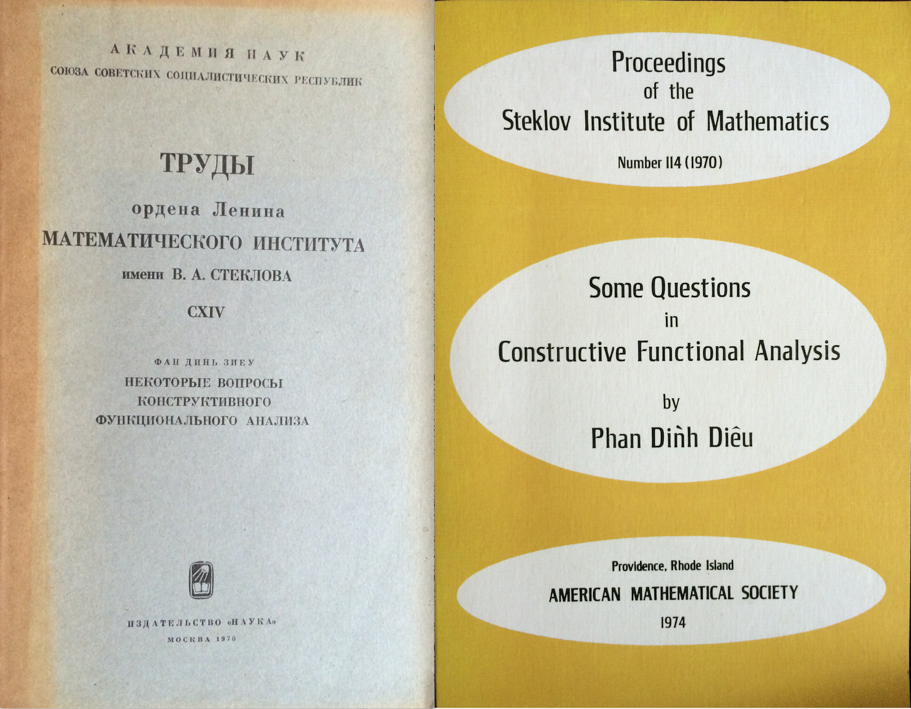
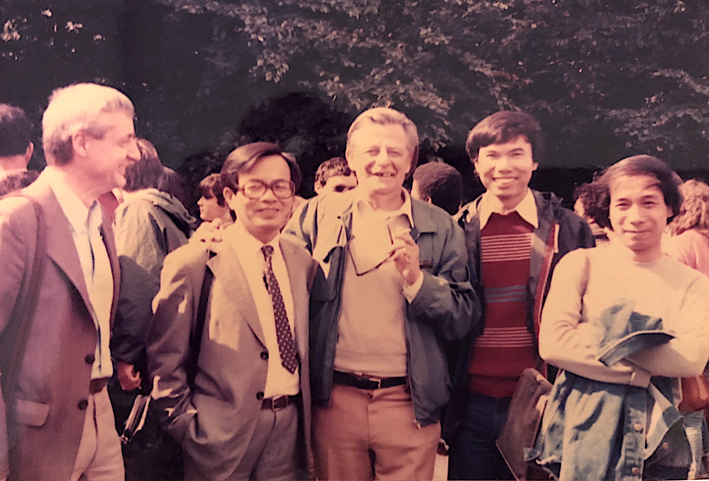
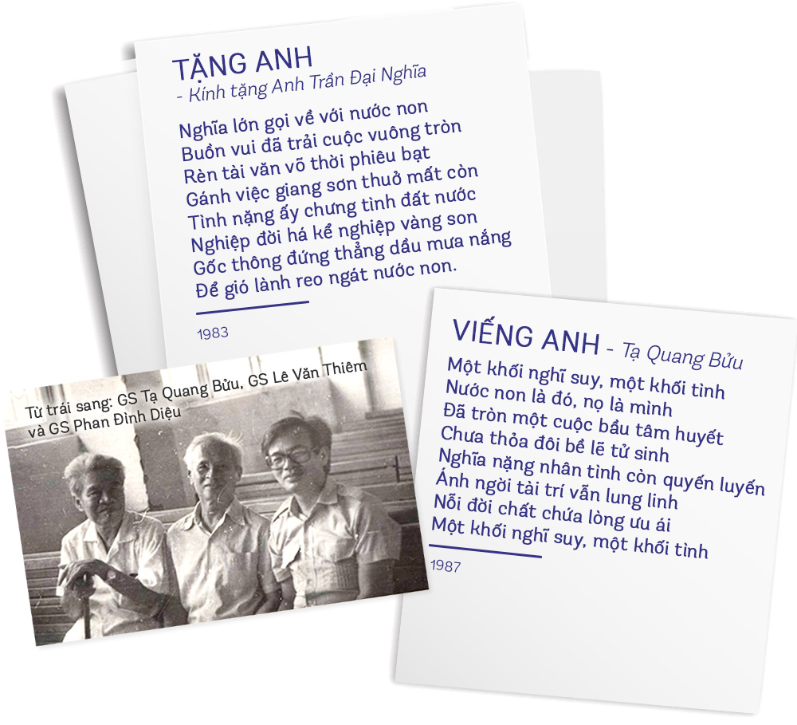
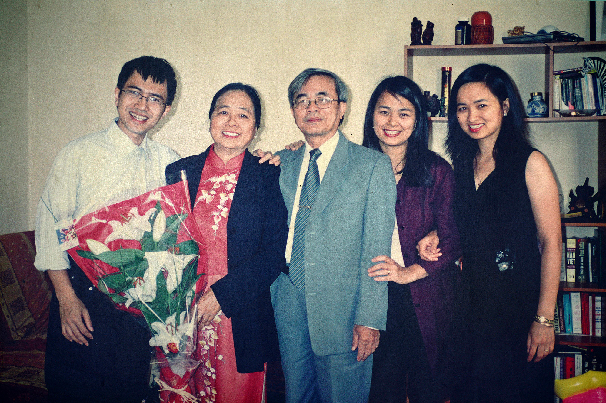
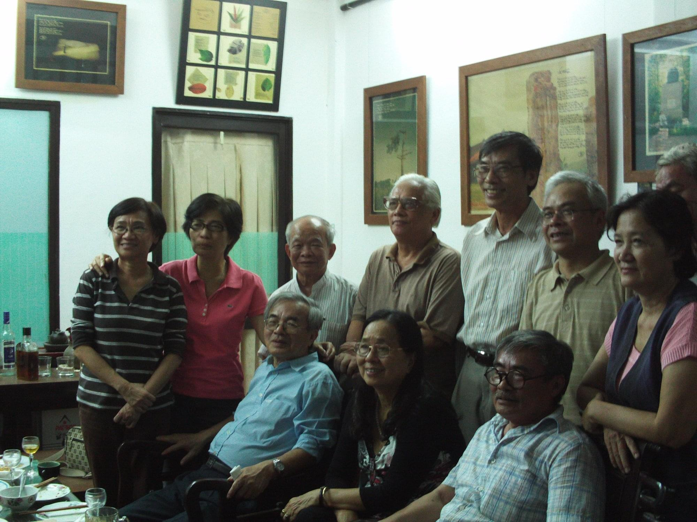
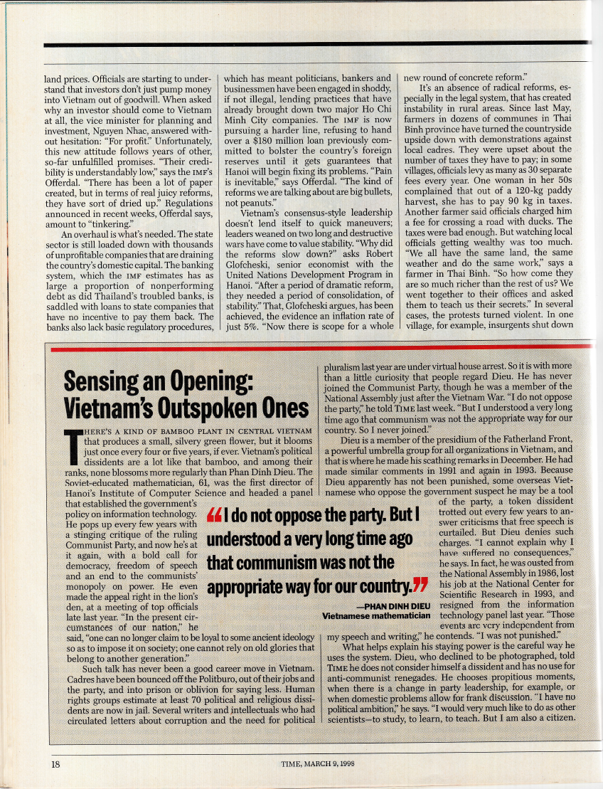
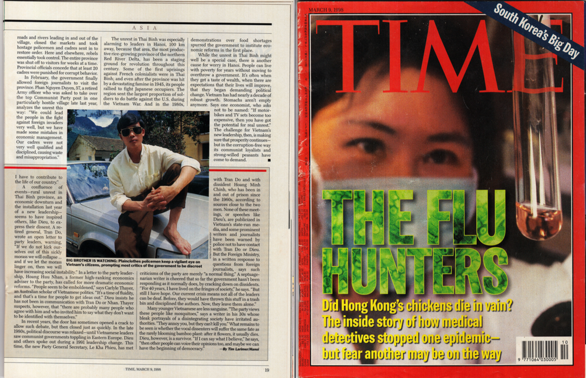
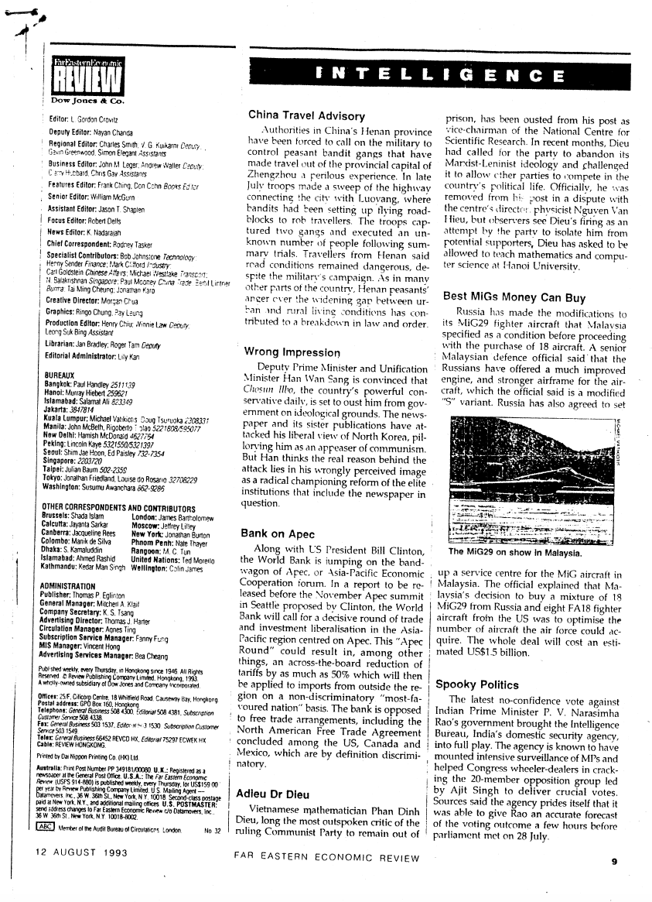
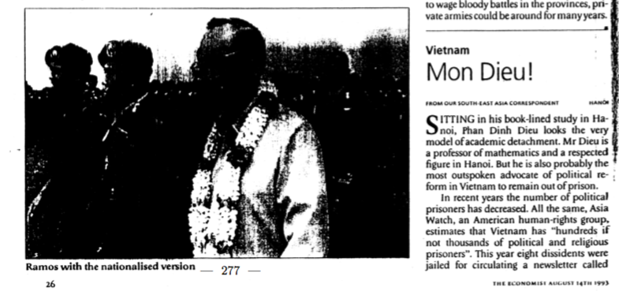

Viết về Anh, Giáo sư Phan Đình Diệu
Nguồn: Báo Tia Sáng

Mấy hôm nay trên báo chí, trên “cộng đồng mạng” tràn ngập những bài viết, những lời bày tỏ tình cảm với Anh. Ai cũng muốn viết gì đó về Anh.
Tôi cũng vậy.
Nhưng viết về Anh thật khó. Không thể nói những lời thừa. Không thể nói những lời mọi người đều đã nói. Con người Anh luôn độc đáo, sâu sắc, chính xác. Rất khó bỏ đi dù chỉ một từ nào đó trong những bài viết của Anh.
Anh độc đáo ngay từ khi chập chững vào làng Toán. Vì thích Số học mà Anh đã tự học tiếng Trung để dịch cuốn Số học của Hoa La Canh. Vì yêu thích sự chính xác mà anh chọn cho mình môn Logic khi đi làm nghiên cứu sinh ở Liên Xô. Chỉ trong 5 năm, anh đã xây dựng nên một ngành mới trong Toán học: Giải tích hàm kiến thiết. Công trình của anh được in thành sách (Some questions in constructive functional analysis. Proceedings of the Steklov Institute of Mathematics, No. 114 (1970). Translated from the Russian by J. M. Danskin.American Mathematical Society, Providence, R.I., 1974. iv+228 pp.). Chữ “kiến thiết” được dùng cho những ngành Toán mà ở đó không chấp nhận chứng minh phản chứng: không thể khẳng định một cái gì đó là “tồn tại” nếu điều giả thiết “nó không tồn tại” dẫn đến nghịch lý. Muốn chứng minh “tồn tại”, phải đưa ra thuật toán xây dựng (“kiến thiết”) nó.
Tư tưởng “kiến thiết” đó cũng làm Anh trở nên gần gũi với Khoa học máy tính một cách tự nhiên. Và với nhãn quan sáng suốt của mình, Anh nhận ra ngay từ những năm đầu của thập ký 70, thế kỷ trước, rằng Tin học chính là Khoa học của tương lai, và Việt Nam nhất thiết phải xây dựng ngành Tin học. Có thể nói rằng trình độ Tin học của Việt Nam thời kỳ đó cao hơn nếu so sánh với những nước trong vùng Đông Nam Á. Chúng ta đã từng đi trước, nhưng vì nhiều nguyên nhân nên đã tụt lại phía sau.
Đọc lại những bài viết của Anh về Khoa học, về con đường phát triển của xã hội Việt Nam, không thể không ngạc nhiên về những kiến giải sâu sắc, độc đáo, về tầm nhìn của anh. Sự phát triển, những vấn đề mà xã hội đang phải đối mặt gần như là “minh hoạ” những gì Anh nói đã vài chục năm. Và trên hết, ta cảm nhận tấm lòng Anh, một kẻ sỹ của thời đại mới, luôn trăn trở với con đường đi của đất nước.
Anh không chỉ là nhà khoa học, nhà tư tưởng, Anh là người say mê tất cả những gì thuộc về tri thức nhân loại. Tôi còn nhớ, Anh đã bình rất hay về cảnh đối đáp giữa Khuất Nguyên và Ngư Phủ trên sông Tương (trong một bài viết, hình như đăng trên báo Văn Nghệ). Những lần trò chuyện về Thơ, tôi thấy Anh rất thích Rabindranath Tagore, đặc biệt là những câu:
Đôi mắt lo âu của em buồn,
đôi mắt em muốn tìm vào tâm tưởng của anh
như trăng kia muốn vào sâu biển cả…
Trái tim anh cũng ở gần em,
như chính cuộc đời của em vậy
nhưng chẳng bao giờ em hiểu hết nó đâu.
Hình như Anh luôn có cảm giác người khác không hiểu hết mình. Mà đúng vậy. Anh sâu sắc quá, độc đáo quá, nghĩ xa hơn người khác nhiều quá, để người ta có thể hiểu hết về Anh. Nhưng dù không hiểu hết, Anh vẫn chiếm trọn tình yêu và lòng khâm phục của những người có dịp gần Anh.
Những lời sau đây của Tagore viết về Cái Chết, hình như cũng chính là dành cho Anh:
Khi nghĩ về những năm tháng đã qua,
đã trôi xuôi theo theo giòng chảy
của cuộc sống, và tình yêu, và cái chết,
tôi thấy sự ra đi vĩnh viễn là tự do biết bao.
Không cần phải nói lời cầu mong Anh yên nghỉ. Dường như Anh đã đi xa, để có thể được tự do suy tưởng. Một mình.
Phan Đình Diệu đã sống một cuộc đời rất đàng hoàng
Nguồn: Báo Người Đô Thị
“Anh Diệu luôn trân trọng con người để luôn có được những ứng xử, chăm lo tinh tế nhất khiến chúng ta chỉ còn biết nói rằng, sống tử tế là phải như thế đấy, chơi với nhau là phải như thế…” - nhà văn lão thành Nguyên Ngọc nói về người bạn lớn của mình, cũng là người từng đồng hành cùng ông trong suốt một nhiệm kỳ làm Đại biểu Quốc hội (khoá VI): GS. Phan Đình Diệu, nhân kỷ niệm 5 năm ngày mất (13.5.2018) và 87 năm ngày sinh (12.6.1936) của nhà toán học, nhà khoa học máy tính nổi tiếng.
“Cái tự do thơ thới ấy, nó rất gần với văn nghệ sĩ”
Trước khi có một tình bạn thân thiết với GS. Phan Đình Diệu, ông từng quan sát nhà toán học ở cự ly nào?
Năm 1988, khi tôi đang là Tổng biên tập báo Văn Nghệ, thì có một bài báo gửi đến toà soạn, ngắn thôi, chỉ khoảng tầm hơn 200 chữ, ký tên hai ông Phan Đình Diệu và Hoàng Tụy.
Nội dung bày tỏ mối băn khoăn của hai nhà khoa học hàng đầu về khái niệm “quay hộp đen” mà Tổng Bí thư thời kỳ ấy đã sử dụng trong một bài phát biểu đăng báo (thậm chí về sau còn thành tên chuyên mục của tờ báo ấy).
Tác giả bài báo cho rằng, đây là một cách vận dụng sai thuật ngữ và là một phép liên tưởng thiếu chính xác, do chưa hiểu thấu đáo về kiến thức chuyên ngành. Bài viết tuy ngắn kỷ lục và chỉ chiếm một ô nhỏ trên báo nhưng thực sự gây chấn động, khiến báo bạn sau đó phải bỏ hẳn chuyên mục đó.
Nhưng trước đó thì chúng tôi cũng đã quen biết nhau, đặc biệt là khi cùng tham gia Quốc hội khóa VI (1976 - 1981), thuộc Ủy ban Văn hóa Giáo dục của Quốc hội.
Ở vào cái thời mà hội trường Quốc hội chưa có bấm nút, chưa có chất vấn Đại biểu Quốc hội… thì những tiếng nói phản biện đã cất lên trong bối cảnh thế nào?
Diễn đàn Quốc hội bấy giờ thì gần như không có tiếng nói phản biện, riêng Phan Đình Diệu luôn là người đầu tiên đưa ra những ý kiến trái chiều. Anh Diệu thường nói nhiều về việc cần lắng nghe ý kiến của trí thức, đặc biệt là vấn đề dân chủ.
Thường trong nhóm chúng tôi hồi đó, những ý kiến của các anh Phan Đình Diệu, Tạ Quang Bửu… bao giờ cũng là những ý kiến rất sâu sắc và đáng lắng nghe. Ba anh em chúng tôi hồi đấy cũng chơi thân nhau nên cũng bàn được với nhau nhiều việc, nhiều chuyện.
Là một nhà toán học nhưng anh Diệu có mối quan tâm rộng lắm, anh cũng đặc biệt quan tâm đến văn hóa. Hồi Thủ tướng Võ Văn Kiệt còn sống, ông từng gợi ý cho tôi là nên thành lập một viện nghiên cứu tư nhân về văn hóa, và người đầu tiên tôi nghĩ ngay tới không ai khác chính là GS. Phan Đình Diệu. Hai anh em cũng đã bàn đến việc nếu làm nghiên cứu về văn hóa thì nên làm thế nào để văn hóa gắn liền với giáo dục, làm sao để tạo ra được một cái phanh cho vấn nạn văn hoá đang xuống cấp trầm trọng…
Đó có phải là một trong những lý do khiến GS. Phan Đình Diệu trở thành một cái tên có sức hút mạnh với giới văn nghệ sĩ?
Lý do trước hết, theo tôi, anh Diệu là một con người rất đàng hoàng. Anh thực sự đã sống một cuộc đời rất đàng hoàng, với tất cả sự thẳng thắn và trung thực. Cái tự do thơ thới ấy, nó rất gần với giới văn nghệ sĩ.
Anh Diệu cũng là người làm thơ rất hay, có một bài thơ anh làm tặng GS. Trần Đại Nghĩa tôi rất thích: ...Tình nặng ấy chưng tình đất nước/Nghiệp đời há kể nghiệp vàng son...
Con người đó là người rất hiểu thơ và rất hiểu văn học, vì thực ra toán học nó rất gần với văn học. Tôi vẫn hay nói với các anh em trẻ, nhất là mấy anh em trẻ viết văn, là một trong những nhược điểm của các bạn là ít quan tâm đến khoa học tự nhiên quá, trong khi khoa học tự nhiên, chẳng hạn như toán học, cái sức tưởng tượng của nó ghê gớm lắm (con tôi cũng làm toán nên tôi biết), vì thế nó rất gần với văn học nghệ thuật. Tôi với anh Diệu dễ gần nhau, thân nhau chắc cũng là vì thế.
Điều gì đã làm nên sự đàng hoàng đó, theo ông?
Tính cách Nghệ là một phần, cái nôi địa linh nhân kiệt là một phần. Phần nữa, quan trọng không kém, là thế hệ của chúng tôi đã may mắn được hưởng một nền giáo dục phải nói là rất đàng hoàng, với những ông thầy “ghê gớm”, có sức ảnh hưởng rất lớn tới học trò. Thế hệ bọn tôi được một cái điều như thế!
Dường như lâu lắm tôi mới nghe đến ba chữ tưởng như rất quen tai này: “sống đàng hoàng”. Theo ông, thế nào là “sống đàng hoàng”?
Nó thật ra rất đơn giản, nó đến từ sự tử tế. Anh Diệu luôn trân trọng con người để luôn có được những ứng xử, chăm lo tinh tế nhất khiến chúng ta chỉ còn biết nói rằng: Sống tử tế là phải như thế đấy, chơi với nhau là phải như thế…
Anh Diệu là người sống rất tình cảm. Tôi nhớ anh từng kể với tôi, thời Cải cách ruộng đất, có lần anh thấy người ta giải một “tên địa chủ”, lại gần thì hóa ra là ông thầy mà anh ấy rất kính trọng, thế là cậu học trò ấy cứ đứng đấy khóc mãi. Tận tới sau này khi kể lại cho tôi nghe, anh còn ứa nước mắt. Cái ấn tượng đó hẳn đã hằn rất sâu trong tâm trí anh Diệu để sau này góp phần hình thành nên cái con người cương trực và tử tế nơi anh.
Anh Diệu, tôi nghĩ anh ấy là một trí thức lớn đúng nghĩa.
“Sự nhất quán ấy không dễ gì mà có được”.
Thế nào là một “trí thức lớn đúng nghĩa”, theo ông?
Trí thức theo tôi không chỉ là người học cao đâu, có nhiều người học rất ghê, nhưng người ta cũng chỉ có thể gọi họ là nhà bác học, chứ không phải là một bậc trí thức. Trí thức, nói một cách nôm na, còn phải là những người “giữa đường thấy sự bất bằng chẳng tha”; hay như từ của anh Cao Huy Thuần, là mấy người hay xớ rớ vào việc người khác, rằng việc đó không ảnh hưởng gì tới họ, nhưng họ vẫn thấy mình liên quan, mình cần có trách nhiệm tới cùng.
Nhiệm vụ của trí thức theo tôi là làm cho xã hội không được yên, không thể đứng yên, theo cái nghĩa tích cực của điều này.
Hiểu theo nghĩa đó, ông thấy xã hội Việt Nam đương đại trong mấy thập niên gần đây có được nhiều bậc trí thức? Và ông, có định vị mình là trí thức?
Cũng có, ông Phan Đình Diệu là trí thức, ông Hoàng Tụy cũng là trí thức…, còn những người khác nữa. Tôi cũng là người trí thức, vì tôi toàn đi nói những cái chuyện có dính gì đến tôi đâu, mà đời tôi cũng chẳng cần cái gì khác ngoài cái đời sống bình thường như thế này.
Ở thời điểm bản lề trước và sau Đổi mới, khi báo Văn Nghệ (mà có thời gian ông làm Tổng biên tập) lần lượt đăng những truyện ngắn gây chấn động văn đàn của Nguyễn Huy Thiệp hay bút ký nổi tiếng Cái đêm hôm ấy… đêm gì của Phùng Gia Lộc…, thì tại diễn đàn Quốc hội (các khoá V, VI) hay Mặt trận Tổ quốc Việt Nam (các khoá III, IV, V, VI, VII), GS. Phan Đình Diệu cũng được biết là một tiếng nói phản biện đầy nhiệt thành và nhiều trăn trở. Ông nghĩ, đó là do “thời thế tạo anh hùng”, hay chính là ngược lại?
Thực ra thì hồi đó bọn mình cũng có tranh thủ được một thời gian để kịp nói ra được những gì cần nói. Thế nhưng để có được một tiếng nói xuyên suốt, cả trong những thời điểm không thuận lợi, thì đấy còn là bản lĩnh và tầm nhìn.
Tôi thì thật ra cũng không hiểu được hết các bước trưởng thành của một tiếng nói đâu, vì với mỗi người, các bước ấy nó rất khác nhau. Có người đi nhanh hơn, nhìn thấy được sớm hơn và đáng kể, là cất được tiếng nói sớm hơn. Những tiếng nói ấy mạnh lắm, và đó là sức mạnh tự thân của họ.
Một tiếng nói như Phan Châu Trinh chẳng hạn, nó lạ lắm, tận giờ chúng ta vẫn chưa thể hiểu hết được ông ấy đâu, mấy mươi năm nay tôi cứ nghĩ mãi về cái ông Phan Châu Trinh này, rất khó hiểu vì sao lúc đó ông ấy lại có thể xuất sắc đến thế. Nhưng ông ấy cũng là một người vô cùng cô độc. Tôi nghĩ anh Diệu, anh ấy hiểu rất rõ những điều đó.
Còn như tôi đây chẳng hạn, tôi nói thật là các bước của tôi nó cũng chậm lắm, cái giai đoạn mà tôi giáo điều nó cũng kéo dài lắm. Phải mãi đến tận năm 1979, khi sang Campuchia và tận nhìn tận thấy, tôi mới sực nhận ra, khi cái gọi là “cá nhân con người” bị đổ đồng, bị xóa sổ, bị thay thế bởi cái “chủ nghĩa bầy đàn”… thì nó có thể khủng khiếp đến thế nào.
Thế nên khi về tôi mới quyết làm cái Đề dẫn năm 1979 như sau này mọi người vẫn hay nhắc đến. Anh em văn nghệ sĩ hồi đấy hào hứng lắm, anh Diệu cũng biết chuyện bọn tôi làm cái Đề dẫn đó, và ủng hộ…
Nhìn thấy sớm là một chuyện, nhưng hơn hết, còn là sự nhất quán, khi trước giờ vốn không thiếu những tiếng nói “linh hoạt”, “gió chiều nào xoay chiều nấy”…?
Thực ra mà nói, cái phẩm chất đó của con người, cái sự nhất quán đó của con người, cũng không dễ gì có được, mà đôi khi không phải do họ muốn thế, tính thế. Có thể có lúc mình không biết mình sai, đời tôi sai nhiều lắm chứ, nhưng có điều mình sai một cách trung thực; mình cũng có lúc giáo điều, nhưng mình giáo điều một cách trung thực…
Anh Diệu thì khác, anh ấy có được cái sự nhất quán đó.
Ông nghĩ vì sao một tiếng nói trái chiều như Phan Đình Diệu vẫn có thể vang lên một cách dõng dạc tại các diễn đàn chính thống trong suốt một thời gian dài, dù không “dễ nghe” chút nào?
Ở anh Diệu, anh ấy có một chữ “Liêm” rất rõ ràng, cái mục đích lên tiếng của anh ấy nó vô cùng trong sáng. Anh chỉ đơn giản là người dám nói lên sự thật thôi, còn nhiều người khác thì không dám. Anh nói rất chặt chẽ và đàng hoàng, lịch sự; không đả kích cá nhân, cũng không nói sau lưng hay bên lề. Một người đứng đắn, đàng hoàng, có uy tín quốc tế như thế, người ta phải nể chứ!
Lê Quân thực hiện
Anh Diệu
Nguồn: Báo Tia Sáng

Xin được gọi anh là một hào kiệt và người anh cả của tin học Việt Nam.
Đúng nửa thế kỷ trước chúng tôi là những cô bé cậu bé lớp chuyên toán của Trường Đại học Sư phạm Hà Nội, sơ tán ở làng Viên Nội bên bờ sông Đáy. Mỗi chiều muộn thứ bảy lại thấy một người đẹp trai đạp xe về Viên Nội thăm vợ là cán bộ đi học ở Khoa Toán mới sinh con. Mọi người bảo nhau đấy là nhà toán học Phan Đình Diệu, mới tốt nghiệp tiến sĩ khoa học ở Liên Xô về nước. Hồi ấy số tiến sĩ khoa học của cả nước chỉ đếm trên đầu ngón tay. Sáng chủ nhật thấy nhà toán học mang một chậu quần áo tã lót đi giặt, rồi gánh nước từ giếng làng về đổ bể như lũ học trò chúng tôi.
Câu chuyện tuổi thơ ấy bẵng đi chục năm khi tôi đang học dở ngành toán thì đi lính,có những ngày Quảng Trị hè 1972, bị thương và về học tiếp chương trình đại học ngành toán ứng dụng. Ra trường, người bạn thân đang làm ở Viện Khoa học Tính toán và Điều khiển của Viện Khoa học Việt Nam, nay là Viện Hàn lâm KH\&CN Việt Nam, rủ tôi xin về Viện và dẫn đến gặp Viện trưởng. Gặp lại anh, người gánh nước cùng chúng tôi năm xưa.
Xem tên các môn học rất mới của Khoa Toán-Lý Bách Khoa hồi đó, hỏi về luận án tốt nghiệp và khen học tốt, anh đồng ý nhận tôi về Viện. Ít ngày sau tôi thành một “viện sĩ” như tụi tôi vẫn đùa (cũng lúc ấy có chuyện một cô gái tốt nghiệp ở Đức về, mang lá thư của người bác đang làm Bộ trưởng đến đề nghị anh Diệu nhận về Viện, anh đã dứt khoát từ chối).
Có một thời gian dài là “quân anh Diệu”, nhớ và nghĩ về anh tôi thấy rõ mấy điều sau.
1. Sự dấn thân của anh Diệu vào lĩnh vực tin học (còn được gọi với các tên công nghệ thông tin hay khoa học máy tính). Theo quan sát của tôi, mỗi lĩnh vực khoa học ở mỗi quốc gia có những người vượt trội trong quãng thời gian một vài chục năm. Đó là những người có tài năng xuất chúng và có sự phấn đấu bền bỉ. Trong toán học Việt Nam đó là các giáo sư Lê Văn Thiêm, Hoàng Tuỵ, rồi nhiều năm sau là Ngô Bảo Châu… Trong tin học tôi nghĩ đấy là anh Diệu.
Trong những năm đầu nghiên cứu toán anh Diệu đã đạt những kết quả rất xuất sắc, và tôi tin anh sẽ làm được rất nhiều nữa nếu tiếp tục con đường này. Nhưng trong những năm tháng chiến tranh ấy chúng ta đã có những chiếc máy tính lớn Minsk 22 của Liên Xô, ODRA 1304 của Ba Lan… và cần dùng chúng cho các nhiệm vụ quốc gia. Được giao trọng trách xây dựng và phát triển ngành tin học, anh Diệu đã dành hầu hết thời gian để tự học và nghiên cứu về tin học, một lĩnh vực mới rất đa dạng và phong phú.
Khác với toán học nơi người làm toán thường nghiên cứu độc lập và có thể chỉ cần bút và giấy, tin học vừa có phần lý thuyết luôn thay đổi rất nhanh, vừa gắn với công nghiệp máy tính (phần cứng), vừa gắn với phát triển các thuật toán và chương trình (phần mềm), và vừa gắn với các hệ thống ứng dụng (ở ta hồi đó là những nhiệm vụ tính toán khoa học trong khí tượng và địa chất…). Dân tin học cũng thường không làm việc độc lập, mà phải liên kết trong cácnhóm. Người phụ trách tin học bắt buộc phải đọc và học nhiều kiến thức khác nhau, thường xuyên thay đổi. Phải có niềm ham mê đặc biệt và một trí lực phi thường mới có thể đọc và hiểu được nhiều thứ như vậy, để có thể dẫn dắt một tập thể, để có thể chia sẻ và thuyết phục một cộng đồng. Và anh Diệu đã làm như vậy.
Kiên định với những quan điểm riêng là điều luôn nhất quán ở anh Diệu.
Trong quỹ thời gian hạn chế, anh Diệu vẫn làm nghiên cứu về toán. Anh viết bài về mật mã, về lập luận xác suất… Anh viết sách về lý thuyết automat và thuật toán, sách về logic toán. Hơn mười năm trước tôi có dịp mời anh thăm Viện Khoa học và Tiên tiến Nhật Bản và trao đổi với giáo sư Ono, chuyên gia hàng đầu về logic toán của Nhật. Câu chuyện của hai vị giáo sư tuổi bảy mươi sôi nổi, sâu sắc, đầy thú vị và uyên bác.
Với anh Diệu, tôi hiểu việc gác lại con đường làm toán để dành tâm sức cho sự phát triển nền tin học nước nhà từ thuở sung sức của đời làm khoa học là một lựa chọn đúng đắn. Anh làm được nhiều hơn cho cộng đồng và đất nước.
2. Tầm nhìn sâu rộng của anh Diệu và những đóng góp của anh về chính sách phát triển tin học quốc gia. Tiêu biểu nhất là ba lần anh Diệu chủ trì việc xây dựng chương trình quốc gia về công nghệ thông tin.
Ngay từ khi mới đi làm tôi đã có dịp xem tập tài liệu rất dầy do anh Diệu và anh Trần Lưu Chương (khi đó phụ trách Cục máy tính của Bộ Khoa học và Công nghệ) viết xong vào năm 1976. Tài liệu này trình bày bức tranh tổng thể về tin học trên toàn thế giới và đề xuất kế hoạch phát triển ngành tin học Việt Nam. Vào năm 1976 sinh viên tụi tôi vẫn lập trình trên các băng từ đục lỗ, thì một chương trình chi tiết như vậy cho thấy người viết đã có tầm nhìn rất xa và cái nhìn đã rõ khi vạch con đường của tin học Việt Nam.
Nhưng đề xuất năm 1976 này đã chưa được phê duyệt. Trong các năm 1981 và 1982, dưới sự chỉ đạo tâm huyết của anh Diệu, nhóm các nhà khoa học trẻ của Viện Khoa học Tính toán và Điều khiển đã thiết kế và chế tạo chiếc máy vi tính mẫu đầu tiên của Việt Nam, như một trong những chiếc máy vi tính được chế tạo sớm ở châu Á. Vào năm 1984 khi Việt Nam vẫn đang bị cấm vận, anh Diệu lại chủ trì đưa ra một bản mới của chương trình. Vẫn thường được xem là những chiếc máy và chương trình "đẻ non" khi xã hội chưa sẵn sàng, cácbước đi đầu này đã dẫn đến những bước đi tiếp theo.
Không nao núng với hai lần chưa thành công trước đó, anh Diệu- người chấp bút không mỏi mệt- đã có một bản dự thảo của chương trình được phê duyệt vào mùa hè 1994 theo Nghị định 49/CP, và từ đó một chương trình quốc gia về công nghệ thông tin đã được tiến hành.
Năm 1984 khi tôi học xong DEA (chương trình thạc sĩ ở Pháp) về xử lý ảnh và chuẩn bị tiếp tục làm luận án theo hướng này. Trong một bức thư gửi từ Việt Nam qua anh Diệu viết “nếu có thể Bảo nên chuyển qua làm về trí tuệ nhân tạo vì đấy là tương lai của tin học”. Theo lời anh tôi đã chuyển hướng, dù mất công hơn vì chưa biết gì về chuyện này. Bây giờ sau hơn ba chục năm, trí tuệ nhân tạo ngày càng có vai trò thiết yếu trong thời chuyển đổi số, càng thấy tầm nhìn của anh.
3. Những ý kiến đóng góp của anh Diệu về xây dựng đất nước. Là người luôn trăn trở, suy nghĩ về những vấn đề của phát triển đất nước, anh Diệu đã luôn thẳng thắn nêu những chính kiến của mình.
Đấy là những ý kiến anh phát biểu tại Quốc hội, tại Mặt trận Tổ quốc Việt Nam khi anh là thành viên của các tổ chức này. Đấy là các ý kiến khi anh gặp các lãnh đạo cấp cao của Đảng cộng sản và nhà nước. Đấy là các bài viết đầy tâm huyết và trăn trở về con đường phát triển đất nước. Kiên định với những quan điểm riêng là điều luôn nhất quán ở anh Diệu.
4. Mối quan hệ chân tình của anh Diệu với bạn bè và đồng nghiệp. Trong quan sát của tôi, bạn bè nước ngoài đến làm việc ở Việt Nam đều tỏ rõ sự quý trọng với anh. Đó là các nhà triết học của Viện Hàn lâm Nga khi đến Việt Nam đã duy nhất mời anh Diệu viết với họ về triết học trong khoa học, là giáo sư Henri van Regemorter và kỹ sư Alain Teissonnière từ Pháp khi giúp ta phát triển tin học, là vợ chồng nhà toán học Đức Klaus và Angela Krickerberg sang dạy về dịch tễ học, là giáo sư Judy Ladinsky giúp ta xây dựng hợp tác khoa học Mỹ-Việt từ khi đất nước bị cấm vận… Anh Diệu cũng được các anh chị Việt kiều rất quý trọng, và nhiều người đã về giúp Việt Nam theo lời mời của anh. Tôi thấy hầu hết những người làm việc cùng đều quý trọng anh. Anh Diệu không lấy lòng người khác, mà bằng trí tuệ và nhân cách, bằng công việc chung, bằng sự chân tình, anh thu phục lòng người. Với những người trẻ hơn như tụi tôi, anh còn có nhiều chia sẻ, chỉ dẫn ân cần.
Tôi tự hỏi nếu chỉ dùng một vài từ để nói về anh Diệu, sẽ là gì?
Hồi nhỏ tôi mê mẩn “Lá cờ thêu sáu chữ vàng” của nhà văn Nguyễn Huy Tưởng viết về Trần Quốc Toản với hình ảnh của “sáu trăm gã hào kiệt”, và nhớ đến cả nước đã trân trọng gọi Đại tướng Võ Nguyên Giáp là “người anh cả của quân đội nhân dân Việt Nam”. Với anh Diệu, xin được gọi anh là một hào kiệt và người anh cả của tin học Việt Nam.
Năm 1954 sau ngày hoà bình lập lại ở miền Bắc, vừa học xong phổ thông ở quê Hà Tĩnh, như nhiều chàng trai trẻ miền Trung đầy nghị lực, anh Diệu đi bộ ra Hà Nội thi vào trường Đại học Khoa học, rồi theo học trường Đại học Sư phạm Hà Nội. Tốt nghiệp thủ khoa ngành Toán, anh tham gia giảng dạy ở đây 5 năm cho đến 1962 được cử đi làm nghiên cứu sinh về Toán ở trường Đại học Tổng hợp Moscow. Lĩnh vực nghiên cứu lúc đó của anh Diệu là toán học kiến thiết. Nói nôm na, đây là lĩnh vực nhằm không những chỉ ra các sự “tồn tại” trong toán học mà còn chỉ ra liệu “ta có thể xây dựng” được chúng với các thuật toán. Luận án tiến sĩ khoa học của anh Diệu dựa trên sáu bài báo anh đăng trên tạp chí “Doklady Akademii Nauk” nổi tiếng ở Nga, sau được in trong cuốn sách “Một số câu hỏi về giải tích hàm kiến thiết” ở Nga và ở Mỹ. Năm 1967 sau khi bảo vệ luận án tiến sĩ khoa học, anh Diệu về nước tham gia xây dựng Phòng Toán học Tính toán của Ủy ban Khoa học và Kỹ thuật Nhà nước, tiền thân của Viện Khoa học Tính toán và Điều khiển (cũng như các Phòng Toán học, Phòng Vật Lý... là tiền thân của Viện Toán học, Viện Vật lý... của Viện Khoa học Việt Nam).
GS Phan Đình Diệu: Tâm và Tầm của Trí Thức Việt
Nguồn: VietnamNet - eMagazine

Hồi đầu Xuân 2016, Thủ tướng Nguyễn Xuân Phúc bỗng đi thăm một số trí thức lão thành, trong đó có GS. Phan Đình Diệu. Khi đó, GS đã không còn minh mẫn. Nhưng cuộc viếng thăm của Thủ tướng tới tận nhà ông, chứng tỏ sự trọng thị trí thức của Chính phủ mới, đó là tín hiệu tốt lành cho thời kỳ kiến tạo và phát triển.
Tôi đón nhận tin này với tâm trạng rất vui bởi GS. Diệu là đồng nghiệp, một nhà khoa học lớn, một nhân sỹ đáng kính với sự chính trực của một trí thức theo đúng nghĩa.
Có một kỷ niệm nho nhỏ. Năm 1977, tôi đang học năm cuối của khoa Toán Tin của Đại học Tổng hợp Warsaw, tốt nghiệp thì về nước, còn trẻ nên chả lo tìm việc. Nhớ trưa đó, có người gõ cửa và bảo, muốn nhờ tôi cắt tóc cho một vị khách từ trong nước.
Gặp một người trán rộng, rất trẻ khoảng trên dưới 40 tuổi, giọng Nghệ Tĩnh khỏe và khá thân thiện, tự giới thiệu là Phan Đình Diệu, Viện trưởng Viện Khoa học Tính toán và Điều khiển, tiền thân của Viện Công nghệ Thông tin bây giờ.
Sinh viên học nước ngoài 5-6 năm nên chả biết trong nước ra sao, chẳng có thông tin như bây giờ, thư đi cả tháng mới tới so với thời internet có thể inbox nhắn nhau vài giây với khoảng cách hàng chục ngàn km. Tôi vừa cắt tóc cho anh (thực là xén qua cho gọn bằng kéo) vừa được anh hỏi chuyện thân tình.
Hỏi cậu học gì. Dạ em học tin học ạ. Ôi, viện mình đang tìm người tốt nghiệp ngành này đây. Mình thật thà, nhưng em học kém lắm, không có bằng đỏ. Mình lấy người về làm việc chứ không lấy bằng đỏ. Và anh ghi cho tôi mảnh giấy hẹn, nếu về Hà Nội thì tìm anh.
Cứ nghĩ anh hứa cho qua, nhưng tốt nghiệp về Hà Nội mới thấy xin việc với bán kính quanh hồ Gươm vài km, mốt thời thượng hồi đó, là không hề dễ vì ngành tin mới quá. Chợt nhớ ra địa chỉ liên lạc, tìm lên khu Đồi Thông trong làng Liễu Giai hoang vắng, nhà cửa tồi tàn, dân trồng hoa tưới phân tươi, thế mà vẫn có một viện khoa học đầu ngành với những cán bộ nghiên cứu trẻ măng đang miệt mài bên những trang sách với những giấc mơ đưa đất nước bay xa.
Thật bất ngờ, GS Diệu vẫn nhớ bạn trẻ cắt tóc ấy và bằng một cái giấy viết tay lên Bộ Đại học, sau vài tuần, tôi nhận việc ở viện mà không hề tốn một điếu thuốc nào.
Làm việc với giáo sư sau gần hai chục năm, tôi hiểu ông nhìn vào hiệu quả công việc chứ không dựa vào bằng đỏ bằng xanh hay học vị, học hàm. Chỉ cần chi tiết đó thôi đã làm cho lớp trẻ khoa học như tôi lao động hết mình, cơm cặp lồng rau muống luộc nhưng thức thâu đêm để tìm lỗi cho hàng ngàn dòng lệnh ngôn ngữ máy. Đi theo ông là những nhà khoa học trẻ, muốn cống hiến hết mình cho cái máy vi tính đầu tiên tại Việt Nam cũng như ở châu Á, mà bản thân ông cũng phải xách tay những chip từ Pháp về thay vì mua xe máy Peugeot tương đương với một căn hộ cao cấp.
Nhưng theo một nghĩa nào đó, chúng tôi chỉ là những thợ lập trình, thợ công trình khoa học, thợ các dự án, nhưng chưa phải một trí thức biết suy nghĩ về thời cuộc. Nói chuyện với ông lúc trà dư tửu hậu mới biết sự trăn trở của ông về hệ thống, về phe Liên Xô, Đông Âu, bên này bên kia, mà ông từng phát biểu trong các hội nghị, nói với các nhà lãnh đạo cao cấp thời đó, cái được và chưa được với những giải pháp cấp bách.
Cách đây gần 30 năm, khi bàn về vai trò của trí thức, GS cho rằng, nước ta có nhiều nhà toán học, nhà vật lý học, nhà sinh học, kỹ sư, và nhà kinh tế. Theo GS, đào tạo những “nhà trên” thành chuyên viên thì dễ nhưng thành trí thức khó hơn bởi họ phải học để độc lập trong tư duy và luôn suy nghĩ về những vấn đề của xã hội.
So sánh ba thời kỳ, ông chỉ rõ, trí thức thời Pháp thuộc có những người dũng cảm và đáng kính, lớp người được đào tạo sau 1954 mang bóng dáng các chuyên viên, lớp trí thức miền Nam sau 1975 thì phần lớn đã ra đi hoặc chọn sự im lặng, nếu họ muốn quay về phục vụ thì cũng khó bởi họ xa rời môi trường trong nước mà hải ngoại không phải là mảnh đất thuận lợi cho lực lượng trí thức tích cực.
Theo ông, lực lượng trí thức phải độc lập về xã hội và chính trị, là cánh chim báo bão cho thời đại. Thế hệ chúng tôi quả là thiếu vắng tầm nhìn đó bởi cơm áo gạo tiền, ăn chưa đủ, nước điện phập phù, bụng đói làm sao nghĩ được vĩ mô, có tâm chưa đủ.
Làm việc một thời gian dài, tôi biết ông sinh ra trong một gia đình giầu truyền thống hiếu học ở Can Lộc, Hà Tĩnh, cha là giáo viên thường xa nhà, mẹ làm ruộng nuôi 7 người con ăn học, từ nhỏ ông đã tỏ ra là học sinh xuất sắc trong vùng. Năm 1954 tốt nghiệp cấp 3, cậu học trò Diệu đi bộ 10 ngày từ Hà Tĩnh ra học ĐH Sư phạm ở Hà Nội.

Nhớ hồi về viện dự các buổi seminar do ông giảng về otomat hữu hạn, lưới Petri, dù kiến thức toán tin rất cao siêu nhưng cách giảng của ông rất dễ hiểu, hội trường lúc nào cũng đông nghịt. Nhưng ít ai biết vị giáo sư này thường dậy từ 3 giờ sáng đợi hứng nước và xách lên tầng 5 cho vợ đang nuôi con nhỏ ở cái thời mà “ban ngày cả nước lo việc nhà, ban đêm cả nhà lo việc nước”.
Dù kinh qua nhiều chức vụ quan trọng như Viện phó Viện Khoa học Việt Nam, Viện trưởng KH Tính toán và Điều khiển, sáng lập Hội Tin học và Chủ tịch đầu tiên, Đại biểu Quốc hội 1976-1981, nhiều chức danh khác hay chủ trì nhiều dự án lớn tầm quốc gia, nhưng có lẽ ông không thích nhắc đến. Nhưng là người biết ông khá rõ, tôi tin ông sẽ rất vui khi được nhắc đến như một người đóng góp lớn cho nền toán tin và nhất là khởi xướng thời đại vi tính tại Việt Nam ngay từ đầu những năm 1980 và coi đây là cuộc cách mạng lớn thay đổi nhân loại. Năm 1981, chiếc máy vi tính đầu tiên sản xuất tại VN và Đông Á có tâm huyết không nhỏ của ông.
Ngoài chuyện làm khoa học, với tư duy độc lập, logic và kết hợp với triết học của người làm toán, GS Diệu đã có những cách nhìn sâu rộng về thời cuộc, xu hướng phát triển và những sự đổi thay cần thiết để đổi mới đất nước. Những ý kiến phản biện thẳng thắn và chân thành của ông có ý nghĩa lớn vào sự đổi mới, góp phần giúp đất nước phát triển hơn, dân chủ hơn.
Những bài viết của ông được xây dựng trên cơ sở khoa học, phân tích các dữ liệu thực tế, phân tích các vấn đề cốt lõi của sự phát triển nền kinh tế và xã hội, mang một tầm nhìn xa và vẫn còn giá trị sau nhiều thập kỷ.
Không phải bỗng nhiên mà ông được gọi là trí thức – nhân sỹ bởi sự trung thực, tâm tài song toàn, những bài viết, những phát biểu để đời, những tiếng nói lay động thuyết phục, nhằm đóng góp chung.
40 năm trước ông đi tìm người cho nền tin học nước nhà và tôi may mắn gặp được ông. Giữ một lời hứa mà tôi có việc làm tại Hà Nội và nhân cách của ông giúp tôi hiểu thêm, trí thức ngoài việc giỏi chuyên môn cũng cần một tầm nhìn thời cuộc, biết chắp cánh ước mơ cho tuổi trẻ, dù đời thường vẫn phải xách nước giúp vợ đẻ.
Rất có thể từ một chuyện nhỏ GS Diệu nhớ cậu sinh viên trẻ cắt tóc bên Warsaw, nên một hôm có Thủ tướng nhớ tới ông có tâm và tầm của trí Việt để hỏi về chính phủ kiến tạo, bởi kiến tạo thì không thể thiếu giới trí thức đúng nghĩa.
Giáo sư Phan Đình Diệu: Khí phách và Trí tuệ
Nguồn: Báo Nghiên cứu quốc tế và Facebook của tác giả
Sáng nay tôi hỏi 5 bạn sinh trong thập niên 1980s, 3 bạn nói không biết GS Phan Đình Diệu. Tôi buồn nhưng không bất ngờ. Ông là một người mà thế hệ chúng tôi ngưỡng mộ, cả về tài năng và sự chính trực. Có lẽ vì sự chính trực ấy mà ông rất ít khi có mặt trên những bục vinh quang. Nhưng, những đóng góp thầm lặng của ông đặc biệt là trong vai trò đưa công nghệ thông tin vào VN đang ảnh hưởng lên cả những thế hệ không còn biết ông là ai nữa.
GS Phan Đình Diệu là một trong những người đầu tiên gầy dựng ngành khoa học tính toán của miền Bắc (1968). Chiếc máy vi tính đầu tiên, có thể coi là của Châu Á, ra đời năm 1980 [được thiết kế với chip Intel 8080A nên được đặt tên là VT80] là từ phòng thí nghiệm Viện Tin học của ông, bắt đầu từ những hợp tác trước đó với Viện Kỹ thuật Quân sự có sự giúp sức cả về chuyên môn và vật chất của ông André Trương Trọng Thi, người được coi là cha đẻ của máy tính cá nhân.
Theo tiến sỹ Vũ Duy Mẫn: “Năm 1981, sau khi lắp ráp thành công máy vi tính VT81 và cài đặt được ngôn ngữ lập trình Basic, Viện quyết định thử nghiệm đưa máy vi tính ứng dụng vào quản lý xí nghiệp cỡ nhỏ và vừa ở Xí nghiệp máy may Sinco”.
Nhưng, cho dù có nhiều nỗ lực, ngành công nghiệp sản xuất máy tính chỉ dừng lại ở đó. Tin học là một ngành không thể phát triển trong một quốc gia tự đóng cửa về chính trị và bị cô lập về thương mại với thế giới bên ngoài. Rất tiếc là khi tình hình trong nước bắt đầu cởi mở hơn thì GS Nguyễn Văn Hiệu được đưa lên thay giáo sư Trần Đại Nghĩa, làm Viện trưởng Viện khoa học Việt Nam. Năm 1993, ông Hiệu loại GS Phan Đình Diệu khi ngành tin học Việt Nam cần một người lãnh đạo có tâm và có tầm nhất. GS Hiệu năm ấy 45 tuổi. Ông có mọi ưu đãi của Chế độ, từ kinh phí nghiên cứu tới quyền hạn. Nắm Viện, ông Hiệu kêu gọi “các anh các chị hãy tự cứu mình”. Các công ty được thành lập, Viện khoa học Việt Nam nhanh chóng trở thành một nơi “nửa hàn lâm, nửa chợ trời”[theo TS Giang Minh Thế]. Hàng nghìn cán bộ tài năng trôi giạt khắp nơi. Nền tin học Việt Nam chuyển một cách dứt khoát sang nghề… buôn máy tính. Dù GS Phan Đình Diệu là người viết đề cương thành lập viện Công nghệ thông tin theo mô hình mới và khi bỏ phiếu thăm dò, ông nhận được tín nhiệm của đa số tuyệt đối, GS Nguyễn Văn Hiệu vẫn chọn một người có số phiếu thấp hơn vì lý do “biết làm kinh tế”. GS Phan Đình Diệu tuyên bố từ chức Viện phó Viện Khoa học Việt Nam và ra khỏi biên chế, những chuyên gia trẻ hết lòng vì khoa học như Nguyễn Chí Công, Vũ Duy Mẫn, Lê Hải Khôi, Giang Công Thế… bắt đầu phiêu bạt.
Cho dù vậy, theo GS Chu Hảo – thứ trưởng Bộ Khoa học Công nghệ thời kỳ internet được đưa vào VN – “GS Phan Đình Diệu vẫn là linh hồn của các chính sách phát triển công nghệ thông tin của nước ta”. Ông là Chủ tịch hội Tin học và là Phó Chủ tịch Uỷ ban Quốc gia phát triển Công nghệ Thông tin cho tới năm 1998. Nếu như, GS Nguyễn Văn Hiệu nổi tiếng là một người biết sử dụng khoa học để làm chính trị và leo lên tới các đỉnh cao danh vọng thì GS Phan Đình Diệu lại là một con người mà ngay cả trong chính trị cũng chỉ tham gia với tinh thần khoa học.
Theo ông Trần Việt Phương – thư ký riêng của Thủ tướng Phạm Văn Đồng – từ đầu thập niên 1960s, khi được Thủ tướng Phạm Văn Đồng hỏi, GS Phan Đình Diệu đã cho rằng, hệ thống kinh tế Xô Viết sẽ sụp đổ nếu tiếp tục vận hành như thế này[Hy vọng là Trung tâm Lưu trữ quốc gia vẫn còn giữ được ý kiến này của GS Phan Đình Diệu].
Rất có thể, quyết định không bổ nhiệm GS Phan Đình Diệu vào năm 1993 của ông Hiệu còn có “lý do chính trị”. Từ năm 1989, GS Phan Đình Diệu có nhiều phát biểu về “đa nguyên” và đặc biệt là các ý kiến thẳng thắn của ông góp ý cho Hiến pháp 1992.
Tháng 10-1988, sau khi giải quyết xong vấn đề “đa đảng”[giải tán hai đảng Dân chủ và Xã hội], Tổng bí thư Nguyễn Văn Linh bắt đầu “chống đa nguyên” nhắm vào ông Trần Xuân Bách. Tháng 3-1989, Hội nghị Trung ương 6 khẳng định “Không chấp nhận chủ nghĩa đa nguyên”. Ngay sau đó trên báo Đảng, cả Trưởng ban Tuyên huấn Trung ương Trần Trọng Tân lẫn “nhà nghiên cứu” Trần Bạch Đằng đều có bài, trên tinh thần “Mác Xít”, nhấn mạnh rằng, “Nếu hiểu đa nguyên theo nghĩa triết học thì từ lâu đã bị phê phán là sai lầm. Chúng ta không chấp nhận”.
Ngày 15-8-1989, GS Phan Đình Diệu có bài trên Sài Gòn Giải Phóng, đáp trả các luận điệu trên đây. Ông cho rằng, muốn “tìm đường đi cho đất nước trong thế giới hiện đại” thì phải “vận dụng trí tuệ của thời đại” từ “nhiều nguồn tri thức”. Theo ông, “Những gì xảy ra trong thế kỷ hai mươi là điều không thể hình dung đối với những bộ óc, dù là vĩ đại, của giữa thế kỷ mười chín”.
Sau khi đọc bài của Giáo sư Phan Đình Diệu, từ Hà Nội, Bí thư Trần Xuân Bách gửi cho TBT Sài Gòn Giải Phóng Tô Hoà một tấm danh thiếp, mặt sau ghi: “Chuyển giùm anh Phan Đình Diệu, tôi ca ngợi bài này”. Đây là bài báo cuối cùng mà Tô Hoà cho đăng với tư cách tổng biên tập Sài Gòn Giải Phóng. Ngày 28-3-1990, Trung ương cách chức ông Trần Xuân Bách.
Hai năm sau, ngày 12-3-1992, trong một phiên họp góp ý cho Hiến pháp 1992, GS Phan Đình Diệu đã có một phát biểu rất gây tiếng vang ở Uỷ ban Trung ương MTTQ Việt Nam. Ông đề nghị “tạm gác lại” việc đưa vào Hiến pháp các thuật ngữ “chủ nghĩa xã hội, chủ nghĩa Marx – Lenin”. Ông đề nghị phải dũng cảm để thấy rằng, “mô hình CNXH, cũng như Marx – Lenin không còn đáp ứng được mục tiêu phát triển đất nước trong giai đoạn hiện nay”. Giai đoạn xây dựng một “tổ quốc Việt Nam trên tinh thần đoàn kết, hoà hợp và tự cường”. Theo GS Phan Đình Diệu thì Việt Nam dứt khoát phải có “nhà nước pháp quyền”, chứ không thể tiếp tục “chuyên chính vô sản” hay “pháp quyền nửa vời”. Đặc biệt, ý kiến của ông về Mặt trận và các đoàn thể cho tới ngày nay vẫn còn rất thiết thực. Ông đề nghị, Hiến pháp chỉ cần coi lập hội là quyền tự do của người dân; từ bỏ việc nhà nước hoá các đoàn thể. Ông kêu gọi các đoàn thể thay vì dựa dẫm vào nhà nước phải lấy quần chúng làm gốc rễ, các cơ quan đảng, đoàn thể không ăn lương từ ngân sách.
GS Phan Đình Diệu không sử dụng tài năng và danh tiếng của mình để mưu cầu bổng lộc hay địa vị. Những năm sau 1975, trong những ngày đói kém, từ Paris trở về, hành lý của ông vẫn chỉ có sách và các “bản mạch” dùng cho sản xuất máy tính. Khi phải xuất hiện trên các diễn đàn thì, cho dù ở giai đoạn nào, ý kiến của ông vẫn là ý kiến của một con người yêu nước, khí phách và trí tuệ.
Nhớ một Phan Đình Diệu cương trực
Nguồn: Văn Việt và Thư viện Hà Sĩ Phu
Từ Tiệp Khắc về tôi được phân công vào Viện Sinh học thuộc Viện Khoa học Việt Nam mà GS Phan Đình Diệu là Viện phó, tương đương cấp Thứ trưởng. Tuy cùng cơ quan lớn nhưng tôi và GS Diệu chỉ ngồi chuyện trò riêng với nhau được một lần, tôi nhớ khoảng sau năm 2000. Lúc ấy tôi đã bị liệt vào tội nặng (khởi tố tội phản quốc nhưng không đem xử), còn bác Diệu thì từ lâu đã nổi tiếng là một đại biểu Trí thức trong Đoàn Chủ tịch Mặt trận Tổ quốc Việt Nam dám có những quan điểm mới lạ, không thuận chiều CS lúc bấy giờ, và ít nhiều cũng đã được ‘hưởng’ sự phê phán, nhất là sau cuộc trả lời phỏng vấn của nhà sử học Na Uy, ông Stein Tønnesson. GS Diệu nhìn sự phi lý của Mác-Lê dưới nhãn quan Toán học cũng như tôi nhìn sự phi lý ấy dưới nhãn quan Sinh học. Chúng tôi có sự đồng cảm tự nhiên.
Khi trò chuyện tôi truyền đạt ý kiến của một số anh em trí thức:
- Xã hội cần anh làm một Sakharov, anh ạ!
Bác Diệu cười:
- Mình chỉ biết làm Toán, tư duy Toán, từ đó cũng soi rọi vào xã hội, chứ không thích làm quan, làm chính trị hay làm một vai trò gì. Vai trò như vậy để Hà Sĩ Phu (sic).
Tôi lại càng cười:
- Anh nói đùa vậy thôi, tôi càng là anh bạch diện thư sinh dốt về chính trị, sức mọn tài hèn, biết gì mà làm?
Có lẽ do sự đồng cảm ấy, nên có lần mở ra cuộc thảo luận “Trí thức là ai” năm 2008, sau ý kiến của GS Diệu tôi đã viết một bài hưởng ứng (*), nói rõ mỗi người có thể nghiên cứu một lĩnh vực chuyên môn hẹp nhưng “chất Trí thức” thì không bao giờ bị giới hạn trong lĩnh vực hẹp ấy mà luôn xâm nhập vào mọi mặt của đời sống, nhất là những vấn nạn cấp thiết của đất nước mình, của nhân dân mình. Người Trí thức tham gia vào Chính trị trước hết bằng cách bộc lộ những nhận thức khoa học, khúc triết của mình.
Nay GS Phan Đình Diệu đã từ biệt chúng ta, về cõi vĩnh hằng, tôi xin thay mặt một số Trí thức ở Đà Lạt, nhóm Thân hữu Đà Lạt và CLB Phan Tây Hồ, có một Câu đối viếng như một nén nhang muộn kính cẩn thành tâm tiễn biệt một người Trí thức hiếm có của đất nước:
Trí tuệ hiếm hoi thay, ánh Toán học sáng bừng đôi mắt bác!
Tâm hồn cương trực thế, giữa Quan trường trơ trọi một mình ông!
H.S.P. (15-5-2018)
——————————————————————————————–
(*) Đây là bài viết hưởng ứng ý kiến của GS Phan Đình Diệu về giới Trí thức.
Bài viết như sau:
Công-Nông-Trí và Nguyên khí quốc gia
(Tham gia cuộc thảo luận: Trí thức là ai?)
Hà Sĩ Phu
(http://www.hasiphu.com/baivietmoi_25.html).
Ở Việt Nam ta, dưới sự lãnh đạo của Đảng Cộng sản, năm 1930 Trí thức từng được xếp số 1 trong chuỗi bốn kẻ thù TRÍ PHÚ ĐỊA HÀO cần “đào tận gốc, trốc tận rễ”. Nhưng rồi thế cục xoay vần, năm 2008 này, sau một khoá họp trung ương của Đảng, Trí thức chính thức được tái xác nhận rằng đã được kéo lên, xếp hàng cuối trong chuỗi ưu tú “CÔNG NÔNG TRÍ”. Chừng ấy năm trời lên được một bậc kể cũng khiêm nhường! Nhưng từ “kẻ thù” số 1 chuyển lên “đồng chí” số 3 cũng quý lắm chứ?
Lịch sử đã trôi 78 năm, tức đã quá một đời người được gọi “xưa nay hiếm”, hôm nay chúng ta đang thảo luận để tìm một định nghĩa cho loại công dân “quái dị” này. Không “quái dị” sao được, khi loại công dân này luôn làm cho Đảng đau đầu, trước đây đã bị “xuống chó” nay lại được “lên voi”, dẫu loại “voi” nhỏ con này vẫn rất cần có quản tượng cầm búa cầm liềm đứng bên chế ngự (không cần đọc “nghị quyết” tôi cũng biết chắc sự thể sẽ vẫn như thế).
Để có định nghĩa đúng cho một danh từ, một mặt cần hiểu từ nguyên, hiểu được xuất xứ. Nhưng mặt khác, từ ngữ là một thể sống chứ không chết cứng, bởi từ ngữ chỉ là cái vỏ quy ước mà cái hồn bên trong chính là nội dung khái niệm mà từ ngữ ấy bao hàm. Khái niệm thì luôn được làm giàu, được tu chỉnh theo sự phát triển của nhận thức, theo sự phát triển của xã hội. Vậy định nghĩa của một từ ngữ cũng phát triển theo thời gian, điều này không có gì lạ.
Dịp này, để tiến tới tìm một định nghĩa so sánh chính xác cho các thuật ngữ gốc Hán (trí thức, thức giả, học giả, hiền tài, sỹ phu…), gốc phương Tây (intellectuel, savant…), gốc Việt (kẻ Sĩ, kẻ có học, người lao động trí óc…) tôi mạn phép nêu lên vài nhận xét chủ quan, chắc hẳn còn nông cạn, về đặc điểm của loại hình công dân đặc biệt này, mà ta tạm dùng chữ Trí thức làm đại diện.
Trí thức có ba đặc điểm, hay ba tính chất:
1/ Tính chất tự do và không ranh giới: Người trí thức có thể đi sâu vào một lĩnh vực nhất định, nhưng không bị khoanh vùng trong lĩnh vực đó, trong quốc gia đó. Sự phân chia thành các lĩnh vực khoa học tự nhiên, khoa học xã hội, văn hoá, văn nghệ, chính trị, đạo đức, kinh tế, quốc gia, quốc tế, con người, nhân loại… vân vân… đều chỉ là những sự phân chia tương đối, quy ước, tạm thời. Trước sự phát triển và liên tưởng của lô-gích tư duy những ranh giới ấy đều bị phá bỏ.
2/ Tính chất tiên phong và phát hiện: Bởi được trang bị bằng hai công cụ đặc biệt là kho tri thức ngàn đời của nhân loại đã đúc kết thành các khoa học và sức nhạy cảm chủ quan của bộ óc cá nhân, những người Trí thức như những bộ máy dò tiên phong vô cùng nhạy cảm, nó bay về muôn phương, nó cảm ứng lập tức với những cái mới, cái bất thường, nó xâu chuỗi lập tức những quan hệ tuyến tính, những quan hệ thuận quy luật và trái quy luật. Học vấn và lao động trí óc tuy là những điều kiện cần thiết tất yếu cho đặc điểm này, nhưng cũng chỉ là những điều kiện làm nền, điều kiện ban đầu thôi, chưa hề đầy đủ để tạo nên Trí thức.
3/ Tính lương thiện, tính nhân văn hay tính “Người” (“người khôn ngoan” Homo sapiens): Con người là sự diễn tiến liên tục và bất tận từ con vật hoang dã hướng đến con người hoàn thiện. Trong đó, Trí thức là bộ máy lọc, chuyên lọc bỏ những cặn bã phi nhân tính. Sự thôi thúc của Nhân tính này khiến Trí thức cứ vơ nỗi đau của người khác thành nỗi đau của mình, mà tự làm khổ mình, tự gây rắc rối cho mình. Tất nhiên bộ máy lọc này cũng đang tiến hoá theo thời gian nên sự lọc này không thể thoát khỏi sự hạn chế của giai đoạn lịch sử, có thể lọc rồi sẽ lại được lọc nữa.
Tầm Trí thức của một người là do ba đặc điểm ấy có được ở cấp độ nào. Trí thức là chiếc máy dò vạn năng, vượt mọi ranh giới, là bộ máy lọc lương thiện rất mẫn cảm, và khi bắt được sự cảm ứng, sự cộng hưởng, thì những cảm ứng ấy lập tức biến thành năng lượng của lý trí hoặc của cảm xúc, thành những kết quả lý thuyết và thành hành động. Điều ấy giải thích tại sao những người thầy giỏi, có tư duy minh triết luôn đi kèm với nhân cách, với khí phách và sự dấn thân.
Ngoài sự thôi thúc của tính thiện, sự thôi thúc của lý tính tìm kiếm vô giới hạn cũng khiến Trí thức thường “xớ rớ” vào những việc không phải của mình, nhưng Trí thức muôn đời cứ “vô duyên” như thế!
Ba tiêu chuẩn “Nhân, Trí, Dũng” (hay Bi, Trí, Dũng) là ba tiêu chuẩn lý tưởng của con người ưu tú, cũng là tiêu chuẩn lý tưởng cho tầng lớp tinh hoa: Trí thức. Thiếu Nhân hay thiếu Dũng thì Trí chỉ là Trí thức què.
Bởi có NHÂN nên phản ứng với bất nhân, bởi có TRÍ nên phản ứng với sự ngu dốt và loè bịp, bởi có DŨNG nên phản ứng với sự hèn nhát dù là hèn nhát có tính toán, nguỵ trang. Vì thế Trí thức luôn phản biện, luôn gây khó cho một số đối tượng, khiến họ khó chịu, vì Trí thức thường làm rõ mọi điều, xé toạc bức màn che của họ, làm “bể mánh” của họ.
Do đặc trưng ở tính tự do và tính cá thể, trong đó tính thiên bẩm rất quan trọng, nên xã hội có thể dạy kiến thức, dạy cách viết văn… nhưng không thể đào tạo trí thức, đào tạo nhà văn được. Có thể đào tạo một đội ngũ những chuyên viên giỏi, những người có bằng cấp, những người lao động trí óc giỏi, nhưng không thể đào tạo được ra một đội ngũ Trí thức. Trí thức là sự phát triển cá nhân. Việc các Trí thức cùng nhau kết lại để cùng làm một việc gì đó, để đạt một mục tiêu gì đó là việc rất cần thiết nhưng đó chỉ là những việc cụ thể, có giới hạn. Bản chất Trí thức vốn là không đội ngũ, tuy giữa họ luôn có sự hợp đồng, và thành quả của người này tự nhiên kích thích sự sáng tạo ra thành quả của người kia.
Có thể một nghị quyết của Đảng về “đội ngũ Trí thức Xã hội chủ nghĩa” sẽ đưa ra muôn vàn điều ưu ái cho Trí thức, rất đáng quý, nhưng giá được như các nước văn minh, đừng có một nghị quyết về Trí thức thì còn đáng quý hơn, vì đối với những cánh chim thì chẳng cái lồng son nào quý bằng sự tự do. Điều gì cần sự tự nhiên thì càng nhọc công nhào nặn càng làm hỏng việc. Cứ lấy ví dụ trong gia đình, khi đàn con phải họp nhau lại, ra “nghị quyết” từ nay phải thương yêu bố mẹ chẳng hạn (hoặc ngược lại cha mẹ ra “nghị quyết” phải thương yêu con cái) thì liệu bố mẹ có lấy thế làm sung sướng không, hay phải gượng cười để nuốt nước mắt vào trong? Tạo một nền tảng xã hội thuận lợi cho sự phát triển Trí thức là điều rất quý, nhưng đừng xác định Chân lý trước cho họ, đừng định hướng và quản lý cái đầu của họ!
Từ những đặc điểm kể trên hiển nhiên rút ra kết luận: Hiền tài đúng là nguyên khí quốc gia! (Hiền tài đương nhiên là Trí thức).Vốn quý này ai dùng được thì thành công vô hạn, không nhà cầm quyền nào lại không biết điều đó. Chỉ có một điều mà một số người cầm quyền không biết, đó là: Trí thức là NGƯỜI THẦY TỐT nhưng là TÊN ĐẦY TỚ XẤU! (Nếu bị dùng như công cụ, Trí thức chỉ còn là một Trí nô hèn mọn).
Nếu thực tâm coi Trí thức là một người thầy, người thầy ấy sẽ cung cấp không công cho xã hội những hiểu biết quý giá (như số phận con tằm dẫu chẳng ai thuê cũng cứ nhả tơ). Nhưng đã coi họ là thầy của mình thì xin đừng lãnh đạo thầy, đừng chỉ dẫn thầy, đừng khoanh vùng cho thầy, nhất là đừng xoa đầu hay doạ nạt thầy, tội nghiệp! Tồi tệ hơn, nếu dùng Trí thức như một tên đày tớ, mua nó bằng tiền của hay ép nó bằng bạo lực, thì kẻ tay sai này dẫu đắc lực đến mấy, về sau, dù vô tình hay hữu ý nhất định nó sẽ phản thùng, làm cho lão chủ lụn bại không thể chống đỡ, bởi trong trường hợp này Trí thức đã biến tính không còn là Trí thức đúng nghĩa nữa. Khi buộc phải trung thành với chủ, Trí thức không còn trung thành với Chân lý, và sản phẩm của nó chỉ là sản phẩm giả, thay vì phải can gián nó lại toa dập cho chủ vừa lòng.
Trên đây là những ưu điểm đặc trưng của Trí thức với tư cách một tầng lớp tinh hoa. Nhưng một người Trí thức cụ thể thì dễ gì đạt được mức độ lý tưởng ấy. Vả lại cái gì cũng có mặt trái, tập trung mặt này dễ để lại khoảng trống về mặt khác. Ưu điểm này buộc phải chấp nhận nhược điểm khác. Một thiết bị “nano” tinh vi, mỏng mảnh, nhạy cảm thường khó chịu nhiệt, tính chịu quăng quật ắt thua những chất liệu “nồi đồng cối đá”. Đã nhạy cảm với quy luật khách quan thì khó lòng nhắm mắt trung thành.
Những nhược điểm thường thấy ở giới Trí thức cũng là điều cần được nghiên cứu.
*
Ý kiến tôi trong bài này chỉ có thế. Nhưng để thư giãn đôi chút, tôi xin trở lại ý kiến ban đầu về chuyện Công-Nông-Trí: Đảng ta tự xưng là Đảng của giai cấp Công nhân, liên kết với Nông dân là đội quân chủ lực, nên lá cờ Đảng chỉ có liên kết hai thứ búa liềm. Lúc đầu hẳn Đảng phải nghĩ rằng triết lý như thế là hoàn hảo. Này nhá, Công nhân là giai cấp tiền phong tiến bộ nhất, tiêu biểu cho phương thức sản xuất hiện đại, Đảng lại là đội tiền phong tinh hoa của giai cấp Công nhân, lại thêm có lý thuyết Mác-Lê khoa học dẫn đường, thế thì tất cả Trí tuệ đã nằm ở đấy cả rồi, nói Trí thức nữa là thừa. Trí thức chẳng những là khúc “appendice” vô dụng mà đôi khi lại còn bị nhiễm trùng, sưng tấy lên nguy hiểm. Những Trí thức có mặt trong hàng ngũ Cách mạng là Trí thức đã “được đầu hàng giai cấp” (!) tức là đã được thuần hoá, được “công nông hoá” rồi, an toàn rồi.
Nhưng cuộc đời đúng là tên phản biện lại Mác-Lê cực kỳ lì lợm. Mãi rồi cuộc đời cũng lay cho Đảng bừng tỉnh: Ừ, đi vào kỷ nguyên của Trí tuệ mà không trương cờ Trí thức ra thì làm sao thuyết phục thiên hạ? Bởi thế cái anh đầu sỏ cần “đào tận gốc” ngày trước nay đã được phục hoạt, kéo lên cho nhập vào hàng ngũ tiên phong.
Nhưng kẹt nỗi làm sao có thể xếp TRÍ lên trên CÔNG và NÔNG được khi đã “nguyện trung thành” với lý thuyết Cộng sản và lá cờ búa liềm? Vậy là dù có công nhận “Hiền tài là nguyên khí quốc gia”, thì cũng phải để hiền tài, để Trí thức xếp hàng ba sau Công và Nông thôi. Sau khi đã hết lời vinh danh Trí thức thì thứ tự vẫn phải là CÔNG-NÔNG rồi mới đến TRÍ chứ không đảo lộn hàng ngũ được! Bên cạnh đó trong kinh tế thị trường lại còn phải vinh danh Thương nhân bằng cách tổ chức “Ngày Doanh nhân” nữa. (Thế thì cứ chấp nhận luôn cái công thức SĨ-NÔNG-CÔNG THƯƠNG vốn đã có trước đây nhiều thế kỷ cho xong!).
Năm 1996, lần đầu tiên thấy Trí thức được lôi lên đứng sau Công Nông, tôi đã buột miệng làm mấy câu vè:
TRÍ, PHÚ, ĐỊA, HÀO
Bốn anh Trí Phú Địa Hào
Chỉ riêng anh Trí lao đao đến giờ
Đảng ta thương Trí ngu ngơ
Cho CÔNG-NÔNG-TRÍ chung cờ liên minh
Trông lên LIỀM-BÚA hai hình
Trí ta vẫn chẳng thấy mình ở đâu
Quay sang tìm Phú, Địa, Hào
Thấy ba bụng phệ… đã vào… Đảng ta!
HSP-1996
Thế mới biết sửa chữa bằng cách chắp vá là cách chữa cháy khá khôn ngoan, như kiểu “kinh tế thị trường theo định hướng Xã hội chủ nghĩa” là khôn ngoan lắm, nhưng chắp vá Trí thức vào lá cờ Búa Liềm thế nào cho khớp thì đến anh thợ chắp bậc thầy chắc cũng còn nát óc mà nghĩ chưa ra. Bỏ đi, làm cái mới chắc dễ hơn nhiều.
Những ai thực lòng muốn nghe phản biện, thì xin coi đây là một phản biện, liệu có được chăng?
20-7-2008
H. S. P.
Phan Đình Diệu: Nhìn xa để hiểu gần
Nguồn: Báo VietNamNet
Lời tòa soạn: "Nên là anh ấy nói đúng đấy, và thật là sâu sắc: Đúng là phải lùi xa mà nhìn lại, thì nó mới thật được, mới có thể bao quát, bao trùm được…" - Tròn 25 năm Internet vào Việt Nam, nhà thơ Nguyễn Duy nói về GS Phan Đình Diệu (1936-2018) - nhà toán học, nhà khoa học máy tính nổi tiếng; Viện trưởng đầu tiên của Viện Khoa học Tính Toán \& Điều Khiển (nay là Viện Công nghệ Thông tin Việt Nam), đồng thời là Chủ tịch sáng lập Hội Tin học Việt Nam. GS Phan Đình Diệu được coi là người mở đường, "người anh cả" của ngành CNTT ở Việt Nam, cũng là "bức chân dung song hành" cùng nhà thơ Nguyễn Duy, thời Đổi mới.
Ở vào giai đoạn “bản lề” của những năm Đổi mới, không hẹn mà cùng, họ từng hiện lên như hai bức chân dung song hành về tiếng nói phản biện bộc trực, đau đáu và chân thành trước thế cuộc, trước sự trì trệ bảo thủ và những khát vọng thay máu tư duy, cách nghĩ, cách làm… GS Phan Đình Diệu – nhà toán học, nhà khoa học máy tính nổi tiếng và nhà thơ Nguyễn Duy – tác giả của những bài thơ trữ tình thế sự từng gây chấn động một thời (Đánh thức tiềm lực, Kim Mộc Thuỷ Hoả Thổ, Nhìn từ xa Tổ quốc…).
Nhưng vẫn còn một điểm gặp thú vị nữa giữa họ: Trong thời chiến, nhà thơ Nguyễn Duy từng là một chiến sĩ thông tin; còn trong thời bình, GS Phan Đình Diệu lại chính là người đã thiết tha đề nghị Nhà nước mở đường cho Internet vào Việt Nam, tạo tiền đề quan trọng và có tính tiên quyết cho việc đưa ánh sáng của Internet tới Việt Nam, để điều kỳ diệu đó trở thành hiện thực.
Có phải sự tương đồng trong tiếng nói đã khiến hai ông gặp nhau, cả trên mặt chữ cũng như trong cuộc sống?
Nhà thơ Nguyễn Duy: Thật ra khi mình được gặp anh Diệu mình cũng đã gần như… “xong việc” của mình rồi.
Như mình từng nói trong một bài phỏng vấn, rằng cánh cửa đổi mới vừa mới mở ra được một chút đã đóng sập lại, có nhiều người bị kẹt tay, mình cũng bị kẹt. Nhưng những gì cần nói ra, mình cũng đã kịp nói ra bằng hết. Chữ nghĩa dù có long đong lận đận, bằng cách này hay cách khác cũng đã lan được tới điểm này điểm nọ. Lúc ấy là ngồi chờ nó ngấm dần thôi.
Tương tự, khi mình và anh Diệu gặp nhau, cái phần anh ấy làm, anh ấy cũng đã làm rồi. Cái sự quý nhau lúc ấy nó là sự tâm đầu ý hợp, chứ không phải để bàn với nhau cùng làm cái này cái kia, không có chuyện đấy. Tư duy độc lập và gặp nhau thôi.
Tôi nhớ là vào cái thời thơ Nguyễn Duy với những bài thơ dài bát ngát gây chấn động văn đàn và gần như không thể in cho tận mãi sau này, người ta thậm chí đã thu cả thơ ông vào băng cassette để chuyền tay nhau. Tương tự, vào cái thời internet chưa kịp về VN thì những bài phát biểu dậy sóng của GS Phan Đình Diệu cũng không dễ gì đến được tới rộng rãi quần chúng. Ông có cơ hội tiếp cận nhiều không?
Ở thời điểm ấy mình quả thật không thể theo dõi tất cả những phát biểu, bài viết của anh Phan Đình Diệu, nhưng cơ bản là mình đã đọc được những bài quan trọng, cũng nhiều người đọc được, chuyền tay nhau đọc được. Đấy là một tiếng nói phản biện rất trung thực, rất ngay thẳng mà không hề ngoa ngôn, không hề dùng xảo ngữ; dũng cảm mạnh mẽ nhưng không sa vào chửi đổng, không phải để nói cho sướng mồm theo kiểu ngồi lê đôi mách (trong “Đánh thức tiềm lực”, mình cũng từng mỉa cái “nghề chửi đổng, nghề ngồi lê, nghề vu cáo…”). Tiếng nói ấy là thực tình, thực tâm muốn đóng góp cho đất nước, cho sự phát triển.
Trước và sau khi gặp GS Phan Đình Diệu, cảm nghĩ của ông về “bức chân dung song hành” có khác nhiều?
Bên ngoài đời, anh Diệu rất là dịu dàng nhỏ nhẹ, anh hiền lắm, đôi khi ngây thơ ngơ ngác, mình nhớ anh hay hỏi: “Có thế thôi à?”. Nó gần như là ngược lại hoàn toàn với cái sắc sảo đanh thép trong chính luận của anh. Nhìn vẻ bề ngoài ấy, người ta không nghĩ là anh lại có tiếng nói mạnh mẽ, rắn rỏi đến thế. Từng từ ngữ mà anh Diệu sử dụng cho bài viết, bài nói của anh ấy rất là cẩn trọng, chính xác. Chính xác của ngôn ngữ, thuyết phục về phương pháp (là cả một khối kiến thức liên ngành cả về toán học, triết học, kinh tế học, xã hội học…), và trên hết là thái độ sống thẫm đẫm lòng trung thực.
“Có thế thôi à?” – Ngơ ngác đấy mà cũng là thất vọng đấy, là muốn khác, phải khác! Ông có nghĩ, cội nguồn của thẳng thắn phải chăng chính là sự hồn nhiên?
Không, anh ấy hồn nhiên như toán học vậy thôi. Rất tự nhiên thoải mái.
Vậy ông nghĩ, cội nguồn đáng kể nhất ở đây là gì?
Là sự chân chính. Anh Diệu rõ ràng là một người chân chính. Một người thực sự tốt, thực sự chân chính thì đứng ở đâu, làm gì, cũng là đều từ cái tốt ấy mà ra cả.
Bản chất anh Diệu là người tốt, lõi của anh là người tốt, lại còn là người tốt có tài, có tầm. Và vì mình đã xác định anh là người tốt nên mình tin tất cả những chuyện anh ấy làm bao giờ cũng xuất phát từ lòng tốt.
Một khi những tiếng nói thẳng thắn tìm đến nhau, thì phải chăng chính như ý thơ ông từng viết: “Những người tốt cần liên hiệp lại”?
Đúng là những tiếng nói thẳng thắn luôn cần liên hiệp lại. Có thể có người nói trước, có người nói sau; lớp trước chưa làm được thì lớp sau làm tiếp; cái gì chưa ngấm ngay được về sau sẽ ngấm, từng chút từng chút một. Anh Diệu, mình nghĩ anh ấy có cái nhẫn nại đó, lòng tin đó. Thẳng thắn, và phải nói là vô cùng nhẫn nại.
“Bọn mình là những tế bào nhạy cảm của xã hội".
Không ít những bóc tách, mổ xẻ trong những bài viết, bài phát biểu của GS Phan Đình Diệu, hay trong những bài thơ đau đáu nỗi nhân tình thế thái của Nguyễn Duy quả đã đưa tới những dự báo, cảnh báo từ rất sớm về những vấn nạn, mặt trái của sự trì trệ, thói đạo đức giả, tệ háo danh, tham nhũng… Đành rằng về sau, và nhất là những năm gần đây đã có những thay đổi tích cực, mạnh mẽ bằng vào những tác động “mưa dầm thấm lâu” hay những động thái quyết liệt của người cầm cương, nhưng ông có tiếc, giá như những tiếng nói đó được lắng nghe đúng thời điểm hơn?
Quá tiếc ấy chứ! Nhưng biết làm thế nào được. Mình cũng phải chấp nhận cái sự ngấm dần, ngấm dần từng chút, được đến đâu hay đến đó, chứ không thể ngày một ngày hai mà chữa dứt điểm những căn bệnh nan y được.
Bên cạnh những rào cản bài xích, bảo thủ, những tiếng nói thẳng thắn vốn chưa bao giờ dễ nghe của Nguyễn Duy hay Phan Đình Diệu cũng đã gặp được sự tôn trọng, ủng hộ của những nhà lãnh đạo giàu chính kiến và biết tôn trọng chính kiến. Với ông, đó có là một sự khích lệ lớn?
Đối với mình mà nói, việc đầu tiên là cần nhìn nhận họ - những nhà lãnh đạo ấy ở góc độ một con người. Trong thời nào và ở giai tầng nào, cũng có những người tốt. Tốt cái đã! Những người tốt, ngay cả khi là thiểu số, nó cũng mang tới cho mình một niềm tin. Rằng, đến một lúc nào đó, phải, “những người tốt cần liên hiệp lại”…
Không phải ai, ở đâu, lúc nào, trên cương vị nào cũng có thể tiện nói ra những điều họ thực nghĩ trong đầu, những điều họ thực lòng đồng cảm với mình. Nhưng quan trọng nhất, là họ biết mở lòng, lắng nghe những tiếng nói chân thành, trung thực. Bài “Đánh thức tiềm lực”, như các bạn đã biết, là “tiễn anh Sáu Dân đi làm kinh tế”, tức Thủ tướng Võ Văn Kiệt sau này.
Mình dù có là nhà thơ, cái lõi của mình vẫn là thằng lính, là thằng nông dân, là một người dân từng trải qua chiến tranh và nghĩ về đất nước nhiều lắm, lung lắm! Sống đằm mình trong xã hội và chính bọn mình là tế bào nhạy cảm của xã hội, nên trong cái quan hệ giữa văn nghệ sỹ bọn mình và ông Võ Văn Kiệt hồi đó, nó hay lắm. Thời đó có thể nói ông Kiệt là một nhà lãnh đạo thực sự có một nhãn quan chân tình và sâu sắc, nên tất cả những phát biểu, những điều bọn mình nói với ông Sáu Dân, nó cứ thẳng băng. Qua đó, ông mới thấy được hết thực tế của đời sống xã hội. Chính bọn mình mới là người đưa lại cho ông thông tin chính xác về đời sống xã hội, chứ không phải là những báo cáo.
Khi là nhà khoa học Việt hiếm hoi được mời sang Mỹ trước cả khi Mỹ xoá bỏ lệnh cấm vận với Việt Nam, từ bờ tây Đại Tây Dương, GS Phan Đình Diệu từng viết câu thơ trải lòng mình với đất nước: “Bởi tự rất xa nhìn cái gần mới thật”. Một điểm gặp thú vị với tác giả “Nhìn từ xa Tổ quốc” - được viết lúc Nguyễn Duy sang Nga?
Về “nhìn xa” mà nói, thật ra anh Diệu có điều kiện tốt hơn bọn mình nhiều. Anh ấy là nhà khoa học nổi tiếng trong nước và cả quốc tế nữa, anh có một vị thế khác hẳn mình, một tâm thế khác hẳn mình; anh có điều kiện đi xa hơn cả về nghĩa đen lẫn nghĩa bóng. Anh được tiếp xúc sớm với những trí tuệ của nhân loại, lại còn là tiếp xúc trực tiếp (bọn mình dù sao thì cũng vẫn là tiếp xúc gián tiếp). Chính bởi thế mà cái nhìn của anh, tiếng nói của anh mới giàu tính dự báo và có tầm đến vậy.
Nên là anh ấy nói đúng đấy, và thật là sâu sắc: Đúng là phải lùi xa mà nhìn lại, nó mới thật được, mới có thể bao quát, bao trùm được. Độ lùi ấy có thể là không gian, cũng có thể là thời gian. Cũng như ngày hôm nay nhìn lại ngày hôm qua, nhìn lại những ấu trĩ ngột ngạt của một thời, rõ ràng mình thấy hôm nay tốt hơn cái thời mình làm những bài thơ ấy nhiều chứ! Hoàn toàn có cơ sở cho mình tin rằng đất nước này sẽ tốt hơn…
"Từng chút từng chút một, nhưng có thay đổi đấy!”/
Vẫn còn một điểm gặp thú vị nữa giữa hai “bức chân dung song hành”: Trong thời chiến, nhà thơ Nguyễn Duy từng là một chiến sĩ thông tin; còn trong thời bình, GS Phan Đình Diệu lại chính là “người anh cả” của ngành CNTT ở Việt Nam. Là người từng thấm thía giá trị của thông tin trong thời chiến, ông nghĩ sao về những nỗ lực lớn của một người đã thiết tha đề nghị Nhà nước mở đường cho Internet vào Việt Nam giữa thời bình?
Gọi là chiến sĩ thông tin cho “sang” nhưng mình thật ra chỉ là cái anh leo cột, nối dây ấy mà, gọi nôm na là lính đường dây cũng được. Sau này mình cũng có về làm Bộ Tư lệnh thông tin, cũng được tiếp xúc ít nhiều với kiến thức khoa học. Nhưng thông tin thời ấy của bọn mình nó đơn giản lắm, chủ yếu ở dạng truyền tin nội bộ thôi, chứ không nhiều chiều nhiều lớp như sau này.
Internet nó lại là một vấn đề khác. Internet ở đây là mối quan hệ với thế giới. Vấn đề kỹ thuật Internet khác với tư tưởng Internet. Cái tin học, ngoài vấn đề khoa học ra thì vấn đề xã hội rất lớn, đấy là kết nối con người, kết nối các xã hội lại với nhau. Có Internet, mình mới có được sự cởi mở như ngày hôm nay, nếu không thì mình tắc tử rồi. Công đấy của anh Diệu, mới là!
Ông có tiếc, kể mà Internet đến sớm hơn, thì thơ Nguyễn Duy đã được đọc nhiều hơn, kịp thời hơn, và tiếng nói Phan Đình Diệu, cũng đã dễ dàng phủ sóng hơn, chỉ cần bằng một cú nhấp chuột? Hay thật ra, người cần lắng nghe nhất ở đây, lại là thiểu số, hơn là đa số?
Nhưng cái thiểu số đó, nó có sức lan tỏa của nó. Nó đi đến tất cả, nó đi đến từng điểm. Mỗi điểm như thế, nó đều có công chúng, có từ trường của của nó, có không gian lan tỏa của nó. Những điều mình viết, những điều anh Diệu nói hay viết, không phải mọi người đều hiểu, không phải đều tiếp nhận. Nó tới được từng điểm thôi. Điểm quan trọng là những người có trách nhiệm, có tri thức, có trí tuệ. Từ đó, nó sẽ mở dần, lan tỏa dần. Có thể rất chậm nhưng nó có những vòng tròn đồng tâm của nó.
Ở đây mình có hai cơ sở để mà tin. Thứ nhất là cái sự thay đổi trong lòng người, nó có thể rất chậm, từng chút từng chút một, không dễ gì một sớm một chiều mà thậm chí phải qua nhiều thế hệ. Nên không thể sốt sắng mà được, phải kiên trì. Hai là, ở thời hội nhập này, không thể đơn độc mà đi được, mà rõ ràng phải đi theo cái mạch chung của thế giới, của nhân loại. Cái bên trong phải phù hợp với cái bên ngoài, phải có một đường dẫn, đường thông ra tới bên ngoài. Hai cái đó, nó sẽ làm cho đất nước này thay đổi. Và cho đến bây giờ, mặc dù sự trì trệ vẫn còn đầy ra đấy, nhưng mà cũng phải thừa nhận, xã hội đã từng chút từng chút một thay đổi theo chiều hướng tích cực hơn, gần với quy luật phát triển chung của nhân loại hơn.
Đã bao giờ ông bị giằng xé giữa khát vọng được nói ra bằng hết, và cố gắng kìm nén lại để đỡ làm liên luỵ đến những người “đồng thanh tương ứng” với mình, và hơn hết là vì chính sự an toàn của mình? Đã bao giờ giữa những cuộc chuyện, mà hai ông từng nhắc tới sự giằng xé đó?
Không, chẳng bao giờ. Nhưng bọn mình cùng ngầm hiểu, cái sợi dây gắn kết giữa bọn mình, cái làm nên sự tri âm tri kỷ ở đây, chính là cái sự “liều mình như chẳng có” ấy, mà cái gốc của nó, là đều từ tấm lòng đối với xã hội, với đất nước, với sự phát triển chung… Anh Diệu nếu như chỉ cắm cúi làm khoa học thuần túy mà không để tâm gì đến những vấn đề của thời cuộc thì anh ấy đã ở vào một cương vị khác, cũng không ai trách anh ấy cả. Còn một khi anh tình nguyện mang vác cái trách nhiệm đó, thì có nghĩa sẽ phải chấp nhận va chạm và đằng sau sự va chạm đấy có thể là sự mất mát, thua thiệt.
Khi đưa tiếng nói đó vào thơ, mình cũng nghĩ, đóng góp được gì thì đóng góp thôi, làm được cái gì có ích, có ý nghĩa thì mình làm thôi, còn tác dụng đến đâu thì mình không tính được. Mình tin là những người hiểu biết, người ta cũng sẽ đồng cảm với mình, từng chút, từng chút một người nọ sẽ lan truyền cho người kia, mình tin là nó có tác dụng chứ không phải không đâu. Nó dĩ nhiên không có tác dụng trực tiếp vào việc giúp thay đổi thể chế này nhưng mà nó có tác dụng trong sự thay đổi về tâm tư của con người, của xã hội. Chính từ đó, nó sẽ tác động đến ý thức.
Thật sự là mình hài lòng với những gì mình đã làm và cũng không nghĩ lúc đó mình làm được thế. Khi ở trong hoàn cảnh ấy thật ra không có đủ thời gian, điều kiện để tự quan sát mình đâu, thấy việc thì làm, thích thì làm, còn việc nó tới đâu, nó có thành cái gì không, hay nó có hại gì không thì chỉ cảm thấy bâng quơ thế thôi, chứ không để bị phụ thuộc vào nó. Mình tin anh Diệu hẳn cũng nghĩ thế thôi. Khi mình chân thành, thẳng thắn, mình sẽ luôn nghĩ tới cái đích đến tốt đẹp của nó. Nó chắc chắn sẽ tốt dần lên, tuy chậm nhưng vẫn có tiến triển, rồi đến lúc nào đó, cái tốt sẽ nhiều hơn, được phổ biến hơn. Cũng không bao giờ nó tốt hoàn toàn cả…
Dẫu có sao thì cũng đừng có thở dài…
Khi những bài thơ, bài viết bị cho là khó in, khó đăng trong điều kiện xuất bản trong nước, cả ông và GS Phan Đình Diệu đều chọn một cách ứng xử giống nhau: Không tìm kiếm cơ hội thay thế ở bên ngoài biên giới hình chữ S. Với ông là vì sao?
Thường khi viết ra được một bài thơ mà mình tâm huyết, mình luôn muốn được công bố ngay, muốn nó đi vào được đám đông ngay thay vì nghĩ đến hậu quả nào sẽ xảy tới với mình. Nhưng đó là công chúng nào, lại cần thận trọng. Hồi mình qua Mỹ, từng có một tạp chí hải ngoại hỏi in một bài thơ không được đăng trong nước của mình lúc ấy, nhưng mình từ chối. Vì nếu mình đưa cho họ in, lại càng khó để được in trong nước, trong khi cái mình muốn là thơ của tôi, tiếng nói của tôi phải đến được với dân tôi, nước tôi, chứ nếu chỉ để nói đổng bên ngoài thì uổng lắm. Chưa có bài nào mình cho nước ngoài in trước cả, bao giờ cũng phải đợi trong nước in đã. Trong chuyện này, mình tin anh Diệu cũng nghĩ giống mình.
Nói thẳng thì thường khó nghe, đi trước thời cuộc thì thường cô độc. Ông còn cảm giác cô độc đó không, khi nhìn vào “bức chân dung song hành”?
Cũng phải nhờ sự cô đơn, cô độc ấy thì mới cất lên tiếng nói được. Những ý nghĩ ấy thật ra rất nhiều người nghĩ mà người dám phát ngôn lại rất ít. Ngồi thì thào với nhau lúc trà dư tửu hậu rất là sôi nổi, nhưng ra trước công luận, hầu như mọi người lại im lặng, nén đi.
Cho nên, mình quý anh Diệu nhất là ở cái tiếng nói đó, ở cái cách mà anh lên tiếng. Một tiếng nói trung thực của một người có tài, có tâm, có tầm, có bản lĩnh, có nhân cách và tri thức.
Mình trọng anh Diệu là trọng ở cái thực chất mà anh ấy đóng góp cho xã hội, cho đất nước, chứ không phải là danh tiếng giáo sư của anh. Trong “Kim Mộc Thuỷ Hoả Thổ” mình thậm chí còn từng “bái phục giáo sư vặt lông vịt thiên tài” kia mà! Có một thời, cái thành phần “giáo sư vặt lông vịt” rất là nhiều, rất phổ biến, nhưng mà một Giáo sư như là GS Phan Đình Diệu thì thật sự là hiếm hoi, thật sự là đáng kính…
Lê Quân (thực hiện)
Giờ rất hiếm những tiếng nói như Phan Đình Diệu
Nguồn: Báo VietNamNet
LTS: 45 năm trước, vào những ngày đầu năm 1977, Viện Khoa học Tính Toán \& Điều Khiển (nay là Viện Công nghệ Thông tin Việt Nam) chính thức đi vào hoạt động, khởi đầu cho sự phát triển ngành Tin học ở nước ta, khi đất nước còn đang gặp khó khăn, cấm vận. Được thuyết phục về tầm quan trọng của khoa học máy tính và công nghệ thông tin, vượt trên những lo ngại về sự ảnh hưởng của dòng tin không chính thống, các nhà lãnh đạo đất nước đã đồng tình và phê duyệt những chính sách mạnh dạn và tiến bộ như mở cửa Internet từ 25 năm trước (1997-2022) - rất sớm so với các nước cùng hệ tư tưởng. Trong đó, GS Phan Đình Diệu được coi là người mở đường, "người anh cả" của ngành Công nghệ thông tin.Nhân cột mốc 45 năm thành lập Viện Khoa học tính toán và Điều khiển (1977 - 2022) và 25 năm Internet chính thức có mặt tại Việt Nam (1997 - 2022), VietNamNet có cuộc trò chuyện với GS Ngô Bảo Châu về GS Phan Đình Diệu (1936-2018) - nhà toán học, nhà khoa học máy tính nổi tiếng; Viện trưởng đầu tiên của Viện, đồng thời là Chủ tịch sáng lập Hội Tin học Việt Nam.
Cái tên Phan Đình Diệu đã đi vào ấn tượng của anh từ khi nào?
GS Ngô Bảo Châu: Khi còn nhỏ, tôi may mắn lớn lên trong một gia đình khoa học, tôi có dịp trò chuyện nhiều với bố mẹ và bạn bè của bố mẹ tôi. Trong các cuộc chuyện, mọi người rất hay nhắc đến tên của GS Phan Đình Diệu với sự kính trọng đặc biệt, như một thần tượng khoa học. Lúc đó, tôi không nghĩ về sau mình lại có cơ hội được tiếp xúc. Sau này, tôi có làm bạn với cả 3 người con của GS Phan Đình Diệu nên cũng có dịp hợp tác cùng họ và hiểu về ông hơn.
GS Phan Đình Diệu là nhà khoa học hiếm hoi được mời đến Mỹ trao đổi khoa học và giảng bài tại các trường ĐH, từ trước khi Mỹ xoá bỏ cấm vận với Việt Nam. Trước đó, những kết quả trong luận án Tiến sĩ mà ông bảo vệ xuất sắc tại Nga cũng đã được dịch sang tiếng Anh và nhà xuất bản của Hội Toán học Mỹ in. Anh nhìn nhận thế nào về hành trình của một nhà khoa học Việt trong môi trường học thuật phương Tây, ở vào một bối cảnh bất lợi hơn nhiều so với thời của anh?
Như chị cũng biết, trong thời kỳ chiến tranh và bao cấp, nhiều nhà khoa học Việt Nam được đào tạo ở Liên Xô cũ và các nước Đông Âu. Trong đó có một số tên tuổi rất xuất sắc, như trường hợp của GS Diệu, với công trình luận án Tiến sĩ tại Đại học MGU (Liên Xô) gây tiếng vang lớn trong giới toán học lý thuyết, liên quan đến cơ sở toán học cho tin học. Vào thời kỳ đó, không chỉ với Việt Nam đâu, ngay cả trong quan hệ với Nga hay Liên Xô cũ; các nước phương Tây đều có một bức tường, một bức tường vô hình trong trao đổi thông tin học thuật, sách vở rất là khó khăn. Tôi được biết, có một số người nhận được thư mời dự hội thảo, nhưng chỉ đơn thuần là bưu điện chậm quá, và lỡ mất cơ hội. Trong điều kiện khó khăn như vậy, trong sự bế quan toả cảng về mặt kiến thức và giao lưu như vậy, rất hiếm nhà khoa học Việt Nam nhận được sự công nhận của giới khoa học quốc tế như trường hợp của GS Phan Đình Diệu. Cho đến bây giờ, tôi hiểu, những nghiên cứu của GS Phan Đình Diệu vẫn là những yếu tố nền tảng trong toán logic và cơ sở toán học cho tin học.
Việt Nam là một trong những nước đang phát triển từng có sự cởi mở rất sớm trước cánh cửa internet, trong bối cảnh nhiều nước khác còn nghi ngại về mặt trái của nó. Trong đó, GS Phan Đình Diệu được ghi nhận là một trong những người tiên phong, với mong muốn mạnh mẽ đưa internet vào Việt Nam, tạo ra chiếc máy tính đầu tiên tại Việt Nam. Anh đánh giá sao về tầm nhìn đó?
GS Phan Đình Diệu không chỉ là một nhà khoa học xuất sắc, có những công trình được người trong giới công nhận. Ông còn là một nhà trí thức, một sĩ phu theo đúng nghĩa sĩ phu xứ Nghệ. Ông luôn đau đáu cho công cuộc kiến tạo đất nước. Luôn đau đáu câu hỏi làm sao cho xã hội chúng ta đang sống được văn minh hơn, dân chủ hơn và trong ngành khoa học máy tính mà ông theo đuổi là làm sao phát triển hơn, bắt nhịp được với thế giới...
Ông là Viện trưởng đầu tiên của Viện Khoa học tính toán và Điều khiển (nay là Viện Công nghệ Thông tin Việt Nam - P.V), cũng là người sáng lập và là Chủ tịch đầu tiên của Hội Tin học Việt Nam. Trước khi đại đa số người dân Việt Nam chưa biết máy tính là gì thì ông là một trong những người mang nền tảng máy tính đầu tiên về Việt Nam và có những cuốn sách đầu tiên phổ biến máy tính là gì, về thuật toán, về cơ sở toán học cho tin học...
Ông cũng là một trong những người đầu tiên nhận ra tiềm năng thay đổi xã hội vô cùng lớn của mạng internet và thay đổi xã hội từ nhận thức của người dân và dân trí nói chung. Theo tôi được biết, ông thuộc nhóm những nhà trí thức đã vận động mạnh mẽ để Việt Nam mở cửa và kết nối mạng internet. Rõ ràng đó là một vấn đề rất khó khăn. Đùng một cái, mở cửa cho các luồng thông tin từ phương Tây vào, và bất kỳ ai cũng có thể đọc được, biết được, thì đó rõ ràng là một việc rất khó để thuyết phục được các nhà lãnh đạo.
Không phải đơn giản để có được bức tranh chuyển biến xã hội từ hơn 20 năm nay. Trong rất nhiều yếu tố thì yếu tố mở cửa internet phải nói là bước đột phá rất quan trọng và có ý nghĩa lâu dài, đó là bước tiến không thể đảo ngược được.
Thử hình dung nếu nước ta mở cửa internet muộn hơn nữa thì Việt Nam sẽ đi về đâu, theo anh?
Tôi nghĩ giới trẻ bây giờ và ngay cả những người trung niên, người lớn tuổi như bố mẹ tôi chẳng hạn, họ thực sự đã suy nghĩ khác rất nhiều so với cách đây 20 năm. Đó là nhờ được tiếp cận thông tin. Có nhiều điều trước đó do người ta nói đi nói lại nhiều, người ta cho là đúng, thì nhờ sự tiếp cận thông tin mà đã mở ra nhiều góc nhìn khác, đúng hay sai chưa biết nhưng cũng khiến chúng ta suy nghĩ. Tôi nghĩ đó là một điều hết sức quan trọng, internet đã tước đi cái mặt nạ che kín mắt chúng ta, giúp ta nhìn được nhiều thứ rõ nét hơn.
Ngoài việc gắn kết con người, cập nhật kiến thức thì Internet đồng thời là một kênh phản biện xã hội. Nhưng vào cái thời internet chưa phổ cập, chưa có mạng xã hội và cũng chưa có chất vấn QH tại các kì họp QH như sau này thì tiếng nói của GS Phan Đình Diệu đã sớm cất lên tại các diễn đàn Mặt trận tổ quốc, Quốc hội, khi ông là Uỷ viên Đoàn Chủ tịch Uỷ ban Mặt trận tổ quốc Việt Nam 5 khoá liền và là ĐBQH 2 khoá liền...
Tôi xin chia sẻ, cách đây hơn 5 năm, khi Nhà nước, Chính phủ có chủ trương chỉnh lại một số điểm trong Hiến pháp. Tôi và một nhóm bạn bè đã tham gia vào phong trào chung để cùng theo dõi cuộc sửa đổi Hiến pháp năm 2013. Chúng tôi theo dõi rất kỹ mọi diễn biến trên báo chí và đã phân tích lại những nhận định đó. Sau đó đưa ra một bản nhận xét về những điểm cần sửa đổi, và những điểm cần giữ lại trong bản Hiến pháp cũ. Bản nhận xét đó là kết quả của một quá trình làm việc rất nghiêm túc, dù chúng tôi không phải là những người làm luật, không có chuyên môn, cũng không phải là nhà chính trị đại diện cho bất kỳ một lực lượng nào cả. Chúng tôi hoàn toàn suy nghĩ và nghiên cứu trên quan điểm khoa học, từ nhãn quan khách quan nhất có thể.
Điểm bất ngờ là sau khi chúng tôi viết ra bản nhật xét đó, GS Phan Dương Hiệu (con trai GS Phan Đình Diệu) có gửi tới tôi một bản thảo GS Diệu đã viết cách đấy 20-30 năm mà ông đã phát biểu công khai trên diễn đàn Mặt trận Tổ quốc (tôi không nhớ chính xác ngày tháng), (năm 1992 - PV), có rất nhiều điểm mà chúng tôi đưa ra tương đồng với những điểm GS Phan Đình Diệu chỉ ra. Điều đó đã làm chúng tôi suy nghĩ rất nhiều.
Trước hết, tôi cảm phục GS Diệu. Giáo sư gần như hoàn toàn là đơn độc, làm việc một mình, hoặc trong một nhóm rất nhỏ, và quan trọng là ở thời điểm đó, GS chịu nhiều sức ép hơn chúng tôi rất nhiều. Qua bản thảo đó, chúng tôi rất ngưỡng mộ về cách nhìn của ông, một cách nhìn với tinh thần trách nhiệm xã hội rất cao, rất đúng mực. Có điều, chúng tôi cũng cảm thấy hơi buồn vì đã quay lại bánh xe mà người ta đã làm rồi; chúng tôi đã bỏ công rất là nhiều, mà kết quả cũng không có gì khác nhiều lắm so với những góp ý mà GS Diệu đã đưa ra từ 20-30 năm trước mà chúng tôi không được biết.
Những nỗ lực đó của GS Diệu có thể chưa đem lại sự thay đổi nào tại thời điểm đó vì một xã hội dân chủ hơn, văn minh hơn, công bằng hơn nhưng vẫn là một hiệu ứng không hề nhỏ, giúp đưa lại một sự thay đổi tiềm thức dần dần, cả cho người dân, và người lãnh đạo.
Thay vì đứng yên trong "tháp ngà khoa học", GS Phan Đình Diệu, và sau này là anh, đã nỗ lực đóng góp ý kiến phản biện cho các vấn đề xã hội và đời sống chính trị, bằng không chỉ kiến thức chuyên ngành. Có ý kiến cho rằng: Các nhà khoa học tốt nhất hãy làm đúng phận sự của mình trong lãnh địa của mình, anh nghĩ sao?
Tôi nghĩ không thể nào đặt được con người ta vào một cái hộp, làm Toán thì làm Toán, làm Vật lý thì làm Vật lý, làm nghiên cứu về Khoa học máy tính thì làm Khoa học máy tính... Con người luôn phức tạp hơn như vậy.
Rõ ràng, tôi là một nhà toán học, đó là một trong những sứ mệnh của tôi, và điều đem lại niềm vui nhất cho tôi là đọc sách về toán học, nghiên cứu về toán học... Tuy vậy, tôi nghĩ rằng toán học không phải là toàn bộ con người tôi, tôi có một số trách nhiệm xã hội nhất định, tôi muốn hiểu xã hội này, muốn hiểu về cuộc sống xung quanh mình, hiểu những người khác; muốn chia sẻ những niềm vui, những nỗi đau của người khác nữa trong phạm vi, trong khả năng của mình, tôi muốn làm những điều đó...
Để chia sẻ thông cảm, không chỉ đơn thuần là việc mình thấy người ta buồn đau là mình giúp, mình khóc, mà cần là một sự thấu hiểu về mặt kiến thức, tình cảm, cần được trau dồi bồi dưỡng lâu dài. Tất nhiên đấy không phải là điều bắt buộc, có những người nghệ sĩ cả đời họ chỉ dành cho hội hoạ, âm nhạc...; có những nhà toán học cả đời chỉ quan tâm đến việc họ làm, nhưng cũng có những người có thiên hướng hoạt động xã hội nhiều hơn, và với họ, thì đó là điều cần thiết.
Từ trong giới trí thức, đặc biệt là các nhà khoa học, sẽ có một số người có thiên chức truyền đạt lại mong muốn đó của người dân, bằng vào không chỉ trình độ chuyên môn mà còn năng lượng tinh thần ở họ. Tôi nghĩ đó là điều cần thiết, có lẽ đó là thiên chức của họ trong khả năng họ làm được, theo nghĩa trong sáng và đáng quý nhất. Những công việc mà GS Phan Đình Diệu làm phản ánh đúng tinh thần đó.
Mạng xã hội ngày nay đã tạo ra nhiều kênh, nhiều cơ hội để các cá nhân được giãi bày nguyện vọng cũng như lên tiếng góp ý với nhiều động cơ khác nhau. Nhưng rõ ràng, không dễ gì tìm được một tiếng nói như Phan Đình Diệu?
Trong bối cảnh xã hội hiện tại, có những tiếng nói như GS Phan Đình Diệu là vô cùng cần thiết. Hiện tại đang khan hiếm, mặc dù phần nào tự do ngôn luận trên mạng xã hội, qua internet được rộng mở rất nhiều. Người ta có quyền đặt câu hỏi, có quyền phản biện về những quyết định đúng sai của các cấp lãnh đạo. Nhưng một vấn đề của mạng xã hội (không chỉ ở Việt Nam mà cả ở các nước phương Tây) là chúng ta có thể không cần có người dẫn dắt nhưng chúng ta cần có một người giữ nhịp cho cuộc sống xã hội. Nếu thiếu đi một người giữ nhịp như thế, thì nhiều vấn đề đáng được quan tâm trong cuộc sống sẽ bị trôi đi mất, bị lãng quên.
Cuộc sống thì có thể có vô vàn điều bức xúc, và đôi khi chúng ta cứ bị trôi đi trong những cuộc tranh cãi mà tôi cho là vô cùng nhảm nhí, mà quên mất những điều bạn từng quan tâm, như nó vốn rất đáng được quan tâm. Nếu tôi nhắc cho bạn thì bạn sẽ quan tâm đến vấn đề đó, đấy chính là vai trò của người trí thức (tôi không muốn nói là người dẫn dắt). Họ chính là người giữ nhịp cho cuộc sống.
Ý thức xã hội là vô cùng quan trọng. Nếu chúng ta muốn việc tự do ngôn luận, nhằm đem đến sự tiến bộ xã hội thì chúng ta cần phải biết đối thoại một cách văn minh hơn, không phải nhất thiết đối thoại là cãi nhau, là chỉ để giải toả bức xúc. Đến đâu là chỗ xung đột lợi ích, đến đâu là chỗ mà chúng ta có thể ngồi lại để thảo luận, đưa ra phương án mà tất cả mọi người cảm thấy cuộc sống dễ chịu nhất có thể, cuộc sống mà con người cảm thấy được tôn trọng lẫn nhau. Để tạo ra những dòng chảy tích cực, giúp đẩy xã hội đến mức độ văn minh đó thì cần những tầm nhìn, tầm nghĩ khác hơn, cao hơn, có độ lắng, độ lùi để suy tư thấu đáo và để giữ nhịp, nhắc lại cho người ta... Tôi nghĩ cái đấy là hiếm lắm. Lúc trước, GS Phan Đình Diệu làm được điều đó, trong điều kiện truyền thông không được như bây giờ. Giờ, truyền thông tốt hơn nhưng rất thiếu những tiếng nói như GS Phan Đình Diệu.
Những ý kiến trái chiều, đi trước thời đại thì thường không dễ nghe và chưa chắc đã được đón nhận tích cực. Khi quyết định đưa ra một tiếng nói trái chiều, thường anh có cân nhắc nhiều không, anh nghĩ sao về tiếng nói đó của người đi trước?
GS Phan Đình Diệu, tôi nghĩ, không phải là trường hợp bị ảnh hưởng nhiều nhất bởi những ý kiến trái chiều của mình. Nhiều ý kiến của GS được cho là sắc nét, phản biện một cách tương đối dữ dội, nhưng điều ông nhận được không chỉ là sự đồng tình của nhân dân, của giới trí thức mà còn là sự kính trọng của các vị lãnh đạo nhà nước bởi sự chân thành, trong sáng, hướng đến sự phát triển của đất nước nói chung. Còn nhiều trường hợp khác thì không như vậy.
Còn về cá nhân tôi có một vài lần lên tiếng (mà được gọi là phản biện), tôi cũng suy nghĩ nhiều và phải đắn đo nhiều để tiên liệu được mức độ rủi ro và sức chịu đựng của mình tới mức nào, liệu mình có chịu đựng được không. Không phải cái gì mình muốn nói cũng có thể nói lên được. Có nhiều cái mình cho là đúng, mình muốn nói lên điều đó, nhưng trong một bối cảnh xã hội nhất định thì đôi khi lại tạo ra hiệu ứng ngược, ảnh hưởng không chỉ đến cuộc sống và mối quan hệ của mình.
Anh từng đưa ra một định nghĩa giản dị về lòng yêu nước: "Yêu nước, về cơ bản, là cảm thấy liên quan đến số phận của đồng bào mình", trong khi hầu hết chúng ta ngày hôm nay luôn cảm thấy ngại ngùng khi nhắc tới cụm từ vẻ như hơi "đao to búa lớn" này. Khi soi chiếu điều này vào những gì mà GS Phan Đình Diệu hằng lấy làm trăn trở, chẳng hạn như vấn đề hoà hợp dân tộc sau 1975 và tận đến cả sau này, anh có thể nói gì về lòng yêu nước ở GS Diệu?
Chị nói đúng, quả là sau một thời gian có sự tuyên truyền hơi quá đà về từ "yêu nước", khiến từ đó ít nhiều trở nên sáo mòn và dần mất đi ý nghĩa.
Lòng yêu nước, tôi nghĩ, nó đơn giản hơn nhiều, không như những lời lẽ bóng bẩy mà người ta vẫn quen lạm dụng. Trong trường hợp GS Phan Đình Diệu, chúng ta thấy rằng, lòng yêu nước ở ông quả thật chính là điều tôi vẫn nghĩ: "cảm thấy liên quan đến số phận của đồng bào mình", số phận của xã hội mà mình và đồng bào mình đang sống, nó rất lớn và đau đáu. Chính vì lòng yêu nước đó mà GS Phan Đình Diệu đã dành rất nhiều thời gian và tâm sức để đưa tới tiếng nói khách quan và khoa học nhất có thể, với mong ước xã hội phát triển tốt hơn, mang lại cuộc sống hạnh phúc hơn cho những người đồng bào mà ông yêu quý.
Có một điểm tương đồng giữa anh và GS Phan Đình Diệu, đó là tình yêu dành cho văn học ở một nhà toán học. Cùng cộng sự, anh đã xây dựng nên tủ sách "Cánh cửa mở rộng", viết cuốn "Ai và Ky ở xứ sở những con số tàng hình", dịch cuốn "Oscar và bà áo hồng"... Còn GS Phan Đình Diệu thì đồng thời là tác giả của những bài ký chân dung, những bài thơ và du ký giàu cảm xúc và dày dặn kiến văn. Đó là điểm gặp ngẫu nhiên hay anh ít nhiều đã được truyền cảm hứng?
Tôi cho rằng tôi không lãng mạn được như GS Phan Đình Diệu, không làm được thơ nhiều như thế, tôi cũng không thích làm thơ lắm. Tình yêu văn học, văn chương của tôi xuất phát từ ham muốn hiểu biết, nó cũng có cùng nguồn gốc của người làm toán, muốn hiểu mọi chuyện ra ngọn ra ngành. Thì việc làm toán cho phép mình hiểu theo một góc độ nào đó, nhưng góc độ đó cũng hạn chế, ngôn ngữ toán học không cho phép chúng ta diễn tả những cảm xúc mà chúng ta đôi khi muốn chia sẻ tới mọi người; muốn phân tích, truyền đạt lại mong muốn của người khác thành lời, để mong muốn đấy được hiển hiện trong câu chuyện chung của xã hội. Chính văn chương hoặc triết học đã giúp các nhà toán học chúng tôi cũng như mọi người hiểu một cách sâu sắc hơn về cuộc sống của chúng ta, về xã hội chúng ta đang sống...
Thường các nhà khoa học thành danh sẽ chọn cho mình môi trường làm việc tân tiến tại nước ngoài. Nhưng GS Phan Đình Diệu đã chọn về nước và làm việc trong điều kiện đơn sơ với quyết tâm đặt viên gạch đầu cho nền tin học Việt Nam, và sau này là quyết định tương tự của con gái và con rể ông. Anh nghĩ sao về lựa chọn này, và ảnh hưởng từ GS Diệu lên các con mình?
Tôi nghĩ đây không phải là một lựa chọn đơn giản. Ở thời điểm đưa ra quyết định đó, chị Phan Thị Hà Dương - con gái thứ 2 của GS Phan Đình Diệu và anh Lê Minh Hà (chồng chị Hà Dương) đều có vị trí công việc rất tốt ở châu Âu. Cá nhân tôi cảm thấy ngưỡng mộ về sự dũng cảm của hai bạn. Ngoài mong muốn cá nhân là được sống gần cha mẹ, trong một xã hội thân thuộc hơn thì họ hẳn có khao khát làm được gì đó có ý nghĩa, đặc biệt đóng góp cho sự phát triển lớn mạnh của cộng đồng toán học Việt Nam. Tôi cảm nhận được điều đó ở cả chị Hà Dương và anh Minh Hà.
Đương nhiên đó là sự đánh đổi không hề dễ dàng. Rõ ràng khi mà người ta có một vị trí nhất định trong giới hàn lâm ở phương Tây thì tuy không phải giàu có sung túc, nhưng cuộc sống của họ cũng sẽ được đảm bảo, nói chung mình hoàn toàn được yên tâm theo đuổi đam mê khoa học của mình trong cái "tháp ngà" ấy. Ngược lại, khi mình chấp nhận tham gia gánh vác một công việc gì đó ở trong nước thì nó sẽ khó khăn hơn nhiều, và rõ ràng công việc nghiên cứu khoa học của mình cũng bị ảnh hưởng tương đối lớn.
Cá nhân tôi rất tôn trọng cả 3 người con của GS Phan Đình Diệu. Ảnh hưởng rõ nét nhất chắc là ở cậu con trai, GS Phan Dương Hiệu, mang khá nhiều tinh tuý của bố mình. Bạn Hiệu tuy ít tuổi hơn tôi nhưng có nhiều hiểu biết chín chắn và thực sự là người con có tâm với đất nước mình.
Trên mộ chí của GS Phan Đình Diệu có trích một câu nói mà ông tâm đắc: "Tôi muốn là một giọt nước nhỏ bé hòa vào nhiều triệu giọt nước khác của dân tộc để tạo thành dòng thác đổi mới của đất nước". Mềm như nước, mạnh như nước - Đó có là ấn tượng về GS Phan Đình Diệu trong anh?
Với tôi thì GS Phan Đình Diệu là một nhà khoa học lớn, một nhà trí thức luôn đau đáu với số phận của đất nước mình và đủ dũng khí để chịu những rủi ro khi phát biểu những ý kiến đó.
Nhưng tôi nhớ, ông rất nhẹ nhàng. Có những người xuất sắc, khiến chúng ta cảm thấy choáng ngợp khi gặp họ nhưng ngược lại, họ rất nhẹ nhàng với mọi người, rất dễ gần và dễ chịu...
Xin cảm ơn GS!
Thư Quỳnh (thực hiện)
Nhớ và ghi vội đôi điều về anh Phan Đình Diệu
Lần sau cùng – vâng, hóa ra đó là lần sau cùng – tôi gặp anh là ở một buổi giới thiệu sách giáo khoa của nhóm Cánh Buồm. Có rất nhiều các anh chị quen biết đến dự hôm ấy và ban đầu, do đến muộn, tôi đã không kịp nhìn thấy anh. Khi phần trình bày của nhóm Cánh Buồm chấm dứt, tôi định ra về thì mới gặp anh. Đã biết về các vấn đề sức khỏe của anh trong thời gian sau này, còn nhớ rõ một lần đến thăm anh ở nhà và nghe chị giải thích về bệnh tình của anh, hôm ấy gặp và thấy anh vui, khỏe đi tham dự sinh hoạt tôi rất mừng. Anh bảo: Mình đi ăn trưa với nhau đi. Hai anh em đón taxi đi đến quán Ngon, anh chọn. Tình cờ được dịp gặp anh, lại được đi ăn với anh là một may mắn vượt quá mong ước của tôi. Lắm lần về Hà Nội vì làm việc túi bụi tôi không dám cả hẹn đến thăm anh chị. Rất may với cái duyên hôm ấy.
Biết tình trạng sức khỏe của anh, phải thú thật, ngồi với anh bữa ăn trưa hôm ấy, lòng dạ tôi luôn có một nỗi xót xa, đến độ ăn gì, món ăn ngon dở ra sao tôi chẳng còn có thể quan tâm. Trong lúc ấy, anh vẫn vui vẻ. Anh chọn món ăn, anh giới thiệu với tôi về các món anh chọn. Vẫn là anh, thân tình, dung dị như ông anh mà tôi quen biết đã hơn ba mươi năm. Nhưng, đàng sau tất cả những gì quen thuộc ấy, đã rõ là anh yếu đi nhiều, sự tinh nhanh của anh cũng suy giãm đi nhiều. Và tôi không thể nào không bận tâm, lo lắng về sự thay đổi ấy. Giờ nhớ lại, hôm ấy có lúc tôi như hồn vía ở đâu đâu.
Còn nhớ, trong lúc chờ thức ăn, anh đã làm một việc rất... anh. Anh bảo, anh gọi điện thoại cho chị để cho biết anh đang ở đâu. Anh cho chị biết anh đang đi ăn với tôi. Và tôi nhờ anh cho tôi nhắn lòi chào chị. Tôi nói, “rất anh” vì trong thâm tâm, từ khi biết anh chị, cách đối xử của hai anh chị với nhau vẫn là một ấn tượng đẹp đối với tôi. Mà anh chị thì xem bọn tôi như những đứa em nên những gì chúng tôi được chứng kiến là rất thật, rất tự nhiên. Anh Diệu, người chồng, người cha là một khía cạnh về anh mà tôi luôn trân trọng.
* Các anh bên tạp chí Diễn Đàn nhắn, nếu tôi có viết được gì về anh thì gửi sang để các anh ấy đăng. Tôi đắn đo mãi. Chuyện về anh, công việc chuyên ngành của anh ở Việt Nam thì các anh chị từng có dịp cộng sự với anh sẽ viết tốt hơn, đúng và rõ hơn tôi nhiều. Còn về những suy nghĩ của anh về đất nước thì đã có những bài viết của anh về hiện tình hay hướng đi tương lai cần chọn cho đất nước, có lẽ tốt hơn hết là đăng lại những gì anh đã nghĩ suy và gởi gấm (lại). Những điều anh viết, phát biểu, dẫu đã nhiều năm trước, quý báu thay – mà cũng xót xa thay – giờ vẫn còn chưa cũ, giờ vẫn còn là những thôi thúc. Cho nên, trong những ngày này, trong nỗi buồn đưa tiễn anh, tôi chỉ có thể viết xuống những ghi nhớ rời và riêng tư về anh. Những ghi nhớ giờ đã thành hoài niệm của tôi. Về anh, một ông anh lớn, một người mà tôi đã thầm cố gắng học đôi điều, để rồi giờ đây phải nhận ra, học theo anh là một việc không dễ dàng, dù chỉ đôi điều tôi dám xem là vừa sức.
Anh là một nhà khoa học hệ thống, có nếp tư duy hệ thống. Và chính anh đã dùng trí tuệ đó để soi sáng cô đọng một vấn đề liên quan đến nghề nghiêp của tôi, cho tôi, ngay từ năm 1984. Dạo đó, tôi hành nghề trong lĩnh vực hệ thống máy tính nhằm phục vụ cho ứng dụng quản lí. Nên khi về thăm Viện Khoa học Tính toán và Điều khiển của anh, tôi đã không tránh khỏi điều quan tâm thật sơ đẳng: làm sao để Việt Nam quan tâm và đầu tư nhiều hơn đến việc áp dụng tin học (thời thuật ngữ CNTT còn chưa xuất hiện) vào quản lí kinh tế, xã hội. Anh trả lời ngắn gọn, đại ý: để làm điều đó, người ta phải quản lí bằng những con số (dữ liệu) thật. Khi người ta chưa quản lí bằng những con số thật thì máy tính chưa thể đắc dụng.
Anh nói đơn giản, bằng thứ ngôn từ so ra rất đơn sơ về một vướng mắc, một mâu thuẫn rất căn cơ, để giúp tôi, một người ở “ngoài” có thể nắm được cái khó của việc áp dụng các tri thức và công nghệ tiên tiến vào hoàn cảnh Việt Nam. Tùy trình độ của tôi, tùy khả năng chiêm nghiệm của tôi, câu trả lời ấy dẫn tôi đi qua khá nhiều giai đọan khác nhau của tiến bộ ngành, đối chiếu với tác động của ngành vào thực tế Việt Nam. Bây giờ là 34 năm sau, tôi vừa đọc trên Facebook câu chuyện quản lí bằng “hai sổ”. Điều anh nói, đơn giản về hình thức, vẫn không cũ, bất kể ta nhìn sự việc ở tầm bao la hay chi li.
Nhìn thấy như vậy, hiểu sâu sắc hiện trạng như vậy, nhưng anh vẫn luôn nhiệt tình, tích cực đóng góp cho sự nghiệp vận dụng công nghệ thông tin và máy tính vào phát triển xã hội. Đó cũng là một bài học quí báu cho tôi. Những năm có dịp trao đổi với anh về Chương trình Công nghệ Thông tin Quốc gia với anh, tôi đã được nghe một số phân tích, dẫn giải của anh. Tôi đã có dịp nhìn thấy một số khó khăn anh phải đương đầu, nhưng sự quan tâm và nhiệt tình của anh thì không vì thế mà suy suyễn.
Người ta vẫn hay nhắc đến những va chạm anh đã gặp phải trong cuộc sống và sự nghiệp chuyên ngành ở Việt Nam. Tuy ở xa, qua các nguồn tin, tôi vẫn được nghe phong thanh về những chuyện ấy, Nhưng, gặp anh, dù ở Hà Nội hay ở California, anh vẫn không hề bỏ phí thời gian để tỉ tê về các tin đồn ấy. Đôi lúc, phải chạm đến nó, anh lại dùng một cách nói vui để nói về những điều không vui ấy. Chỉ phớt qua thôi.
* Vào những năm cuối 1980, đầu 1990, dư luận cũng có những bàn tán về một số bài viết, phát biểu của anh liên quan đến hiện tình đất nước và các biện pháp quản lí đất nước của giới cầm quyền. Thậm chí, có lúc tình hình dẫn đến những lo ngại về an ninh bản thân của riêng anh. Về nước, đến thăm anh chị, tất nhiên chúng tôi cũng lo lắng hỏi thăm anh. Lúc ấy, chị là người trả lời. Chị nói đại ý: Sợ chứ chú. Nên mỗi lần anh Diệu đi đâu chị đều phải đi theo. Đề phòng có gì xảy ra cho anh. Cách chị nói làm tôi xúc động lắm. Vì tôi nhìn chị, người đàn bà “tay không tấc sắt” ấy chỉ có vũ khí tình yêu và lòng quả cảm cá nhân để vung lên khi cần, hầu may ra có thể che chở cho anh, trong một tình huống nào đó có nhiều khả năng là không đơn giản, không thể xem nhẹ. Những lần có dịp về Hà Nội và anh chị bảo đến “tá túc” ở nhà anh chị, tôi càng hiểu về vai trò của chị trong cuộc sống của anh. Và với tình cảnh hôm nay, càng thấy cảm thương chị biết chừng nào.
Thế nhưng, ngay ở những lúc khó khăn như vậy, anh vẫn có cách hành xử của anh. Anh không hề phản ứng như một người “chống đối”, anh không chọn thái độ “đối lập” có vẻ phổ biến trong giai đoạn ấy. Khi người ta nghi ngại, rình rập anh, anh đã sẵn sàng “mở” ra cho họ cơ hội kiểm soát, ghé mũi vào những gì họ muốn săm soi, kiểm soát. Chính anh đã minh bạch với họ, trấn an họ trước. Anh đã cho tôi biết như thế, vì anh muốn tôi hiểu rằng, các cách trao đổi thư tín đều sẽ được chính anh “mở” ra cho những thế lực cần rình rập anh. Đàng khác, về một phía khác, trong một câu chuyện riêng, anh kể tôi nghe, giọng kể có chút vui đùa: đã có người trách anh sao không mạnh dạn lên tiếng chống đối chính sách đàn áp những người không cùng chính kiến với chế độ? Và anh kể luôn cách anh trả lời sự trách cứ ấy. Anh hỏi lại người bạn kia: Nếu các anh không bị cấm đoán, các anh có quyền nói thì các anh sẽ nói điều gì? Nói gì cho có lợi cho đất nước? Cách đặt vấn đề ấy, theo tôi, giải thích (cho tôi) cách anh chọn để truyền đạt các ý kiến của mình.
Anh đã kiên nhẫn, thẳng thắn và hoà nhã chọn dịp để trình bày những suy nghĩ của anh cho những người có thẩm quyền, ở vị trí (có thể) làm quyết định, để (may ra) họ chịu lắng nghe, chịu hiểu và (biết đâu) họ sẽ làm theo. Và anh đã làm đúng như vậy. Làm đúng phần vụ và trách nhiệm của một trí thức tâm huyết với đất nước như vậy. Nói vui, thái độ của anh, dưới mắt tôi, là một thái độ “sĩ phu” đích thực, dù anh không bao giờ chọn cho mình một thứ nhãn hiệu nào.
Và chủ trương ấy của anh rất nhất quán. Lần sau cùng đón anh ở nam Cali, tôi và một số bè bạn đã có buổi họp mặt rất vui với anh. Trong số có những người làm báo chí, có quan hệ nhiều với truyền thông. Thế là có đề nghị phỏng vấn anh về tình hình đất nước và các suy nghĩ liên quan của anh. Nhưng anh đã khéo léo và dứt khoát từ chối. Anh không muốn “người ta” gán cho anh cái “thói” nhân cơ hội ra ngoài nước để tuyên bố này nọ. Anh nói, anh có thể sẵn sàng trả lời phỏng vấn khi anh ở trong nước hơn.
(Cũng nhân lần ấy, anh đã trao cho họa sĩ, nhà văn Khánh Trường một bài thơ anh viết nhân ghé qua một sân bay ở Đức để đăng trên tạp chí Hợp Lưu. Rất tiếc tôi không tìm ra bài thơ “Chiều Hamburg” ấy khi viết những dòng này).
* Một điều tôi không hề thấy ở anh: tham vọng cá nhân về quyền lợi hay danh vị. Người ta có thể nói, với những đóng góp và thành đạt của anh thì chuyện danh vị anh không cần quan tâm, nó vẫn đến. Tôi lại không nghĩ đơn giản như vậy. Có những thứ, với ai đó, bao nhiêu cũng chưa vừa, chưa đủ. Qua bao nhiêu lần có dịp trao đổi với anh tôi chưa một lần nhận thấy danh vị là mối quan tâm của anh. Đó là điều đáng nói. Về quyền lợi thì có lẽ cuộc sống thật của anh đã đủ để cho câu trả lời.
Hôm nay anh đã đi xa rồi. Không có cơ hội về tận nơi để chào tiễn biệt anh, tôi chỉ thầm cầu mong anh ra đi phần nào thanh thản. Tôi nghĩ đến các cháu, con anh chị. Những cô cậu bé ngày nào năm xưa tôi đã từng gặp giờ đã là những cá nhân thành đạt xứng đáng trong các chọn lựa riêng. Dẫu biết rằng, thành quả của con cái là do bản lĩnh và nỗ lực tự thân của con cái, nhưng dù sao thì bố mẹ cũng có quyền tự hào về những thành quả ấy. Và tôi vững tin rằng, trước khi ra đi anh cũng có thể vui lòng và tự hào về những thành đạt và đóng góp của các cháu. Tôi tự nhủ, đó phải là niềm vui, niềm hạnh phúc không nhỏ anh đã có được và mang theo.
Tôi đã viết “phần nào”, với chút xót xa chủ quan. Vì tôi vẫn luôn đau đáu nghĩ về những bậc cha chú, những bậc đàn anh đã suốt đời tận hiến tim óc cho mong ước về một quê hương tươi đẹp, hạnh phúc hơn. Ra đi mà được nhìn thấy thế giới tốt đẹp hơn khi mình đến thì, đã là người tâm huyết với quê nhà, ai chẳng ước mơ. Và riêng anh, anh đã tích cực đem tim óc mình để đóng góp vào đó. Anh đã từng mong những can gián, những đề nghị của anh được lắng nghe, được hiểu, được bàn bạc, đánh giá tương xứng và những gì phù hợp được biến thành những thành quả thiết thực, có lợi cho quê hương. Tiếc thay, khi ra đi anh vẫn chưa được nhìn thấy một quê hương đang đổi thay như anh hằng mong ước.
Cảm nghĩ ấy của tôi thực ra không phải hôm nay mới quay về. Buổi trưa ngồi nhìn anh ở quán ăn nọ tôi đã cảm thấy dâng lên nỗi xót xa ấy. Anh đi, anh còn để lại rất nhiều việc phải làm, để làm. Thôi thì phiên gác đã đổi, đó là luật trời. Xin anh yên nghỉ.
Giáo sư Phan Đình Diệu như tôi biết
Nguồn: Báo Một Thế Giới
Tôi nói chuyện với ông Phan Đình Diệu khá nhiều lần tại Paris trong khoảng thời gian những năm 1989, 1990, 1991...
Chắc nhiều người còn nhớ khoảng thời gian năm 1989-1990 các nước Đông Âu rục rịch thay đổi để rồi từng nước, từng nước rời bỏ khối xã hội chủ nghĩa. Đây cũng là thời gian mà Đảng Cộng sản Việt Nam, dưới sự lãnh đạo của Tổng bí Thư Nguyễn Văn Linh, cố sức chèo chống để Việt Nam có thể trụ được cùng với các nước xã hội chủ nghĩa còn sót lại. Thời gian đó các trí thức Việt trong nước bắt đầu ra nước ngoài nhiều hơn.
Một lần lên Quán Cơm Việt Nam tại Place de Maubert-Mutualité. Quán đông, trong lúc nhìn quanh tìm chỗ, một người đàn ông thấp thấp đang dùng cơm chiều mời tôi: “Mời anh ngồi chung bàn!”. Cái cơ duyên cơm chiều đó khiến tôi được quen với một người mà tôi từng khâm phục khi nghe một số bậc trưởng thượng nhắc lại câu nói chục năm trước của ông về một nhà lãnh đạo Việt Nam đang lúc đầy quyền uy, đại ý “Đồng chí là nhà lãnh đạo giành độc lập dân tộc vĩ đại. Và còn vĩ đại hơn nếu lúc này đồng chí từ chức”.
Phan Đình Diệu là nhà toán học nổi tiếng. Vài người bạn đang dạy toán tại Trường đại học Orsay và Trường Paris 7 cho tôi biết “Tay đó giỏi lắm, Việt Nam cô lập vậy mà vẫn nắm được những kiến thức mới”. Tôi không hiểu nhiều về lĩnh vực chuyên môn của ông, và cũng không có ý định hỏi thêm vì nghĩ mình không hiểu. Phần ông, ông lại muốn thăm nơi tôi làm việc. Tôi đã đưa ông thăm phòng thí nghiệm của khoa học về cá (Laboratoire d’Ichthyologie) của Viện bảo tàng Lịch sử tự nhiên Paris, và phòng thí nghiệm Sinh học phân tử Trường đại học Orsay. Ông chăm chú lắng nghe, và rất thích thú với lịch sử tiến hóa của sinh vật.
Tại góc uống cà phê của phòng thí nghiệm, ông hỏi: “Thế giới vật chất quanh ta bao gồm giới sống và giới không sống (living things and non-living things). Tại sao giới sống phát triển muôn hình vạn trạng, phát sinh hàng chục triệu loài sinh vật trong khi giới không sống thì cứ trơ ra?”. Xin mở ngoặc: giới sống gồm tất cả các dạng sinh vật, còn giới không sống gồm tất cả các vật còn lại như đất, đá, nước, các loại khoáng sản...
Câu hỏi ông nêu ra cũng là một câu hỏi căn bản của lịch sử tiến hóa sinh giới. Chúng tôi thảo luận, đúng hơn là tôi trình bày cho nghe ông những kiến thức mới nhất trong ngành mà tôi biết cho tới lúc đó.
Trước khi ra căng tin dùng buổi trưa, ông gật gù: “Sinh vật thích nghi và phát triển vô số loài vì chúng mềm dẻo, cộng tác nhau. Chúng có nhiều mối quan hệ chấp nhận chứ không loại bỏ nhau: cộng sinh, ký sinh, hỗ sinh... Nhiều mối quan hệ chấp nhận nhau tạo sự bền vững và mềm dẻo để tồn tại, thích nghi và tiến hóa. Sinh vật tiến hóa được vì khác với đất đá là ở điểm này”.
Tôi hiểu ngay đề tài được ông học hỏi từ lâu, và ông muốn đồng quy các kiến thức về khoa học tự nhiên với khoa học xã hội. Quả thực ông có tầm vóc một nhà trí thức lớn.
Với cái nhìn thuận chiều tiến hóa như vậy, Phan Đình Diệu không khiến tôi ngạc nhiên khi ông theo xu hướng đổi mới chính trị mạnh mẽ. Khi thấy các nước Ba Lan, Tiệp Khắc, Hung... chuyển đổi mạnh mẽ, quyết liệt, ông thể hiện rõ ràng quan điểm ủng hộ: “Anh xem, họ sẽ giàu mạnh rất nhanh!”. Và ông tiếc: “Việt Nam mình mấy năm trước nổi tiếng cởi mở nhất trong các nước xã hội chủ nghĩa. Lúc đó mình sang Tiệp, Hung, các bạn thèm thuồng nhìn Việt Nam như hình mẫu và hy vọng Việt Nam đột phá để họ đi theo. Bây giờ họ đã thay đổi còn chúng ta co lại. Việt Nam phải mất thêm bao nhiêu thập niên nữa?!”. Thực tế phát triển các quốc gia đó sau ba thập niên chuyển đổi cho thấy tầm nhìn của ông là chính xác!
Từ khi rời Pháp, tôi chỉ chuyên tâm vào ngành chuyên môn hẹp của mình và không gặp lại ông. Năm 1993, từ Vancouver, được đọc bài góp ý của ông tại Hội nghị Ủy ban Trung ương Mặt trận Tổ quốc Việt Nam về việc sửa đổi Hiến pháp 1992, tôi càng cảm phục ông hơn. Trực tiếp, rõ ràng, bao quát mà cũng rất tập trung, các đề tài triết học về xã hội và chủ nghĩa phức tạp được ông nối kết với thực tế cụ thể của đời sống xã hội trước mắt bằng một cách trình bày mạch lạc, khoa học, thuyết phục. Phan Đình Diệu trước sau vẫn là một con người nhất quán!
Cho tới bây giờ, hơn hai mươi lăm năm sau, các ý kiến ông đóng góp vẫn còn rất giá trị, và càng ngày thực tiễn càng cho thấy chúng phù hợp với các giá trị của thế giới hướng về văn minh. Cho dù các ý kiến ông nêu không thuyết phục được hệ thống chính trị Việt Nam thời đó, chúng cho tôi thêm chứng cớ rằng trong xã hội Việt Nam không thiếu những tàng long ngọa hổ. Khi cuộc sống thực tế vấp vào những những tảng đá nằm dưới đáy con đường phát triển, thì những ý kiến như Phan Đình Diệu và những người khác đã chân thành đóng góp có thể sẽ có vai trò điểm tựa để dân tộc vươn lên.
Không chỉ dũng cảm trong suy nghĩ, chấp nhận cái mới, sẵn sàng loại bỏ quan điểm nào của mình đã chậm tiến, ông còn dũng cảm lên tiếng về điều ông nhận thức và tâm đắc, cho dù khác hẳn ý của những người hay thế lực cầm đại quyền. Đúng là một con người trí thức trung thực.
Con người đó rất sẵn sàng nhận trách nhiệm gánh vác việc xã hội, đất nước. Với tôi, ông có tầm vóc một nhà lãnh đạo đáng kính. Tiếc thay đất nước đã không dùng được tài năng và đức độ đó. Không cần ngó tới những vị trí cao hơn, nhìn tư cách, tác phong, tầm nhìn của ông mà tiếc biết bao cho ngành giáo dục nước nhà!
Giáo sư Phan Đình Diệu đã ra đi. Xin tiễn đưa anh với tấm lòng thương mến và kính phục của một người đang phải học theo anh rất nhiều về khía cạnh dũng cảm tri thức và tinh thần dấn thân.
Lê Học Lãnh Vân
Phản biện của người chính trực
Một trí thức chính trực vừa nằm xuống. Mọi người nhớ ra rằng ông đã phản biện bao điều ngay thẳng, từ nhiều năm trước, tiếc là không ai có trách nhiệm tiếp thu.
Chẳng hạn, ông nói với Thủ tướng từ đầu thập niên 1960 rằng, hệ thống kinh tế Xô Viết sẽ sụp đổ nếu tiếp tục vận hành thế này. Người ta trầm trồ khen ông nhìn xa. Hiện nay, năng suất lao động của Việt Nam còn thấp hơn Campuchia; vậy thì câu nói của ông ngày nay phải hiểu thế nào?
Ví như, năm 1992 trong một góp ý cho Hiến pháp ở Uỷ ban Trung ương MTTQ Việt Nam, ông đề nghị “tạm gác lại” việc đưa vào Hiến pháp các thuật ngữ “chủ nghĩa xã hội, chủ nghĩa Marx-Lenin”, “mô hình CNXH, cũng như Marx-Lenin không còn đáp ứng được mục tiêu phát triển đất nước trong giai đoạn hiện nay”.
Hệ quả là, ông cho rằng phải có “nhà nước pháp quyền”, chứ không thể tiếp tục “chuyên chính vô sản” hay “pháp quyền nửa vời”.
Mấy hôm nay, báo chí và dư luận ca ngợi ông. Người ta quên rằng có lúc ông từng bị quy chụp. Vài hôm nữa, khi ông hoàn toàn yên nghỉ, mọi việc lại như xưa.
Lại có vài trí thức cương trực phản biện thẳng thắn, mà không ai nghe. Đôi lúc họ bị chụp mũ. Đến khi có người trong số chính trực ấy nằm xuống, thiên hạ trong nỗi tiếc thương lại ồn ào nhớ ra rằng ông ấy hay bà ấy đã từng góp ý rất sáng suốt, từ nhiều năm trước.
Giá như thiên hạ chịu lắng nghe một vài điều mà những người chính trực phản biện, thì xã hội bớt tang thương. Người chính trực lúc ra đi bớt ngậm ngùi. Người ở lại tránh được tiếng đạo đức giả. Còn xã hội tránh được những cuộc nhỡ tầu triền miên.
Người chính trực đương nhiên không cần được ngợi ca, một khi phản biện của họ bị vứt xó. Hà Nội, 15/5/2018
Giáo sư Phan Đình Diệu, tài năng và tâm huyết
Nguồn: Báo Văn Hoá Nghệ An
Tôi biết GS. Phan Đình Diệu từ ngày còn học trường cấp III Phan Đình Phùng, Hà Tĩnh, năm học 1953-54. Hồi đó học sinh phải học ban đêm để tránh máy bay Pháp bắn phá, tôi lại học lớp khác, nên chưa biết anh Diệu, chỉ nghe đồn anh rất giỏi toán. Thế rồi một lần trên đường từ trường, ở xã Ngu Lâm, huyện Đức Thọ về nhà, tôi gặp anh Diệu chống gậy vừa đi vừa dò đường bị ngập nước sau trận lụt. Chúng tôi trở thành bạn đường, vừa đi vừa trò chuyện, cho tới nhà anh ở Can Lộc thì chia tay, tôi đi tiếp về Thạch Hà. Đến giữa năm học này, các bên ký hiệp định Geneve, hoà bình được lập lại. Lúc này, Ty giáo dục chủ trương chuyển một số học sinh các lớp 9 trường cấp III Phan Đình Phùng ở Ngu Lâm về thị xã Hà Tĩnh làm thành như một phân hiệu. Vì thế tôi được học cùng lớp với anh Diệu. Năm 1955, tình cờ tôi gặp lại anh trên một chuyến xe khách từ Vinh ra Hà Nội để thi đại học. Phải chuyển xe hai ba lần xe, đường lại khó đi, vì thế chúng tôi chẳng còn tâm can đâu để trò chuyện với nhau. Từ đó, anh ở lại Hà Nội, học trường Đại học sư phạm, tốt nghiệp xuất sắc, được giữ làm cán bộ giảng dạy, rồi sang Liên Xô bảo vệ luận án phó tiến sĩ và tiến sĩ toán học. Tôi vì dạy học ở xa, nên chỉ hỏi thăm và được bạn bè cũ cho biết vài thông tin về anh.
Khoảng năm 1970, ngành giáo dục Thanh Hóa tổ chức một Hội nghị khoa học giáo dục và tôi được giao nhiệm vụ rà soát, chọn lọc các bản báo cáo, phần lớn là sáng kiến, kinh nghiệm, để trình bày trong Hội nghị. Đặc biệt có báo cáo “Cách giải bài toán Fermat” của giáo viên tổ tự nhiên một trường cấp 3 lớn nhất tỉnh. Được lãnh đạo Ty cử ra Hà Nội xin ý kiến nhận xét, đánh giá của các nhà khoa học, tôi nghĩ ngay đến Tiến sĩ toán học Phan Đình Diệu, bạn học phổ thông cũ, nghe nói đang công tác ở Uỷ ban KHKT Nhà nước và liền vội tới nơi làm việc tìm gặp. Nhưng anh đang bận thuyết trình một vấn đề về tin học tại hội trường Uỷ ban. Tôi ngồi vào chỗ phía cuối, vì không hiểu tin học là gì, nên chủ tâm không phải ngồi nghe, mà chỉ nhằm mục đích chờ gặp anh. Trong hội trường có mặt cả mấy nhà khoa học nổi tiếng như GS. Tạ Quang Bửu, VS. Trần Đại Nghĩa. Khoảng hơn 11 giờ, buổi thuyết trình kết thúc. Tuy xa nhau hàng chục năm, song tôi nhận ra anh Diệu ngay; người thấp, mập, trán cao và dọng nói không thể nào nhầm với người khác. Anh ra sau cùng, song mấy thính giả trẻ tuổi vẫn đi theo, như thể tranh thủ trao đổi hay hỏi thêm vấn đề gì đó. Nhìn thấy tôi, anh có vẻ ngạc nhiên. Anh vốn có cá tính từ thuở thiếu thời là ít bộc lộ cảm xúc ra ngoài, nên người không hiểu khi gặp thường nhầm tưởng anh có thái độ lạnh lùng, dửng dưng. Đoán trong đầu anh đang đặt câu hỏi sao bao năm xa cách nay bổng nhiên gặp lại, nên tôi đi ngay vào vấn đề. Anh rủ tôi cùng về nhà chơi rồi hẳng hay. Hồi này, gia đình anh đang ở khu tập thể Giảng Võ. Tuy đã trưa, cơm nước dọn sẵn, cả nhà đang chờ, nhưng anh vẫn bảo tôi đưa xem bản báo cáo. Đọc xong, anh nhận xét ngay, định lí Fermat đã được giải rồi, nhưng phương pháp đơn giản hơn nhiều. Anh nói thêm: ở địa phương thiếu sách vở tham khảo, nên cũng cần khen thưởng cho các tác giả. Thầm nghĩ, không biết ông bạn mới đọc qua có gì nhầm không vì ở nhà đánh giá báo cáo là một “ phát minh”, tôi đề nghị anh cho xem cuốn sách có lời giải bài toán. Anh rút ngay trên giá một cuốn sách chữ Nga, chỉ cho tôi xem và giải thích sự đơn giản của cách giải trong sách. Nể vì đã bắt cả gia đình bạn phải chờ, nên khi nghe cô Hương vợ anh thiết tha mời cùng ăn, tôi không thể từ chối, tuy biết còn thiéu suất cơm của tôi. Bữa ăn của một nhà khoa học hồi này cơm độn khoai khô và thức ăn chỉ có một đĩa rau muống luộc, bát nước canh rau và mấy con cá rô kho mặn.
Tôi được biết cũng khoảng thời gian trên, sau lần đi Pháp về, anh Diệu đã phát hiện triển vọng to lớn của một lĩnh vực khoa học rát mới mẽ là tin học, khoa học máy tính và anh đã miệt mài nghiên cứu. Năm 1977, theo đề nghị của anh, chính phủ cho thành lập Viện khoa học tính toán và điều khiển học. Anh được cử làm Viện trưởng đồng thời giữ chức Viện phó Viện khoa học Việt Nam. Năm 1980, anh được phong hàm Giáo sư. Một lần tôi cùng anh về quê Hà Tĩnh, có cả cháu Hà khoảng 10 tuổi, con gái thứ của anh. Trên đường chuyện trò, anh cho biết ở một số nước phương Tây người ta tuân thủ luật giao thông hết sức nghiêm túc. Có lần chiếc xe anh đi dừng ở một địa điểm quá qui định ít phút, cảnh sát chẳng cần gặp lái xe kiếm tra giấy tờ, mà dán vào xe một phiếu phạt. Lái xe nhìn thấy, lập tức đi nộp tiền phạt ngay, nếu không chiếc xe không thể lưu hành. Cháu Hà liền nhận xét : “Sao lái xe không bảo giấy phạt đã bị gió thổi bay mất ?”. Anh Diệu mỉm cười, nhìn con nhận xét : “Con chỉ quen cái mẹo vặt dối trá mà thôi !.”. Còn tôi thầm nghĩ : “Cô bé này thông minh đấy”. Quả nhiên, sau này Hà đã trở thành TSKH, Phó GS toán học khi mới 30 tuổi.
GS. Phan Đình Diệu sinh năm 1936, thuộc thế hệ trí thức mới Việt Nam. Anh lại chuyên sâu vào toán học, nên không học chữ Hán, như người bạn rất thân của anh là GS. Sử học Hà Văn Tấn. Thế nhưng anh am hiểu niêm luật và sáng tác thể thơ Đường rất hay. Anh còn có một phẩm chất cao qúi của trí thức Việt Nam là không chỉ biết say mê nghiên cứu khoa học, mà còn quan tâm đến sự hưng thịnh của quốc gia. Vì thế anh hiểu biết, lo lắng đến sự phát triển của đất nước và đã đề xuất nhiều kiến giải có giá trị khoa học và thực tiễn. Sau ngày thống nhất 1975, trên các phương tiện thông tin nước ta thường sử dụng từ “ Hộp đen” để nói về sự chỉ đạo kinh tế. Anh và GS. Hoàng Tụy đã kịch liệt phê phán việc sử dụngtùy tiện thuật ngữ này. Tôi hỏi, tại sao nhà toán học lại quan tâm đến hai từ trên? Anh đã trả lời rằng, khái niệm “ Hộp đen” chỉ cho biết những thông tin đi vào, còn nó diễn biến ra sao bên trong thì không biết. Chỉ đạo nền kinh tế của một nước mà không biết được nó vận động như thế nào, đạt kết quả ra sao. . .thì thật vô cùng nguy hiểm, dễ đi đến thất bại, nên bọn mình phải có ý kiến phản bác! Trong những năm 1970, khi chế độ bao cấp còn rất triệt để, anh Diệu đề xuất là cần khai thác qui luật cạnh tranh, ví như trên cùng một trục đường nên có hai hợp tác xã mua bán, hai mậu dịch quốc doanh, thì chất lượng cung cấp hàng hoá sẽ được cải tiến, nhu cầu thị hiếu người mua được thoả mãn tốt hơn nhiều và giảm được hiện tượng bắt nẹt, cửa quyền đang khá phổ biến. Cũng trong những năm này, khi nhiều người còn hiểu lí thuyết thông tin anh đã kiến nghị nước nghiên cứu, xây dựng công nghệ thông tin. Nhớ lại một lần đến thăm ông Nguyễn Khắc Viện, tình cờ tôi gặp thư kí riêng của Tổng bí thư. Ông này cho biết, vị lãnh đạo cao nhất của Đảng có ý kiến gặp ông Viện và GS. Phan Đình Diệu. Sau đó ít lâu tôi tới nhà anh Diệu chơi, thời này đã dời về khu Đội Cấn, sực nhớ tôi bèn hỏi chuyện trên. Anh Diệu cho biết ông Tổng Bí thư có hỏi anh đánh giá như thế nào về trí thức Việt Nam. Anh trả lời rằng nước ta hiện chưa có trí thức. Tổng Bí thư ngạc nhiên hỏi lại: “ Còn giáo sư?”, anh trả lời, tôi cũng không phải trí thức. Tổng Bí thư ngạc nhiên thì anh cắt nghĩa rằng: trí thức là phải có chính kiến, còn bảo sao nghe vậy không phải là trí thức. Khi được hỏi một số nhà khoa học nổi tiếng của Việt Nam đang sinh sống và làm việc ở các nước phương Tây có phải là trí thức không, anh Diệu trả lời chưa phải, bởi lẽ họ sống xa Tổ quốc, nên chưa hiểu biết thực tế, để góp sức giải quyết khó khăn, trực tiếp đóng góp vào sự phát triển của đất nước.
Hôm về Hà Nội, xem triển lãm Giảng Võ, nơi gian hàng của Viện khoa học Việt Nam, tôi thấy anh trong bức ảnh Chủ tịch Hội đồng bộ trưởng Phạm Văn Đồng tiếp các nhà khoa học nước ngoài. Tiện gần nơi nhà anh ở, tôi ghé vào chơi. Cô Hương, vợ anh rót nước mời tôi, nói : “Anh chờ chốc lát, anh Diệu còn bận tay một tí”. Tôi thầm nghĩ chắc nhà khoa học đang mãi mê nghiên cứu, nên thông cảm vui vẻ ngồi chờ. Khoảng gần phút sau anh Diệu đi ra, thân mật bắt tay tôi. Tôi hỏi: “ Bác đang say mê nghiên cứu gì vậy ?”. Anh hồn nhiên trả lời: “Mình đang làm cái chuồng gà”. Tôi ngạc nhiên thốt lên : “Chuồng gà bọn tôi làm mới đúng, còn bác phải dành thời giờ cho nghiên cứu, phát minh chứ!?”. Anh Diệu trả lời : “Mình đang phải làm tiếp cái chuồng lợn nữa kia!”.
Vào khoảng đầu năm 1980, mấy học sinh lớp 9 trường cấp III Phan Đình Phùng niên khoá 1953-54 công tác ở Hà Nội tổ chức gặp mặt nhau. Tôi ở tỉnh lẻ, song tình cờ có việc về thủ đô, nên may mắn biết tin tới dự. Anh em đã đông đủ, chỉ chờ mỗi anh Diệu. Khoảng mười phút sau thấy anh tới, anh em đua nhau hỏi lí do. Anh trả lời : “Mình đi sớm, nhưng chiếc mobilet bị hỏng giữa đường”. Có một ai đó hỏi lại : “ Ô tô Viện trưởng đâu, sao không đi?”. Anh Diệu trả lời ngay : “Nhà nước cấp xe chỉ dùng vào việc công, việc riêng mình lấy dùng là sai!”. Trong cuộc họp mặt này có thầy học cũ của chúng tôi là GS. Bùi Văn Nguyên. Trước đấy, nhân đến tuổi thất thập, thầy làm bài thơ gửi mấy học trò cũ hồi học phổ thông hoạ. Tôi có làm một bài theo Đường luật, đưa anh Diệu xem và anh phát hiện có một câu sai luật. Anh Diệu là nhà toán học, song yêu thơ và làm thơ rất hay, vậy nên các bạn liền đề nghị anh đọc cho nghe một bài. Anh Diệu đã đọc bài thơ làm tặng Giáo sư, Viện sĩ Trần Đại Nghiã :
“Nghĩa lớn gọi về với nước non
Buồn vui đã trải cuộc vuông tròn
Rèn tài văn võ thời phiêu bạt
Gánh việc giang sơn thuở mất còn
Tình nặng ấy chung tình đất nước
Nghiệp đời há kể chuyện vàng son
Gốc thông đứng thẳng dầu mưa nắng
Để gió lành reo mát nước non.”
Bài thơ này giới khoa học rất thích, nhiều báo chí đã đăng. Nghe nói khi GS. VS. Trần Đại Nghĩa sang Pháp công tác, có người đọc cho nghe và ông đã khóc vì cảm động!
Một lần tôi cùng đi với GS. Hồ Ngọc Đại tới gặp anh Diệu để trao đổi về chương trình bộ môn toán các lớp bậc học phổ thông của Trung tâm thực nghiệm giáo dục, do GS. Đại làm Giám đốc. Anh Diệu đã không nể nang phê phán thẳng thừng nhiều vấn đề về chương trình môn toán thực nghiệm mà GS. Đại nêu ra. Do ý kiến bất đồng, nên không khí buổi gặp không được thoải mái. Mấy năm sau đó, một lần tôi nghe anh Diệu nhận xét: “ Hồ Ngọc Đại là người thực sự có năng lực”. GS. Đại tỏ ra rất vui vẻ khi nghe tôi thuật lại chuyện này.
Trong cương vị đại biểu Quốc hội, Uỷ viên thường vụ Mặt trận Tổ quốc Việt Nam, anh Diệu đã đề xuất nhiều ý kiến có cơ sở khoa học và đầy tâm huyết với Đảng và Nhà nước để xây dựng và phát triển đất nước. Đến những năm 1990, khi tin học, công nghệ thông tin ở nước ta bắt đầu phát triển, anh được chính phủ cử giữ cương vị Phó trưởng ban thường trực ban chỉ đạo chương trình quốc gia về công nghệ thông tin và là Chủ tịch đầu tiên của Hội tin học Việt Nam. Khi Chính phủ phê duyệt đề án 112 “ Tin học hoá hành chính Nhà nước”, nhằm mục đích xây dựng chính phủ điện tử từ giai đoạn 2001-2010, với tầm hiểu biết sâu về tin học và có một nhãn quan nhìn xa trông rộng, anh đã trình lên chính phủ một bản phân tích khoa học về nhiều mặt, để chứng minh nếu đề án 112 thực hiện sẽ không thể thành công. Tiếc rằng, vì những lí do nào đó, bản kiến nghị của anh đã không được chấp nhận. Quả nhiên, đến cuối năm 2005, đề án này đã thất bại vì có nhiều sai phạm và đến tháng 4 năm 2007, Thủ tướng chính phủ đã quyết định ngừng thực hiện.
Rất tiếc, từ tuổi 74 thì sức khoẻ anh không được tốt lắm. Song anh đã có hai niềm vui lớn. Đó là Công nghệ thông tin của việt Nam do anh và các cộng sự đặt nền móng đã và đang phát triển nhanhchóng. Và, các con anh đã trưởng thành và đi theo con đường khoa học của anh.
Nhớ lại năm 1993, trường PTTH Phan Dình Phùng Hà Tĩnh tổ chức kĩ niệm 60 năm thành lập, là học sinh cũ, anh Diệu về dự. Trong lời phát biểu, anh đã chúc học sinh của trường cố gắng học tập để có năng lực cống hiến thật nhiều cho quê hương, đất nước, như danh nho Nguyễn Công Trứ (1778-1858) từng nói :
Đã sinh ra ở trong trời đất
Phải có “danh” gì với núi sông.”
Cái “ danh” ở đây không phải là chức quyền, bổng lộc, tiền bạc. . ., mà là tạo ra nhiều sản phẩm tinh thần và vật chất cho đất nước, nhân dân. Trong suốt cuộc đời, Giáo sư TSKH. Phan Đình Diệu đã tâm niệm và làm như thế !
Vĩnh biệt Phan Đình Diệu
Nguồn: Facebook tác giả
Cách đây ít lâu chúng ta mất Văn Như Cương, một nhà giáo thiết tha với sự nghiệp đổi mới giáo dục, một tài năng sư phạm; nay chúng ta lại mất Phan Đình Diệu, nhà toán học tiên phong chuẩn bị cho nước ta tiến vào cách mạng 4.0, nhà tư tưởng có tầm nhìn cao rộng luôn gắn bó với thân phận dân tộc.
Phan Đình Diệu là một trí thức theo đúng nghĩa của từ này, tức là hoạt động trí tuệ vì đam mê khoa học, vì ham muốn cống hiến xây dựng xã hội chứ không vì lợi ích hay danh vọng cá nhân. Đó là một trí thức nghĩ sao nói vậy, không sợ cường quyền, không hùa theo kẻ mạnh. Ông là người không hề thay đổi sắc màu tư tưởng từ tuổi trẻ đến tuổi già. Điều đó một phần do môi trường sống qui định. Thân phụ ông từng tham gia các cuộc nổi dậy chống thực dân cai trị và quan lại phong kiến, truyền lại cho ông cách phân tích và suy ngẫm thời cuộc với một đầu óc tỉnh táo. Lớn lên khi học trung học và đại học ông tiếp xúc với những thầy cô phong cách cởi mở, dân chủ, tiên tiến. Khi ra làm việc ông lại được tiếp xúc với những trí thức ưu việt như Tạ Quang Bửu , Trần Đại NGhĩa. Khi làm nghiên cứu sinh ở Nga, ông lại tiếp xúc với những vị giáo sư giỏi về chuyên môn và rất sáng suốt về ý thức hệ. Những bạn bè trong nước và ngoài nước của ông về sau phần lớn có dầu óc cởi mở, yêu chuộng cái mới. Trong lĩnh vực toán học, ít người biế được sự hy sinh to lơn và xót xa của ông khi từ bỏ lĩnh vực lí thuyết thuần túy ( siêu toán-métamathématique, toán kiến thiết-mathématique constructive) để ngiên cứu và dần dắt giới trẻ làm công nghệ thông tin. Hãy hình dung nhà thơ Vũ Hoàng Chương từ bỏ thơ say để làm các vần thơ cảm tác trước các phương tiện văn minh như máy bay, tàu thủy.... Phan Đình Diệu ý thức được sự quan trọng của cách mạng 4.0 nên vui vẻ thi hành nhiệm vụ mới. Tiếc thay trên phương hướng này ông gặp không ít cản trổ vì tính hẹp hòi của những nhà lãnh đạo khoa học. Dân chúng biết đến ông và quí trọng ông vì những phát biểu công khai, mạnh mẽ trên các diễn đàn Quốc hội và MTTQ về xây dựng thể chế chính trị và đường lối chính sách. Cuối những năm 70, đầu những năm 80 thế kỉ trước, trong một kỳ họp quốc hội, ông đề nghị các nhà lãnh đạo cao tuổi nên nghỉ mà nhường chỗ cho thế hệ mới. Ông nói đại ý: Các đồng chí vĩ đại vì đã đem lại hòa bình thống nhất cho đất nước, nhưng các đồng chí sẽ vĩ đại hơn nếu về nghỉ nhường chỗ cho thế hễ sau. Ta nhớ lại môi trường tư tưởng của những năm đó khi câu "Đã thắng Mỹ thì không có gì mà ta không làm được" luôn được nhắc đi nhắc lại trong các hội nghị. Với hiểu biết về lí thuyết hệ thống,, về lô gich , về điều khiển học, Phan Đình Diệu cho rằng hai mặt trận quân sự và kinh tế xã hội không thể giống nhau để một người có thể điểu hành tốt cả hai.
Năm 1986, khi cả nước bước vào sự nghiệp đổi mới, Phan Đình Diệu cảnh báo rằng việc đổi mới về kinh tế bằng cách xây dựng kinh tế thị trường mà không đổi mới về thể chế thì chỉ tạo một nền kinh tế thiếu lành mạnh, bị các nhóm lợi ích lũng đoạn. Rõ ràng tư tưởng đó đã được ứng nghiệm trong thực tiễn kinh tế xã hội mấy năm qua.
Phan Đình Diệu còn có nhiều suy nghĩ đóng góp cho các lĩnh vực khoa học, triết học, giáo dục. Nguyên câu chuyện nhỏ về đời tư của ông đã thành một bài học quí về cải cách hành chính. Có lần Đảng bộ chỗ ông làm việc đề nghị ông viết đơn xin vào Đảng. Ông vui vẻ trả lời: Nếu Đảng thấy tôi xứng đáng là đảng viên thì cứ việc tổ chức kết nạp tôi, việc gì phải bảo tôi làm đơn xin. Nền hành chính của ta, kể cả việc hành chính trong Đảng, xưa nay theo kiểu quan liêu bao cấp. Nhà nước không hề chủ động làm gì nếu không có đơn xin của người dân. Đáng ra những việc như cấp các danh hiệu Bà mẹ anh hùng, Huân chương các loại, Nhà giáo ưu tú...phải do các cấp chính quyền chủ động làm mà không bắt người dân phải viết đơn. Cụ thân sinh của tôi tham gia cách mạng từ năm 1927 rồi liên tiếp làm việc cho cách mạng cho đến khi về hưu. Có lẽ cụ không có ý kiến gì nên cho đến khi mất cụ không được huân chương gì hết. Bà con làng xã thắc mắc quá trời nên gia đình mới chạy cho cụ được Huân chương Độc lập hạng ba. Nếu ai cũng nghĩ như Phan Đình Diệu thì xã hội sẽ tươi đẹp biết bao! Chính cái ý tưởng đó là phương châm cho việc cải cách hành chính, từ "cơ chế xin-cho" đến nền hành chính phục vụ nhân dân. Chân thành chúc người bạn thân thiết yên nghỉ thanh thản ở chốn vĩnh hằng.
Nỗi bất mãn thánh thiện
Tôi xin phép được mời quý vị cùng đọc lại một áng văn thấm đẫm nhân văn sau đây của một nhà toán học:
Nhớ về một người thầy thanh cao mà bình dị.
Đầu năm 1953, tôi vào học phổ thông cấp 3 của trường Phan Đình Phùng, tỉnh Hà Tĩnh. Năm học này, trường đã dời địa điểm về xã Ngu Lâm ở phía nam huyên Đức Thọ. Là một học sinh nhà quê từ vùng nông thôn Can Lộc lên học “Trường tỉnh” ở huyên Đức Thọ vào thời đó đối với tôi là một sự kiện lớn, một niềm vinh dự. Nếu Hà Tĩnh được xem là một tỉnh có truyền thống hiếu học, thì Đức Thọ (cùng với Hương Sơn) là vùng văn hóa tập trung của tỉnh, với biết bao tấm gương về những con người tài năng mà suốt thời tuổi nhỏ tôi vẫn thường được nghe các bậc cha anh nhắc đến với niềm cảm phục, ngưỡng mộ. Trường Trung học Phan Đình Phùng là trường học lớn nhất tỉnh, nơi có nhiều thầy giáo đã từng dạy học trước Cách mạng tháng Tám, hoặc là các nhà văn, nhà khoa học, nhà hoạt động xã hội, do thời cuộc đưa đẩy đã tụ hội về trường cùng làm cái nghề dạy học vốn được xem là thanh bạch và cao quý. Bọn học trò nhỏ mới được vào trường như chúng tôi trong những buổi đầu nhìn lên các thầy với một niềm tôn kính và ngưỡng mộ, nhưng không khỏi có ít nhiều mặc cảm của sự cách biệt.
Thời gian êm ả trôi qua, và tôi quen dần với cuộc sống chật vật nghèo nàn của một học sinh xa nhà ỏ trọ và với những buổi học ban đêm đèn dầu không đủ ánh sáng nhưng đầy hấp dẫn bởi những bài giảng nhiệt tình của các thầy mở ra cho chúng tôi niềm đam mê đến với những miền kiến thức mới mẻ về toán học, văn học, địa lý, lịch sử. Những mặc cảm cách biệt qua đi lúc nào không biết, thầy trò, bè bạn dần trở nên gắn bó thân thiết như trong một gia đình.
Tôi nhớ, vào một chiều mùa thu năm 1953, đang ngồi học một mình trong nhà trọ thi chợt nghe tiếng chó sủa, nhìn ra cổng thấy một ông khách cao lớn đội chiếc mũ lá đi vào. Ngỡ ngàng một chút rồi nhận ra ông khách là thầy Trần Quốc Nghệ, tôi vui mừng và lúng túng mời thầy vào nhà như được đón nhận một vinh dự bất ngờ. Trong mắt tôi và theo những gì mà tôi được biết, thầy Nghệ là một người đa tài, từng trải, một người am hiểu cả Nho học và Tây học, một thầy dạy Văn rất “uyên bác”, còn tôi là học trò binh thường, chưa biểu lộ được một chút đặc sắc gì về môn học của thầy và vẫn nghĩ rằng mình chẳng có gì đáng được thầy để ý. Vậy mà bỗng nhiên được thầy đến chơi. Nhìn quanh trong nhà thấy không có gì đáng đem ra mời thầy, tôi chỉ vào bếp rót bát nước chè xanh đưa lên bàn rồi ngồi nghe thầy nói. Thầy ân cần hỏi thăm về tình hình sinh hoạt, học hành, khuyến khích phải chăm học, đừng để uổng phí tuổi trẻ. Trời bỗng nhiên nhiều mây, rồi lất phất mưa bụi. Tôi mừng vì lưu giữ được thầy ở lại lâu hơn, nhưng thật băn khoăn vì tiếp thầy quá ư đạm bạc. Bỗng thầy nhìn ra ngoài vườn rồi bảo tôi: “Cậu ra hái quả khế chua vào đây”. Trời ơi! Chẳng lẽ tiếp thầy bằng mấy quả khế chua sao? Hái khế xong, tôi đang lúng túng vì không tìm ra được thứ gì có thể ăn với khế (chút đường ngọt cũng không có), thì lại nghe thầy bảo: “Tìm trong nhà có cái bình vôi đưa ra đây”. Tôi tìm được bình vôi (ăn trầu) đưa ra, thầy điềm nhiên cầm chìa vôi quệt một ít vôi trong bình ra đĩa rồi cắt khế ra từng miếng, chấm vào vôi và đưa lên miệng. “Cậu có biết ăn cách này không?” – Thầy hỏi. Tôi xúc động nghẹn ngào “Có ạ”, rồi hai thầy trò cùng ngồi nhấm nháp bữa tiệc “khế chấm vôi” và nghe thầy kể bao nhiêu chuyện thú vị về văn hóa sinh hoạt ẩm thực của quê hương. Cho đến nay đã hơn nửa thế kỷ trôi qua, nhưng kỷ niệm về “bữa tiệc” độc đáo đó vẫn không bao giờ phai mờ trong ký ức tôi, với hình ảnh thân thiết bình dị của thầy và bữa tiệc “khế” như của hai cha con nông dân nghèo trong mái nhà tranh của tuổi thơ quê hương.
Giai đoạn 1953 – 1954 là một giai đoạn nhiều xáo trộn bi thương trên mảnh đất quê hương Nghệ Tĩnh của chúng tôi. Bên cạnh những niềm vui lớn về những chiến thắng của cuộc kháng chiến đang dần đi đến hồi kết, thì những màn đấu tố từ các phong trào “chống phản động” rồi “giảm tô”, “cải cách ruộng đất” càng ngày càng gay gắt, đưa cả một vùng quê vào cảnh xáo trộn. Thầy giáo và cả các anh chị học sinh lớn tuổi của trường tôi không hiểu vì sao cũng trở thành đối tượng của cuộc đấu tố đó.
Tôi thấy thầy Nghệ vắng mặt ở trường một thời gian. Cho đến một buổi sáng trời mưa phùn vảo khoảng giữa năm 1954, tôi đang đi bộ một mình trên đường từ Lạc Thiện lên thị trấn Đức Thọ thì bổng gặp thầy trong một hoàn cảnh thật trở trêu. Đường xa mỏi mệt, đang lủi thủi một mình thì thấy từ xa đi theo hướng ngược lại một tốp ba người, người đi giữa dáng cao lớn, mang một chiếc tơi lá, hai người đi kèm sau là hai dân quân, một người cầm súng, một người cầm gậy. Đi gần thêm một chút, tôi bỗng rụng rời nhân ra người đi giữa là thầy Nghệ kính yêu của mình. Tôi không khóc được. Tôi có cảm tưởng thầy cũng nhìn thấy tôi vì thấy thầy chững lại một bước chân. Rồi tất cả lại tiếp tục đi. Tôi hét lên một tiếng “Thầy ơi!” và nghe tiếng quát lại của anh dân quân “Đi đi” và thế là hết. Tôi nhìn vuốt theo bóng thầy đi cao đạo điềm đạm giữa trời mù sương mãi cho đến khi khuất bóng.
Một năm sau, giữa đường phố Tràng Tiền của Hà Nội sau ngày giải phóng, tôi tình cờ lại gặp được thầy. Tôi đã qua cái thời thơ bé và thầy đã có thể nói chuyện với tôi ít nhiều về thời cuộc, về thế thái nhân tình. Hai thầy trò cùng đi dạo mát một lát, ôn lại những câu chuyện học hành của tôi, còn tôi, vẫn với niềm ngưỡng mộ đối với thầy như xưa, tôi không dám hỏi những chuyện mà tôi e là thầy cũng không muốn trả lời. Đó là vào khoảng thời gian mà báo “Nhân văn” mới bị đình bản, và vụ “Nhân văn, Giai phẩm” đang bắt đầu bị lên án gắt gao, và theo lời đồn đại, thì thầy cũng không phải hoàn toàn bàng quan với những xu hướng đó.
Bẵng đi mấy chục năm, đất nước và quê hương đã đi qua một cuộc chiến tranh khốc liệt, những năm tháng hòa bình nhưng còn đói nghèo vất vả. Cho đến đầu thập niên 1990, tôi mới được gặp thầy. Thầy đã già, nhưng vẫn quắc thước như xưa. Một lần đến thăm thầy, trước khi ra về, bỗng thầy cầm tay tôi và hỏi: “Nghe nói gần đây cậu có một số bài viết được nhiều người quan tâm, lần sau có đến đưa cho mình xem nhé!”. Tôi vâng dạ, nhưng tiếc là chưa tìm lại được những bài mà thầy yêu cầu thì được biết thầy đã về Hà Tĩnh. Và với lần về quê đó thầy đã mãi mãi không ra Hà Nội nữa. Theo lời nhắn của thầy qua bạn Nguyễn Quang Thân, tôi có kịp nói chuyện qua điện thoại với thầy một lần, chúc thầy mạnh khỏe để còn hy vọng gặp lại thầy. Nhưng rồi, thầy đã ra đi. Hôm đến viếng thầy ở nhà cô Lành (Con gái thầy) tôi được xem mấy tấm ảnh về phần mộ của thầy, nơi yên nghỉ của thầy đặt ở lưng chừng núi, nhìn ra một vùng non xanh nước biếc của mây trời Hương Sơn, tôi thầm cầu chúc cho hương hồn của thầy được mãi thanh thản cùng đất trời non nước.
Thầy, một con người thanh cao mà bình dị. Tháng 8 năm 2004. Tác giả áng văn trên là Phan Đình Diệu.
Ông cùng tuổi Bính Tý với tôi, sinh năm 1936, nhưng là một trong những người con sáng giá của đất quê Hà Tĩnh địa linh nhân kiệt: Trần Trọng Kim, Hoàng Xuân Hãn, Lê Văn Thiêm, Nguyễn Đổng Chi, Nguyễn Huệ Chi …, hậu duệ của Phan Huy Ích, Phan Huy Chú, Nguyễn Du, Nguyễn Công Trứ …
Giáo sư - tiến sỹ Phan Đình Diệu là chuyên gia trong các lĩnh vực: toán học kiến thiết, lôgíc toán, lý thuyết thuật toán, ôtômat và ngôn ngữ hình thức, lý thuyết mật mã và an toàn thông tin và được ghi nhận là một trong những người có công đầu trong kế hoạch đào tạo và phát triển ngành tin học Việt Nam.
Lần đầu tôi đến tìm ông với mục đích cậy nhờ chiếc máy tính điện tử đầu tiên ở Việt Nam đặt tại cơ quan ông để giải bài toán xác xuất thống kê nhằm tìm kiếm quy luật phân bố cường độ phóng xạ trong mối tương quan với một số loại đất đá trên lãnh thổ Miền Bắc Việt Nam. Chiếc máy chỉ có tính năng tương đương với một chiếc laptop bỏ trong cặp sách bây giờ, nhưng lúc ấy nó chiếm cả một căn phòng. Nó chạy ầm ầm, tỏa hơi nóng vã mồ hôi nên ngoài quạt gió phải có cả một hệ thống làm lạnh gồm những ống dẫn nước to bự. Nó quan trọng đến mức phải có lính gác. Bây giờ người ta nhập số liệu bằng bàn phím, lúc ấy chúng tôi phải dùng phiếu đục lỗ. Phiếu đục lỗ là những mảnh bìa bằng nửa bàn tay. Tôi đã phải lưu giữ mấy hòm phiếu đục lỗ khá lâu, nhưng khi biết là không cần nữa, tôi đã đem đun bếp thay củi được đến ba bốn bữa nấu ăn.
Hơn hai chục năm sau, lần đầu tiên PĐD mới đến nhà tôi. Đấy là những ngày tôi đang bị uy hiếp hết sức ghê gớm: bị đưa ra Phường đấu tố, bị trẻ con ném hàng chục kg gạch đá vào nhà … Hôm ấy vợ tôi mới đi công tác ở Ixrael về, còn ông, vừa tham gia Đoàn Chủ tịch Ủy ban Trung ương Mặt trận Tổ quốc Việt Nam. Không biết do tác động của chuyện vợ tôi kể về cảnh khám xét ngặt nghèo và cảnh lính tráng, cảnh sát đầy đường ở Ixrael hay do ông chủ định làm công tác tư tưởng cho tôi khi ông nói như trần tình: “Chúng mình nói thì cứ nói chứ thật ra cùng ngồi họp mới thấy người ta cũng trăn trở lắm với bất công xã hội, với xóa đói giảm nghèo đấy ông ạ”.
Thế là tôi cứ dùng dắng mãi ý định viết đôi dòng tôn vinh ông mặc tôi rất nể phục ông qua giai thoại kể rằng ông đã dám công khai trực diện nói sau đại thắng 30 tháng 4 năm 1975: “Đồng chí Lê Duẩn thật là vĩ đại, nhưng sẽ vĩ đại hơn nếu bây giờ từ chức”. Giai thoại ấy nếu là sự thật thì PĐD đã rất đúng. Trong 1975 nếu Lê Duẩn từ chức thì cách mạng Việt Nam có thể đã không tiếp tục những bước sai lầm còn tệ hại hơn từ những ngày ĐCSVN được thành lập.
Vậy mà, sau đó PĐD cứ mặc nhiên rơi thẻ Đại biểu Quốc hội, rời khỏi chức vụ Phó Viện trưởng Viện Khoa học Việt Nam ….
Tuy nhiên, tôi vẫn chưa đủ nhiệt tình đặt bút viết.
Bài viết này được thôi thúc chỉ khi tôi tình cờ được đọc áng văn trên.
Hơn một nhà toán học tài danh, Phan Đình Diệu đáng được tôn vinh còn là vì ông đã dám đánh giá lại lịch sử cận hiện đại Việt Nam, dám dấn thân vào công cuộc đấu tranh cho tự do, dân chủ, nhân quyền Việt Nam ở tốp đầu kể từ sau 1975: Dương Thu Hương, Hà Sỹ Phu, Bùi Minh Quốc …
Được mời phát biểu trong chương trình KX.10 về “Tiếp tục đổi mới, hoàn thiện hệ thống chính trị trong thời kỳ đẩy mạnh công nghiệp hoá, hiện đại hoá đất nước và chủ động hội nhập kinh tế quốc tế”, trong thư đề ngày 18/8/2004 gửi lãnh đạo ông đã thẳng thắn trình bày: “Về phát triển kinh tế, sự níu kéo giữa hai xu hướng – xu hướng hoàn thiện dần cơ chế thị trường theo thông lệ quốc tế để hội nhập và xu hướng bảo vệ cái gọi là “định hướng xã hội chủ nghĩa” – đang tiếp tục gây những cản trở và khó khăn cho việc phát triển và hoàn thiện nền kinh tế thị trường, làm cho nền kinh tế của ta tuy đã có nhiều nét khởi sắc, nhưng vốn còn non yếu, sẽ càng dễ bị sụt giảm về chất lượng tăng trưởng và năng lực cạnh tranh, như kết quả của một cuộc điều tra quốc tế vừa qua đã chứng tỏ. Việc nền kinh tế nước ta chưa được công nhận là nền kinh tế thị trường cũng tiếp tục gây trở ngại cho sự phát triển và hội nhập. Về đời sống chính trị - xã hội, các quyền tự do dân chủ cơ bản của người dân vẫn chỉ được “tôn trọng” trên văn bản giấy tờ, chứ chưa được tôn trọng trên thực tế, quyền tự do ứng cử và bầu cử được thực hiện một cách hình thức, những điều này trong xã hội người dân không phải là không biết, chỉ có điều là do sợ mà chưa dám nói ra đó thôi. Cũng không phải ngẫu nhiên mà nước ta được xếp hạng gần chót bảng trên thế giới về tự do báo chí (61/68), và cũng ở loại kém về minh bạch (102/146), (tức tham nhũng nặng), theo kết quả điều tra của tổ chức Nhà báo không biên giới và tổ chức Minh bạch quốc tế, tôi nghĩ ta cũng cần chú ý đến những đánh giá đó để mà suy ngẫm nghiêm túc về chất lượng nền dân chủ của chúng ta. Ai cũng biết sự yếu kém về dân chủ đó là hệ quả tất yếu của chế độ một đảng độc quyền lãnh đạo (toàn diện và tuyệt đối) với sự thống trị chính thức của một ý thức hệ tư tưởng (chủ nghĩa Mác-Lênin). Nếu ta tiếp tục duy trì một thể chế chính trị như vậy thì vẫn sẽ không có tự do tư tưởng, tự do bày tỏ ý kiến và phê phán, do đó không thể phát huy tiềm năng trí tuệ của đất nước trong một giai đoạn mà ta thường nói trí tuệ là nguồn lực chủ yếu nhất của phát triển”. Trong tiểu luận “Khoa học hệ thống và một số vấn đề về quản lý kinh tế của nước ta hiện nay” ông cũng đã viết:
"Xu thế rệu rã trong quan hệ của hệ thống càng ngày càng tăng, thậm chí các mối quan hệ kinh tế trong hệ thống Nhà nước bị biến chất, xu thế này rất nguy hiểm, nó phá vỡ từ bên trong cấu trúc hệ thống của nền kinh tế và xã hội. Biểu hiện của xu thế này là các hiện tượng tiêu cực với quy mô ngày càng lớn, đặc biệt là hiện tượng mang tính chất tập thể, bộ phận chủ không chỉ là cá nhân, cá biệt. Một hệ thống giữ một vẻ ngoài thống nhất nhưng bị mục ruỗng và hỗn loạn bên trong, tạo nên cái dối trá, cái không thật trong kinh tế và từ đó trong các lĩnh vực khác của xã hội. Sự điều khiển tập trung không có hiệu lực và xu thế là giải thoát bằng mọi mánh lới ra ngoài sự điều khiển đó là cơ sở vật chất của sự dối trá, từ sự dối trá trong làm ăn đến sự dối trá trong đời sống luân lý của xã hội. Sự sa sút về đạo lý này đang là sự cản trở hết sức to lớn cho quá trình khôi phục trật tự của xã hội. Mặc dù có những nguyên nhân từ bên ngoài nhưng về cơ bản các yếu tố phá vỡ tính hệ thống nằm trong bản thân hệ thống đó. Nên rõ ràng để khắc phục được tinh hình cần có những biện pháp mạnh để tự thay đổi tổ chức của hệ thống và tiến lên xây dựng được một kiểu hệ thống mà tự tổ chức, tự chọn lọc và loại bỏ những yếu tố cản trở sự phát triển của mình”. Ông từng chua xót kể với các nhà báo: “Có lần trên diễn đàn Quốc hội năm 1978, tôi đã phát biểu về một thực tế là liên tục 5, 6 năm liền kế hoạch nhà nước không bao giờ thực hiện được cả, thường chỉ đạt 50 - 60\ Những năm 1970 - 1980, tôi tham gia thực hiện việc đưa khoa học vào quản lý xí nghiệp. Có lần cùng một đoàn anh em đi thực tế. Kế toán trưởng trong xí nghiệp đó làm việc với bọn tôi một ngày rồi trốn. Tôi tìm và gặng hỏi anh ta. Anh ta bảo: Em làm kế toán nhưng có bao giờ làm từ thực tế đâu mà là do người ta chỉ thị cho em. Cách làm của em là tính ngược. Muốn cho xí nghiệp hoàn thành vượt mức kế hoạch 5\
…… Khi đi vào phân tích tình hình kinh tế của Việt Nam theo quan điểm hệ thống, kết quả phân tích cũng làm chính tôi ngạc nhiên. Tôi phát hiện ra rằng, đó không chỉ là sự dối trá trong các báo cáo, mà tệ hại hơn, sự dối trá đã trở thành một thứ "đạo lý” trong xã hội ta, mọi người phải dối trá với nhau, với chính mình mà sống, mà thăng tiến... Đó chính là cái khó khăn và cản trở lớn nhất cho sự phát triển thật sự của nước ta. Một xã hội không được thể hiện thật, không được nhận thức thật, thì khó mà điều khiển thật để phát triển thật được. Mà khuyết điểm đó không chỉ của riêng ta, cả ở các nước "anh em" cũng vậy, tức là của cả hệ thống "xã hội chủ nghĩa"!”.
“Đến nay, các tệ nạn trong xã hội càng trầm trọng thêm. Có lần trả lời phỏng vấn của một phóng viên Thụy Điển, tôi có nói: Tham nhũng là hiện tượng ở đâu cũng có, chỗ nào có quyền lực là có tham nhũng. Bởi thực chất tham nhũng là bán chác quyền lực Nếu không có quyền thì lấy gì mà tham nhũng. Nếu có một xã hội cộng sản chủ nghĩa thật sự, thì với nền chuyên chính theo đúng lý thuyết về chủ nghĩa cộng sản sẽ khó có tham nhũng. Lúc đó, quyền lực có, thậm chí rất cao, nhưng thị trường thì không. Không có chỗ bán, ở xã hội tư bản chủ nghĩa thì có thị trướng, có hàng hóa, nhưng thị trướng có tính minh bạch nhất định và có cơ chế hạn chế việc buôn bán quyền lực bằng các quyền tự do dân chủ như tự do ngôn luận, tự do báo chí... Đó là thị trướng có luật lệ. Còn trong xã hội vừa có quyền lực, và có những người độc quyền thứ hàng hóa quyền lực đó, lại vừa có thị trướng mà không có luật lệ gì thì tha hồ buôn bán... Tham nhũng là một sự bán chác quyền lực, vừa có hàng độc quyền lại vừa có chợ thì tha hồ mà bán chác thứ hàng độc quyền đó”.
“Nếu đó xem là lỗi của hệ thống thì cũng cần tìm giải pháp từ việc sửa đổi hệ thống. Có hai loại việc cần làm: một là, cần kiểm soát nghiêm ngặt việc sử dụng quyền lực, bao gồm việc xử phạt thật nghiêm việc lạm dụng quyền lực, bất kể kẻ lạm dụng là ai và hai là, tăng cường luật lệ cho thị trường, nghiêm cấm mọi hình thức mua bán quyền lực, từ những quyền nhỏ như để đi xe trái luật hay cho điểm cao, cho đến những quyền lớn như cho lên chức lên quan... Đồng thời tăng cường sự minh bạch trong xã hội về việc thực hiện hai loại việc đó bằng cách phát huy các quyền dân chủ của nhân dân”. Với niềm ưu tư quốc sự, ông tư duy xã hội qua khoa học tính toán: “Từ nửa sau của thế kỷ 20 đến nay, chúng ta đang được chứng kiến một cuộc cách mạng mới trong khoa học, đưa đến cho loài người một cách nhìn mới, một cách hiểu mới về nhiều vấn đề của tự nhiên, của sự sống, cũng như của sự phát triển kinh tế xã hội. Đối tượng nhận thức của chúng ta là những hệ thống vô cùng phức tạp, trước đây ta chỉ có thể tìm hiểu qua những mô hình đơn giản với một số ít quan hệ đã được quy giản cho thích hợp với tư duy cơ giới, nên chỉ mới hiểu được chúng một cách sơ lược. Ngày nay, với tư duy hệ thống và với nhiều phương pháp, công cụ của khoa học hiện đại, ta đã có thể nghiên cứu các đối tượng đó với những mô hình gần với thực tế hơn; một trong những mô hình như vậy là các hệ thống thích nghi phức tạp, đó là những hệ thống gồm nhiều tác tử tương tác với nhau qua các quan hệ thường là phi tuyến, hình thành nên nhiều vòng phản hồi bên trong hệ thống cũng như với môi trường, có cả phản hồi âm và phản hồi dương, có tác động duy trì hoặc phá vỡ trật tự hiện có. Sự phát triển của hệ thống, tức là việc tăng trình độ tổ chức và trật tự của hệ thống, hình thành bởi một tiến trình tiến hoá tạo nên những thuộc tính hợp trội (emergent) được thực hiện bằng các cơ chế thích nghi qua các tương tác của hệ thống. Tiến hoá qua cơ chế thích nghi không chỉ biểu hiện bằng cạnh tranh sinh tồn và chọn lọc tự nhiên, mà còn bằng hiệp tác và cùng phát triển. Chính cái đa dạng của tiến hoá này tạo nên sự phong phú và giàu có của cuộc sống. Các hệ thống kinh tế và xã hội là những hệ thích nghi phức tạp, trong các hệ thống đó, các yếu tố được coi là đối lập không chỉ có kiểu đấu tranh “ai thắng ai”, mà thông qua những tương tác có tính hợp trội còn có thể tìm được khả năng hiệp tác để đạt tới trạng thái “thắng - thắng”, tức là cả hai đều thắng”. Trên cơ sở đó, ông kết luận: “Đến nay, sự nghiệp đổi mới đòi hỏi những nội dung mới và chất lượng mới, để tiếp tục giữ vai trò lãnh đạo của mình thì bản thân Đảng phải có những đổi mới cơ bản, rõ ràng lý luận về chủ nghĩa cộng sản và về chủ nghĩa xã hội theo học thuyết Mác-Lênin không còn thích hợp với đòi hỏi mới của cuộc sống nữa. …Nếu không được như vậy, tức là Đảng vẫn kiên trì giữ nguyên như hiện nay, thì vì quyền lợi của dân tộc, Đảng phải tôn trọng quyền dân chủ, kể cả quyền lập đảng, của xã hội, và ta sẽ có một chế độ đa đảng hoạt động trong phạm vi luật pháp”. Và khẳng định: “Trước sau gì thì một nền dân chủ cũng phải là đa nguyên thôi, vì đa nguyên luôn luôn là điều kiện cần của dân chủ, đó là điều mà cả về lý luận lẫn thực tiễn ta không có cách gì có thể bác bỏ được”.
*** Người ta thường lý giải động cơ của những người quyết liệt phê phán Đảng và dấn thân mạnh mẽ cho công cuộc đấu tranh dân chủ hóa là xuất phát từ bất mãn cá nhân. Năm 1957, sau khi tốt nghiệp đại học, dù không có thành tích cách mạng, kháng chiến nổi rõ, PĐD vẫn được cử đi làm nghiên cứu sinh ở Liên Xô và sau đó rất sớm được đưa vào Quốc hội, được đề bạt Phó Viện trường Viện Khoa học Việt Nam (tương đương thứ trưởng).
Phan Đình Diệu không có lý do gì để bất mãn với ĐCSVN cả. Song, ông đã bất mãn cho thầy học của ông, cho quê hương ông, cho dân tộc ông. Nỗi bất mãn thật thánh thiện, thật đáng tôn vinh.
Tôi viết bài này để nêu gương cho mấy ông dù ít được học hay dù được Đảng sơn phết cho cái danh xưng giáo sư - tiến sỹ nọ kia cũng không nên vì quá ân sủng mà lú lẫn không còn biết bất mãn trước những hy sinh quá tàn khốc song kết quả đem lại vẫn là sự tụt hậu, sự tủi hổ khổ đau của dân tộc mình.
Mỗi trí thức Việt Nam hãy biết nuôi trong lòng nỗi bất mãn thánh thiện.
Rút trong cuốn “ĐÊM DÀY LẤP LÁNH” Nguyễn Thanh Giang Số nhà 6 – Tập thể Địa Vật lý Máy bay Trung Văn – Từ Liêm – Hà Nội Điện thoại: 35 534 370.
GS Phan Đình Diệu – Một tài năng, một nhân cách, như tôi đã biết
Nguồn: FB tác giả
Hôm nay, người thân, học trò, những người quý mến GS Phan Đình Diệu đã đến viếng và đưa ông trở về với cát bụi. Ở xa, không về được, tôi viết bài này như một lời tiễn đưa giáo sư, một trong rất ít người mà tôi thực sự ngưỡng mộ. Cả về trí tuệ lẫn nhân cách!
GS Phan Đình Diệu sinh năm 1936, mất ngày 13 tháng 5 năm 2018. Tên tuổi và tài năng của ông, xã hội biết; nhân cách của ông, người đời kính trọng. Đọc những gì mà mấy hôm nay mọi người viết về ông thì sẽ rõ. Người vừa có trí, vừa có nhân như GS Phan Đình Diệu, giờ có không nhiều.
Thiên hạ viết về GS Phan Đình Diệu khá nhiều. Ở đây, tôi muốn viết về ông dưới con mắt của mình, qua những gì mình được chứng kiến. Viết về con người ông như tôi vẫn biết.
Tôi có may mắn, ngày còn ở nhà, nhiều lần được gặp giáo sư, được chứng kiến những câu chuyện thân tình, những trăn trở của ông về đất nước cũng như nhiều chuyện khác. Bố tôi và GS Phan Đình Diệu là đôi bạn có thể nói là tâm giao, tri kỉ. Một người ngành văn, một người ngành toán, hai lĩnh vực hoàn toàn khác nhau nhưng có cái gì đó trong họ tương đồng, gắn kết lại với nhau. Họ dành cho nhau những tình cảm thật đặc biệt.
Ngày trước lúc cùng khu tập thể, hay sau đó khi gia đình giáo sư chuyển ra khu Đội Cấn bố hay nhờ đèo qua thăm ông. Hai người hay qua lại, đàm đạo với nhau, và vì thế tôi cũng được “hóng hớt” nghe chuyện hai người.
GS Phan Đình Diệu là người thông minh hiếm có. Ông tuộc tuýp người đa tài, quan tâm nhiều lĩnh vực. Ở ông, sự thông minh lộ toát ra ngoài, gây ấn tượng cho nhiều người chỉ qua một lần gặp gỡ. Tôi không biết người Việt có ai ngoài ông, chỉ trong vòng 5 năm (kể cả thời gian học tiếng) mà bảo vệ thành công cả PTS rồi TS (tương đương TSKH của Việt Nam) của Liên Xô? Nhiều giáo sư Nga để bảo vệ TS mất cả hàng chục năm. Ông không chỉ giỏi toán mà còn làm thơ khá hay. Ông quan tâm đến triết học, khoa học xã hội và có nhiều phát biểu khiến giới KHXH phải nể. Tôi còn nhớ dạo những năm 80, khi cậu tôi GS Nguyễn Đức Đàn về làm TBT Tạp chí Nghiên cứu nghệ thuật đã cho ra những số với những bài rất hay mà các tác giả là dân KHTN. Những bài viết của GS Tạ Quang Bửu, bài của GS vật lí Cao Chi về đối xứng và phản đối xứng trong kiến trúc lăng tẩm Huế… GS Phan Đình Diệu, tôi vẫn nhớ, lúc đó cũng có hai bài thơ: một về Tagor, một về tâm sự khi 2 người con dân Việt tình cờ gặp nhau trên một sân ga nhỏ ở Đức nhưng hờ hững như người dưng. Cuối những năm 80, viện HLKH Nga có mời phía Việt Nam tham gia viết chung một tuyển tập các bài viết về triết học. Kết quả phía Việt Nam chỉ riêng bài của GS Phan Đình Diệu được chọn, các bài khác bị từ chối vì lí do .. không phải thuộc triết mà là chính trị học.
Tư chất thông minh của giáo sư, nhiều người đều biết. Nhưng cái tôi muốn nói, cái mình thực sự ấn tượng và nể trọng ở ông lại là nhân cách, sự tìm tòi trăn trở cho đất nước và bản lĩnh người. Phát biểu công khai, đàng hoàng, có lí có tình, đánh bài ngửa. Nhiều người coi ông là người có bất đồng chính kiến nhưng ông phê phán với ý thức xây dựng, dám làm dám chịu. Chính thái độ này, cái cách làm chính trực, cùng sự thông minh, đã chinh phục được không ít vị lãnh đạo cao cấp của đảng và nhà nước và họ đã trở thành những người “bảo trợ” cho ông, tránh được những rủi ro bất trắc. Có lẽ, ngoài Phan Đình Diệu, không mấy nhà đối lập chính kiến lại được mời làm khách đến nói chuyện tại nhà riêng của không ít vị lãnh đạo cao cấp của nhà nước Việt Nam.
Lần đầu được tiếp xúc với ông là khoảng đầu những năm 80 khi tôi vừa tốt nghiệp mới quay về nước. Lần đó ông kể: sau chuyến đi Mĩ về, có quan điểm bảo thủ muốn coi những người rời bỏ đất nước là kẻ phản bội đất nước, không được phép về thăm lại Việt Nam. Ông đã phải đấu tranh, thuyết phục để “cái điều ngớ ngẩn” này không được chấp nhận. Đơn thuần chỉ với lí do: đất nước là của chung của mọi người con đất Việt, không ai có thể tước đi cái quyền đó. Trước đấy không lâu, ông đã có một phát biểu động trời tại Quốc hội, công khai đòi TBT Lê Duẩn từ chức. Ông kể lại: sau hôm đó, đại tướng Võ Nguyên Giáp (người vỗn rất quí mến ông) có nhắn tin mời ông đến nhà. Khác với những lần trước, Võ Nguyên Giáp quân phục chỉnh tề, đón ông với mặt không vui, không thân tình như những mọi lần. Nhưng sau khi nghe ông trình bày lại, lí giải quan điểm của mình, đại tướng thôi căng thẳng, vui vẻ trở lại.
Cương trực, thẳng thắn, công khai phát biểu chính kiến của mình một cách đàng hoàng mà nhiều điều bất đồng không dễ gì chính quyền nghe được. Đó là điều không phải ai cũng dám và làm được. GS Phan Đình Diệu là một người như thế! Tôi vẫn nhớ, có lần cô Hương phải nhờ bố tôi với tư cách bạn vong niên để khuyên giáo sư nói nhẹ bớt chứ không thì nguy hiểm, nhiều cái không hay có thể đến. Nói thì nói vậy, chứ người như GS Phan Đình Diệu không dễ gì làm thay đổi chính kiến nếu không dùng lí lẽ thuyết phục được ông.
Những suy tư, những quan điểm đó của ông được thể hiện qua những bài viết, bài được công bố bài thì không. Mỗi lần như vậy, ông lại đưa cho bố tôi đọc, để chia sẻ và đồng cảm. Và nhờ vậy, tôi cũng được đọc theo. Thật tình, tôi rất thích đọc những bài viết của GS Phan Đình Diệu. Vừa sắc sảo trí tuệ, có tầm nhìn xa, vừa trăn trở thiết tha của một nhà trí thức đau mình về đất nước. Những bài viết này thật sự là một tài sản có giá trị, mà bố tôi vẫn nhắc các con ông nên sưu tập lại in thành sách, đừng bỏ phí.
Có thể kể lại rất nhiều, tuy nhiên ở đây xin chỉ nhắc lại đôi điều.
Hẳn mọi người còn nhớ vụ kỉ luật Trần Xuân Bách, cựu UV BCT. Bài phát biểu “Chủ nghĩa xã hội thật sự là gì?” của Trần Xuân Bách có nhiều trùng lặp với quan điểm của Phan Đình Diệu thể hiện trong bài viết của ông mà trước đó tôi đã được đọc. Sự tự diễn biến của Trần Xuân Bách có chịu nhiều ảnh hưởng của Phan Đình Diệu.
Tôi vẫn nhớ lần GS Tương Lai đứng ra làm trng gian mời ba người đến nói chuyện trực tiếp cho TT Phạm Văn Đồng về về xã hội, đât nước. Đó là GS Phan Đình Diệu với tư cách một nhà khoa học tự nhiên, Ma Văn Kháng với góc nhìn của một nhà văn và bố tôi - một nhà nghiên cứu văn học. Mọi người thống nhất với nhau sẽ nói thẳng, nói thật, đúng với suy nghĩ của mình. Tôi không biết sau đó thế nào nhưng được biết trước khi gặp TT Phạm Văn Đồng GS Phan Đình Diệu có buổi thuyết trình cho UB KHXH. Buổi nói chuyện gây ấn tượng khá lớn cho họ, cả về cách suy nghĩ lần bản lĩnh dám nói.
Rồi cái lần nhập Bộ Giáo dục và Bộ Đại học, có ý kiến ở trên muốn đề cử GS Phan Đình Diệu làm bộ trưởng giáo dục, hay những lần có tâm sự này khác chuyện cơ quan ông cũng hay tâm sự với bố tôi.
Tôi nhớ GS Phan Đình Diệu có kể lại: năm 90 khi nhà văn Bùi Tín qua Pháp và muốn ở lại với ý muốn để góp ý cho ĐCS và nhà nước Việt Nam. Trước khi quyết định Bùi Tín có đến gặp và xin ý kiến GS Phan Đình Diệu. Ông có khuyên Bùi Tín đại khái như thế này: nếu anh thực sự yêu nước, muốn đóng góp thì nên về và phát biểu tại Việt Nam chứ anh ở lại và nói ở nước ngoài thì chẳng ai sẽ hiểu cho anh đâu. Không hiểu Bùi Tín nghĩ gì nhưng sau đó quyết định xin tỵ nạn ở lại Pháp.
Ngày trước, cùng với ĐCS lãnh đạo ở Việt Nam còn có 2 đảng khá lâu đời khác là đảng Xã hội và đảng Dân Chủ của giới trí thức. Năm 1988 do có cảm giác về vị thế thực của hai đảng này mà các vị lãnh đạo chủ chốt xin giải tán đảng. Tưởng “làm mình làm mẩy” cho vui không ngờ bị giải tán thật. Hơn nữa, các tờ báo cơ quan ngôn luận của hai đảng vì thế cũng bị đóng cửa nốt, không còn sân chơi, nơi có thể giao lưu và bày tỏ ý kiến của giới trí thức thuộc hai đảng này. Trong tâm trạng buồn, GS Nguyễn Xiển (Tổng thư kí đảng Xã hội Việt Nam) có gặp GS Phan Đình Diệu và nói, đại ý: thế hệ chúng tôi có nhiều sai lầm. Cụ Xiển vừa nói vừa ứa nước mắt. GS Phan Đình Diệu có an ủi và nói với GS Nguyễn Xiển: nhưng dù sao thế hệ các bác cũng rất đẹp. Ngày trước các bác trong sáng, mục đích rất tốt đẹp. Còn thế hệ chúng tôi thì không những bị lừa mà còn lừa dối lẫn nhau.
Kể lại đôi điều mà tôi được biết về GS Phan Đình Diệu là muốn phác họa lại nhân cách, cái hình ảnh của ông, như tôi vẫn biết. Một con người thông minh, tài hoa, vừa có trí vừa có nhân. “Một người kẻ sĩ chân chính và chính trực” (BBC), hết lòng vì đất nước, tử tế với bạn bè. Có lẽ vì thế các con ông đã được hưởng nhiều điều tốt đẹp từ ông.
Vĩnh biệt chú, GS Phan Đình Diệu, người bạn lớn của gia đình, người mà tôi hết lòng ngưỡng mộ!
Moscow, 18-05-2018
Giáo sư Phan Đình Diệu: Nhà khoa học luôn trăn trở với sự nghiệp đại đoàn kết toàn dân tộc
Nguồn: Báo Đại Đoàn Kết
Hoà hợp và phát huy nguồn lực trí tuệ của dân tộc luôn là mối quan tâm trăn trở của GS Phan Đình Diệu và đã được thể hiện trong nhiều bài phát biểu tâm huyết của ông. Nhân một năm ngày ông ra đi, chúng tôi xin trích đăng những ý kiến đóng góp của ông - rút từ những trang viết "Nghĩ suy cùng đất nước”.
Sau ngày thống nhất, tuy đất nước đã được hoà bình nhưng vẫn còn không ít bộn bề bởi cuộc chiến ngăn cách bờ cõi, và cả lòng người. “Nghĩ suy cùng đất nước”, với GS Phan Đình Diệu, trong những năm tháng còn đầy rẫy khó khăn đó của nước nhà, vì thế là mong mỏi được góp phần lấp dần những vết thương còn chưa kịp lành miệng do lịch sử để lại.
10 năm sau sự kiện lịch sử ấy, và là 1 năm trước thềm Đổi mới, trên diễn đàn Mặt trận Tổ quốc (MTTQ) năm 1985, ông vẫn không ngừng nhấn mạnh tầm quan trọng của sức mạnh đoàn kết và hòa hợp, hòa giải dân tộc mà trong đó, MTTQ đóng vai trò nòng cốt: “Nhiệm vụ của MTTQ chúng ta luôn luôn là đoàn kết dân tộc để xây dựng và bảo vệ đất nước. Vì vậy, hơn lúc nào hết, trong thời điểm hiện nay, cần tập hợp được cao nhất tất cả lực lượng của dân tộc để phấn đấu cho sự phồn vinh của đất nước. Tuy nhiên, ta cũng cần nhìn nhận rằng tuy thống nhất đất nước đã được mười năm, nhưng dân tộc và đất nước chưa thật sự được thống nhất một cách mạnh mẽ: lòng người còn phân tán, Bắc –Nam còn nhiều phân biệt, tình trạng địa phương cát cứ trầm trọng, nhiều vấn đề sau chiến tranh còn nhức nhối, còn nhiều phân biệt đối xử trong các tầng lớp nhân dân, dòng người bỏ đất nước ra đi còn tiếp diễn...
Nhưng quan trọng nhất là sức mạnh của dân tộc (về tri thức, về kinh tế, về khả năng sản xuất kinh doanh, ở trong nước và ngoài nước) chưa được huy động cho sự phát triển đất nước. Một chính sách đoàn kết dân tộc rộng rãi cần được ban bố và thi hành trong thực tế. Cốt lõi của chính sách đó phải là: mọi người Việt Nam, dù ở góc trời nào, miễn là có nguyện vọng, đều có thể tìm được một chỗ đứng bình đẳng trên đất nước Việt Nam này để lao động và cống hiến cho sự phồn vinh của đất nước bằng mọi cách thích hợp với hoàn cảnh và khả năng của mình. Và tất nhiên, điều đó sẽ được thể hiện bằng những chính sách cụ thể, như về giải quyết các hậu quả sau chiến tranh còn tồn tại, chính sách đối với người Việt Nam ở nước ngoài, chính sách thu hút vốn đầu tư và thu hút lực lượng khoa học kĩ thuật...”. Những ý kiến này của ông là một phần trong bài phát biểu “Góp ý kiến về đổi mới” mà toàn văn đã được đăng 3 năm sau đó trên báo Tổ Quốc năm 1988.
20 năm sau, cũng trên diễn đàn MTTQ, trong bài phát biểu “Vấn đề đoàn kết dân tộc dưới cách nhìn mới của khoa học”, sau khi trình bày về “tư duy hệ thống” trong khoa học về sự phức tạp (khoa học mà nhà vật lý nổi tiếng Stephen Hawking đã nhận định sẽ là khoa học của thế kỷ 21), ông nói: “Đất nước ta, thế giới mà ta đang sống, đều là những hệ thống thích nghi phức tạp. Từ sau khi thống nhất, đất nước ta đã có nhiều thay đổi. Về cơ bản, trên đất nước ta, những mâu thuẫn đối kháng một mất một còn phải được giải quyết bằng đấu tranh ai thắng ai đã không còn, một mục tiêu chung vì dân giàu nước mạnh, xã hội công bằng dân chủ văn minh đã trở thành cái lẽ chung cho sự đồng thuận xã hội. Tất nhiên nói như thế không có nghĩa là đất nước đã ở trong một trạng thái cân bằng ổn định, vả chăng cái cân bằng ổn định cũng đồng thời là cái trì trệ không đổi là cái mà ta không hề mong đợi. Vẫn còn đó nhiều cái khác nhau, thậm chí đối chọi và cạnh tranh nhau, cùng chung sống với nhau và tương tác với nhau trong những quan hệ hết sức đa dạng. Đoàn kết toàn dân tộc ngày nay không còn có ý nghĩa là đòi hỏi phải thống nhất một ý chí và hành động theo một sự chỉ đạo duy nhất, mà phải là trong môi trường của sự đồng thuận chung, mọi thành phần được tự do phát huy mọi năng lực trong hoạt động của mình, để rồi qua sự tương tác hết sức đa dạng của xã hội tạo nên những hợp trội, tức là những chất lượng mới, những trật tự mới làm nên những giàu có chung của toàn xã hội...”.
"Làm giàu cho đất nước” được bắt nguồn từ sự “làm giàu” những cảm xúc công dân, khiến họ cảm thấy “được hưởng niềm ấm áp xem đất nước này là của mình”, để “mọi thành viên được cống hiến cho đất nước phần tươi mát và trong lành nhất của trí tuệ và sức lực”... (trích một bài viết của ông trên báo Sài Gòn Giải Phóng, 1989).
Trong bức thư gửi nguyên Tổng Bí thư Đỗ Mười, ngày 10/8/1991, thêm lần nữa, ông lại bày tỏ mối quan tâm đau đáu ấy của mình: “Trong nội bộ dân tộc ta, ước gì ta có thể xem tất cả mọi người đều là bà con, anh em, bạn bè, có thể cùng sống chung trên mảnh đất thân yêu này trong đoàn kết và hòa hợp. Lợi ích của dân tộc, sự phồn vinh của đất nước đòi hỏi vượt qua chia rẽ và thù hận, cả cái không tránh được và cái không đáng có, để tập hợp đến tối đa mọi nguồn lực lành mạnh của dân tộc cùng phấn đấu cho sự giàu mạnh của Tổ Quốc (...). Đoàn kết trên cơ sở thật sự phát huy dân chủ và tập hợp trí tuệ của dân tộc sẽ là cách tốt nhất huy động mọi lực lượng cùng xây dựng đất nước trong sự ổn định của những thay đổi cần thiết được chủ động trù tính trước. Với mục đích đó, nên khuyến khích các hình thức tiếp xúc, trao đổi, đối thoại giữa các tầng lớp nhân dân, trong nước và ngoài nước, giải tỏa những mặc cảm căng thẳng không đáng có, tạo không khí hòa hợp rất cần cho sự phát triển trong ổn định hiện nay...”
Tại hội nghị của UBTƯ MTTQ Việt Nam tháng 3/1993, vị Ủy viên Đoàn chủ tịch đã nhấn mạnh về tính tối cần của việc huy động năng lực trí tuệ trong và ngoài nước nhằm giúp đất nước tiến lên: “Ngoài những năng lực hiện có ở trong nước chưa được hoặc chưa có điều kiện để phát huy, chúng ta còn những năng lực trí tuệ của một số bộ phận đông đảo người Việt Nam ở nước ngoài. Những người này hiện đang hướng về đất nước với nhiều nhiệt tình, nhưng cũng với nhiều nghi ngại. Làm thế nào để họ bỏ nghi ngại, phát huy được năng lực của mình thì đó sẽ là một năng lực rất to lớn của đất nước. Trí tuệ là của cải. Trí tuệ là một tài sản còn quan trọng hơn tiền bạc rất nhiều...”.
Đây cũng chính là mối quan tâm của ông từ hơn 10 năm trước đó, trong chuyến đi kéo dài 6 tuần (tháng 9-10/1980) tới 15 thành phố lớn và 14 trường Đại học Mỹ, 3 trường ở Canada và một số cơ quan nghiên cứu ở Pháp..., cũng là dịp để ông có được những cuộc gặp thân tình với những người đồng hương của mình tại xứ người: “Một đêm đọc thơ, ngâm thơ, bình thơ thật đáng nhớ. Ôi! Một “quê hương có con sông xanh biếc” làm da diết biết bao nhiêu tấm lòng của những kẻ tha phương! Tình quê, vâng, tình quê, phải chăng đó là sợi dây thần mãi mãi gắn bó mọi tâm hồn dân Việt, dù họ đến tự nơi nào, và họ sẽ đi đâu, về đâu...”.
Và cùng đó, là những suy tư mong đợi: “Tôi vẫn không rời khỏi được những ý nghĩ về khoảng 300.000 người Việt Nam hiện có trên đất Mỹ. Phải chăng phần đông trong số họ cũng nhớ đất nước, quê nhà? Và rồi mười năm sau, hai mươi năm sau, với tinh thần hiếu học, cần cù của người Việt Nam nói chung, lại được nền khoa học kỹ thuật tiên tiến ở đây dìu dắt, hẳn là sẽ có hàng chục ngàn nhà kỹ thuật, kinh tế và khoa học người gốc Việt có tài năng trên đất này. Có cách gì không nhỉ, để rồi sau mươi năm, hai mươi năm, đa số những chuyên gia người Việt đó sẽ nhìn về Tổ Quốc với những mong muốn đóng góp của những đứa con xa nước xa nhà?” (Trích “Nhật ký một chuyến đi xa” của GS Phan Đình Diệu). Như chính những câu thơ được ông viết trước đó, “từ Cuba xa xôi”: “Khi đất Á, khi trời Âu biển Mỹ/ Vẫn dõi lòng người qua những đại dương/ Ta hiểu tình ta từ nửa vòng trái đất/ Hiểu cái lắng sâu của cuộc sống bình thường / Bởi tự rất xa nhìn cái gần mới thật/ Mới rõ chiều dài của năm tháng yêu thương/ Ôi xa thẳm là mênh mang trời bể/ Hay tình người từ muôn dặm trùng dương...”.
Tại nơi an nghỉ của nhà khoa học nổi tiếng có tâm, có tầm, luôn trăn trở “nghĩ suy cùng đất nước”, thêm lần nữa, chúng ta lại được gặp lại câu nói khiêm nhường, rất Phan Đình Diệu: “Tôi mong là một giọt nước nhỏ bé hòa vào nhiều triệu giọt nước khác của dân tộc để tạo thành dòng thác đổi mới cho đất nước”...
GS Phan Đình Diệu (1936-2018) - Nhà toán học, nhà khoa học máy tính nổi tiếng, được ghi nhận là người đặt viên gạch đầu cho sự phát triển của ngành tin học VN. GS là người sáng lập và là Chủ tịch đầu tiên của Hội Tin học Việt Nam; đồng thời là Viện trưởng đầu tiên của Viện Khoa học tính toán và Điều khiển (nay là Viện Công nghệ Thông tin Việt Nam)... Trong công tác xã hội, ông là Ủy viên Đoàn chủ tịch Uỷ ban Trung ương Mặt trận Tổ quốc Việt Nam các khoá III, IV, V, VI, VII; nguyên Đại biểu Quốc hội Việt Nam khóa V, VI... Ông được biết là người luôn có những phát biểu thẳng thắn và tâm huyết nhằm đóng góp vào sự đổi mới của đất nước.
Thăm anh Diệu ở Hà Nội
Nhân thấy Phan Dương Hiệu tập hợp những bài viết của bố – GS Phan Đình Diệu – mình tìm lại những bài viết của anh Diệu gửi Hiệu. Vừa rồi về Hà Nội, vợ chồng mình tới thăm anh Diệu chị Hương cùng anh Đinh Dũng. Thật cảm động sau nhiều năm được gặp lại anh, người anh, người thày đã góp phần dìu dắt mình trưởng thành.
Thăm anh Diệu ở Hà Nội, tháng 7 năm 2001.
Xin giới thiệu một bài viết của anh từ những năm 1980.

Giao lưu tư tưởng và tiến bộ xã hội
Phan Đinh Diệu
Trong thời đại ngày nay, mở rộng giao lưu quốc tế đã trở thành một yêu cầu sống còn của mọi dân tộc. Không còn một biên giới nào có thể là hàng rào ngăn cản sự trao đổi hàng hóa, lại càng không có bất kỳ biên giới dân tộc nào có thể cản trở sự trao đổi thông tin và giao lưu văn hóa.
Trong sự nghiệp đổi mới của chúng ta, “mở cửa” cũng đã được xác định như là một quốc sách cho sự phát triển. Dù còn phải trải qua nhiều khó khăn, vấp váp, thử thách, chính sách mở cửa cũng đã tạo điều kiện cho việc phát triển các mối quan hệ quốc tế trong các hoạt động sản xuất, kinh doanh, dịch vụ, trong trao đổi văn hóa và khoa học – kỹ thuật, dần dần đưa nước ta vào vị trí của một thành viên bình đẳng trong cộng đồng thế giới.
Sự giao lưu quốc tế ngày nay có tính chất toàn diện, khó có thể nói mở rộng giao lưu ở mặt này mà lại khép cửa ở mặt kia. Trong bối cảnh giao lưu toàn diện đó, sự giao lưu trí tuệ và tư tưởng có một ý nghĩa hết sức quan trọng; trong bài viết ngắn này tôi xin được góp vài ý kiến.
Chúng ta đều biết rằng, cuộc cách mạng khoa học và công nghệ hiện đại đang có tác động sâu sắc làm thay đổi cơ bản lực lượng sản xuất của xã hội, tạo ra những tiến bộ cực kỳ to lớn đưa nhân loại tiến đến một giai đoạn mới của nền văn minh. Thành tựu của cuộc cách mạng khoa học và công nghệ vĩ đại đó, trước hết là thành tựu của sự phát triển trí tuệ và tư tưởng con người trong thời đại chúng ta.
Trong những thập kỷ khởi đầu của cuộc cách mạng khoa học và công nghệ hiện đại, khi nhiều dân tộc trên thế giới ganh đua nhau trên con đường tiến đến một nền văn minh mới, thì do những hoàn cảnh khắc nghiệt của các cuộc chiến tranh giải phóng dân tộc liên tiếp, chúng ta không có điều kiện gia nhập vào dòng văn minh của thời đại, mọi sự giao lưu về trí tuệ và tư tưởng đều bị hạn chế, chúng ta gần như sống trong một ốc đảo cô lập bên ngoài dòng chảy sôi động của trí tuệ loài người. Đấn lúc đã có những điều kiện thuận lợi hơn cho việc mở rộng quan hệ với thế giới bên ngoài, thì do những thành kiến nhất định, chúng ta có thể chấp nhận một sự trao đổi và học tập rộng rãi đối với các lĩnh vực khoa học tự nhiên và khoa học kỹ thuật, nhưng vẫn dị ứng khá mạnh với việc tiếp nhận và trao đổi rộng rãi đối với các thành tựu về khoa học kinh tế, khoa học xã hội và sự phát triển tư tưởng nói chung. Tất nhiên, cũng cần nói thêm một yếu tố quan trọng nữa là do không được đầu tư đáng kể, nên ta không có đủ nguồn thông tin, tư liệu về các tiến bộ khoa học và kỹ thuật trên thế giới, điều đó cũng hạn chế nhiều kết quả của sự giao lưu trí tuệ.
Học thuyết duy vật biện chứng dạy chúng ta rằng thế giới khách quan là sự tồn tại và vận động của vật chất, từ sự vận động ở trình độ thấp như các vận động có tính cơ giới của các vật thể vô cơ, đến sự vận động ở các trình độ cao như trong sự sống của sinh vật, trong tổ chức xã hội của loài người, trong các hoạt động tư duy, tâm lý của con người. Sự tồn tại và vận động của vật chất được biểu hiện qua các sự kiện, các hiện tượng cụ thể; tuy nhiên, con người, trong quá trình nhận thức thế giới khách quan, “không bao giờ có thể nhận thức được cái cụ thể một cách hoàn toàn. Một tổng số vô hạn những khái niệm chung, những qui luật, etc. đem lại cái cụ thể trong tính toàn thể của nó” 1). Như vậy, cho dù cái đích nhận thức của chúng ta là các sự kiện, các hiện tượng cụ thể trong tự nhiên và xã hội, nhưng con đường đi đến nhận thức cái cụ thể đó thì lại rất khúc khuỷu, phải thông qua các khái niệm chung, các qui luật, tức là thông qua tư duy trừu tượng. “Từ trực quan sinh động đến tư duy trừu tượng, và từ tư duy trừu tượng đến thực tiễn – đó là con đường biện chứng của sự nhận thức chân lý, của sự nhận thức thực tại khách quan” 2). Cái cụ thể của thực tại chỉ có thể được nhận thức bằng các qui luật phổ biến thông qua tư duy lý luận, Mặt khác, qui luật bao giờ cũng chỉ là “cái phản ánh yên tĩnh của thế giới” (Hê-ghen), và do “qui luật nắm lấy cái gì là yên tĩnh, nên chính vì vậy mà qui luật, mọi qui luật, đều là chật hẹp, là không đầy đủ, là gần đúng” 3). Vậy là, ta không có cách nào để nhận thức được cái cụ thể của thế giới khác hơn là thông qua các qui luật rút ra từ tư duy lý luận; nhưng mọi qui luật trừu tượng, trong khi hướng tới cái bản chất của vận động, bao giờ cũng chỉ phản ánh được một mặt nào đó của sự vận động, cũng chỉ là cái phản ánh yên tĩnh, phiến diện, không đầy đủ của vận động. Chính vì vậy mà một qui luật, một số qui luật bao giờ cũng chỉ cho ta khả năng đạt được chân lý tương đối – phải có vô hạn các qui luật mới có thể “đem lại cái cụ thể trong tính toàn thể của nó”, mà “vô hạn …” thì không bao giờ nhận thức con người có thể đạt tới. Tuy nhiên, khoa học càng phát hiện nhiều qui luật phổ biến từ nhiều mặt khác nhau, thì chân lý tương đối mà nhận thức của chúng ta đạt được càng gần hơn tới chân lý tuyệt đối.
Nhắc lại một số luận điểm cơ bản đó của nhận thức luận duy vật biện chứng để xác định được đúng đắn vị trí quan trọng của những cống hiến to lớn mà trí tuệ loài người đạt được trong thời đại chúng ta vào việc hoàn thiện nhận thức của con người đối với tự nhiên và xã hội. Sẽ là phản biện chứng nếu ta đóng cửa trước mọi dòng trí tuệ và tư tưởng của thời đại, khư khư xem là tuyệt đối cái mà trí tuệ loài người đã đạt được ở một thời, trong một điều kiện nhất định nào đó của quá khứ. Và cũng là phản biện chứng, nếu ta thừa nhận sự vĩ đại của những thành tựu khoa học tự nhiên và khoa học kỹ thuật, đòng thời lại phủ nhận giá trị của những cống hiến mới về triết học, xã hội học, kinh tế học, v.v… đang được phát triển rất phong phú và đa dạng trong thời đại ngày nay.
Chính là theo sơ đồ nói trên của học thuyết duy vật biện chứng vạch ra cho quá trình nhận thức, mà ta hiểu sâu sắc rằng khoa học càng phát triển thì càng có xu thế “nhất thể hóa”, bởi vì mỗi ngành khoa học riêng biệt nghiên cứu các qui luật phổ biến về một mặt nào đó – trừu tượng và phiến diện – của vận động vật chất, để rồi cuối cùng phối hợp lại nhiều loại qui luật đó từ nhiều ngành khoa học khác nhau để nhận thức được càng ngày càng đúng đắn các hiện tượng phức tạp của thực tiễn, sự “nhất thể hóa” được thực hiện ở cái đích cuối cùng của nhận thức, tức là ở sự nhận thức cái cụ thể phong phú của tự nhiên và xã hội.
Khoa học hiện đại đã đạt được nhiều kết quả rất sâu sắc cả về nghiên cứu cơ bản – tức nghiên cứu các qui luật phổ biến về từng hình thái đã được trừu tượng hóa của vận động vật chất, cả về nghiên cứu vận dụng các qui luật đó trong việc nhận thức thế giới khách quan, đặc biệt trong những lĩnh vực rất phức tạp như sự sống, kinh tế và xã hội. Sự phát triển của xã hội, và sự phát triển của nhận thức chúng ta về xã hội đã làm cho nhiều nhà trí thức cũ, rất sâu sắc của một thời, đã bị thời đại vượt qua.
Ta lấy một vài thí dụ. Ngày nay ta nói nhiều về cách mạng “tin học hóa” với sự thâm nhập rộng rãi của máy tính điện tử trong mọi lĩnh vực họat động. Nhưng có lẽ ta chưa đánh giá hết những cống hiến mà khoa học về thông tin đóng góp vào việc làm giàu nhận thức của chúng ta. Chính là với khoa học này ta hiểu được vai trò của hình thái vận động thông tin – tức hình thái chuyển hóa tính trật tự và tổ chức – trong vận động vật chất, hiểu được các qui luật của sự vận động đó, và vận dụng chúng để làm sâu sắc thêm nhận thức của chúng ta về tự nhiên và xã hội. Với khoa học thông tin chúng ta hiểu rõ hơn bản chất của các họat động điều khiển, tổ chức và quản lý, từ đó có thể bổ sung và hoàn thiện, thậm chí có thể đổi mới nhiều luận điểm cơ bản trong các học thuyết cổ điển về kinh tế và xã hội. Ta nhớ rằng vào thời của Mác, các hệ thống sản xuất chưa đến nỗi phức tạp, thông tin chưa đóng vai trò quan trọng trong các hệ thống đó, nên sự phân tích giá trị và giá trị thặng dư theo các công thức C = c + v + m là thỏa đáng, nhưng rõ ràng trong nền sản xuất hiện đại, khi trình độ tự động hóa được nâng cao và vai trò của họat động tổ chức và quản lý – tức của sự vận động thông tin – càng ngày càng có ý nghĩa quyết định, thì hoặc phải thay đổi ý nghĩa của các yếu tố v, m, hoặc phải phân tích giá trị theo những công thức phức tạp hơn.
Mác, Ăng-ghen, và cả Lê-nin đều cho rằng, sau khi xóa bỏ quan hệ sản xuất tư bản chủ nghĩa, có thể thiết lập một hình thái kinh tế với một hình thức sở hữu công cộng, với một chế độ quản lý tập trung theo một kế họach toàn bộ, thậm chí, như Lê-nin đã có lần viết: “Toàn thể xã hội sẽ chỉ còn là một phòng làm việc, một xưởng máy, với chế độ lao động ngang nhau thì lĩnh lương ngang nhau”. Khoa học thông tin hiện đại, với các lý thuyết về độ phức tạp và với nguyên lý về sự đa dạng, cho ta biết rằng một hình thái kinh tế được quản lý tập trung một cách kế họach hóa như vậy là không thể có được. Một hình thái kinh tế – xã hội tiến bộ hơn và thay thế cho hình thái tư bản chủ nghĩa phải phức tạp và phong phú hơn nhiều so với dự kiến của các nhà sáng lập chủ nghĩa xã hội khoa học.
Khoa học hệ thống hiện đại – mà một trong những người sáng lập đích thực của nó là Bodanov, trong sinh thời đã không được Lê-nin hiểu đúng và bị phê phán một cách bất công trong “Chủ nghĩa duy vật và chủ nghĩa kinh nghiệm phê phán” – cũng là một nguồn tri thức phong phú cung cấp nhiều phương pháp tư duy mới đối với việc nhận thức các vấn đề phức tạp của kinh tế, xã hội, đặc biệt là các vấn đề quan hệ giữa các mối tương tác và việc phân tách hệ thống, các kiểu kiến trúc hệ thống và việc phân cấp hệ thống, các hình thức hiệp tác trong điều khiển hệ thống với nhiều cấp mục tiêu lợi ích khác nhau, quan hệ giữa tập trung và phi tập trung trong quản lý, v.v… Chẳng hạn, việc phân tách thế giới thành nhiều khối có thể là hợp lý trong những điều kiện nhất định của các mối tương tác; nhưng trong một thế giới mà các tương tác rất phong phú và đa dạng, thì việc tách thành hai khối đối lập sẽ trở thành phản khoa học. Cách tiếp cận hệ thống đã có ảnh hưởng quan trọng đến việc phát triển nhiều học thuyết về kinh tế, xã hội và chính trị hiện đại. Thí dụ, với cách nhìn hệ thống từ quan điểm vĩ mô, học thuyết kinh tế Keynes đã đề xuất việc đáp ứng “nhu cầu có hiệu quả” (effective demand) như là nhân tố chủ yếu để tránh khủng hoảng, chống thất nghiệp và lạm phát, và từ đó đi đến sự cần thiết phải có sự can thiệp của Nhà nước (bằng chính sách tài chính và đầu tư, với những giới hạn nhất định) trong một nền kinh tế thị trường. Ngày nay, trong điều kiện hiện đại, vấn đề kết hợp cơ chế thị trường của nền sản xuất hàng hóa với vai trò (cũng như giới hạn) của sự can thiệp Nhà nước là vấn đề thời sự của việc tổ chức kinh tế trong hầu khắp mọi nước, chắc chắn phải được nghiên cứu công phu bằng cách vận dụng nhiều học thuyết và tư tưởng kinh tế khác nhau của thời đại.
Tôi không đủ kíến thức, và dĩ nhiên trong một bài viết ngắn này cũng không thể đề cập đến nhiều lĩnh vực ứng dụng khác nhau của các tư tưởng khoa học hiện đại. Nêu một vài thí dụ nói trên chỉ để mong được làm rõ thêm một yêu cầu cấp thiết đối với chúng ta hiện nay là phải tăng cường hơn nữa việc giao lưu tư tưởng với thế giới bên ngoài để tiếp thu mọi tinh hoa trí tuệ và tư tưởng của thời đại, nhằm làm giàu kho của cải trí tuệ của đất nước ta, từ đó tìm kiếm những kiến giải đúng đắn nhất cho những vấn đề tổ chức và phát triển nền kinh tế, xã hội của đất nước ta.
Tất nhiên, nếu như hàng tốt hàng xấu phải được xem xét và lựa chọn thông qua thị trường, thì việc giao lưu và tiếp thu tư tưởng cũng phải được chắt lọc và lựa chọn. Cơ chế của sự chắt lọc và lựa chọn là tự do tư tưởng và tự do tranh luận bằng mọi hình thức ngôn luận. Ta thường nói “cần nghiên cứu phê phán”. Điều đó hoàn tòan đúng, nhưng cần phải có sự nghiên cứu rồi từ đó mới phê phán, lựa chọn và tiếp thu, chứ tuyệt đối không nên chỉ phê phán mà không cần nghiên cứu. Ta mong ước sao cho nền dân chủ chân chính của đất nước sẽ được phát huy để bảo đảm cho sự tự do giao lưu, chắt lọc và tiếp thu mọi nguồn tư tưởng và trí tuệ phong phú của thời đại, chứ không phải để khẳng định vị trí độc tôn của một tư tưởng của quyền lực.
Trong vài năm gần đây, cùng với yêu cầu của công cuộc đổi mới, cánh cửa của chúng ta cũng đã dần dần được mở rộng. Bên cạnh các sách báo về khoa học tự nhiên và khoa học kỹ thuật, một số sách báo về kinh tế, xã hội cũng đã được dịch và xuất bản, trên nhiều trang tạp chí chúng ta cũng đã được đọc những bài viết lý thú với hơi thở sinh động của trí tuệ thời đại. Đó là những dấu hiệu bước đầu đáng mừng. Tuy nhiên, nếu ta chú ý rằng trong các thư viện của các trường học, các viện nghiên cứu, trên các giá sách của thị trường văn hóa và khoa học còn chưa có bao nhiêu các sản phẩm của trí tuệ và tư tưởng loài người hiện nay, còn nhiều lĩnh vực của tư tưởng chưa được tự do trình bày và tranh luận, thì rõ ràng bao nhiêu công việc khó khăn, phức tạp để khai thông rộng rãi con đường giao lưu trí tuệ và tư tưởng với thời đại còn là ở phía trước mặt chúng ta. Trong thời đại mà nền kinh tế thế giới đang chuyển biến mạnh mẽ đến một “nền kinh tế của trí tuệ”, thì sự tiến bộ của đất nước ta phụ thuộc rất nhiều vào việc đất nước có khả năng hấp thụ được các trào lưu tư tưởng tiến bộ, các nguồn tri thức phong phú của thời đại hay không.
1) Lênin toàn tập, Tập 29, “Bút ký triết học”, trang 296.
2) Như trên, trang 179.
3) Như trên, trang 160.
Thương tiếc một bậc trí nhân
Sau khi lần lượt tìm lại được cả hai chiếc điện thoại: một chiếc để quên trên xe khách và một chiếc bị văng ra do va chạm giao thông, tôi đọc FB và thấy cần nói vài điều với tư cách là một cộng sự rất gần gũi của Anh từ năm 1973 cho mãi đến khi nghỉ hưu. Trước đây vào năm 2007, nhân dịp kỷ niệm 30 năm thành lập Viện Khoa học Tính toán và Điều khiển, theo lời đề nghị của tạp chí Tin học và Đời sống, tôi có viết một hồi ức liên quan đến tập thể các kỹ sư trẻ và Viện trưởng là Anh, một TSKH lúc đó chưa được phong học hàm giáo sư. Toà soạn đã cho đăng liên tiếp ba kỳ, bạn đọc có thể tham khảo ở đây:
Kỳ 1: Chiếc máy vi tính đầu tiên của Việt Nam
Kỳ 2: CÁC THIẾT KẾ MỚI
Kỳ 3: SẢN XUẤT VÀ ỨNG DỤNG
Sinh thời xung quanh Anh, một con người với cuộc đời cực kỳ phong phú, đã từng có biết bao lời bàn tán trái chiều như thói đời vẫn thế. Rồi nay không có Anh đối chất nữa thì càng tăng thêm hiện tượng nói theo cảm tính, đáng tiếc có không ít lời tưởng là tôn vinh mà thực ra làm linh hồn Anh không vui, bởi vì sự chính xác và trung thực vốn là điều Anh quý trọng như bản chất của những trí thức khoa học.
Tối hôm thứ Hai, tôi mở các album trong thư viện nhỏ và thấy ngay hình Anh, nhưng số lượng ít và nội dung có vẻ quan phương, không nói lên những giây phút đời thường của Anh và chúng tôi. Vậy là phải lê đôi chân phù thũng như đeo đá leo lên tận tầng tư để bê xuống mhững túi nhỏ, cứ thế trong ba buổi mất chục lần lên xuống mới tạm yên lòng.
Tôi đã lục tung từng quyển sách trong thư viện lớn rồi lại sang kho mở hết tất cả những thùng giấy phủ đầy bụi bặm. Kết quả là ho rũ rượi và dị ứng toàn thân. Nhưng sau vài lần leo lên leo xuống thì cuối cùng cũng đã hòm hòm tập hợp được vài trăm tấm ảnh cũ kỹ. Ngay tối hôm qua tôi bắt đầu chọn lọc từ đó ra những bức có hình của Anh và gia đình Anh.
Nguyễn Chí Công
Vĩnh biệt Giáo Sư Phan Đình Diệu
Vừa đọc trên Fb của GS Trần Văn Nhung và được biết GS Phan Đình Diệu đã mất.
Tôi tốt nghiệp đại học toán Đại học Tổng hợp năm 1976 và được chọn ở lại trường làm giảng viên, nhưng được yêu cầu chuyển sang ngành Máy tính điện tử. Thời gian học máy tính ở khoa Toán, tôi chỉ biết một chút về lập trình và nguyên lý máy tính.
Theo quy định thời đó, cán bộ giảng dạy phải tập sự hai năm và phải thi 4 chuyên đề. Ngành này khá mới mẻ, lúc đó ở bộ môn toán học tính toán chưa có ai là TS ngành máy tính (lúc đó gọi là chuyên ngành đảm bảo toán học cho máy tính) ngoài thầy Nguyễn Bá Hào thì lúc đó đã chuyển đi nơi khác . Chủ nhiệm Khoa (thày Hạp) mới gọi tôi lên đưa cho tôi một cái thư tay bảo: "Em sang bên Viện khoa học Tính toán và Điều khiển gặp thày Diệu, đây là thư tôi nhờ thày hướng dẫn cho em trong thời gian tập sự".
Lúc bấy giờ Viện khoa học tính toán và điều khiển mới được thành lập, đóng đô ở Đồi Thông. Cứ sáng thứ 7 ở đó có xemina. Hầu hết những hành trang ban đầu về tin học tôi có là từ những xê mi na này. Thày Diệu hỏi han một chút và bảo: " Mình không có nhiều thì giờ lắm, Quốc đọc những cuốn sách này và thi với mình". Cuốn sách ông đưa là cuốn Ngôn ngữ hình thức và Chương trình dịch. Hôm thi cũng thi trong lúc đang xê mina. Ông viết sẵn đề lên một nửa tờ A4 và tôi làm bài thi trong khi mọi người xê mi na. Tôi thi với thày Diệu 2 chuyên đề, còn hai chuyên đề khác thi với thày ở trong khoa.
Ông là người cực kỳ uyên bác và khúc triết. Nhưng bài ông trình bày trong xemina đều rất sâu sắc. Thời làm TS Khoa học bên Nga, thày làm về toán học kiến thiết, một thứ toán có liên quan mật thiết đến lý thuyết tính toán. Toán học kiến thiết không thừa nhận luật phản chứng, không thừa nhận vô hạn tiềm năng, chỉ thừa nhận vô hạn thực tai, không thừa nhận sự tồn tai theo kiểu kinh điển mà tồn tại tức là phải có một quy trình chỉ ra được sau hữu hạn bước. Điều này thật phù hợp với tư duy máy tính. Nghe nói, khi thành lập Viện Khoa học Tính toán và Điều khiển, người ta giao cho TSKH Nguyễn Thúc Loan làm Viện trưởng và chính ông Loan sau một thời gian ở vị trí này đã nói, xin để anh Diệu làm Viện trưởng, anh ấy làm sẽ tốt hơn tôi.
Thày xứng đáng được coi là người khai sinh ra ngành Tin học của Việt Nam. Thời đó tại Đồi Thông, VN là nước Đông Nam Á đầu tiên chế tạo ra máy vi tính theo đúng nghĩa. Rất nhiều các chuyên gia đầu ngành Tin học được đào tạo ở đây và ở Pháp qua đường hợp tác giữa VN và Pháp do Viện chủ trì.
Sau này do có sự bất đồng với lãnh đạo Viện hàn lâm KHVN, thày Diệu chuyển về làm cho Chương trình Quốc gia về CNTT giai đoạn 1996-2000 (thường được gọi là IT2000). Chương trình này đã đặt ra những nền tảng cho sự phát triển CNTT của VN sau này trong đó có việc thành lập các khoa CNTT trọng điểm, việc xây dựng các CSDL quốc gia, việc tin học hóa hành chính nhà nước. Năm kia tôi đọc lại các tài liệu về chương trình này và vẫn không hết ngạc nhiên về tầm nhìn của GS mặc dù đã qua 20 năm.
Sau này ông xin về Đại học Quốc gia, Ông muốn tiếp tục cống hiến trong lĩnh vực giảng dạy. ĐHQG muốn ông về làm việc trực tiếp ở Khoa CNTT nhưng khoa tôi lại muốn ông sinh hoạt ở ĐHQGHN và chỉ giảng dạy ở Khoa, Khoa có một phòng làm việc dành riêng cho ông. Tôi có hỏi một lãnh đạo Khoa khi đó rằng tại sao lại đối xử như vậy thì được trả lời (chẳng hiểu có thật không) rằng "Tầm cỡ ông Diệu là phải có người giúp việc, có xe đưa xe đón thì khoa mình lo sao được", sau lại nói nhỏ "phức tạp lắm đấy, mày có biết ai quan hệ với ông Diệu đều bị để ý không?"
Thời đó thày Diệu rất nổi tiếng theo kiểu một nhân vật bất đồng chính kiến khi ông từng nói về Lê Duẩn, "Ông Lê Duẩn là người rất vĩ đại, đã từng lãnh đạo Việt Nam đánh thắng Mỹ, thống nhất đất nước, nhưng sẽ vĩ đại hơn nếu từ chức TBT". Là đại biểu quốc hội, Ông có một lần đọc tham luận tại Quốc hội, một bản tham luận có tính phản biện cao, gây tiếng vang lớn mà thoát được sự kiểm duyệt trước. Ông luôn là người trăn trở với đất nước.
Sau khi bị đột quỵ, ông ít khi xuất hiện. Bức ảnh dưới đây là bức ảnh cuối cùng tôi chụp với ông trong buổi kỷ niệm 25 năm ngày thành lập Hội Tin học Việt Nam mà ông là Chủ tịch đầu tiên. Hồi đó ông đã yếu, đi lại chị Hương phải dìu nhưng ông vẫn minh mẫn.
Lần cùng với một số cán bộ khoa CNTT đến khoa cấp cứu A9 của bệnh viện Bạch Mai thăm ông, tôi phải đứng ngoài không nhìn thấy ông, nghe nói ông đang thiếp đi, tôi chỉ nói chuyện được một chút với con trai ông đang ở bệnh viện trông bố.
Xin chúc GS Phan Đình Diệu an nghỉ trong sự quý trọng và biết ơn của cộng đồng những người làm Công nghệ Thông tin. Vĩnh biệt giáo sư, Xin gửi lời chia buồn sâu sắc tới gia đình GS.
Vĩnh biệt người anh cả ngành Công Nghệ Thông Tin
Lúc 10h sáng 13/5/2018 GS. TSKH Phan Đình Diệu đã thanh thản về an nghỉ nơi Vĩnh hằng hưởng thọ 82 tuổi. Xin gửi lời chia buồn sâu sắc đến toàn thể gia quyến của Giáo sư.
Đã nhiều báo có bài viết về nhà Khoa học lớn của đất nước trong lĩnh vực Toán học, Triết học...Phan Đình Diệu.Tôi nhớ về GS Phan Đình Diệu như Người anh cả của ngành Công nghệ thông tin (CNTT) và khoa học tính toán của nước nhà. Ngày hôm nay chúng ta được hưởng những thành quả ứng dụng CNTT và Internet ở Việt Nam là có sự góp sức từ thuở ban đầu không nhỏ của anh khi triển khai Nghị Quyết 49/CP “ về phát triển Công nghệ thông tin của nước ta trong những năm 90” do Thủ tướng Võ Văn Kiệt ký ban hành ngày 4/8/1993. Anh cũng là Phó trưởng ban chuyên trách, Thường trực Ban chỉ đạo Chương trình Quốc gia đầu tiên của Việt Nam ( 1994-1998).
Anh chính là người sáng lập và là Chủ tịch đầu tiên của Hội Tin học Việt Nam ( 1988) là Viện trưởng đầu tiên cuả Viện Khoa học Tính toán và Điều khiển, nay là Viện Công nghệ Thông tin ( 1977).
Vĩnh biệt người Thủ trưởng, người Thầy và người Anh đã làm việc cùng tôi, dìu dắt tôi từ tuổi thanh niên đến suốt 20 năm (1977-1997). Kính chúc hương hồn anh an giấc ngàn thu trên cõi Niết Bàn. Mong anh luôn phù hộ cho sự nghiệp phát triển CNTT của nước nhà vượt qua mọi thăng trầm để sánh ngang với bạn bè Năm Châu.
Hai bài Thơ kính tặng hương hồn người Thầy, người Anh Phan Đình Diệu:
TIẾC THƯƠNG ANH
Bầu trời lại khuyết một ngôi sao
Bạn hữu xa anh nước mắt trào
Trí tuệ uyên thâm đời bác học
Đức tài trọn vẹn sống thanh cao
Lo về quốc pháp lời trang trọng
Nghĩ tới gia phong nét tự hào
Khí phách sĩ phu Nhân Nghĩa Dũng
Vui cùng thơ phú thú tiêu dao
(15/5/2018)
VĨNH BIỆT ANH
Tiễn biệt anh rồi dạ ngẩn ngơ
Bồng lai Tiên cảnh đón vô bờ
Nơi kia Anh nghỉ ngàn thu mộng
Cõi ấy Anh nằm vạn giấc mơ
Quốc sách thông tin còn để lại
Lời khuyên Giáo dục vẫn đang chờ
Thiên Đường dạo ngắm hồn thanh thản
Vẹn nghĩa chung tình đẹp ý Thơ
(18/5/2018)
/Nguyễn Công Hoá/
Vài kỷ niệm với Giáo sư Phan Đình Diệu
Nguồn: Hiệu Minh
Viện KHVN có hai anh tên vần “iêu”: Viện sỹ Nguyễn Văn Hiệu và Giáo sư Phan Đình Diệu. Một anh là viện trưởng, anh kia là viện phó, cùng giỏi và nổi tiếng khắp thế giới.
Cả hai đã về hưu. Một người huân huy chương đầy ngực, người kia chẳng có cái nào. Nhưng không vì thế mà kém cạnh nhau.
Anh Diệu có con trai là Phan Dương Hiệu. Dân hàn lâm đồn thổi, anh Diệu ghét anh Hiệu, đặt tên con để chửi cho sướng. Thật ra, Dương Hiệu nói ngược là Diệu Hương, tên của anh Diệu và chị vợ là Hương ghép lại, chả liên quan gì đến bác Hiệu.
Ai từng làm việc với anh Hiệu thì phục cũng có mà chê cũng lắm, thậm chí còn gọi đùa là Hiêu, vì hứa mà không làm.
Quân của anh Diệu thì tâm phục, khẩu phục tới 90\
Nói về đóng góp của Giáo sư Phan Đình Diệu cho khoa học nước nhà thì báo chí viết chán rồi. Tốt nghiệp tiến sỹ toán lý ở tuổi 30 vào cuối năm 1960 tại Liên Xô, thời đó là ghê răng.
Anh có công lớn trong việc tạo ra ngành Tin học Việt Nam, định hướng phát triển trong nhiều năm. Mình từng nghe các seminar về automat hữu hạn, ngôn ngữ hình thức, lý thuyết mật mã, triết học và toán, hội trường đông nghịt.
Tổng Cua từng viết những chương trình dựa vào thuật toán bảo mật của Giáo sư bằng Pascal vài ngàn lệnh cùng với Vũ Đình Hòa và mấy tay chuyên toán cự phách khác. Anh nói về khóa bảo mật cực phức tạp còn dễ hơn các bạn viết còm. Anh bảo, cái đẹp Toán học nằm ở sự đơn giản và logic. Mình viết blog được là học bài của anh Diệu.
Là người có tâm với khoa học và rất yêu toán và tin, anh bỏ không biết bao công sức để xây dựng ngành này cho nước nhà cùng với những giáo sư đầu ngành như Tạ Quang Bửu, Hoàng Tụy, Lê Văn Thiêm, Nguyễn Văn Đạo…
Đi sang Pháp, thay vì dành tiền mua xe Peugeot về bán lấy lãi như nhiều người, anh mua rất nhiều linh kiện PC cho Viện. Đến nỗi đám quân thương quá, bảo anh đưa tiền, thay vì mua chip, mấy cha láu cá mua một cái xe gửi cho chị Huơng. Làm khoa học cũng phải có “động cơ”, các lão nói vậy.
Nhớ có lần mưa lụt hầm chứa máy tính ODRA, giáo sư đến thấy thảm cảnh đó mà rơi nước mắt vì biết bao tiền của mới mua được cái máy duy nhất thời đó ở miền Bắc.
Giáo sư nổi tiếng vì những quan điểm chính trị đổi mới vì anh nghiên cứu triết học và toán rất kỹ, hiểu rõ qui luật phát triển. Rất nhiều báo cáo của Đại hội Đảng liên quan đến KHKT thường do anh chấp bút. Tuy vậy, nhiều lời cố vấn quan trọng của người trí thức cũng chỉ dừng trên giá sách.
Tổng Cua nhớ một số dự đoán tầm quốc gia và cả quốc tế của anh Diệu mà sau đó đã đúng.
Thấy Viện sỹ Nguyễn Văn Hiệu bổ nhiệm cán bộ lung tung, rồi biến viện KH VN thành những công ty nhỏ, Giáo sư đoán, cung cách này sẽ đưa viện khoa học đến sự tàn lụi. Quả thật, “nhân bảo như thần bảo”.
Đọc đề án 112 (tin học hóa quốc gia) năm 2001 có nhiều điểm bất bình thường, anh dự báo, dự án sẽ thất bại và gửi thư khẩn cho Thủ tướng Phan Văn Khải. Quả thật sau 5 năm, ban quản lý ra tòa và hàng nghìn tỷ mất mát.
Có lần đi công tác bên Bulgaria (1986), anh Diệu mang theo cháu Phan Dương Hiệu và bà xã Văn Thị Xuân Hương, em gái của giáo sư Văn Như Cương, toàn vần ương.
Anh kể chuyện năm 1954, tốt nghiệp trung học ở Hà Tĩnh rồi đi bộ ra Hà Nội để học trường ĐH Khoa học. Anh nói là gien của anh là làm toán, không phải để làm quan. Nhưng cuối cùng người ta cứ nhét chức cho anh, khổ thế.
Cuối những năm 1970, cấp trên thấy Giáo sư trẻ và rất giỏi, đề nghị đưa anh vào Đảng để làm cán bộ nguồn, dù khi đó đã làm Viện phó Viện KHVN.
Chị Hương, đảng ủy viên, có trách nhiệm phát triển đảng cho chồng. Tỷ tê về tương lai, rồi lợi ích nếu là người của Đảng thì như thế nào, và khuyên, anh chỉ cần viết đơn là họ kết nạp ngay.
Anh nói, để nghĩ 10 ngày rồi trả lời. Đúng hẹn, anh bảo, Đảng muốn thì cứ kết nạp, cần gì phải viết đơn. Thế là chuyện vào Đảng xếp lại. Quan lộ cũng vì thế mà chẳng hanh thông. Ngang ngạnh kiểu ông đồ xứ Nghệ quả có một không hai.
Nhớ lần đi thang máy lên đỉnh Vitusha của thủ đô Sofia đầy tuyết trắng, thay vì mơ mộng với trời mây, bỗng anh than, với cung cách quản lý của các nước XNCH, thế nào khối này cũng sụp đổ cho mà xem. Lúc đó, Tổng Cua nghe rất choáng, và thấy Giáo sư hơi… phản động.
Anh kể, đã sang Hungaria, CHDC Đức, Ba Lan, Tiệp Khắc, Liên Xô, Mỹ và Tây Âu, nhận xét thế là có lý riêng của mình.
Ba năm sau, bức tường Berlin sụp đổ (1989), kéo theo toàn bộ Đông Âu và Liên Xô tan rã.
Anh là đại biểu Quốc hội lúc hơn 40 tuổi, một trong đại biểu trẻ nhất thời đó. Trong một lần được hỏi về một vị quan cao nhất và ảnh hưởng của ông đối với đất nước, anh Diệu có nói đại ý, vị lãnh đạo ấy rất vĩ đại, đưa cuộc kháng chiến chống Mỹ tới thắng lợi, nhưng vĩ đại hơn, nếu ông từ chức ngay bây giờ.
Lúc đó, vị lãnh đạo kia đang ở thế thượng phong sau 1975 chiến thắng vang dội. Nhưng rồi chính sách tập thể HTX, hợp tỉnh, giá lương tiền quá kém cỏi trong thời bình đã đẩy đất nước đến thảm họa. Người dân chỉ mong ông ấy ra đi.
Mang triết lý chiến tranh vào xây dựng thời bình là không thể, mỗi người có một thời. Anh Diệu từng từ quan về làm nghiên cứu khoa học, góp ý phát triển đất nước theo quan điểm của thời đại mới, cho dù những lời của Giáo sư rất khó nghe đối với nhiều chính trị gia.
Thật tiếc, những đầu óc có tầm vóc quốc tế như Giáo sư Diệu mà ít được sử dụng đúng mục đích. Nước mình quá lãng phí chất xám.
Viện IOIT có mấy cái nhà ngói hình chữ U. Mỗi lần trời mưa, ếch nhái kêu râm ran. Mình thì tối ngủ bàn cơ quan, ăn cơm tập thể chợ Ngọc Hà. Gia tài là cái xe đạp Wilga mầu đỏ của Ba Lan, đi vài năm đã hỏng. Quần áo rách dần, tích kê mông, đầu gối, áo sờn. Lốp xe vá chằng vá đụp.
Mặt mũi vêu vao như kẻ chết đói. Đang tuổi ăn tuổi ngủ mà có 13kg gạo/tháng, lương 51 đồng. Mỗi lần về quê, mẹ phải cho thêm vài cân gạo cứu đói vào chiếc ruột tượng, gói cho mấy quả trứng và chai mắm tép. Bố thở dài, kỹ sư chó gì mà nghèo rớt mồng tơi. Hay là về đi cày, ăn no hơn. Học cho lắm chữ mà chẳng nên cơm cháo gì.
Thời đó ai cũng thế. Giáo sư Diệu cũng chẳng hơn gì. Phòng Viện trưởng khoảng $8m^2$, đủ kê cái bàn, 4 cái ghế mây, bàn uống nước, sàn lát gạch thô, trần cót ép, không điều hòa, có cái quạt máy điện cơ chạy lừ đừ như ốm đói.
Nhưng đám trẻ cũng vui vì có em Ngân chân dài, xinh đẹp làm thư ký, đi lại phấp phới. Em Thoa má bánh đúc, trông mỡ màng, làm thư viện. Em Liên cá vàng xinh như mộng, đục lỗ bìa máy tính ODRA.
Các viện sỹ trẻ thi nhau đong đưa, gọi viện là Tán tỉnh và Tiêu khiển cũng không ngoa. Anh cũng thông cảm và bảo, đàn ông thấy người đẹp mà không ngắm thì hoặc anh ta nói dối hoặc là bị bệnh.
Anh Diệu ở tầng 5 bên khu lắp ghép Giảng Võ, vì làm quan được lên tầng cao sạch sẽ và mát. Chỉ tội không có nước. Sáng sáng, trước khi đi làm, Giáo sư cởi trần, xách nước từ tầng một lên tầng năm. Thời đó, ban ngày cả nước lo việc nhà, ban đêm cả nhà lo việc nước, Viện trưởng IOIT cũng vậy thôi.
Khi được cấp nhà rộng hơn ở Đồng Xa, mấy phòng liền, cả gia đình chuyển về đó. Thực không ngờ, nơi đó đồng không mông quạnh, chỉ có đồng lúa, ếch nhái kêu, cào cào châu chấu, thiêu thân và bướm đêm bay rợp trời. Điện mất, nước mất, khổ đủ điều. Viện trưởng tiếp tục thức đêm xếp hàng nước và giặt tã.
Là quân của anh ấy mà Tổng Cua chẳng bao giờ biếu xén thủ trưởng. Trong khi mình sang chơi là chị Hương mời vồn vã, chú ở lại ăn cơm, độc thân trông đói hom hem, khổ thân chú. Thủ trưởng hối lộ quân, chuyện ngược đời.
Cái nghề nghiên cứu khoa học nước mình hay lắm. Nghiên cứu một đằng, kết quả ra một nẻo. Giáo sư Diệu nghiên cứu cai thuốc lá thì vợ đẻ con trai.
Chả là Giáo sư có hai cô con gái là Quỳnh Dương và Hà Dương đều rất xinh và hiền. Như nhiều nhà, hình như anh mong có con trai.
Anh Diệu nghiện thuốc lá nặng, phòng làm việc lúc nào cũng nghi nghút như cái lò gạch của Nam Cao. Ai đi công tác về cũng biếu thuốc lá, từ 555 đến Pall Mall, Malborro, Tam Đảo, Điện Biên, đủ loại tây ta.
Vợ khuyên bỏ thuốc mãi không được nên ra giá, anh bỏ được, em sẽ đẻ con trai. Giáo sư hứa đại. Thật bất ngờ, cuối năm ấy, cháu trai Phan Dương Hiệu ra đời. Thế là đành phải thực hiện lời hứa.
Mấy ngày đầu Giáo sư không chịu nổi, cứ cầm điếu thuốc lên, hút vài hơi rồi dụi tắt. Dần dần anh mang các bao thuốc bóc sẵn để khắp nơi trong nhà, trên giá sách, chỗ bàn ăn, văn phòng, nơi hay sờ tới nhất. Nhìn thấy thuốc nhưng không cầm.
Sau ba tuần anh cai hẳn. Vợ đùa dù hơi lo “Anh Diệu bỏ được thuốc nghĩa là anh ấy có thể bỏ vợ được”.
Anh tới Ba Lan vào mùa xuân , tuyết vẫn còn dầy. Gần 200 lưu học sinh VN đón giáo sư trẻ ở ký túc xá trên đường $Zwirki i Wigury$, đại lộ huyết mạch từ sân bay $Warszawa-Okecie$ về trung tâm Thủ đô Ba Lan.
Bác đoàn trưởng tên là Loan, giám đốc Nha khí tượng Thủy văn đang làm NCS, gõ cửa phòng và bảo “Anh Cua sang nhờ tý”. Mình sang thì gặp Giáo sư Diệu rất trẻ và dễ mến. Anh cười và bảo “Nghe nói cậu biết cắt tóc, chiều nay tớ có cuộc nói chuyện, đi nhiều nước mà không có thời gian. Cậu giúp tớ nhé”.
Giọng Hà Tĩnh hơi nặng, anh xưng cậu cậu tớ tớ, nghe rất thân mật và không hề quan cách. Mới gặp đã thấy rất cảm tình. Trán rộng, mặt sáng, trông rõ là… bác học.
Thời đó sinh viên Ba Lan nổi tiếng tóc dài quần loe, hippi, sexy, thu thập ảnh các cô trần truồng, treo cả lịch 365 thế làm tình trong phòng, chỉ tội không có giáo cụ trực quan để thực hành. Cắt tóc chỉ là xén bớt phần dài dưới gáy.
Trong khi anh Diệu muốn có mái, rẽ ngôi. Loay hoay một hồi, mình cũng sửa xong cái gáy Giáo sư. Anh hỏi Cua “Cậu học nghề chi?”. Mình bảo là Toán Tin. Thế à, cậu về chỗ mình nhé.
Mình bảo, em học dốt lắm, không có bằng đỏ đen gì đâu, lại còn đúp nữa đó. Anh khuyên, tớ không cần bằng đỏ, mà lấy người về nghiên cứu khoa học, và làm được việc. Rồi anh giới thiệu viện, cho số điện thoại, địa chỉ.
Đang du học nên chả nghĩ đến xin việc vì hồi đó cho rằng làm đâu cũng là xây dựng CNXH. Khi về Hà Nội mới hiểu là cái bán kính 3km lấy tâm là bờ Hồ vô cùng quan trọng. Mình lên Nghĩa Đô tìm, không hy vọng anh nhớ mình là ai. Hóa ra Giáo sư nhớ cả tên.
Anh viết thư tay lên Bộ ĐH, thế là mình nghiễm nhiên thành viện sỹ, nằm bàn, cơm tập thể, ước mơ xây XHCN và tiến lên CNCS vào cuối thế kỷ 20.
Nếu so sánh hai gia đình các anh vần “iệu” ở Viện KH Việt Nam, phải công nhận thuyết “nhân quả” rất đúng. Cha mẹ sống nhân nghĩa để đức cho con. Không biết anh Nguyễn Văn Hiệu thế nào chứ gia đình anh chị Diệu-Hương hạnh phúc, con cái thành đạt.
Con gái thứ là Phan Thị Hà Dương, từng giành được Huy chương Đồng Olympic Toán quốc tế năm 1990, Tiến sỹ Toán khi 26 tuổi và hiện đang công tác trong nước.
Cháu Phan Dương Hiệu hồi đi Bulgaria mới 8 tuổi. Lần đi chơi mình bảo, cháu ghi nhật ký thì nên đếm số cột điện treo thang máy từ chân lên đỉnh Vitusha (Sofia) làm kỷ niệm. Có lẽ do gien toán của bố nên cháu thản nhiên, cần gì phải đếm, số cột đã đánh rồi, chỉ cần lên đỉnh và xem số cột cuối là bao nhiêu. Cháu Dương Hiệu hiện là Tiến sỹ Toán đang ở bên Pháp.
Con gái đầu lòng là Quỳnh Dương, đẹp hiền, đảm, ít nói, ngoan, học giỏi và an phận. Hồi ở Đồng Xa, có lần chị Hương nhờ lão Cua tìm thầy trẻ dạy đàn ghi ta cho cháu Quỳnh. Mình hứa lung tung rồi quên tiệt.
Chị Hương quay sang tìm kỹ sư sửa máy tính cho gia đình. Cu Thắng, viện IOIT, khá đẹp trai, có ria mép, thông minh, nhận đến sửa đĩa cứng, rồi cài virus vào, thỉnh thoảng máy lại treo. Mà PC không treo thì Quỳnh Dương cũng gọi anh Thắng đến xem lại cho chắc.
Sau vài tháng, mình hỏi chị Hương là thế nào rồi. Chị bảo chán lắm, tình hình là rất tình hình, lần nào về cũng thấy hai đứa ngồi đối diện nhau, chả thấy nói gì.
Năm ấy Quỳnh Dương sang Pháp du học. Anh chị thở dài, nông nỗi này thì em Quỳnh ế mất. Cả nhà ra sân bay tiễn con, vừa thương vừa nhớ. Cậu Thắng xin đi theo, nhỡ máy laptop của Quỳnh có hỏng gì chăng.
Lên sân bay Nội Bài bịn rịn chia tay. Bỗng anh Diệu thấy con gái cưng, vốn hiền lành, ôm chầm thằng cu chuyên cài virus, nắm tay, nhìn nhau đắm đuối chẳng biết trời đất nào nữa, rồi hôn môi một cái rất dài.
Giáo sư bỏ kính xuống, không thể tin vào mắt mình. Đời anh từng quản lý hàng ngàn cán bộ khoa học, đưa ra những triết lý phát triển cho quốc gia, báo cáo khoa học quốc tế được cả ngàn người thán phục. Rồi suýt bị “dính chưởng” vì chị Dương Thu Hương từng có bài viết đa nguyên của Giáo sư trong vali khi bị bắt ở sân bay.
Ngay cả cái lý thuyết automat hữu hạn phải gió hay cái máy vi tính đầu tiên của Việt Nam được xuất xưởng, anh cũng không ngạc nhiên bằng nụ hôn giữa thanh thiên bạch nhật của cô con gái dành cho cu Thắng bên phòng Kỹ thuật số.
Hai vợ chồng choáng váng và chợt hiểu thế nào là virus PC nhiễm sang người. Họ thầm gọi cu Thắng là Thang Dieu – Thằng Con Trời cho xứng với Monsieur Dieu – Ông Trời Diệu.
Sau cái vụ nhiễm virus ấy, hai đứa có mấy con và hiện đang sống bên Pháp, rất hạnh phúc. Chả hiểu cu Thắng có dạy đàn ghi ta cho Quỳnh không.
Còn Tổng Cua đang làm gì, đố các bạn biết? Lão cố dạy hai thằng cu Hiệu – Minh cách cài virus vào máy tính và học thêm nghề cắt tóc.
HM. 1-2-2012
GS Phan Đình Diệu: Nhà toán học Việt Nam đầu tiên đi du học ở Liên Xô (cũ)!
Nguồn: Báo Dân Trí
GS Phan Đình Diệu là nhà toán học Việt Nam đầu tiên đi du học ở Liên Xô (cũ) mà luận án TSKH được đăng thành một tuyển tập riêng của Viện Toán học mang tên V. A. Steklov của Viện Hàn lâm Khoa học Liên Xô.
GS Phan Đình Diệu, nhà toán học, khoa học máy tính của Việt Nam đã qua đời lúc 10h sáng 13/5, sau một thời gian lâm bệnh. Lễ viếng GS Phan Đình Diệu bắt đầu từ 9h30 ngày 18/5/2018, tại Nhà Tang lễ Bệnh viện TWQĐ 108, số 5 Trần Thánh Tông, Hà Nội; Lễ Truy điệu vào hồi 10h30.
Linh tính lạ kỳ: Trưa chủ Nhật ngày 13/5/2018, khi đang đọc và chỉnh sửa lại bài viết cũ của mình về GS Phan Đình Diệu, tôi nhận được tin buồn: GS Phan Đình Diệu đã từ trần vào sáng hôm đó tại Hà Nội, hưởng thọ 83 tuổi.
GS TSKH Phan Đình Diệu (12/6/1936 - 13/5/2018, quê quán Can Lộc, Hà Tĩnh) là nhà toán học, nhà khoa học máy tính của Việt Nam, người có nhiều đóng góp quan trọng xây dựng nền khoa học, giáo dục, văn hóa nước nhà .
Ông là một trong những người được ghi nhận có công đầu trong việc đào tạo và phát triển ngành tin học Việt Nam, là chuyên gia trong các lĩnh vực: Toán học kiến thiết, logic toán, lý thuyết thuật toán, ôtômat và ngôn ngữ hình thức, lý thuyết mật mã và an toàn thông tin...
GS Diệu là viện trưởng đầu tiên của Viện Khoa học Tính toán và Điều khiển (nay là Viện Công nghệ Thông tin Việt Nam), Chủ tịch sáng lập Hội Tin học Việt Nam, phó Trưởng ban thường trực Ban chỉ đạo Chương trình Quốc gia về Công nghệ Thông tin khóa I (1993-1997), ...
Trên trang cá nhân của GS Phan Dương Hiệu (con trai GS Phan Đình Diệu) ngày 27/6/2017, thông báo đã mua được trên trang sách của Hội Toán học Mỹ cuốn sách in công trình khoa học của GS Phan Đình Diệu mang tên: "Some Questions in Constructive Functional Analysis" (tạm dịch "Một số vấn đề về Giải tích hàm Kiến thiết"), được xuất bản trong "Proceedings of the Steklov Institute of Mathematics", 1974.
Khi mới ra trường làm cán bộ giảng dạy trẻ của Khoa Toán-Cơ-Tin học, trường ĐH Tổng hợp HN, tôi đã nghe tin về cuốn sách này và sau đó được nhìn thấy bản tiếng Nga trong Thư viện Khoa và Trường.
Tôi không hiểu gì mấy về nội dung cuốn sách nhưng, cũng như nhiều người khác, tôi rất trân trọng và khâm phục một thành tựu khoa học ở đỉnh cao.
Ngay lúc đó tôi cũng được biết GS Phan Đình Diệu là nhà toán học Việt Nam đầu tiên đi du học ở Liên Xô (cũ) mà luận án TSKH được đăng thành một tuyển tập riêng của Viện Toán học mang tên V. A. Steklov của Viện Hàn lâm KH Liên Xô. Tôi láng máng hiểu được rằng công trình này của GS Phan Đình Diệu là những kết quả mới mẻ, hệ thống và rất quan trọng về toán học kiến thiết.
Ngoài việc nghiên cứu và ứng dụng toán học, tin học và làm quản lý ra, GS Phan Đình Diệu còn dành nhiều thời gian cho giảng dạy, nói chuyện, viết báo về toán học, tin học, khoa học, triết học, văn hóa ...
Các hoạt động khoa học này góp phần làm cho ông nổi tiếng và được hâm mộ ở trong nước và quốc tế.
Tôi còn nhớ một bài viết rất hay của GS Phan Đình Diệu trên Tạp chí Toán học và Tuổi trẻ (số 56, tháng 10-11/1970) giới thiệu về Bài toán thứ 10 do David Hilbert đề xuất năm 1900 tại Paris.
Sau chặng đường dài 70 năm “chạy tiếp sức” của nhiều nhà toán học tài năng trên thế giới, người hoàn tất chặng đường cuối cùng năm 1970 là nhà toán học Nga 23 tuổi Iu. V. Matchiasevich (1974-), sinh viên của ĐH Tổng hợp Saint Petersburg (CHLB Nga).
Bài toán được phát biểu như sau: “Hãy chỉ ra một phương pháp mà nhờ nó, sau một số hữu hạn các phép toán có thể khẳng định rằng một phương trình Diophantine là có nghiệm nguyên hay không”.
Phương trình Diophantine là phương trình có dạng P(x, y,..., z) = 0 trong đó P (x, y,..., z) là một đa thức với hệ số nguyên của các ẩn x, y, ..., z và khi giải người ta chỉ tìm các nghiệm nguyên hoặc nghiệm nguyên không âm của nó. (Như thế phương trình Fermat chỉ là một phương trình Diophantine đặc biệt).
Tiếc thay, câu trả lời cho bài toán Hilbert số 10 lại ở dạng phủ định: Không tồn tại phương pháp chung để với mọi phương trình Diophantine cho trước, có thể khẳng định được rằng nó có nghiệm nguyên hay không.
Khi trân trọng công trình khoa học xuất sắc của GS Diệu, tôi cũng rất trân trọng tình cảm và đóng góp khoa học từ những người con của GS Phan Đình Diệu như: GS Phan Dương Hiệu, PGS Phan Thị Hà Dương, Phan Thị Quỳnh Dương.
Tôi đặc biệt quý trọng những người con, người cháu, những công dân biết trân trọng, sưu tập, gìn giữ và phát huy những di sản văn hóa, khoa học, nghệ thuật, ..., do cha ông, dân tộc mình để lại.
Đấy là những người con, người cháu, những công dân hiếu nghĩa và có văn hóa cao, biết uống nước nhớ nguồn.
Người ta thường nói: Đằng sau sự thành công của người đàn ông có bóng dáng một người phụ nữ.
Đối với GS TSKH Phan Đình Diệu, đó là phu nhân Văn Thị Xuân Hương thông minh, xinh đẹp và đảm đang, cả việc nước việc nhà.
Chị Hương là em gái của PGS Văn Như Cương, một nhà toán học, một thầy giáo toán và hiệu trưởng tài năng, độc đáo với bộ râu quý hiếm.
Hai đồng nghiệp và tôi đã dịch cuốn sách của A. D. Aczel từ tiếng Anh ra tiếng Việt "Câu chuyện hấp dẫn về Bài toán Fermat", NXBGDVN, Hà Nội-2000 (178 trang, đến nay đã được tái bản 6 lần).
GS Phan Đình Diệu là một trong những người đầu tiên tôi gửi tặng cuốn sách này. GS nói với tôi: "Cám ơn Nhung đã tặng mình cuốn sách về Định lý lớn Fermat! Khi cuốn sách vừa đến tay, mình đã đọc một mạch chừng 2-3 tiếng đồng hồ liên tục, từ trang đầu đến trang cuối. Cuốn sách hay quá”!
Vĩnh biệt Anh, GS TSKH Phan Đình Diệu kính mến!
GS.TSKH Trần Văn Nhung (14/5/2018)
GS Diệu và những tiên tri chính trị chính xác
Nguồn: Xứ Đoài Mây Trắng Bay và Facebook tác giả
- Hãy đọc lại một đoạn văn ngắn trên blog Hiệu Minh mà nhà báo Kim Dung/Kỳ Duyên vừa đăng lại: “Nhớ lần đi thang máy lên đỉnh Vitusha của thủ đô Sofia đầy tuyết trắng, thay vì mơ mộng với trời mây,bỗng anh than, với cung cách quản lý của các nước XNCH, thế nào khối này cũng sụp đổ cho mà xem. Lúc đó, Tổng Cua nghe rất choáng, và thấy Giáo sư hơi… phản động. Anh kể, đã sang Hungaria, CHDC Đức, Ba Lan, Tiệp Khắc, Liên Xô, Mỹ và Tây Âu, nhận xét thế là có lý riêng của mình. Ba năm sau, bức tường Berlin sụp đổ (1989), kéo theo toàn bộ Đông Âu và Liên Xô tan rã”.
Một vị giáo sư xuất sắc, một nhà khoa học tài ba, một trí thức chân chính vừa từ trần tại Hà Nội!
Giáo sư Phan Đình Diệu đã ra đi hôm qua 13/5 lúc 10 giờ sau một thời gian bạo bệnh!
Giáo sư Phan Đình Diệu (PĐD) hẳn để lại niềm thương tiếc sâu sắc cho các đồng nghiệp, các học trò cũ, những con người tử tế trong giai đoạn vàng thau lẫn lộn, thế sự không bình thường của đất nước.
Khi còn tại chức tại Bỉ, trước năm 90 của thế kỷ 20, theo dõi tình trong nước, tôi chú ý đến ông vì những phất biểu khách quan, vô tư của ông về tình hình chính trị, kinh tế, khoa học, xă hội Việt Nam lúc bấy giờ! Trong bối cảnh đơn điệu của những bế tắc triền miên, đây là thái độ dũng cảm hiếm hoi đầy khí phách của một trí thức xă hội chủ nghĩa! Sau năm 1990, vượt lên những cảm giác thất vọng sau ba lần về nước (1976, 1977, 1979), sau khi chứng kiến chính sách đồi mới ra dòi, tôi lấy lại sinh khi lăng xã đi kiếm tài trợ quốc tế, hăm hở khăn gói lên đường về Việt Nam thực hiện các dự án cộng tác đào tạo cao học. Về Hà Nội, tôi có ghé lại nhà GS Phan Đình Diệu, không xa Viện Cơ tọa lạc tại đường Đội Cấn, nơi tôi đến thuyết trình về Cơ học Rạn Nứt.
Tôi còn nhớ hôm ấy có một cậu con trai khoảng 10 tuối, hình như có tên là Dương Hiệu, kể vanh vách cho tôi nghe tên tuổi của các cầu thủ đá bóng Châu Âu, những Platini, Beckenbauer, Cruyff…
Vài năm sau, tôi gặp lại GS Phan Đình Diệu tại Đại học Laval, Québec, Canada, ngày họp các chuyên gia trong tổ chức l’AUPELF-UREF (l’Association des Universités Partiellement ou Entièrement de Langue Française - Université des Réseaux d’Expression Française) bàn về việc thành lập Viện Tin học Pháp ngữ Hà Nội (IFI). Ngày ấy GS PĐD là thành viên đoàn Việt Nam với tư cách Phó Trưởng ban thường trực, Ban chỉ đạo Chương trình Quốc gia về Công nghệ Thông tin. Còn tôi là đại diện các đại học của Cộng đồng người Bỉ nói tiếng Pháp. Sau 1995, giai đoạn tôi đang là chủ nhiệm các chương trình đào tạo cao học Bỉ tại Việt Nam, tuy không cùng ngành, tôi có mời GS PĐD đang thỉnh giảng tại Paris ghé sang Liège thuyết trình, trên đường về Việt Nam ngang qua Mátxcơva. Trong khoảng thòi gian dài hợp tác khoa học giáo dục với Viêt Nam đã có gần 20 giảng viên, giáo sư được tôi mời sang Bỉ giao lưu khoa học. Phải nói buổi thuyềt trình về “Tin học và trí thông minh nhân tạo” của GS PĐD đã để lại ấn tượng rõ nét nhất trong tâm hưởng các nhà khoa học Bỉ! Thông thường sau khi về nước tham gia quản lý và chính trị các nhà khoa học xă hội chủ nghĩa Việt Nam được đào tạo tại Liên Xô và các nước Đông Âu, hay sao nhãng khoa học trong thời gian dài. Điều khó tránh khỏi là họ nhanh chóng trở thành tụt hậu. Khác với họ, GS PĐD vẫn tiếp tục nghiên cứu trong những điều kiện khó khăn. Kết quả là khi qua các nước phát triển giao lưu khoa học ông không có dấu hiệu đến từ một nước chậm tiến như tôi thường thấy.
Nhưng nét thông tuệ đáng nể nhất của GS PĐD là những nhận xét, những quan điểm của ông về tình hình xă hội chính trị Việt Nam và quốc tế. Ông không hề ngần ngại tỏ rõ chính kiến của mình khi có dịp phát biểu thông qua các phương tiện thông tin đại chúng.
Hãy đọc lại một đoạn văn ngắn trên hieuminh blog mà nhà báo Kim Dung/Kỳ Duyên vừa đăng lại:
‘Nhớ lần đi thang máy lên đỉnh Vitusha của thủ đô Sofia đầy tuyết trắng, thay vì mơ mộng với trời mây, bỗng anh than, với cung cách quản lý của các nước XNCH, thế nào khối này cũng sụp đổ cho mà xem. Lúc đó, Tổng Cua nghe rất choáng, và thấy Giáo sư hơi…phản động.
Anh kể, đã sang Hungaria, CHDC Đức, Ba Lan, Tiệp Khắc, Liên Xô, Mỹ và Tây Âu, nhận xét thế là có lý riêng của mình. Ba năm sau, bức tường Berlin sụp đổ (1989), kéo theo toàn bộ Đông Âu và Liên Xô tan rã”. Phản biện đề án 112 (tin học hóa quốc gia) năm 2001 GS PĐD dự báo, dự án sẽ thất bại. Hãy đọc lại thư khẩn mà GS PĐD đã gửi cho Thủ tướng Phan Văn Khải: “Đề án quan tâm nhiều đến mua sắm máy móc và trang thiết bị, thậm chí còn chỉ định trước là mua máy của những công ty nào, xác định mức tối thiểu của tổng kinh phí (không ít hơn 1.000 tỉ), mà lẽ ra chi tiết về những điều này chỉ nên dự toán khi có đề án khả thi, tức là sau khi nghiên cứu chi tiết nội dung công việc, đề xuất các phương án thực thi v.v...”
Sau 5 năm, ban quản lý ra tòa và hàng nghìn tỷ mất mát.
Trong những năm sau 1975, được hỏi về ảnh hưởng chính trị đối với đất nước của một vị quan to nhất lúc bấy giờ, GS PĐD đã không ngần ngại phát biểu: "Vị lãnh đạo ấy rất vĩ đại, đưa cuộc kháng chiến chống Mỹ tới thắng lợi, nhưng vĩ đại hơn, nếu ông từ chức ngay bây giờ”. GS PĐD đã dự đoán không đúng. Vị quan đứng đầu nước ấy làm sao từ chức được và ảnh hưởng về những quyết sách của vị lãnh đạo này trong những năm bao cấp 1975-1986 như thế nào thì nay ai cũng biết. GS PĐD là nhà khoa học, ông không phải là nhà chính trị!
Nhưng những chinh kiến công khai và minh bạch của ông về tình hình chính trị xã hội thật là sắc sảo, những phản biện thẳng thắn của ông về chính sách của chính phủ hiện hành thật là thấu đáo thông tuệ. Cho tôi xin thắp một nén hương và kính cẩn nghiêng mình trước linh cữu một bậc trí thức chân chính và mẫn thiệp, một nhân cách lớn của đất Đại Việt thời hiện đại… Liège ngày 13/5/2018
—————– Hình 2; Lưu niệm cùng GS PĐD, đứng phía sau nhà tôi tại Bỉ.
Hình 3; Hình chụp cùng các chuyên gia của tổ chức l’AUPELF-UREF trong khuôn khổ ngày họp chuần bị thành lập Viện Tin học Pháp ngữ Hà Nội (IFI).
Hình 4: Chụp lưu niệm cùng GS PĐD tại Hội thảo hè 2008 tại Nha Trang
Vô cùng thương tiếc GS Phan Đình Diệu
Mới có mấy tháng sau sự ra đi của PGS Văn Như Cương, mà như lúc sinh thời ông thường ví von, đó là sự “ánh xạ” của một phần tử từ không gian này đến một không gian khác không “đẳng cấu”, giờ lại đến lượt GS Phan Đình Diệu ! Buồn biết bao nhiêu !
Cũng như Văn Như Cương và nhiều trí thức chân chính khác, hệ tư duy trong con người Phan Đình Diệu là hoàn toàn minh bạch. Từ đó, ông nhìn mọi hệ thống lành mạnh phải là hệ thống minh bạch, trong đó mỗi phần tử đều có chức năng rõ ràng và hệ thống được vận hành bằng những mối quan hệ cũng rõ ràng ! Mọi phần tử của hệ thống đó đều hiểu và hành động nhất quán và trung thực theo các chức năng và quan hệ đó. Không chấp nhận sự mập mờ khái niệm và sự “vận dụng” tuỳ tiện. Ở đâu cũng thế và lúc nào cũng thế !
Ngành Toán học mà Phan Đình Diệu đã nghiên cứu và phát triển là Toán học kiến thiết. Nhà toán học tìm ra được điều gì mới thì phải chứng minh nó bằng cách chỉ ra được một quy trình (một thuật toán) để đi đến điều phát minh đó ! Phương pháp phản chứng ( tức là chỉ ra rằng nếu công nhận ngược lại thì sẽ đi đến mâu thuẫn), mặc nhiên thừa nhận luật bài trung ( loại trừ cái thứ ba ), chứ không hề dẫn dắt người ta đến điều cần chứng minh.
Vì thế, mà Toán học kiến thiết không chấp nhận Phương pháp phản chứng ! Cũng tức là không công nhận Luật bài trung ! Tư tưởng đó mới mẻ biết chừng nào ! Và cần thiết biết chừng nào cho việc lập trình mà sự nở rộ và phát triển như vũ bão của nó đã dẫn đến quá trình tự động hoá, không phải chỉ trong vận hành cơ điện vật lý…mà cả trong và chủ yếu là trong hệ thống tự động hoá điều khiển, trong tư duy sáng tạo và trí tuệ nhân tạo !
Bây giờ, khi mà cuộc cách mạng 4.0 đang đến gần thì tư duy đó được công nhận là sáng tạo và thực tiễn, nhưng 40, 50 năm trước, nó xa vời biết chừng nào, nhất là đối với những người mà tư duy đã dừng lại với “Đại công trường thủy nông”, với “Mo cơm, quả cà và tấm lòng cộng sản !”… Nhưng xin đừng hiểu lầm rằng Toán học chỉ có ngành Toán học kiến thiết. Và cũng đừng hiểu lầm rằng nhà Toán học Phan Đình Diệu chỉ có nghiên cứu Toán học kiến thiết ! Ngay từ cuối những năm 60 của thế kỷ trước, tại Hội trường Uỷ ban Khoa học và kỹ thuật nhà nước ở 39 Trần Hưng Đạo Hà Nội, trong một chuỗi dài các Seminar dành cho các nhà Toán học của GS Tạ Quang Bửu như về “ Các cấu trúc của Bourbaki “ hay về “ Lý thuyết các Tai biến”… , nhiều buổi GS Tạ Quang Bửu và Giảng viên Phan Đình Diệu cùng nhau thuyết trình, hoặc có buổi chỉ mình Phan Đình Diệu thuyết trình, mặc dù lúc ấy ông chưa phải là Tiến sĩ, càng chưa phải Giáo sư ! Tôi cũng như nhiều bạn bè cùng lứa, may mắn được là bạn học cùng ông từ hồi phổ thông cho đến đại học, (cũng có cái không may là phải chịu đựng cái chủ nghĩa thành phần trong một giai đoạn, nhưng rồi cũng đã qua đi). Điều mấy mắn lớn lao của thế hệ chúng tôi là ở chỗ chúng tôi đã được hưởng thụ sự giáo dục từ những người thầy trí tuệ và tâm huyết mà những thế hệ sau không dễ gì có được !
Có thể nói hệ thống tư duy minh bạch, trung thực, cùng với tài năng vượt trội của Phan Đình Diệu đã tạo nên uy tín lớn lao của ông trong lòng bạn bè, đồng nghiệp, học trò, và nhiều người khác.
Còn nhớ ngày họp Đại hội thành lập Hội Tin học Việt Nam, tổ chức tại Cung Văn hoá Hữu nghị Việt Xô (nay là Cung Hữu nghị), ông được tín nhiệm gần như tuyệt đối, mặc dù mọi người cũng đều biết rằng bên cạnh ông , còn có nhiều nhà Tin học khác, cũng tài năng và tâm huyết ! Sau khi Ban Kiểm phiếu công bố kết quả bầu Chủ tịch Hội, cả Hội trường vỗ tay vang dội, rồi ùa lên sân khấu ôm nhau chúc mừng, và từ một góc nào đó trên sân khấu đã vang lên những bài hát nhạc chế Việt và Nga quen thuộc từ thời sinh viên….
Sau này, do công việc, tôi lại có dịp làm việc với ông trong vài trò là Uỷ viên thường trực của Chương trình Tin học hoá Quản lý ở Bộ Công nghiệp nhẹ (trước đây), trong khi ông là Phó Chủ nhiệm thường trực Ban chỉ đạo Chương trình Tin học hoá Quản lý của Nhà nước. Một lần tôi đã tâm sự với ông : “Tầm nhận thức của Diệu thì rất cao, mà thực tế thì đang rất thấp. Phải có nhiều người như bọn tớ nữa để có thể chuyển tải được điều Diệu mong muốn đến với thực tế !” Ông bảo ông không đồng ý như thế, nhưng ông đã nhiều lần cùng chúng tôi bàn cách đưa Tin học vào cuộc sống như thế nào. Những khái niệm như Tin học văn phòng, Tin học Tài chính Ngân hàng, Tin học Hàng không…ở nước ta dường như đã ra đời từ thực tiễn hoạt động ấy. Nhiều người có tài năng và tâm huyết đã đóng góp vào những thành công ấy, nhưng dấu ấn của Phan Đình Diệu là không hề nhỏ ! Bây giờ thì những dấu ấn ấy đã trở thành dĩ vãng xa vời !
Ước ao rằng Diệu sẽ gặp Cương và các bậc thầy đáng kính của chúng ta: các GS Tạ Quang Bửu, Lê Văn Thiêm, Trần Đại Nghĩa …tại một không gian “ánh xạ” nào đó !
Vô cùng thương nhớ Diệu !
Bạn cũ : Trần Văn Kinh
GS Phan Đình Diệu: Một khối nghĩ suy đã đi xa…
Nguồn: VietnamNet
Biết anh Diệu lâm bệnh nặng đã lâu và khó lòng qua khỏi, nhưng tin anh mất vào sáng ngày 13/5/2018 vẫn làm chúng tôi bàng hoàng.
Lại thêm một người tử tế nữa ra đi. Lại thêm một nhân cách của giới khoa học phiêu du về nơi vĩnh hằng. Nơi ngàn thu chín suối anh hãy an nhiên. Có chúng tôi và các thế hệ làm khoa học mai sau sẽ noi gương anh sống một cuộc đời trung thực, sáng tạo, dũng cảm biểu đạt và bảo vệ quan điểm riêng của mình trong mọi vấn đề, kể cả trong những thời điểm được coi là “nhạy cảm nhất”.
GS Phan Đình Diệu: Một khối nghĩ suy đã đi xa...
Có thể nói, triết lý sống và tâm trạng của anh đã được đúc kết một cách hết sức cô đọng và sáng rõ trong hai bài thơ ( Phan Đình Diệu là một nhà thơ thực thụ! ) mà chúng tôi xin giới thiệu sau đây.
Bài thứ nhất nhà thơ viết nhân dịp mừng sinh nhật lần thứ 70 của cố GS Trần Đại Nghĩa (1983):
Nghĩa lớn gọi về với nước non
Buồn vui đã trải cuộc vuông tròn
Rèn tài văn võ thời phiêu bạt
Gánh vác giang sơn thuở mất còn
Tình nặng ấy chưng tình đất nước
Nghiệp đời há kể nghiệp vàng son
Gốc thông đứng thẳng dầu mưa nắng
Để gió lành reo ngát nước non.
Bài thứ hai nhà thơ viết để viếng cố GS Tạ Quang Bửu (1987):
Một khối nghĩ suy, một khối tình
Nước non là đó, nọ là mình
Đã tròn một cuộc bầu tâm huyết
Chưa thỏa đôi bề lẽ tử sinh
Nghĩa nặng nhân tình còn quyến luyến
Ánh ngời tài trí vẫn lung linh
Nỗi đời chất chứa lòng ưu ái
Một khối nghĩ suy, một khối tình
Đó là sự nghiệp và thân phận của thế hệ trí thức vàng trước và sau Cách mạng tháng Tám. Đó cũng là tâm tư tình cảm của thế hệ Phan Đình Diệu, của cả chúng ta và có thể còn của nhiều thế hệ sau.
Một nhà khoa học lớn, một trí thức dấn thân, một nhà thơ trữ tình thông tuệ của đất nước đã đi xa. Chúng tôi thương tiếc anh Diệu với tất cả tấm lòng trân quý và trìu mến!
Chu Hảo
Theo dòng ký ức
(TTĐN)-Người dân Can Lộc, Hà Tĩnh luôn tự hào về "thần đồng" toán học Phan Đình Diệu, một người con của quê hương. Năm 1965, khi mới 31 tuổi ông đã hoàn thành luận án tiến sĩ khoa học tại Đại học Tổng hợp quốc gia Moskva mang tên Lomonosov. Đối với những người nghiên cứu Toán học xứ Nghệ nói chung và Đại học Vinh nói riêng, GS là người anh cả.
Chiếc máy tính đầu tiên của Viện khoa học tính toán và điều khiển (Ảnh:TL)
Là người nghiên cứu toán học lâu năm, tôi có thể khẳng định GS Phan Đình Diệu là người có công lớn trong việc tạo ra ngành Tin học Việt Nam, từ việc đặt nền móng đến xây dựng định hướng phát triển. Là người có tâm với khoa học và rất yêu toán và tin học, anh cùng với những giáo sư đầu ngành như Tạ Quang Bửu, Hoàng Tụy, Lê Văn Thiêm, Nguyễn Văn Đạo... bỏ không biết bao công sức để xây dựng ngành toán tin cho nước nhà.
Người cha mẫu mực
Nói về cuộc đời anh Diệu không thể không nói đến người đàn bà đứng sau. Đó là chị Văn Thị Xuân Hương, em gái của giáo sư Văn Như Cương. Hồi còn ở Nghệ An, anh Diệu và anh Cương cùng đi học với nhau. Năm 1957, sau khi tốt nghiệp đại học Sư phạm Hà Nội các anh đều về quê dạy học. Về quê, như lời giao ước, anh được anh Cương đưa ngay đến "ra mắt" cô em gái. Khi đó chị Xuân Hương mới 17 tuổi, kém anh Diệu 6 tuổi, thuộc loại xinh đẹp nhất trường, đang nằm viện vì cắt amidan. Nhiều chàng trong vùng dòm ngó, kể cả những bậc "công tử" quần là áo lượt, nhưng "nàng" chưa chấm ai.
Nhưng anh Cương chỉ đưa "ông em rể tương lai" tới cổng bệnh viện rồi thả đó, kiểu "mang con bỏ chợ", rồi thủng thẳng: "việc còn lại mi tự lo". Lần đầu gặp "thần đồng toán", chị Hương, như có dòng điện chạy qua người khi thấy ông bạn của anh trai có gương mặt sáng sủa, trán cao, mắt đen...
Cụ thân sinh ra chị Hương thì đặc biệt mê anh Diệu, bạn con trai mình. Cụ bảo với gia đình, anh này rất được, cả nết lẫn chữ. Và ra một quyết định rất đồ Nghệ, "không cho con gái lấy ai, ngoài anh Diệu!". Thơ anh Diệu viết, cụ chép lại cho con gái, giờ vẫn bút tích còn trong sổ. Tán hộ, làm "chân gỗ" giúp con rể thì chưa từng thấy ai như cụ, một ông đồ Nghệ điển hình.
Năm 1961, anh Diệu đi nghiên cứu sinh ở Liên Xô, chị Hương về Vinh dạy học. Rồi chiến tranh mỗi người một nơi. Mãi mấy năm sau gia đình mới đoàn tụ khi anh Diệu về Hà Nội. Các con Quỳnh Dương, Hà Dương, rồi chú út Dương Hiệu ra đời.
Nói về chiều vợ, ít ai như anh Diệu. Chả là khi đó, Giáo sư đã có hai cô con gái là Quỳnh Dương và Hà Dương đều rất xinh xắn và hiền thục. Như nhiều gia đình xứ Nghệ khác, mọi người trong dòng họ muốn anh chị có con trai. Anh Diệu nghiện thuốc lá nặng, phòng làm việc lúc nào cũng nghi ngút như cái lò gạch của Nam Cao. Ai đi công tác về cũng biếu anh thuốc lá, từ 555 đến Pall Mall, Malborro, Tam Đảo, Điện Biên, đủ loại tây ta. Chị Hương khuyên chồng bỏ thuốc mãi không được nên ra giá: Nếu anh bỏ được thuốc lá, em sẽ đẻ con trai (?). Giáo sư hứa. Thật bất ngờ, cuối năm ấy, cháu trai Phan Dương Hiệu ra đời. Thế là anh đành phải thực hiện lời hứa bỏ thuốc!
Mấy ngày đầu Giáo sư không chịu nổi, cứ cầm điếu thuốc lên, hút vài hơi rồi lại dụi tắt. Dần dần anh mang các bao thuốc bóc sẵn để khắp nơi trong nhà, trên giá sách, chỗ bàn ăn, văn phòng, nơi hay sờ tới nhất. Nhìn thấy thuốc nhưng không cầm. Sau ba tuần anh cai hẳn.
Đến giờ, các con anh chị đều đã thành đạt. Con gái là TS Quỳnh Dương, có 3 công chúa, hiện dạy ở Paris (Pháp). Cô thứ hai là Hà Dương, từng giành Huy chương Đồng Olympic Toán quốc tế năm 1990, tiến sỹ Toán hiện ở Hà Nội, ở cùng chung cư với bố mẹ tiện giúp đỡ các cụ. Cậu út Dương Hiệu, là giáo sư (Full Professor), hiện đang nghiên cứu và giảng dạy về mật mã bên Pháp, có vợ và con trai 7 tuổi thông minh còn hơn cả bố. Anh Diệu từng tâm sự, Dương Hiệu là nói ngược là Diệu- Hương, tên của anh Diệu và chị vợ là Hương ghép lại, kết quả của mối tình đẹp của anh chị.
Người sáng lập Hội tin học Việt Nam
Năm 1975, trong một chuyến thực tập tại Pháp, ông đã được tiếp xúc với nhiều thành tựu hiện đại của ngành tin học trên thế giới.Từ đó, ông đã say mê tìm hiểu hai hướng phát triển mà ông cho là có triển vọng nhất và có thể ứng dụng và phát triển ở Việt Nam là vi tin học (trên cơ sở kỹ thuật vi xử lý và máy vi tính) và viễn tin học (trên cơ sở công nghệ viễn thông và mạng máy tính).
Hai năm sau, Viện Khoa học tính toán và điều khiển được chính thức thành lập, và ông được phân công làm Viện trưởng. Là người dự thảo kế hoạch và cũng là người quản lý, từ năm 1977 đến 1985, ông đã đưa Viện vượt qua nhiều khó khăn, trở ngại của buổi đầu hoạt động, xây dựng được một số hướng nghiên cứu chính về tin học.
Sau đó, ông làm Phó Viện trưởng Viện Khoa học Việt Nam (nay là Viện Khoa học và Công nghệ Việt Nam), Phó trưởng Ban thường trực Ban chỉ đạo Chương trình quốc gia về công nghệ thông tin (1993-1997), Thành viên Hội đồng Chính sách Khoa học và Công nghệ Quốc gia Việt Nam (từ năm 1992). Đi sang Pháp, thay vì dành tiền mua xe Peugeot về bán lấy lãi như nhiều người, anh mua rất nhiều linh kiện PC cho Viện. Nhớ có lần mưa lụt ngập hầm chứa máy tính ODRA, giáo sư đến thấy thảm cảnh đó mà rơi nước mắt vì biết bao tiền của mới mua được cái máy duy nhất thời đó ở miền Bắc.
Các seminar về automat hữu hạn, ngôn ngữ hình thức, lý thuyết mật mã, triết học và toán, do anh thuyết giảng hội trường luôn đông nghịt. Các bài giảng trừu tượng luôn được GS xứ Nghệ này đơn giản hóa cho dễ hiểu bởi anh cho rằng, cái đẹp Toán học nằm ở sự đơn giản và logic. Ông chính là người sáng lập và là Chủ tịch Hội tin học Việt Nam đầu tiên.
Khi đánh giá về GS Phan Đình Diệu, nhất là về các quan điểm xã hội sẽ có các ý kiến khác nhau, nhưng với chúng tôi, những người nghiên cứu toán biết tiếng Pháp gọi anh là Monsieur Dieu – anh Trời. Bài viết này như nén hương thơm kính cẩn nghiêng mình bên người Anh vừa tạ thế vào sáng qua, ngày 13/4 -"Ngày của Mẹ"- Anh đã trở về với Mẹ hiền, thọ 82 tuổi.
PGS.TS Nguyễn Quý Dy
Góp ý kiến về dự thảo Hiến pháp của Phan Đình Diệu
Lời Ban biên tập Cùng viết Hiến pháp,
Hiến pháp hiện hành được thông qua năm 1992, được sửa đổi, bổ sung một số điều vào năm 2001 và hiện đang được thảo luận để tiếp tục sửa đổi, bổ sung.
Được sự đồng ý của thân nhân Giáo sư Phan Đình Diệu, chúng tôi trân trọng giới thiệu ý kiến của Giáo sư tại Hội nghị góp ý kiến về sửa đổi Hiến pháp năm 1992 do Trung ương MTTQ Việt Nam tổ chức ngày 12/3/1992. Qua thời gian 21 năm, những ý kiến mang tính vạch đường, đầy trí tuệ và tinh thần trách nhiệm này không hề cũ đi mà càng có tính thời sự sâu sắc đối với việc sửa đổi Hiến pháp hiện nay. Nhiều khiếm khuyết của Hiến pháp hiện hành lẽ ra đã tránh được, nếu như những ý kiến và khuyến nghị đúng đắn của Giáo sư cũng như của nhiều người khác được lắng nghe và tiếp thu.
Phát biểu của ông Phan Đình Diệu tại Hội nghị Ủy ban Trung ương Mặt trận Tổ quốc Việt nam ngày 12 tháng 3 năm 1992.
Kính thưa Đoàn chủ tịch, Kính thưa tất cả các vị đại biểu,
Tôi xin phép có một số ý kiến tham gia cuộc thảo luận kỳ này – tức là về dự thảo Hiến pháp.
Ý KIẾN THỨ NHẤT: Chúng ta đang sống trong một tình hình mà đất nước và thế giới có rất nhiều vấn đề cần được nhận thức và lý giải một cách tỉnh táo. Về những khó khăn của đất nước, tôi xin không phải nói lại. Nhưng vấn đề cốt lõi là hiện nay đất nước đòi hỏi gì? Theo tôi nghĩ, cái lớn nhất mà đất nước đòi hỏi là phải phát huy được tất cả mọi năng lực của tất cả các thành viên cùa dân tộc trong tinh thần đoàn kết, hòa hợp, tự cường để đưa đất nước thoát ra khỏi cuộc khủng hoảng và tiến kịp với thế giới. Phải trên cơ sở phát huy thật sự mọi năng lực của dân tộc thì mới có thể tận dụng được những thành tựu của thế giới hiện đại, tận dụng được những khả năng hợp tác với bên ngoài, và do đó, mới có thể sử dụng được mọi thuận lợi để xây dựng một nước Việt Nam giàu mạnh, có cuộc sống no ấm hạnh phúc trong cộng đồng thế giới đang bước sang một giai đoạn văn minh mới. Tôi nói điều đó bởi vì hiện nay, trong điều kiện mở cửa, nhiều khi ta hy vọng quá nhiều vào những quan hệ với nước ngoài, đầu tư của nước ngoài, v.v… Điều đó là hết sức quan trọng, nhưng cái quan trọng hơn nữa, cái cốt lõi nhất là phài làm sao phát huy được mọi năng lực của chính bản thân chúng ta. Bởi vì dân tộc ta, nếu không phát huy được năng lực của chính mình, thì dù người nước ngoài có ồ ạt đầu tư vào, chúng ta cũng chỉ đóng vai trò của những kẻ đầy tớ hèn mọn mà thôi. Cho nên vấn đề làm chủ, vấn đề phát huy thật sự năng lực của mọi thành phần của dân tộc, không phân biệt đối xử, không có hận thù, hòa giải, hòa hợp, mới là cái cốt lõi, cái cơ bản nhất. Năng lực ấy chúng ta có. Còn thi hành bất kỳ một chính sách phân biệt nào, bất kỳ sự chia rẽ nào, bất kỳ sự duy trì tình trạng đối địch thù hận nào, cũng đều nguy hiểm cho quá trình đoàn kết để chấn hưng đất nước. Vì vậy, Hiến pháp, theo tôi nghĩ, cần phải được bàn trên tinh thần đó, tạo điều kiện cho xã hội Việt nam tiến theo hướng đó. Và cũng cần nói thêm rằng với tư cách một bộ luật cơ bản, cao nhất, thì hiến pháp phải thực sự là bộ luật cơ bản và cao nhất, không có bất kỳ một thứ luật nào khác, thành văn hay không thành văn, cao hơn nó.
Ý KIẾN THỨ HAI: Vậy những đòi hỏi đó của đất nước hiện nay cần được phản ánh trong thể chế xây dựng nhà nước, tức là được phản ảnh trong Hiến pháp, như thế nào? Như chúng ta đã biết, qua sự vận động của đất nước ta cũng như trên thế giới vừa qua, thì điều đã rõ là chúng ta phải từ bỏ mô hình chủ nghĩa xã hội kiểu cũ để xây dựng một đất nước, một thể chế có nền kinh tế thị trường thật sự (dĩ nhiên là có sự điều tiết của nhà nước) và một chế độ chính trị dân chủ đoàn kết dân tộc, có nghĩa là một xã hội dân sự và một nhà nước dân chủ pháp quyền. Vì thế, ở đây có nhiều vấn đề cần phải dứt khoát và phải có những quan điểm rõ ràng. Bởi vì, nếu theo hướng đó thì rõ ràng chế độ xã hội chủ nghĩa với tư cách là một thể chế xã hội, tức là một hình thái tổ chức xã hội trong đó chế độ sở hữu công cộng là cơ bản hay gần như là duy nhất, trong đó nền kinh tế được quản lý tập trung bằng kế hoạch thống nhất của nhà nước, trong đó có một chế độ chính trị do một đảng lãnh đạo theo mô hình chuyên chính vô sản, đã chứng tỏ là không thể duy trì được nữa và là sự cản trở cho mọi tiến bộ của dân tộc. Và cũng như đã được chứng tỏ, nó là sự cản trở và đã bị phá bỏ ở nhiều nơi trên thế giới. Vì vậy, chúng ta phải dũng cảm để nhận thấy rằng chế độ xã hội chủ nghĩa theo mô hình đó, tức là theo chủ nghĩa Mác – Lênin, không còn đáp ứng được mục tiêu phát triển của dân tộc trong giai đoạn hiện nay. Một vấn đề đặt ra là có thể chăng cố gắng kết hợp một nhu cầu không thể bác bỏ được là phát triển nền kinh tế thị trường với một ý đồ duy trì thể chế chính trị “xã hội chủ nghĩa” kiểu chuyên chính vô sản do một đảng lãnh đạo? Tôi nghĩ, ở đây mỗi thể chế, mỗi cách tổ chức xã hội có logic của nó và trong mỗi logic đó có những yêu cầu về tính nhất quán của nó. Không thể dễ dàng từ bỏ một số yếu tố này mà lại giữ nguyên một số yếu tố khác. Thực tế mấy năm qua cho thấy trong điều kiện phát triển kinh tế thị trường, nhưng vẫn giữ sự độc quyền lãnh đạo, thì không phải chúng ta phát huy được tính tích cực của cả hai thể chế đó, mà thật ra xã hội đồng thời chịu tác động tiêu cực của cả hai thể chể. Bởi vì, trong một nền kinh tế không có hàng hóa thì người ta không thể dùng quyền để bán đi được. Nhưng một nền kinh tế thị trường vẫn mà vẫn giữ độc quyền thì quyền cũng là một thứ hàng hóa. Và trong mấy năm qua, nạn tham nhũng không thể trị được chính là hình thức kết hợp sự độc quyền và nền kinh tế hàng hóa. Vì không có thứ hàng hóa nào lại dễ ăn dễ lãi như quyền lực. Tham nhũng về thực chất là việc biến một cách phi pháp quyền lực thành hàng hóa. Cho nên không thể kết hợp những yếu tố không thể dung hòa được của hai thể chế để hy vọng tạo ra một hình thái tích cực được. Chúng ta cần nhanh chóng khắc phục những yếu tố cộng lại cái tiêu cực như vậy. Thật ra, kinh tế thị trường không phải cái gì cũng tốt cả. Kinh tế thị trường cũng có nhiều mặt tiêu cực của nó. Chính vì vậy, để phát triển được nền kinh tế thị trường và để nó có thể phát huy được mặt tích cực và hạn chế được mặt tiêu cực, thì đòi hỏi phải tăng cường luật pháp, đòi hỏi phải có một hệ thống luật pháp thật đầy đủ và có khả năng điều chỉnh mọi mối quan hệ phức tạp trong một xã hội có kinh tế thị trường. Do đó, phải tăng cường luật pháp, tăng cường dân chủ, phải xóa bỏ độc quyền. Để làm được như vậy phải bảo đảm quyền tự do dân chủ, đặc biệt những quyền tự do ngôn luận, tự do báo chí, tự do tư tưởng, tự do phê phán của nhân dân. Trong điều kiện đó, tôi đề nghị phải dũng cảm nhìn vào sự thật và có sự lựa chọn khoa học và logic. Trong sự lựa chọn này, tôi hoàn toàn đồng ý với nhiều ý kiến đã được phát biểu là: khi khái niệm chủ nghĩa xã hội theo kiểu cũ không còn thích hợp nữa, còn theo một kiểu mới nào đó thì chúng ta chưa hề định hình được, thì không nên ghi những từ như vậy trong một văn bản pháp luật có tính chất bắt buộc đối với toàn dân trên đất nước này. Chúng tôi đề nghị những thuật ngữ “chủ nghĩa xã hội”, “chủ nghĩa Mác – Lênin”, v.v… trong Hiến pháp đều nên tạm gác lại. Có bỏ vĩnh viễn hay không, chuyện đó ta hãy xét sau, nhưng ít nhất là nên tạm gác lại. Tổ quốc này chưa phải là “Tổ quốc xã hội chủ nghĩa”, tài sản công cộng cũng không phải là “tài sản xã hội chủ nghĩa”, những chữ ấy không mang một nội dung gì cả. Vì vậy chỉ cần nói chúng ta bảo vệ Tổ quốc Việt Nam, chúng ta xây dựng đất nước Việt Nam, chúng ta bảo vệ tài sản công cộng trên đất nước này, thế là đủ. Ban nãy, Linh mục Vương Đình Bích có nói: vì có sự khác biệt tư tưởng giữa chủ nghĩa Mác – Lênin và tôn giáo, do đó nếu ghi chủ nghĩa Mác – Lênin vào Hiến pháp thì rất khó xử đối với đồng bào tôn giáo. Tôi không theo một tôn giáo nào, tôi là một người làm khoa học, nhưng vì là một người làm khoa học, tôi hiểu rằng trong học thuyết của Mác và cả trong sự phát triển về sau của Lênin có những yếu tố tích cực cần giữ, đồng thời có rất nhiều yếu tố mà thời đại chúng ta đã vượt qua, khoa học đã bác bỏ. Với tư cách là một nhà khoa học, tôi cũng không thể đội lên đầu một chủ nghĩa, xem như nó là một thứ ánh sáng bất biến, một ánh sáng vạn năng chiếu rọi cho mọi tư duy của mình. Chúng ta cũng không nên bắt cả dân tộc ta phải đội lên đầu bất kỳ một chủ nghĩa nào, bất kỳ một cá nhân nào. Dân tộc phải trên hết.
Trên tinh thần đó, tôi nghĩ rằng nếu đặt vấn đề đổi tên nước, thì tôi hoàn toàn đồng ý với anh Lê Đình Hoan phát biểu ban sáng là nên lấy một cái tên cực kỳ đơn giản, nhưng phản ánh mọi tình cảm tha thiết nhất của mọi người dân đất nước này, dù ở bất kỳ góc trời nào, đó là tên NƯỚC VIỆT NAM. Việt nam thôi, không cần có mĩ từ nào bên cạnh cả.
Ý KIẾN THỨ BA: Dẫu biết rằng nhiều người không muốn nói đến một vấn đề khá tế nhị và không phải dễ phát biểu, tôi cũng xin mạnh dạn đề cập. Đó là vấn đề đảng lãnh đạo. Chúng tôi nghĩ đã đến lúc cần lựa chọn: Một Hiến pháp theo mô hình chuyên chính vô sản, do Đảng cộng sản lãnh đạo, hay một Hiến pháp dân chủ pháp quyền? Nửa vời thì sẽ tự mâu thuẫn. Tôi không có thì giờ phân tích kĩ ở đây, nhưng rõ ràng có rất nhiều mâu thuẫn trong bản dự thảo Hiến pháp hiện nay. Không chỉ là mâu thuẫn, mà còn có nhiều chỗ phản ảnh không thật và nhiều điều bị che giấu đằng sau những ngôn từ của văn bản. Vì, nếu đã giữ điều 4, tức là giữ điều nói đảng là lực lượng lãnh đạo của Nhà nước và xã hội, thì cần có một chương qui định rõ ràng về đảng lãnh đạo. Để trung thực với dân tộc thì cần nói rõ đảng lãnh đạo là như thế nào? Trong điều kiện đó, quốc hội có còn là cơ quan quyền lực cao nhất nữa không? Hay đảng là cơ quan quyền lực cao nhất, còn quốc hội chỉ là cơ quan thể chế hóa các nghị quyết của đảng? Những điều như vậy cần được ghi rõ thành những điều trong Hiến pháp, có vậy mới sòng phẳng và trung thực với nhân dân. Nếu không làm như vậy, thì Hiến pháp sẽ là hình thức và sự chuyên quyền tùy tiện sẽ thực tế ngự trị như ta đã biết từ trước đến nay. Còn nếu quả thực đã thừa nhận Quốc hội là cơ quan quyền lực cao nhất thì để không mâu thuẫn, phải không có điều 4. Trong trường hợp đó đảng phải giành quyền lãnh đạo bằng sự tín nhiệm, bằng cách ra ứng cử Quốc hội trong cuộc bầu cử thực sự tự do và bình đẳng, và giành đa số trong Quốc hội. Đảng lãnh đạo, như vậy, là phải đứng trong dân tộc, nằm trong dân tộc, cùng với dân tộc để tranh quyền lãnh đạo, chứ không phải tự đặt mình đứng trên dân tộc, đứng ngoài dân tộc, đứng trên Nhà nước để tự áp đặt quyền lãnh đạo của mình. Thế là công minh và minh bạch. Như thế, tôi chắc rằng uy tín của đảng sẽ cao hơn. Biết bao thời kỳ trước đây, làm gì có điều qui định trong Hiến pháp là đảng lãnh đạo, mà đảng vẫn được nhân dân thừa nhận, và rõ ràng uy tín của đảng hồi đó cao hơn cả thời kỳ mà sự lãnh đạo được ghi vào Hiến pháp. Tôi không chống lại sự lãnh đạo của đảng. Tôi mong muốn có một đảng với tư cách là một lực lượng chính trị có tổ chức và có kinh nghiệm, có trí tuệ và có năng lực tập họp, giành được sự tín nhiệm của nhân dân và lãnh đạo đất nước trong một thể chế dân chủ. Nhưng tôi cũng không mong có một đảng tự áp đặt quyền lãnh đạo tối cao, bất chấp mọi luật pháp, đứng trên Nhà nước. Điều đó chỉ làm giảm uy tín của đảng và đưa thiệt thòi đến cho dân tộc mà thôi.
Ý KIẾN THỨ TƯ: Vấn đề quyền con người và quyền công dân. Trong bản dự thảo có một chương dài, nhưng sắp xếp chưa thỏa đáng lắm. Mỗi chúng ta ở trong xã hội đều có quyền con người và quyền công dân, bởi vì mỗi cá nhân sống trong xã hội với hai tư cách: tư cách là một cá nhân cần được bảo vệ, cần được tôn trọng để tồn tại như một con người cá thể và tư cách thứ hai là như một thành viên của cộng đồng dân tộc. Quyền con người là quyền để tồn tại như một cá thể, quyền công dân là quyền để tồn tại và để góp phần như một thành viên của cộng đồng dân tộc. Những quyền như bất khả xâm phạm, tự do cư trú, tự do tư tưởng, tự do đi lại, v.v… là những quyền con người. Còn quyền công dân cơ bản là quyền tham gia công việc của cộng đồng: tham gia lựa chọn những người xứng đáng vào bộ máy cai quản cộng đồng, tức là quyền bầu cử, ứng cử, quyền hội họp, quyền lập hội. Nhưng nên nhớ rằng nhân dân không chỉ thực hiện quyền dân chủ thông qua các cơ quan dân cử, nghĩa là cứ 4-5 năm đi bầu một lần là xong. Nhân dân còn có quyền tham gia quản lý nhà nước trong quá trình hoạt động hàng ngày và thường xuyên của nhà nước và của xã hội. Nhưng tham gia bằng cách nào? Dĩ nhiên không phải lúc nào cũng tập hợp dân lại để lấy phiếu về từng vấn đề. Cũng không phải lúc nào cũng có thể tập họp dân lại để bàn chuyện này, chuyện khác. Vì vậy, quyền cơ bản của dân trong việc thường xuyên phê phán và góp phần vào việc quản lý Nhà nước là thông qua dư luận, tức là quyền tự do ngôn luận, tự do báo chí. Quyền này cực kỳ quan trọng. Quyền tự do ngôn luận và tự do báo chí không chỉ nằm trong phạm vi quyền con người, mà đây là quyền của nhân dân góp phần vào công việc của cộng đồng. Cho nên chúng tôi đề nghị phải thật sự tôn trọng những quyền này và tạo điều kiện cho những quyền này có vị trí thích đáng. Một xã hội sẽ hoàn toàn tê liệt nếu như không có quyền tự do ngôn luận, quyền tự do báo chí, tức là những quyền mà danh từ khoa học gọi là tạo ra những “feedback”, những liên hệ ngược. Trong hệ điều khiển của xã hội, không có nó thì xã hội bị tê liệt và sự thao túng của quyền lực là điều không thể tránh khỏi. Những chuyện tham nhũng, những chuyện đặc quyền, đặc lợi, trong đó có những chuyện tày đình như đã xảy ra trong thời gian vừa qua, sẽ không thể nào khắc phục được, là bởi vì nếu chỉ giao cho những cơ quan quyền lực thì làm sao chống được những tệ nạn mà nguồn gốc chính là từ quyền lực? Những chuyện như hóa giá nhà ở thành phố Hồ Chí Minh chẳng hạn,tại sao không công bố trên báo chí danh sách những người được hưởng nhà hóa giá? Nếu công bố như thế thì sẽ rõ ra ai là người tham nhũng và cần phải chống tham nhũng như thế nào. Cho nên, mối liên hệ ngược, quyền tự do ngôn luận, tự do báo chí, quyền tự do phát biểu của nhân dân trong đời sống hàng ngày, quyền tạo ra dư luận là quyền cơ bản, rất cơ bản, nằm trong các quyền công dân của chúng ta. Tôi đề nghị trong Hiến pháp các quyền công dân đó được ghi thành một nhóm, còn các quyền con người thì ghi thành một nhóm khác.
Ý KIẾN THỨ NĂM: Về Quốc hội. Muốn quốc hội trở thành cơ quan quyền lực cao nhất, phải có hai điều kiện: 1) đại biểu quốc hội phải có năng lực thật sự để hiểu được quyền lực cao nhất đó và có khả năng thực hành quyền lực đó. 2) đại biểu phải có thì giờ để làm công việc đại biểu của mình. Còn nếu quốc hội chỉ gồm cho đủ thành phần, kể cả những người không hiểu gì về công việc Nhà nước, xuân thu nhị kỳ ngồi với nhau để gọi là có ý kiến về những vấn đề trọng đại của đất nước thì làm sao có “ý kiến” được. Tôi đồng ý đại biểu quốc hội phải có những tiêu chuẩn về kiến thức, năng lực, nhưng cũng phải có tiêu chuẩn này nữa: đại biểu quốc hội phải bảo đảm dành hoàn toàn thì giờ lo việc của quốc hội trong nhiệm kỳ cùa mình. Nếu tự xét thấy không đủ điều kiện đó, thì không nên ứng cử đại biểu. Một Quốc hội làm việc thường xuyên thật sự đại diện cho trí tuệ của dân tộc là hết sức cần thiết để bảo đảm cho Quốc hội là cơ quan quyền lực cao nhất của Nhà nước. Hiện nay, khi chuyển sang kinh tế thị trường, cần có hệ thống luật pháp thật đầy đủ và hoàn chỉnh, nếu cứ như hiện nay, mỗi năm Quốc hội họp hai lần, mỗi lần chỉ thông qua vài ba luật một cách không đầy đủ trí tuệ lắm, tất nhiên sẽ không bao giờ có đủ luật cho một nền kinh tế phát triển lành mạnh. Mà không có luật đầy đủ và hoàn chỉnh thì chỉ có thể có một nền kinh tế què quặt, chứa đựng rất nhiều tiêu cực hoành hành mà thôi.
Do đó, tôi đề nghị cần thực sự đổi mới việc bầu cử đại biểu Quốc hội, đặc biệt là việc tôn trọng quyền tự do và bình đẳng trong ứng cử. Quyền ứng cử là quyền bình đẳng của mọi công dân. Chỉ cần thỏa mãn một số điều kiện qui định là đều có quyền ứng cử. Điều kiện đó có thể là người ứng cử phải hội đủ một số chữ ký đề cử của cử tri (có thể là 5 nghìn chữ ký chẳng hạn). Những chữ ký đó có thể là của cử tri trong một đoàn thể hay trên địa bàn dân cư. Việc hiệp thương có thể được tiến hành giữa các đoàn thể để giới thiệu các ứng cử viên chung. Sau đó, cần nộp đơn ứng cử cho ban bầu cử, chứ không phải nộp đơn cho Ủy ban trung ương Mặt trận Tổ quốc. Mặt trận là một tổ chức của các đoàn thể, không phải là một cơ quan nhà nước để tổ chức bầu cử. Việc lập danh sách bầu cử là của cơ quan Nhà nước về bầu cử ở trung ương và địa phương.
Ý KIẾN THỨ SÁU: về tổ chức Nhà nước. Đó là vấn đề phức tạp. Chúng ta dường như thích phê phán cái gọi là “tam quyền phân lập” (tức quyền lập pháp, quyền hành pháp và quyền tư pháp) như là một cái gì đó của chế độ tư bản. Thật ra đó là một hình thức tổ chức nhà nước tiến bộ của loài ngườỉ. Dĩ nhiên, chúng ta có thể theo hoặc không theo, có thể chế biến theo cách này hay cách khác. Theo tôi, trong điều kiện thực tế của chúng ta hiện nay, cần tôn trọng tính chất độc lập của các quyền đó, nhưng có thể không theo một hình thức tổ chức hoàn toàn phân lập. Về quyền hành pháp nên có qui định trách nhiệm cá nhân thật rõ ràng và đầy đủ của thủ tướng. Còn về Quốc hội, tôi đồng ý với những ý kiến như của giáo sư Lý Chánh Trung vừa rồi. Nếu Quốc hội làm việc thường xuyên thì không cần có Ủy ban thường vụ Quốc hội, mà chỉ cần có chủ tịch và các phó chủ tịch. Các kỳ họp không nên cách nhau sáu tháng mà phải ngắn hơn. Do đó, cũng không cần Ủy ban thường vụ Quốc hội. Chức chủ tịch nước như bản dự thảo trình bày là hoàn toàn cần thiết. Hệ thống hành pháp thì rõ ràng cần phải có sự chỉ đạo tập trung và thống nhất. Do đó, phải bổ nhiệm những viên chức chịu trách nhiệm hành pháp tại các địa phương. Có thể tham gia ý kiến người này, người khác, nhưng phải bổ nhiệm. Và người được bổ nhiệm phải chịu trách nhiệm trước cấp bổ nhiệm mình.
Ý KIẾN THỨ BẢY: Về vai trò của Mặt trận và các đoàn thể. Tôi đề nghị cần xem xét nghiêm túc là có nên tiếp tục nhà nước hóa các đoàn thể như hiện nay không ? Bởi vì hiện nay, chúng ta cái gì cũng dựa vào nhà nước cả. Thật đau lòng là mỗi khi Mặt trận làm gì, cũng nghe kêu Nhà nước đối xử với Mặt trận như thế này, như thế kia, nhà nước cần có chế độ thế này, thế kia, v.v… Nếu chúng ta là tổ chức quần chúng, tức là một tổ chức được thành lập trên cơ sở tự nguyện của quần chúng, thì cái rễ của chúng ta là quần chúng, chứ không phải nhà nước. Và như vậy, sức mạnh của chúng ta là sức mạnh phản ảnh nguyện vọng, tâm tư, đề nghị của quần chúng, chứ không phải là cái đuôi nhạt nhẽo của bộ máy nhà nước. Tôi đề nghị: trong việc chuyển biến nhà nước thành một nhà nước dân chủ pháp quyền, các tầng lớp nhân dân, các thành phần nhân dân có quyền thành lập các đoàn thể, các hội đoàn của mình một cách hoàn toàn tự nguyện, và điều đó cần được bảo đảm trong hiến pháp về quyền lập hội, thế là đủ. Cũng không cần nêu trong Hiến pháp là có những đoàn thể nào. Đặc biệt, không nên xem các đoàn thể của nhân dân là nằm trong cơ cấu của hệ thống nhà nước, là những thành phần của một hệ thống chính trị chịu sự điều khiển của Đảng và Nhà nước. Dĩ nhiên, như vậy thì các đoàn thể chúng ta cũng phải dũng cảm không ăn lương của Nhà nước. Tôi đề nghị ngân sách Nhà nước chỉ chi cho bộ máy Nhà nước, không chi cho bất kỳ đoàn thể nào. Vì vậy, các cơ quan đảng, các cơ quan đoàn thể không ăn lương từ ngân sách nhà nước.
Cuối cùng, tôi không hy vọng những điều trình bày nói trên sẽ được xem xét phân tích trong một thời gian ngắn, cũng như ý kiến của nhiều vị đã trình bày trong hội nghị này chắc chắn sẽ còn được nghiên cứu kĩ. Như nhiều vị đã phản ảnh, việc thảo luận dự thảo Hiến pháp lần này quá vội vàng, nhân dân chưa có điều kiện góp ý đầy đủ. Do đó, nên chăng lần này chỉ nên đưa ra một số điều sửa đổi Hiến pháp 1980 để tạo thuận lợi cho những công việc trước mắt, ví dụ như những điều khoản về chế độ kinh tế, những điều khoản về vấn đề bầu cử quốc hội, v.v… Còn việc sửa đổi toàn diện để xây dựng một Hiến pháp mới thì giao cho Quốc hội mới tiến hành trong cả nhiệm kỳ sắp tới./.
Giáo sư Phan Đình Diệu «là kẻ sĩ chân chính, cương trực»
Nguồn: BBC
Một cựu quan chức Ban Dân vận nói với BBC rằng bi kịch "không được lắng nghe" của giáo sư Phan Đình Diệu cũng là của giới trí thức Việt Nam.
Giáo sư Phan Đình Diệu, nhà toán học, khoa học máy tính kỳ cựu của Việt Nam qua đời tại Hà Nội sau một thời gian lâm bệnh, hưởng thọ 83 tuổi, gia đình ông xác nhận.
Giáo sư Diệu là người sáng lập và Chủ tịch đầu tiên của Hội Tin học Việt Nam.
Đường nào cho cải cách giáo dục?
"Ông Diệu được ghi nhận là một trong những người có công lao đầu tiên xây dựng và phát triển ngành tin học tại Việt Nam. Trong cuộc đời mình, ông cũng nổi tiếng với sự chính trực và có những đóng góp tâm huyết về chính sách phát triển khoa học giáo dục nước nhà," theo VietnamNet hôm 13/5.
Thập niên 1990, ông là cựu đại biểu Quốc hội khóa VI nhưng sau đó có tin ông "bị gạt bỏ khỏi danh sách đại biểu Quốc hội" vì tham gia hoạt động phong trào dân chủ, đòi đổi mới chính trị để phát triển đất nước.
'Tiếng nói bị bỏ ngoài tai' Hôm 14/5, trả lời BBC từ Hà Nội, Giáo sư, Nhà nghiên cứu Nguyễn Khắc Mai, cựu Vụ trưởng Nghiên cứu, Ban Dân vận Trung ương Đảng Cộng sản Việt Nam, nói: "Qua những dịp trò chuyện cùng Giáo sư Phan Đình Diệu, tôi nhận thấy ông là kẻ sĩ chân chính, cương trực."
"Ông có nhiều tư tưởng mới và phát biểu thẳng thắn về những vấn đề dân chủ, không tán thành chế độ độc đảng."
"Đáng tiếc là giới lãnh đạo đã bỏ ngoài tai, không nghe, không sửa."
"Lẽ ra người ta phải đem ý kiến của ông ra phân tích, tranh luận để cho đất nước tốt đẹp hơn."
"Bi kịch không được lắng nghe của Giáo sư Phan Đình Diệu cũng là của giới trí thức Việt Nam."
"Dù ông mất đi, nhưng hy vọng tinh thần Phan Đình Diệu vẫn vĩnh hằng trong giới trí thức chân chính."
Giáo sư Nguyễn Đăng Hưng viết trên trang cá nhân: "Giáo sư Phan Đình Diệu hẳn để lại niềm thương tiếc sâu sắc cho các đồng nghiệp, các học trò cũ, những con người tử tế trong giai đoạn vàng thau lẫn lộn, thế sự không bình thường của đất nước."
"Khi còn tại chức tại Bỉ, trước năm 1990, theo dõi tình trong nước, tôi chú ý đến ông vì những phát biểu khách quan, vô tư của ông về tình hình chính trị, kinh tế, khoa học, xă hội Việt Nam lúc bấy giờ! Trong bối cảnh đơn điệu của những bế tắc triền miên, đây là thái độ dũng cảm hiếm hoi đầy khí phách của một trí thức xă hội chủ nghĩa!"
"Nét thông tuệ đáng nể nhất của ông Diệu là những nhận xét, những quan điểm của ông về tình hình xă hội chính trị Việt Nam và quốc tế. Ông không hề ngần ngại tỏ rõ chính kiến của mình khi có dịp phát biểu thông qua các phương tiện thông tin đại chúng."
'Trong những năm sau 1975, được hỏi về ảnh hưởng chính trị đối với đất nước của một vị quan to nhất lúc bấy giờ, Giáo sư Diệu đã không ngần ngại phát biểu: "Vị lãnh đạo ấy rất vĩ đại, đưa cuộc kháng chiến chống Mỹ tới thắng lợi, nhưng vĩ đại hơn, nếu ông từ chức ngay bây giờ".
"Giáo sư Diệu đã dự đoán không đúng. Vị quan đứng đầu nước ấy làm sao từ chức được và ảnh hưởng về những quyết sách của vị lãnh đạo này trong những năm bao cấp 1975-1986 như thế nào thì nay ai cũng biết."
"Giáo sư Diệu là nhà khoa học, ông không phải là nhà chính trị nhưng những chính kiến công khai và minh bạch của ông về tình hình chính trị xã hội thật là sắc sảo, những phản biện thẳng thắn của ông về chính sách của chính phủ hiện hành thật là thấu đáo thông tuệ," ông Hưng viết.
Về ý thức hệ, trí thức và giáo dục Hồi năm 1992, khi trả lời Stein Tønnesson, người Na Uy, GS Phan Đình Diệu đã nói về trí thức ở Việt Nam:
"Trái ngược với nền giáo dục thời Pháp, chế độ xã hội chủ nghĩa đào tạo ra những chuyên viên hơn là những trí thức. Chúng tôi có nhiều nhà toán học, nhà vật lý học, nhà sinh học, kỹ sư... và bây giờ thêm nhiều nhà kinh tế. Nhưng chưa bao giờ họ được học để suy nghĩ về các vấn đề của xã hội. Đảng nghĩ hộ cho mọi người. Ý thức chính trị của các chuyên viên nói chung là yếu. Những người giỏi tham gia chính quyền, và tự nhiên là đảng viên.
Rất có thể nhiều chuyên viên, trong cuộc sống riêng, cũng có tư tưởng dân chủ, nhưng không có cách gì kiểm nghiệm điều đó cả.
Thành phần thứ ba là những trí thức được đào tạo trước đây ở miền Nam. Phần đông đã bỏ đi. Tất nhiên có thể họ sẽ trở về giúp nước bằng cách này hay cách khác, nhưng muốn đóng một vai trò chính trị có ý nghĩa, thì người trí thức phải gần gụi nhân dân. Cuộc sống kéo dài ở hải ngoại không phải là mảnh đất thuận lợi cho một lực lượng trí thức tích cực.
Cuối cùng là thanh niên, những người vừa được hay còn đang được đào tạo trong những năm gọi là đổi mới. Những năm gần đây, quả đã có một nền văn nghệ độc lập khởi sắc. Nhưng còn phải có thời gian thì các xu hướng nói trên mới có thể hình thành một lực lượng xã hội chính trị thực sự. Nói tóm lại, kết luận của tôi là hiện nay Việt Nam chưa có một giai cấp trí thức."
Cũng từ khi đó, trong bài trả lời phỏng vấn sau được đăng trên Nordic Newsletter of Asian Studies (1993), ông nói với nhà sử học Na Uy về hệ thống xã hội chủ nghĩa và ý thức hệ Marxist-Leninist như sau:
GS Phan Đình Diệu từng được học giả nước ngoài ví với Andrei Sakharov nổi tiếng của Liên Xô cũ, người sau phản đối nhiều chính sách của Kremlin
" Là một người làm khoa học, đã từ khá lâu tôi phát hiện ra rằng chủ nghĩa Mác-Lê khó có thể mang lại điều gì hữu ích cho một nước muốn thoát ra khỏi nghèo nàn. Nghiên cứu khoa học điện toán, thuyết hệ thống và các vấn đề quản lý hiện đại, tôi nhận ra rằng mô hình xã hội chủ nghĩa như học thuyết Mác-Lê xác định không phù hợp với một nước muốn phát triển về xã hội, kinh tế và khoa học.
Vì những lý do hiển nhiên, Marx và Lenin không có điều kiện tìm hiểu xã hội hiện đại. Song đảng cộng sản ở Việt Nam cũng như ở các nước khác đã ngây thơ tìm cách áp dụng học thuyết của họ vào xã hội hiện đại. Sự thất bại của họ đã được minh chứng rõ rệt nhất trong cuộc cách mạng điện toán, đặc trưng của thế giới trong thập niên 1980.
Sự thất bại của hệ thống kinh tế xã hội chủ nghĩa ngày nay hầu như mọi người đều thấy rõ. Vấn đề còn lại là biết rút ra kết luận một cách đầy đủ và từ bỏ chủ nghĩa Mác-Lê."
Được biết, Stein Tønnesson đã hỏi Phan Đình Diệu khi gặp nhau tại Hà Nội rằng ông có phải là 'Sakharov' của Việt Nam, và được nghe câu trả lời:
"Tôi không phải là một chính khách và tôi không có tham vọng (chính trị). Song, với tư cách một nhà khoa học và một công dân yêu nước, tôi muốn tham gia việc nước. Dân chủ là tham gia việc nước."
Sang năm 2008, trả lời BBC Tiếng Việt, GS Phan Đình Diệu nói về giáo dục Việt Nam:
"Nếu cứ bám chặt quan điểm về giáo dục là phải bồi dưỡng một ý thức hệ nào đó thì sẽ rất khó khăn,"
"Mục tiêu của giáo dục không phải là dạy cho học trò biết đủ mọi thứ".
Theo ông các chính sách về giáo dục ở Việt Nam [cho đến gần 2008] vẫn mang tính chạy theo thành tích bề nổi mà không đề cập đến những vấn đề cơ bản một cách thỏa đáng, hay "chưa trúng đích".
Vĩnh biệt Giáo sư Phan Đình Diệu người Anh cả của Hội Tin học Việt Nam
Vĩnh biệt Giáo sư Phan Đình Diệu người Anh cả của Hội Tin học Việt Nam
Nguồn: Hội Tin Học và Facebook Hội Tin Học
GS TS Phan Đình Diệu tại Đại hội 1 VAIP
Vào lúc 10h00 sáng 13/5/2018, GS TS Phan Đình Diệu - Viện trưởng đầu tiên của Viện Khoa học Tính toán và Điều khiển (nay là Viện Công nghệ Thông tin) trực thuộc Viện Hàn lâm Khoa học Công nghệ Việt Nam, Chủ tịch đầu tiên của Hội Tin học Việt Nam đã trút hơi thở cuối cùng tại Bệnh viện 354 Quân đội sau hơn 1 năm điều trị.
Vào những năm 1988 – 1989 GS TS Phan Đình Diệu là một trong những thành viên quan trọng vận động thành lập Hội Tin học Việt Nam và tại Đại hội lần thứ nhất (6/1/1989) GS TS Phan Đình Diệu được đại hội tín nhiệm bầu làm Chủ tịch đầu tiên của Hội Tin học Việt Nam. GS TS Phan Đình Diệu làm Chủ tịch VAIP hai nhiệm kỳ liên tiếp 1989-1993 và 1993-1996. Với cộng đồng CNTT Việt Nam, sự ra đi của GS TS Phan Đình Diệu là một tổn thất vô cùng lớn lao.
GS TS Phan Đình Diệu tại Đại hội 2 VAIP
Để tiễn đưa và ghi nhận những đồng góp to lớn của GS TS Phan Đình Diệu, xin trân trọng đăng lại toàn văn bài viết của Giáo sư gửi tới Hội Tin học Việt Nam nhân kỷ niệm 20 năm ngày thành lập Hội. Những năm tháng khởi đầu của VIỆN KHOA HỌC TÍNH TOÁN VÀ ĐIỀU KHIỂN
Phan Đình Diệu
Lời mở đầu. Tôi vốn là một cán bộ giảng dạy và nghiên cứu Toán học. Vào những năm đầu thập niên 1960, do bị hấp dẫn bởi việc học máy tính, tôi đã xin được chuyển về Phòng Toán học tính toán, tức Phòng máy tính điện tử, và rồi gắn bó gần như suốt đời với ngành khoa học tính toán, tức ngành Tin học cho đến ngày nay. Tôi đã trải qua các công tác Trưởng phòng Toán học tính toán, Viện trưởng Viện khoa học tính toán và điều khiển, Chủ tịch Hội Tin học Việt nam, Phó trưởng ban thường trực Ban chỉ đạo chương trình quốc gia về Công nghệ Thông tin, rồi từ năm 1997lại trở về với công tác dạy học tại Đại học quốc gia Hà nội. Qua những cương vị công tác đó, thời gian công tác xây dựng bước đầu của Viện khoa học tính toán và điều khiển mà tôi kể lại dưới đây là để lại cho tôi nhiều kỷ niệm đáng ghi nhớ nhất. P.Đ.D.
GS TS Phan Đình Diệu cùng các Chủ tịch và Tổng thư ký tại lễ kỷ niệm 20 năm VAIP Vào những năm đầu thập niên 1970, khi cuộc chiến tranh chống Mỹ cứu nước đang dần đi vào giai đoạn kết thúc, dưới sự chỉ đạo trực tiếp của Thủ tướng Phạm Văn Đồng, nhiều tập thể cán bộ khoa học kỹ thuật được nhận nhiệm vụ chuẩn bị cho các kế hoạch xây dựng và phát triển đất nước sau khi hoà bình được lập lại. Tôi nhớ là Thủ tướng đã dành sự quan tâm khá đặc biệt cho ngành Toán học và khoa học tính toán. Sau khi Viện Toán học đã được thành lập vào năm 1971 do các giáo sư Lê Văn Thiêm và Hoàng Tuỵ chủ trì, ngành Toán học được chỉ thị tập trung nhiều hơn cho các ứng dụng thực tế, đặc biệt trong các lĩnh vực quản lý sản xuất và quản lý kinh tế. Và vào năm 1975, Chính phủ đã ra một Nghị quyết (số 173 CP năm 1975) về đẩy mạnh ứng dụng Toán học và kỹ thuật máy tính trong quản lý kinh tế, trong đó có một nội dung là chuẩn bị thành lập một Viện Toán kinh tế ở Uỷ ban Kế hoạch nhà nước. Đối với ngành khoa học tính toán, hồi đó ta mới có một máy tính điện tử đầu tiên (máy Minsk-22 do Liên Xô sản xuất, nhập năm 1968) và một phòng Toán học tính toán với một tập thể gồm toàn các cán bộ và kỹ sư còn trẻ tuổi do Tiến sĩ Nguyễn Lãm phụ trách, cũng đã được giao nhiệm vụ chuẩn bị cho một kế hoạch phát triển và ứng dụng khoa học tính toán trong tương lai. Tôi vốn là một cán bộ dạy Toán ở Đại học Sư phạm Hà nội, sau mấy năm được cử đi làm nghiên cứu sinh ở Liên Xô, do thích học tiếp một số vấn đề lý thuyết về máy tính, nên từ đầu năm 1968 đã được phân công về làm việc ở phòng nghiên cứu của anh Lãm, và sau khi anh Lãm được gọi về phục vụ quân đội năm 1972, được cử thay anh làm trưởng phòng Toán học tính toán, do đó cũng được tham dự vào việc xây dựng kế hoạch phát triển khoa học tính toán nói trên. Đầu năm 1975 tôi may mắn được cử đi thực tập để tìm hiểu tình hình phát triển Tin học ở Pháp trong vài ba tháng, và tiếp theo đó, sau khi miền Nam được giải phóng lại được cử vào Sài gòn để tìm hiểu thực tế sử dụng hệ thống các máy tính điện tử dưới thời Mỹ và chính quyền cũ, nên cũng thu thập được nhiều thông tin và hiểu biết bổ ích cho công việc chuẩn bị các kiến nghị cho giai đoạn phát triển mới. Vào cuối năm 1975, một bản dự thảo kế hoạch phát triển và ứng dụng ngành khoa học tính toán và máy tính điện tử đã được trình lên Chính phủ xem xét, và sau đó ít lâu một Nghị quyết của Chính phủ (số 245 CP/1976) về xây dựng và phát triển ngành khoa học tính toán đã được ban hành, mà nội dung chủ yếu gồm có 3 điểm chính sau đây: 1) Đẩy mạnh việc đào tạo cán bộ và mở các khoa về toán học tính toán và kỹ thuật máy tính ở một số trường Đại học chủ chốt: 2) Xây dựng tai Viện Khoa học Việt nam đang được thành lập một Viện nghiên cứu về khoa học tính toán và điều khiển; và 3) Thành lập tại Uỷ ban Khoa học và Kỹ thuật nhà nước một Cục Máy tính điện tử để giúp thống nhất quản lý việc phát triển kỹ thuật và trang bị máy tính trong cả nước. Thực hiện Nghị quyết đó của Chính phủ, sang đầu năm 1977, Viện Khoa học Việt nam đã ra quyết định thành lập Viện khoa học tính toán và điều khiển trên cơ sở sáp nhập Phòng Toán học tính toán (tức là Phòng máy tính điện tử) và Ban Điều khiển học vốn trực thuộc UBKHKTNN đã có trước đó, và tôi được cử giữ nhiệm vụ Viện trưởng Viện khoa học mới được thành lập đó. Viện đã được quyết định thành lập, nhưng còn rất nghèo nàn và thiếu thốn đủ thứ. Điều lo lắng đầu tiên là làm sao xác định được đúng đắn các hướng hoạt động chủ yếu của Viện, và để sớm trở thành một Viện nghiên cứu khoa học, thì phải tập trung xây dựng và phát triển những hướng nghiên cứu nào để mong sớm có được những kết quả nghiên cứu thật sự ? Vốn liếng có sẵn lúc đó thì ngoài một cơ sở vật chất nghèo nàn gồm hai máy tính điện tử đã cũ và lạc hậu, một ít dụng cụ kỹ thuật chủ yếu để phục vụ cho việc sửa chữa chứ không phải cho nghiên cứu, và một tủ sách chắp vá thậm chí chưa có tiền để mua sắm một tạp chí chuyên môn nào cho ra hồn, có lẽ đáng kể nhất là một lực lượng cán bộ còn khá trẻ và đang hăm hở học tập, ham mê nghiên cứu khoa học, ngoài một số ít anh em đã tốt nghiệp tiến sĩ hay phó tiến sĩ ở Liên Xô hoặc các nước Đông Âu, đa số còn chưa trải qua kinh nghiệm nghiên cứu khoa học. Như đã kể ở trên, trước khi thành lập Viện, tôi có may mắn được có dịp tìm hiểu được ít nhiều tình hình phát triển Tin học thế giới qua chuyến thực tập tại Pháp và chuyến công tác tại miền Nam sau giải phóng, và cũng nhờ sau chiến tranh, ta đã lập được các quan hệ hợp tác chính thức về khoa học kỹ thuật với Liên Xô và các nước Đông Âu, nên ngay sau khi thành lập Viện, cùng với các cán bộ chủ chốt trong Viện chúng tôi đã xây dựng được các phương hướng xây dựng Viện một cách cụ thể, bao gồm các nội dung như sau: 1. Phát triển một số hướng nghiên cứu về lý luận về các hệ thống, các hệ điều khiển, các phương pháp thống kê, phương pháp tính toán trong các hệ phương trình vi phân, các hệ đại số tuyến tính, v.v...
2. Lý thuyết lập trình và các ngôn ngữ thuật toán, chương trình dịch, một số vấn đề về ôtômat và các ngôn ngữ hình thức, độ phức tạp tính toán.
3. Phát triển các nghiên cứu về kỹ thuật tính toán, đặc biệt về kỹ thuật vi tính và vi xử lý (microprocessors), tiến tới khả năng thiết kế, lắp ráp máy vi tính và các thiết bị vi xử lý dùng trong điều khiển kỹ thuật và các ứng dụng khác.
4. Chuẩn bị các năng lực cần thiết cả về lý luận và về kỹ thuật để thực hiện các ứng dụng trong điều khiển sản xuất, quản lý kinh tế và điều khiển kỹ thuật.
Đề ra và thực hiện các phương hướng nghiên cứu nói trên đối với một Viện còn non trẻ và mới được thành lập, bây giờ nhìn lại có thể nói đó là một kế hoạch đầy tham vọng và nhiều mạo hiểm. Nhưng thực ra để xác định được các nhiệm vụ đó vào những năm 1977-78, Viện cũng đã có những căn cứ nhất định. Để xây dựng Viện sớm trở thành một Viện nghiên cứu khoa học, tất yếu phải sớm đưa được hoạt động chuyên môn của Viện vào quĩ đạo chung về khoa học của các hướng nghiên cứu cùng ngành trên thế giới. Ta đi sau và còn nghèo nên khó mà nhanh chóng có được vị trí “bằng vai phải lứa” với bạn bè khắp nơi, nhưng dẫu chưa cao được bằng người ở mọi vị trí thì cũng phải phấn đấu để có được chỗ đứng bằng chị bằng em ở một vài điểm nào đó, rồi từ vài điểm ban đầu đó mà vươn dần lên ở những điểm khác. Chính với suy nghĩ đó mà ở giai đoạn khởi đầu ta đã chọn một vài điểm khá khiêm tốn mà ta tự xét thấy có khả năng do đã có chuẩn bị từ trước như một vài hướng gắn với các vấn đề lý thuyết hoặc có tính chất toán học, hoặc các hướng kỹ thuật tuy rất hiện đại nhưng đã có những sự hỗ trợ quí báu được tin cậy như về hướng phát triển kỹ thuật vi xử lý. Bên cạnh đó, việc phát triển một số hướmg nghiên cứu ứng dụng cũng là hết sức cần thiết, vì đó là lẽ tồn tại của Viện. Tuy chưa phải mọi mục tiêu đề ra đều đã được thực hiện mỹ mãn, nhưng có thể nói trong khoảng mươi năm đầu tốn tại của mình, trên cơ sở phát triển theo các phương hướng đã đề ra đó, Viện đã tiến được những bước khá vững vàng, tạo được một đội ngũ cán bộ, tích luỹ được một vốn kiến thức và kinh nghiệm để làm đà cho những bước phát triển tiếp theo. Vào cuối những năm 70 và đầu những năm 80 của thế kỷ trước, khi trên thế giới, máy vi tính còn chưa là sản phẩm hàng hoá phổ biến, nước ta lại đang trong tình trạng bị cấm vận, anh em cán bộ và kỹ sư của Viện đã tự thiết kế, lắp ráp được liên tiếp các máy vi tính VT1, VT2, VT3, tự viết được hệ điều hành (dưới dạng các hệ quản trị tệp) cho máy, và “sáng tạo” nên ngôn ngữ “BASIC Đồi Thông” cùng với chương trình dịch để sử dụng trên máy, đó là những kết quả rất đáng tự hào. Đành rằng trong những kết quả đó, có sự giúp đỡ rất quí báu mà ta luôn biết ơn của nhiều bạn bè quốc tế (như của kỹ sư người Pháp A.Tessonnière), nhưng tinh thần làm việc hăng say và ham hiểu biết của cả một lớp cán bộ, kỹ sư trẻ như Nguyễn Chí Công, Vũ Duy Mẫn, Trần Bá Thái, Phí Mạnh Lợi, v.v... vẫn mãi mãi để lại trong chúng tôi những kỷ niệm đẹp. Về những hướng nghiên cứu khác, việc thực hiện các nhiệm vụ đã đề ra như về ứng dụng kỹ thuật vi xử lý trong điều khiển các hệ thống điều độ điện lực, điều hành nhà máy xi măng, xây dựng tập thể nghiên cứu ngôn ngữ thuật toán và lý thuyết lập trình, nghiên cứu lý thuyết hệ thống, đặc biệt các kết quả về tính điều khiển được trong các hệ thống đa tuyến tính, một số vấn đề về phương pháp tính giải các bài toán toán học và về độ phức tạp tính toán, v.v...cũng đã đạt được giá trị khoa học nhất định, trong nhiều năm Viện đã xuất bản được khá đều đặn một xê-ri các thông báo nghiên cứu khoa học của Viện, làm sản phẩm để trao đổi với nhiều cơ sở nghiên cứu khoa học cùng ngành trong và ngoài nước. Tôi công tác tại Viện Khoa học tính toán và điều khiển đến năm 1985 thì xin thôi giữ chức vụ Viện trưởng, và từ đó cũng không có trách nhiệm theo dõi sát các hoạt động của Viện nữa. Sau đó Viện đã hai lần đổi tên, là Viện Tin học rồi nay là Viện Công nghệ Thông tin. Trong vài chục năm gần đây, ngành Công nghệ thông tin và truyền thông đã có những bước phát triển rất to lớn, trên thế giới và cả trong đất nước ta. Tôi vui mừmg được biết là trong thời gian đó, Viện đã liên tục phát triển, nhiều tập thể nghiên cứu của Viện đã trưởng thành, trở thành những tập thể nghiên cứu vững vàng trong các phương hưỡng hiện đại của khoa học thông tin và truyền thông nói chung, vừa có năng lực vươn lên trình độ hiện đại, vừa có khả năng làm ra những sản phẩm đáp ứng các nhu cầu ứng dụng thực tế trong nước như các sản phẩm MISA về quản trị tài chính, phần mềm về nhận dạng và đọc văn bản tiếng Việt, về quản trị mạng Internet, các kết quả về lý luận và thực hành tự động điều khiển trong kỹ thuật, v.v... Tôi nhớ từ ba bốn mươi năm trước, người ta còn tranh luận với nhau về việc có nên xem Tin học, tức khoa học máy tính (computer sience), là một ngành khoa học độc lập hay không; thế mà chỉ sau một thời gian ngắn, với sự phát triển nhanh chóng của nó, người ta đã gần như thống nhất xem cái “ngành khoa học” đó, trong giai đoạn phát triển hiện đại của nó, mà người ta đề nghị gọi nó là khoa học tính toán (Computational Science), với các phương pháp hùng mạnh của nó là mô hình hoá và mô phỏng, là ngành then chốt có ý nghĩa cực kỳ quan trọng trong việc phát triển khoa học và nhận thức của con người nói chung ở thế kỷ mới, Bởi vì các phương pháp nói trên cho đến nay là những phương pháp gần như duy nhất có thể giúp con người tìm hiểu sâu vào bản chất của những đối tượng và quá trình cực kỳ phức tạp của thế giới tự nhiên và kinh tế-xã hội. Tôi hy vọng rằng Viện Công nghệ thông tin và ngành khoa học tính toán nước ta sẽ tiếp tục phát triển mạnh mẽ để bắt kịp bước tiến mới của khoa học thế giới, góp phần đóng góp xứng đáng vào sự nghiệp phát triển khoa học nói chung và cũng là vào sự nghiệp hiện đại hoá đất nước thân yêu của chúng ta.
Thư gửi anh Long,
Tôi có nhận lời viết một bài về kỷ niệm với ngành Tin học,. Tôi đã viết, nhưng không hiểu sao khi viết lại viết về kỷ niệm những ngáy đầu với Viện tin học, chứ không phải về Hội Tin học của chúng ta. Tôi có nói với anh Khôi để viết bài khác, nhưng anh khôi bảo cứ để bài như vậycó lẽ cũng được. Vì vây, tôi viết thêm một Lời mở đầu như phần in chữ nghiêng ở đầu bài. Vậy cứ gửi, tuỳ các anh sử dụng, cắt bỏ hay thêm bớt đoạn nào là tuỳ các anh, chỉ mong cho tôi biết trước khi sử dụng một tí là được.
Thân, Diệu
Các bài trên báo
Ngoài một số bài đã dẫn, sau đây chúng tôi tập hợp các bài khác trên báo nói về GS. Phan Đình Diệu:
- Giáo sư Phan Đình Diệu: Nhà khoa học luôn trăn trở với sự nghiệp đại đoàn kết toàn dân tộc (Đại Đoàn Kết)
- GS Phan Đình Diệu, một trí thức lớn của Việt Nam đã qua đời (VietnamNet)
- Một lần với giáo sư Phan Đình Diệu (Nguyễn Thị Ngọc Hải - Người Đô thị)
- Giáo sư đầu ngành Tin học Việt Nam qua đời (VnExpress)
- Giáo sư Phan Đình Diệu, người đi trước thời đại (VnExpress)
- GS.Phan Đình Diệu - người anh cả của ngành CNTT Việt Nam (Giáo Dục Thời Đại)
- GS Phan Đình Diệu: Một nhà chiến lược khoa học tài năng, một người thầy tận tình (Dân Trí)
- GS Phan Đình Diệu - một nhân cách khoa học lớn (Tuổi Trẻ)
- Chân dung GS Phan Đình Diệu, người mở đường đưa Internet vào Việt Nam
- Giới khoa học tiếc thương GS. Phan Đình Diệu
- Giáo sư Phan Đình Diệu qua đời ở tuổi 82 (VTC News)
- Giáo sư Phan Đình Diệu qua đời (Người Việt)
- Phan Đình Diệu - Nhà khoa học và khát vọng phát triển công nghệ thông tin ở Việt Nam(Đại học Quốc Gia)
- GS Phan Đình Diệu, một trí thức lớn của Việt Nam đã qua đời (Đại học Công nghệ)
- Giáo sư Phan Đình Diệu (Tạp Chí Pi)
- Thăm gia đình GS. Phan Đình Diệu (Hiệu Minh blog)
- Tri ân và tưởng nhớ GS. Phan Đình Diệu (Tễu blog - Nguyễn Xuân Diện)
- GS. Phan Đình Diệu, người đặt viên gạch đầu tiên xây dựng ngành CNTT (Kênh Tin Việt)
- Kính tiến GS Phan Đình Diệu (Thông Luận - Trần Trung Đạo)
- Nhà khoa học chân chính đều nói ‘không’ với Marx! (VOA Tiếng Việt)
- Phan Đình Diệu (Chúng Ta)
Số đặc biệt Phan Đình Diệu (báo Diễn Đàn)
Nguồn : Số đặc biệt Phan Đình Diệu - báo Diễn Đàn
Hà Dương Tường: Một người bạn, một người anh, nhà khoa học và trí thức lớn của Việt Nam, Gs Phan Đình Diệu vừa từ giã chúng ta sáng nay (10g sáng, giờ Hà Nội). Diễn Đàn sẽ lần lượt đăng lại những bài viết đầy tâm huyết và trí tuệ của Anh.


Những chia sẻ ngắn
Lê Tự Quốc Thắng
BaiViet/LeTuQuocThang.texHoàng Tô
BaiViet/HoangTo.texPhạm Thị Thật
BaiViet/PhamThiThat.texPhan Xuân Dương
BaiViet/PhanXuanDuong.texStein Tønnesson and David Marr
BaiViet/SteinTonnenson.texGS Phan Đình Diệu bàn về dân chủ cùng Stein Tønnesson
HM Blog xin đăng lại bài phỏng vấn Giáo sư Phan Đình Diệu được Diễn Đàn dịch từ Tạp chí Nordic Newsletter of Asian Studies (số 2, năm 1993, xuất bản tại Copenhagen, Đan Mạch). Xin cảm ơn Diễn Đàn và Còm sỹ Historian đã tìm ra bài này.
Người phỏng vấn là một nhà sử học Na Uy, ông Stein Tønnesson, tác giả luận án tiến sĩ có giá trị Sự bùng nổ chiến tranh Đông Dương 1946 bảo vệ năm 1982 tại Oslo (bản tiếng Pháp: “1946: Déclenchement de la guerre d’Indochine”, Nhà xuất bản L’Harmattan, Paris 1987).
Cuộc phỏng vấn được tiến hành vào tháng 9.1992 tại Viện Khoa học Việt Nam, khi đó Giáo sư Phan Đình Diệu là Viện phó.
Dù phỏng vấn đã có từ cách đây 2 thập kỷ, nhưng những gì Giáo sư Diệu nói, còn nhiều điều cho chúng ta suy ngẫm.
Giáo sư có nhắc đến trí thức Việt nam, một vấn đề nóng trên mạng mấy tuần qua. Ông cho rằng “Chế độ XHCN đào tạo ra những chuyên viên hơn là những trí thức. Chúng tôi có nhiều nhà toán học, nhà vật lý học, nhà sinh học, kỹ sư… và bây giờ thêm nhiều nhà kinh tế. Nhưng chưa bao giờ họ được học để suy nghĩ về các vấn đề của xã hội“.
Gần đây Giáo sư Ngô Bảo Châu, khi luận về trí thức, nói theo một khía cạnh khác ”Tôi không đồng ý với việc coi phản biện xã hội như chỉ tiêu để được phong hàm “trí thức”. Đến bao giờ chúng ta mới thôi thi đua để được phong hàm “trí thức”? Đối với tôi, trí thức là người lao động trí óc. Cũng như những người lao động khác, anh ta cần được đánh giá trước hết trên kết quả lao động của mình. Theo quan niệm của tôi, giá trị của trí thức là giá trị của sản phẩm mà anh ta làm ra, không liên quan gì đến vai trò phản biện xã hội.” Mặc dầu Ngô Bảo Châu có nói thêm:”Mặt khác, cần trân trọng những người trí thức, hoặc không trí thức, tham gia công tác phản biện xã hội. Không có phản biện, xã hội đã chết lâm sàng.” So sánh hai cách tiếp cận khác nhau về trí thức của hai giáo sư cũng thấy thú vị, nhất là chúng ta cần học để suy nghĩ về các vấn đề của xã hội.
Phỏng vấn Phan Đình Diệu: Ứng dụng toán học và dân chủ
Bởi Stein TØNNESSON
Stein TØNNESSON:Năm 1982, ông công bố trên tạp chí Nghiên cứu Việt Nam một bài báo nhan đề “ ứng dụng toán học và máy tính điện tử”. Nay dường như ông muốn ứng dụng toán học vào cả vấn đề dân chủ. Vì sao một nhà toán học lại trở thành chính khách?
Phan Đình Diệu: Tôi không phải là chính khách, mà tôi chỉ muốn tham gia vào việc nước như một công dân. Là một người yêu nước, thiết tha với nhân dân nghèo khó, tôi muốn đóng góp vào công cuộc phát triển đất nước. Là một người làm khoa học, đã từ khá lâu tôi phát hiện ra rằng chủ nghĩa Mác-Lê khó có thể mang lại điều gì hữu ích cho một nước muốn thoát ra khỏi nghèo nàn. Nghiên cứu khoa học điện toán, thuyết hệ thống và các vấn đề quản lý hiện đại, tôi nhận ra rằng mô hình xã hội chủ nghĩa như học thuyết Mác-Lê xác định không phù hợp với một nước muốn phát triển về xã hội, kinh tế và khoa học.Vì những lý do hiển nhiên, Marx và Lenin không có điều kiện tìm hiểu xã hội hiện đại. Song đảng cộng sản ở Việt Nam cũng như ở các nước khác đã ngây thơ tìm cách áp dụng học thuyết của họ vào xã hội hiện đại. Sự thất bại của họ đã được minh chứng rõ rệt nhất trong cuộc cách mạng điện toán, đặc trưng của thế giới trong thập niên 1980. Sự thất bại của hệ thống kinh tế xã hội chủ nghĩa ngày nay hầu như mọi người đều thấy rõ. Vấn đề còn lại là biết rút ra kết luận một cách đầy đủ và từ bỏ chủ nghĩa Mác-Lê.
ST:Tôi có cảm tưởng là trong lãnh vực kinh tế, thực ra Việt Nam đã từ bỏ mô hình xã hội chủ nghĩa rồi.
PĐD: Nét nổi bật trong tình hình hiện nay là sự mâu thuẫn giữa một mặt là ý muốn duy trì sự chuyên chế của đảng, và mặt khác, phát triển thị trường tự do. Đây là là một sự kết hợp mới. Chưa hề có một nhà lý luận cộng sản nào nghiên cứu tình thế này trên một cơ sở có thể coi là thường trực.
ST:Phải chăng hệ thống chính trị hiện nay phản ánh một quan niệm Á châu về dân chủ, khác với quan niệm dân chủ Tây phương?
PĐD: Có thể có sự khác biệt về thực tế chính trị giữa châu Á và phương Tây, chứ không có quan niệm khác nhau về dân chủ. Dân chủ thì ở đâu cũng là dân chủ. Một hệ thống dân chủ đòi hỏi trước hết phải tôn trọng các quyền con người và quyền công dân. Điều này đặt ra ở mọi nơi. Và quyền công dân phải được tôn trọng bằng cách tổ chức bầu cử tự do. Nhân tố then chốt của một chế độ dân chủ là cách bầu ra người lãnh đạo. Bầu cử dân chủ nghĩa là bầu cử tự do, bỏ phiếu kín, và mọi người đều có quyền ra ứng cử. Không có những điều đó, không thể gọi là dân chủ. Cũng cần nói thêm: tất nhiên có những mức độ khác nhau về dân chủ. Theo tôi nghĩ, không có nơi nào nền dân chủ có thể coi là hoàn thiện, kể cả ở nước ông [tức là Na Uy, chú thích của người dịch], hay ở Đức, Pháp hoặc Hoa Kỳ. Chất lượng một chế độ dân chủ có thể đo bằng hai tiêu chuẩn. Thứ nhất là cách vận hành của thể chế bầu cử: cử tri có thực sự được chọn lựa hay không, kết quả cuộc bầu cử phản ánh dân ý tới đâu? Thứ nhì là khả năng của nhân dân tác động vào quá trình quyết định thông qua thảo luận trên các media, trong các cuộc hội họp, gặp gỡ ở địa phương, cũng như ở cấp vùng, và cấp toàn quốc.
ST:Phải chăng ông chủ trương thiết lập một chế độ đa đảng ở Việt Nam?
PĐD: Điều cốt yếu không phải là có nhiều đảng, không phải là có một chế độ đa đảng, mà là có sự chọn lựa thật sự. Muốn chọn lựa thật sự, hai đảng có thể cũng đủ, với điều kiện là hai đảng ấy thực sự khác nhau.
ST:Ông có ngại rằng đặt ra những đảng đối lập có thể tác hại tới sự ổn định xã hội và sự tăng trưởng kinh tế hiện nay ở Việt Nam, thậm chí gây ra hỗn loạn chăng?
PĐD: Vâng, tôi nghĩ có nguy cơ đó; bởi vậy tôi mới nói hai đảng cũng đủ. Trong toán học có một định lý cơ bản: một biểu đồ định hướng là cân bằng nếu như và chỉ nếu như nó có hai nhánh (tiếng Anh bipartite còn có nghĩa là hai bên, hai đảng). Nhiều đảng quá có thể dẫn tới hỗn loạn – trừ phi các đảng liên kết chung quanh hai cực. Hệ thống lưỡng đảng ở Hoa Kỳ hay ở Vương quốc Anh xem ra ổn định hơn là hệ thống nhiều đảng như ở Pháp dưới thời đệ tứ cộng hoà. Còn ở Việt Nam hiện nay là hệ thống chính trị độc đảng. Ngày nào chế độ còn trấn áp được mọi sự đối lập thì hệ thống còn ổn định, nhưng đó chỉ là một sự ổn định tĩnh. Còn sự ổn định động, hàm ý phát triển tích cực, chỉ có thể thực hiện bằng cách lập ra một “đối cực”. Xin hiểu đối cực theo nghĩa xây dựng của nó, chứ không phải phá hoại.
ST:Các nhà lãnh đạo hiện nay của Việt Nam dường như đã tiến một bước khá dài trong việc thừa nhận quyền tự do ý kiến và tự do phát biểu.
PĐD: Sự chuyên chế của đảng không còn toàn diện như trước kia. Có một thời, ngay cả khẩu phần lương thực cũng được quyết định trên cơ sở lòng trung thành đối với đảng. Bây giờ đã tự do hơn, nhưng theo ý tôi, 1987 và 1988 là những năm tự do hơn là từ đó đến nay. Trong hai năm ấy, chúng tôi đã bước đầu thể nghiệm thảo luận về chính trị và lý luận, sau đó bị dẹp. ST:Người ta vẫn khuyến khích báo chí tố cáo tham nhũng, lạm quyền. PĐD: Đúng thế, nhưng với những hạn chế rất rõ ràng. Điều cấm kỵ chủ yếu liên quan tới sự chuyên chế của đảng. Không ai được quyền phê bình đảng, cho dù ở cấp huyện. Tham nhũng thì được phép phê phán, vì tham nhũng không phải là vấn đề hệ thống chính trị. Đó là một vấn đề chung. Tham nhũng chung quy có nghĩa là bán quyền lực. Có lẽ ở đâu cũng có sự bán quyền lực, khác nhau là ở quy mô. Tình hình làm ăn hiện nay ở Việt Nam đang làm cho tham nhũng phát triển. Trong một xã hội cộng sản tập trung, sự tham nhũng chừng nào bị lệch dòng (deflected) vì thiếu vắng thị trường. Các đặc lợi phát sinh từ các đặc quyền hơn là do buôn bán quyền thế. Trong những xã hội dân chủ, do không giữ được (hoặc ít giữ được) bí mật, nên ở chừng mực nào đó, sự tham nhũng bị ngăn chặn, hay hạn chế; người ta không (hoặc ít) dám buôn bán quyền lực vì sợ bị tố cáo hoặc truy tố. Còn ở Việt Nam hiện nay, chúng tôi gặp cả hai cái nạn ấy cộng lại: một thị trường mặc sức phát triển trong đó quyền lực là một thứ hàng hoá buôn đi bán lại, song song tồn tại với một giới cầm quyền giữ bí mật cao độ. Vừa qua có vụ hoá giá nhà ở thành phố Hồ Chí Minh, cán bộ cấp cao được mua nhà công với giá rẻ, và bán lại với giá thật cao, chúng tôi đòi công bố danh sách, song người ta lờ đi. Hệ thống chính trị này không cho phép công bố đầy đủ thông tin về tham nhũng trong những vụ việc có quy mô quá lớn như vậy.
ST:Tôi muốn trở lại vấn đề dân chủ: ông có cho rằng “ đối cực”, hay ít nhất, là cái cực kia, có thể phát triển ngay trong quốc hội hiện nay không?
PĐD: Tôi không mấy tin tưởng vào Quốc hội mới được bầu [tháng 7.1992]. Cuộc bầu cử quốc hội vừa rồi là chọn giữa vài ứng cử viên đã được đảng và Mặt trận Tổ quốc lựa ra từ trước. Khoảng 40 người ra ứng cử độc lập, nhưng người ta chỉ chấp nhận cho 2 người ứng cử, và cả hai đều thất cử. Trình độ học vấn của các đại biểu khoá này cao hơn khoá trước, nhưng tôi không thấy ai có thể đóng một vai trò độc lập. Các cuộc thảo luận ở Quốc hội vẫn diễn ra trong lằn ranh do đảng vạch ra.
ST:Thế thì ông đặt hy vọng vào đâu? Vào giới trí thức? Trong đại hội Đảng vừa qua, vai trò của trí thức đã được nâng cấp một cách đáng kể?
PĐD: Trước khi bàn về vai trò trí thức, thử hỏi: trí thức là ai? Ở Việt Nam có hay không có một giới trí thức, một lực lượng trí thức độc lập về xã hội và chính trị? Đó là vấn đề quan trọng đặt ra cho mọi xã hội muốn thiết lập hay cải thiện chế độ dân chủ. Trước tiên, tôi muốn nói tới lớp những nhà trí thức đã được đào tạo dưới thời Pháp thuộc. Trong lớp này, có những nhân vật dũng cảm và đáng kính. Một vài vị còn sống nhưng không còn mấy ảnh hưởng. Thật ra, chỉ còn lại một số rất nhỏ. Chúng tôi quý trọng công lao của họ đối với dân tộc. Lớp thứ hai là một số đông những chuyên gia được đào tạo trong giai đoạn xã hội chủ nghĩa. Trái ngược với nền giáo dục thời Pháp, chế độ xã hội chủ nghĩa đào tạo ra những chuyên viên hơn là những trí thức. Chúng tôi có nhiều nhà toán học, nhà vật lý học, nhà sinh học, kỹ sư… và bây giờ thêm nhiều nhà kinh tế. Nhưng chưa bao giờ họ được học để suy nghĩ về các vấn đề của xã hội. Đảng nghĩ hộ cho mọi người. Ý thức chính trị của các chuyên viên nói chung là yếu. Những người giỏi tham gia chính quyền, và tự nhiên là đảng viên. Rất có thể nhiều chuyên viên, trong cuộc sống riêng, cũng có tư tưởng dân chủ, nhưng không có cách gì kiểm nghiệm điều đó cả. Thành phần thứ ba là những trí thức được đào tạo trước đây ở miền Nam. Phần đông đã bỏ đi. Tất nhiên có thể họ sẽ trở về giúp nước bằng cách này hay cách khác, nhưng muốn đóng một vai trò chính trị có ý nghĩa, thì người trí thức phải gần gụi nhân dân. Cuộc sống kéo dài ở hải ngoại không phải là mảnh đất thuận lợi cho một lực lượng trí thức tích cực. Cuối cùng là thanh niên, những người vừa được hay còn đang được đào tạo trong những năm gọi là đổi mới. Những năm gần đây, quả đã có một nền văn nghệ độc lập khởi sắc. Nhưng còn phải có thời gian thì các xu hướng nói trên mới có thể hình thành một lực lượng xã hội chính trị thực sự. Nói tóm lại, kết luận của tôi là hiện nay Việt Nam chưa có một giai cấp trí thức.
ST:Nghĩa là nhìn về toàn cục thì ông bi quan? Hay ông còn thấy có hy vọng ở đâu đó?
PĐD: Tôi nói điều này chắc ông ngạc nhiên: mặc dầu tôi đã nói như ở trên về sự chuyên chế của đảng cộng sản, song tôi vẫn hy vọng là đảng cộng sản tự nó sẽ thay đổi. Những ai suy nghĩ một cách có trách nhiệm về tiền đồ dân tộc tất phải tán thành sự thay đổi trong ổn định. Cách tốt nhất để thực hiện việc này là thuyết phục đảng cộng sản phải biết nhìn nhận thực tế và từ bỏ con đường cũ. Tôi đã soạn những bản kiến nghị và nói với những nhà lãnh đạo đảng. Ít nhất họ đã nghe tôi nói. Theo tôi, đảng cộng sản Việt Nam có hai mặt, mặt cộng sản và mặt yêu nước. Nó nên giữ mặt thứ nhì và bỏ mặt thứ nhất, nó có thể tự biến đổi thành một lực lượng yêu nước chân chính. Theo chỗ tôi biết, có những nhà lãnh đạo cấp cao là những người rất chân thành.
ST:Nhưng làm thế nào đi tới cái thế lưỡng cực?
PĐD: Đây chính là sự thử thách lớn về tinh thần trách nhiệm và sự dũng cảm của giới lãnh đạo. Nếu họ thực sự yêu nước thương dân thì họ phải chấp nhận biến đảng trở thành một đảng dân tộc, tôn trọng đầy đủ các quyền tự do cơ bản và tổ chức bầu cử tự do. Trong điều kiện đó, những tổ chức chính trị khác sẽ xuất hiện, từng bước triển khai thành một lực lượng đối lập xây dựng. Nếu đảng cộng sản tự cải tạo trong quá trình đó, thì trong suốt một thời gian dài, nó có thể thắng cử.
ST:Ông có nghĩ rằng ông có thể đóng một vai trò trong tiến trình biến đổi đó hay không? Phan Đình Diệu phải chăng là Sakharov của Việt Nam?
PĐD: Như tôi đã nói ở trên, tôi không phải là một chính khách và tôi không có tham vọng (chính trị). Song, với tư cách một nhà khoa học và một công dân yêu nước, tôi muốn tham gia việc nước. Dân chủ là tham gia việc nước.
Sensing an Opening: Vietnam's Outspoken Ones

Sensing an Opening: Vietnam’s Outspoken Ones
I do not oppose the party. But I understood a very long time ago that communism was not the appropriate way for our country.PHAN DINH DIEU – Vietnamese mathematician
There’s a kind of bamboo plant in central, Vietnam that produces a small, silvery green flower, but it blooms just once every four or five years, if ever, Vietnam’s political dissidents are a lot like that bamboo, and among their ranks, none blossoms more regularly than Phan Dinh Dieu. The Soviet-educated mathematician, 61, was the first director of Hanoi’s Institute of Computer Science and headed a panel that established the gorvernment’s policy on information technology. He pops up every few years with a stinging critique of ruling Communist Party, and now he’s at it again, with a bold call for democracy, freedom of speech and an end to the communists’ monopoly on power,. He even made the appeal right in the lion’s den, at a meeting of top officials late last year. “In the present circumstances of our nation,” he said, “one can no longer claim to be loyal to some ancient ideology so as to impose it on society; one cannot rely on old glories that belong to another generation.”
Such talk has never been a good career move in Vietnam. Cadres have been bounced off the Politburo, out of their jobs and the party, and into prison or oblivion for saying less. Human rights groups estimate at least 70 political and religious dissidents are now in jail. Several writers and intellectuals who had circulated letters about corruption and the need for political pluralism last year are under virtual house arrest. So it is with more than a little curiosity that people regard Dieu. He has never joined the Communist Party, though he was a member of the National Assembly just after the Vietnam War. “I do not oppose the party,” he told TIME last week. “But I understood a very long time ago that communism was not the appropriate way for our country. So I never joined.” Dieu is a member of presidium of Fatherland Front, a powerful umbrella group for all organizations in Vietnam, and that is where he made his scathing remarks in December. He had made similar comments in 1991 and again in 1993. Because Dieu apparently has not been punished, some overseas Vietnamese who oppose the government suspect he may be a tool of the party, a token dissident trotted out every few years to answer criticisms that free speech is curtailed. But Dieu denies such charges. “I cannot explain why I have suffered no consequences,” he says. In fact, he was ousted from the National Assembly in 1986, lost his job at the National Center for Scientific Research in 1993, and resigned from the information technology panel last year. “Those events are very independent from my speech and writing,” he contends. “I was not punished.” What helps explain his staying power is the careful way he uses the system. Dieu, who declined to be photographed, told TIME he does not consider himself a dissident and has no use for anti-communist renegades. He chooses propitious moments, when there is a change in party leadership, for example, or when domestic problems allow for frank discussion. “I have no political ambition,” he says. “I would very much like to do as other scientists – to study, to learn, to teach. But I am also a citizen. I have to contribute to the life of our country.” A confluence of events-rural unrest in Thai Binh province, an economic downturn and the installation last year of a new leadership-seems to have inspired others, like Dieu, to express their dissent. A retired general, Tran Do, wrote an open letter to party leaders, warning, “If we do not kick our-selves out of this sickly morass we will collapse…and if we let the morass linger on, then we will have increasing social instability.” In a letter to the party leadership, Hoang Huu Nhan, a former high-ranking economics adviser to the party, has called for more dramatic economic reforms. “People seem to be emboldened,” says Carlyle Thayer, an Australian scholar of Vietnamese politics. “It’s a time of fluidity, and that’s a time for people to get ideas out.” Dieu insists he has not been in communication with Tran Do or Nhan. Thayer suspects, however, that “there are probably many people who agree with him and who invited him to say what they don’t want to be identified with themselves.”
In recent years, the door has sometimes opened a crack to allow such debate, but then closed just as quickly. In the late 1980s, political discourse was relaxed-until Vietnamese leaders saw communist government toppling in Eastern Europe. Dieu and others spoke out during a 1991 leadership change. This time, the new Party General Secretary, Le Kha Phieu, has met with Tran Do and with dissident Hoang Minh Chinh, who has been in and out of prison since the 1960s, according to sources close to the two men. None of these meetings, or speeches like Dieu’s, are publicized in Vietnam’s state-run media, and some prominent writers and journalists have been warned by police not to have contact with Tran Do or Dieu. But the Foreign Ministry, in a written response to questions from foreign journalists, says such criticisms of the party are merely “a normal thing.” A septuagenarian writer is cheered that so far the government hasn’t been responding as it normally does, by cracking down on dissidents. “For 40 years, I have lived on the fringes of society,” he say. But still I have hope. Our current crisis means not all of the leaders can be deaf. Before, they would have thrown this stuff in a trash bin and disciplined the authors. Now, the leave them alone.”
Many younger Vietnamese are less sanguine. “The party views these people like mosquitoes,” says a writer in his 30s whose bleak portrayals of a disintegrating society have irritated authorities. “They annoy you, but they can’t kill you.” What remains to be seen is whether the vocal dissenters will suffer the same fate as the rarely blooming bamboo plant: after it flowers, it usually dies. Dieu, however, is a survivor. “If I can say what I believe,” he says, “then other people can voice their opinions too, and maybe we can have the beginning of democracy.” -By Tim Larimer/Hanoi

Tôi không chống Đảng. Nhưng đã từ rất lâu tôi hiểu rằng chủ nghĩa cộng sản không phải là con đường thích hợp với đất nước tôi.PHAN ĐÌNH DIỆU - Nhà Toán học Việt nam
Có một loại cây tre mọc ở miền Trung Việt nam nở một thứ hoa màu xanh ánh bạc rất bé, nhưng có nở thì cũng khoảng bốn năm năm mới nở một lần. Những nhân vật ly khai chính trị của Việt nam khá giống như loài tre đó và trong số họ, không ai trổ hoa đều đặn hơn ông Phan Đình Diệu. Nhà toán học từng học ở Liên Xô, 61 tuổi, ông ta là Viện trưởng đầu tiên của Viện Tin học Hà Nội và đứng đầu một nhóm soạn thảo chính sách của Chính phủ về Công nghệ thông tin. Cứ mỗi vài năm ông ta lại bất ngờ xuất hiện với một sự phê phán sắc bén đối với Đảng Cộng sản cầm quyền, và lần này lại xuất hiện với một lời kêu gọi đậm nét hơn cho dân chủ, tự do ngôn luận, và chấm dứt sự độc tài cộng sản ở chính quyền. Ông ta đưa ra lời kêu gọi đó ngay trong hang sư tử, tại một cuộc họp của nhiều quan chức cao cấp vào cuối năm ngoái . ‘‘Trong điều kiện nước ta hiện nay”, ông ta nói “không thể tiếp tục vin vào lý do trung thành để áp đặt một ý thức hệ lỗi thời cho xã hội, không thể dựa mãi vào những vinh quang dĩ vãng của một thế hệ đi trước”. Kiểu nói như vậy chưa bao giờ đưa tới một sự nghiệp thăng tiến ở Việt Nam. Có những cán bộ đã bị đưa ra khỏi Bộ Chính trị, bị tước chức vụ và bị khai trừ khỏi Đảng, bị đưa vào tù hoặc vào sự quên lãng để ít nói hơn. Các nhóm nhân quyền đánh giá có ít nhất 70 nhân vật ly khai chính trị và tôn giáo hiện đang bị cầm tù. Một số nhà văn và tri thức phân phát kiểu chuyển tay các bức thư về tham nhũng và yêu cầu đa nguyên chính trị năm ngoái bị quản thúc tại nhà. Chính vì thế mà với ít nhiều tò mò người ta nhìn vào ông Diệu. Ông ta chưa bao giờ vào Đảng Cộng sản, mặc dầu đã là đại biểu Quốc hội ngay sau cuộc chiến tranh Việt nam. “Tôi không chống Đảng”, ông ta nói với TIME tuần trước, “nhưng đã từ rất lâu tôi hiểu rằng chủ nghĩa cộng sản không phải là con đường thích hợp với đất nước tôi. Vì vậy mà không bao giờ tôi vào Đảng”. Diệu là một ủy viên đoàn chủ tịch Mặt trận Tổ quốc, một hình thức bao trùm lên tất cả các tổ chức ở Việt nam, và đây là nơi mà ông ta đưa ra những lời phê phán gay gắt hồi tháng Chạp vừa qua. Ông ta đã làm những phê bình tương tự vào năm 1991 và lại tiếp tục năm 1993. Vì ông Diệu chưa bị trừng phạt một cách công khai, nên một số người Việt hải ngoại chống chính phủ ngờ rằng ông ta có thể là một công cụ của Đảng, một kẻ ly khai giả mạo, cứ vài năm lại tung ra một lần để trả lời lại những phê phán cho là ngôn luận tự do bi bóp nghẹt. Nhưng ông Diệu bác bỏ những lời buộc tội đó. “Tôi không thể giải thích tại sao tôi chưa phải chịu các hậu quả”, ông ta nói. Thực tế, ông ta đã bị loại ra khỏi quốc hội năm 1981, bị mất chức ở Viện Khoa học Việt nam 1993, và đã từ chức khỏi Ban Chỉ đạo Quốc gia về công nghệ thông tin năm ngoái. Nhưng ông ta khẳng định: “Những việc đó là hoàn toàn độc lập với những lời nói và bài viết của tôi. Tôi chưa bị trừng phạt”. Điều giúp ta giải thích cái khả năng bền bỉ của ông ta là ở cái cách thận trọng mà ông ta sử dụng hệ thống. Ông Diệu đã khước từ cho chụp ảnh và nói với TIME rằng ông ta không xem mình là một nhân vật ly khai và không để bị lợi dụng bởi những những người phản kháng chống cộng. Ông ta chọn những thời điểm thuận lợi, khi có một sự thay đổi trong lãnh đạo Đảng chẳng hạn, hay khi những vấn đề trong nước cho phép được thảo luận thẳng thắn. “Tôi không có tham vọng chính trị”, ông ta nói. “Tôi rất muốn được làm như những nhà khoa học khác – nghiên cứu, học tập, giảng dạy. Nhưng tôi cũng là một công dân. Tôi có trách nhiệm đóng góp vào đời sống của đất nước tôi”.
Hàng loạt các sự kiện bất ổn ở vùng nông thôn thuộc tỉnh Thái Bình, kinh tế suy thoái và việc một nhà lãnh đạo nhậm chức đã khiến nhiều người quan tâm như giáo sư Diệu – người đã bày tỏ ý kiến bất đồng. Một tướng quân đội đã nghỉ hưu - ông Trần Độ đã viết thư ngỏ gửi các nhà lãnh đạo Đảng cộng sản, ông cảnh báo: "Nếu chúng ta không tự mình thoát khỏi lý luận giáo điều này chúng ta sẽ sụp đổ và nếu chúng ta cứ để cho lý luận ngày càng bùng nhùng hơn chúng ta sẽ phải chứng kiến những bất ổn xã hội”. Trong một bức thư gửi Lãnh đạo Đảng, ông Hoàng Hữu Nhân – nguyên cố vấn kinh tế cao cấp của Đảng - đã kêu gọi cải cách kinh tế mạnh mẽ hơn nữa. Học giả người Úc nghiên cứu chính trường Việt Nam – ông Carlyle Thayer nói: "Dường như mọi người đã mạnh dạn hơn”. "Đã đến lúc thông thoáng hơn và là lúc để người ta đưa ra quan điểm của mình”. Giáo sư Diệu khẳng định ông không có bất kỳ liên hệ nào với ông Trần Độ và ông Hoàng Nhân. Tuy nhiên, ông Thayer nghi ngờ khi cho rằng: “có thể có nhiều người đồng ý với ông Diệu đã mời ông Diệu phát biểu về những vấn đề mà họ không muốn bị coi là chính họ nêu lên”.
Trong những năm gần đây, đôi khi cũng có những lúc cởi mở để trao đổi những vấn đề gây tranh cãi nhưng sau đó mọi chuyện khép lại chóng vánh. Cuối những năm 1980, thảo luận chính trị được cởi mở hơn khi các vị lãnh đạo Việt Nam đã chứng kiến chính quyền cộng sản bị lật đổ ở Đông Âu. Giáo sư Diệu và một số người khác đã lên tiếng trong suốt giai đoạn diễn ra thay đổi lãnh đạo năm 1991. Theo một nguồn tin thân cận của hai vị, lần này, tân Tổng Bí thư Lê Khả Phiêu đã gặp tướng Trần Độ và nhà bất đồng chính kiến Hoàng Minh Chính – người mà bị vào tù rồi ra tù suốt những năm 60 - thông tin về những cuộc gặp hay những phát ngôn của giáo sư Diệu đều không được đăng tải trên các báo chính thống. Một số tay bút kỳ cựu và nhà báo đều được công an Việt Nam cảnh báo không được liên hệ với ông Trần Độ hoặc giáo sư Diệu. Riêng Bộ Ngoại Giao Việt Nam, trong một văn bản trả lời các câu hỏi của các phóng viên nước ngoài nêu những phản biện như vậy đối với Đảng cộng sản đều là những điều “rất bình thường”. Một nhà văn già nói rằng chính phủ Việt Nam không phản ứng như cách thông thường họ làm mà bằng việc đàn áp các nhà bất đồng chính kiến. Ông nói: "Tôi đã sống bên lề xã hội Việt Nam suốt 40 năm nhưng tôi luôn hy vọng. Cơn khủng hoảng hiện nay không có nghĩa mọi nhà Lãnh đạo đều mũ ni che tai. Trước đó, họ đã ném thứ này vào thùng rác và kỷ luật các tác giả. Nhưng bây giờ họ cô lập họ”.
Nhiều thanh niên người Việt không mấy lạc quan cho lắm. Một nhà văn chừng 30 tuổi – người đã có những miêu tả về sự ảm đạm của một xã hội đã khiến các nhà chức trách khó chịu - nói: "Đảng cộng sản luôn coi những người này là những con muỗi. Họ có thể làm phiền anh nhưng không thể giết được anh”. Điều gì còn lại để nhận ra là liệu các nhà bất đồng chính kiến có phải chịu số phận giống cây tre khi sinh sản: sau khi hoa tre nở cây thường chết. Tuy nhiên, giáo sư Diệu là một người sống sót. Ông nói: “Nếu tôi nói điều tôi tin thì người khác cũng có quyền cất lên tiếng nói của mình và đó có thể là sự khởi đầu của một nền dân chủ”.
-By Tim Larimer/Hanoi
Mon Dieu! (Far Eastern Economic Review, 08/1993)

Adieu Dr Dieu
Vietnamese mathematician, long the most outspoken critic of the ruling Communist Party to remain out of prison, has been ousted from his post as vice-chairman of the National Centre for Scientific Research. In recent months, Dieu had called for the party to abandon its Marxist-Leninist ideology and challenged it to allow other parties to compete in the country’s political life. Officially, he was removed from his post in a dispute with the centre’s director physicist Nguyen Van Hieu, but observers see Dieu’s firing as an attempt by the party to isolate him from potential supporters, Dieu has asked to be allowed to teach mathematics and computer science at Hanoi University.
VIETNAM
Mon Dieu!
FROM OUT SOUTH-EAST ASIA CORRESPONDENT HANOI
Sitting in his book-lined study in Hanoi, Phan Dinh Dieu looks the very model of academic detachment. Mr Dieu is a professor of mathematics and a respected figure in Hanoi. But he is also probably the most outspoken advocate of political reform in Vietnam to remain out of prison.
In recent years the number of political prisoners has decreased. All the same, Asia Watch, an American human-rights group, estimates that Vietnam has “hundreds if not thousands of political and religious prisoners”. This year eight dissidents were jailed for circulating a newsletter called Freedom Forum, which called for multi-party democracy. Doan Viet Hoat, the group’s leading figure, got 15 years.
As a man who spent the Vietnam war in the north and who has worked within the system (without ever joining the Communist Party), Mr Dieu is granted some latitude. But he recently lost his job as vice-president of the National Centre for Scientific Research in Hanoi. The official reason is that he had a dispute with the centre’s director, but some think that the party may be trying to isolate Mr Dieu from students. Still, somebody in the government is clearly not averse to giving Mr Dieu a platform. His meeting with The Economist was arranged by the foreign ministry’s press service and watched over by an official guide.
Alongside the learned papers and football magazines on Mr Dieu’s shelves are the works of Vaclav Havel and Andrei Sakharov. This is an act of boldness in itself. The evidence used against convicted dissidents has included articles in their possession about the upheavals in Eastern Europe. For Vietnam’s leader the lesson of Eastern Europe was clear: press ahead with economic reform but keep politics frozen. Mr Dieu is inclined to disagree, although he is careful to offer his views as part of a scientific rather that a political debate. He says,
The threat of chaos is real in Vietnam, and the concern of people in the party is to achieve stability. I agree that we need stability, but of what kind? Scientifically, we can differ on that, they have a static view a stability. A more scientific concept is dynamic stability achieved through evolution. It is impossible in principle to have economic development and not have political development. The market economy contradicts communism. If you accept market economics sooner or later you have to abandon the principles of communist society: one unique party in power, the dominant role of the public sector and so on.
Some theorists in Asia suggest that communism in Vietnam and China will not collapse as it has in Eastern Europe. They believe economic reform can be combined with single-party rule for years to come. The ruling parties will simply ditch the ideological baggage of communism and adopt the authoritartianism of Singapore or Taiwan.
Mr Dieu is not convinced. Like most patriotic Vietnamese, he instinctively shies away from any comparison to China. Nor are Singapore and Taiwan good models, according to Mr Dieu. “The ruling parties there evolved in very different circumstances from today. The spirit of democracy is now much stronger in our area than it was 20 years ago.” Events in Taiwan this week (see page 25) tend to support his view.
Mr Dieu is hopeful about the growth of pluralism in Vietnam. He says that discussions within the party are much freer than they were a couple of years ago; it is now possible to study the principles of social democracy or the crisis of Marxism. At official seminars concepts like multi-party democracy have been aired. “We can discuss these things in private. Whether the party accepts them or not is another matter,” he says, amid gales of nervous laughter.

TIN TÌNH BÁO
Tạm biệt Giáo sư Diệu (Adieu Dr Dieu)
Nhà toán học Việt Nam, nhà phê bình kiên trì và thẳng thắn nhất về Đảng Cộng sản đang cầm quyền chưa khi nào bị tù đày nhưng đã bị giáng chức Phó Viện Trưởng Viện Hàn Lâm Khoa Học Việt Nam. Những tháng gần đây, giáo sư Diệu đã kêu gọi Đảng cộng sản hãy từ bỏ ý thức hệ Marxist-Leninist và để cho các đảng khác có cơ hội canh tranh trong đời sống chính trị của đất nước. Lý do chính thức khiến ông đã bị giáng chức sau khi tranh luận với vị Giám đốc Trung tâm cũng là nhà vật lý tên là Nguyễn Văn Hiệu. Tuy nhiên các nhà quan sát nhận định việc cho ông Diệu thôi chức tước là để cô lập ông với các nhà ủng hộ tiềm năng. Giáo sư Diệu cũng yêu cầu được tiếp tục công việc giảng dạy toán học và khoa học máy tính tại trường Đại học ở Hà nội.
VIỆT NAM
Ông Diệu
Ngồi cùng ông trong căn phòng đầy sách tại Hà Nội, Giáo sư Phan Đình Diệu toát lên dáng vẻ của một nhà học thuật độc lập. Ông là một Giáo sư toán học và là một gương mặt đáng kính ở thủ đô Hà Nội. Nhưng ông cũng là người ủng hộ thẳng thắn nhất cho cải cách chính trị ở Việt Nam mà vẫn được tự do.
Trong những năm gần đây số lượng tù nhân chính trị đã giảm. Cùng nhận xét trên, Asia Watch - tổ chức nhân quyền của Mỹ ước tính Việt Nam có "hàng trăm nếu không muốn nói là hàng ngàn tù nhân chính trị và tôn giáo". Năm nay, tám nhà bất đồng chính kiến bị bắt giam vì đã phát hành trang tin có tên Diễn đàn Tự Do kêu gọi dân chủ đa nguyên đa đảng dưới sự khởi xướng của ong Đoàn Viết Hoạt - người đã phải nhận mức án 15 năm tù.
Là người đã từng tham gia chiến đấu ở miền Bắc Việt Nam và làm việc trong hệ thống (chưa bao giờ gia nhập Đảng Cộng sản), Giáo sư Diệu cũng được trao một số quyền nhất định, tuy nhiên gần đây ông đã bị mất chức Phó Viện Trưởng Viện Hàn Lâm Khoa Học Việt Nam. Lý do chính thức đưa ra là ông đã có một cuộc tranh cãi với vị Giám đốc Trung tâm này tuy nhiên nhiều người cho rằng có lẽ Đảng muốn tách giáo sư Diệu khỏi sinh viên. Rõ ràng nhiều vị trong chính phủ tỏ rõ thái độ không muốn dành cho ông Diệu bất kỳ diễn đàn nào. Cuộc gặp của ông với tờ báo Kinh tế gia là do cơ quan báo chí thuộc Bộ ngoại giao sắp đặt và luôn bị giám sát.
Cùng với các bài báo đã đọc và một số tạp chí bóng đá trên giá sách tại nhà giáo sư còn có các tác phẩm của Vaclav Havel và Andrei Sakharov. Đây có thể nói là một hành động táo bạo. Bằng chứng để chống lại các nhà bất đồng chính kiến đã bị kết án gồm các bài viết của chính họ về cuộc binh biến ở Đông Âu. Và các nhà lãnh đạo của Việt Nam đã có một bài học rõ ràng từ Đông Âu là thúc ép đổi mới kinh tế nhưng chính trị thì bất động. Ông tỏ rõ thái độ bất đồng quan điểm trên mặc dù ông rất thận trọng khi đưa ra quan điểm của mình với góc nhìn của một nhà khoa học hơn là một cuộc tranh luận chính trị.
Mối đe dọa về sự bất ổn ở Việt Nam là có thật và mối quan ngại của nhiều người trong Đảng cộng sản là làm sao phải giữ được sự ổn định. Tôi hoàn toàn nhất trí việc chúng ta phải có sự ổn định nhưng ổn định như thế nào?. Về mặt khoa học, chúng ta cần phân biệt rõ là họ có một cái nhìn cố định về sự ổn định. Một khái niệm khoa học là cần phải đạt được sự ổn định trong thể động thông qua tiến trình vận động. Về mặt nguyên lý, không thể có một sự phát triển kinh tế tách rời sự vận động của chính trị. Kinh tế thị trường mâu thuẫn với chủ nghĩa cộng sản. Nếu anh chấp nhận nền kinh tế thị trường thì sớm hay muộn anh cũng phải dừng ngay các nguyên lý của xã hội cộng sản đó là tồn tại duy nhất một Đảng, vai trò phủ bóng của khu vực công và nhiều điều khác.
Một số nhà lý thuyết ở châu Á cho rằng chủ nghĩa cộng sản ở Việt Nam và Trung Quốc sẽ không sụp đổ như ở Đông Âu. Họ cho rằng cải cách kinh tế có thể được kết hợp với sự nắm quyền hành của một đảng trong nhiều năm tới. Một cách đơn giản là các đảng cầm quyền chỉ cần dẹp đi mớ lý luận về chủ nghĩa cộng sản và thích nghi ngay với chủ nghĩa độc đoán như của Singapore hoặc Đài Loan.
Việc lý giải như vậy không thuyết phục được Giáo sư. Giống như hầu hết người Việt Nam yêu nước, ông tránh xa mọi so sánh với Trung Quốc, Singapore hay Đài Loan vì theo Ông: “Các đảng cầm quyền đang vận động theo bối cảnh khác nhau không giống với ngày nay. Hiện nay tinh thần dân chủ đang dần lớn mạnh trong khu vực so với 20 năm trước”. Các sự kiện trong tuần qua tại Đài Loan (xem trang 25) minh họa cho quan điểm của Giáo sư.
Giáo sư luôn hy vọng về sự phát triển đa nguyên, đa đảng ở Việt Nam. Ông nhận định các cuộc thảo luận trong nội bộ Đảng giờ đây đã cởi mở hơn so với cách đây nhiều năm. Giờ là lúc có thể nghiên cứu về các nguyên lý của dân chủ xã hội hoặc cuộc khủng hoảng của chủ nghĩa Mác. Tại các cuộc họp quan chức cũng đã xuất hiện những tiếng nói về nền dân chủ đa đảng. Giáo sư vừa nói vừa cười sảng khoái: “Chúng ta có thể thảo luận những vấn đề trên theo một cách riêng. Còn việc Đảng có chấp nhận hay không là một việc khác”./.
Bài thơ theo suốt cuộc đời tôi
Nguồn: Bài thơ theo suốt cuộc đời nhà toán học Phan Thị Hà Dương - VietnamNet và Bài học sâu sắc mà GS Phan Đình Diệu dạy con gái - VietnamNet
Bài thơ theo suốt cuộc đời nhà toán học Phan Thị Hà Dương - VietnamNet
\"... Nhưng tôi nhớ, chẳng bao giờ tôi có thể quên, bài thơ đầu tiên mà tôi tự cầm sách đọc, đọc và yêu thích, đọc và ghi nhớ, đọc và mang theo suốt cuộc đời. Đó là "Buổi sơ khai"...."
LTS: "Màu sắc của bìa sách, cả việc cuốn sách được bọc và nét chữ của bố như chìm vào bìa mang đến cho tôi một cảm giác trân trọng trang nghiêm và mênh mang" - Ấn tượng sâu đậm nhất về người bố - GS. Phan Đình Diệu - nhà toán học và là người đặt nền móng cho ngành Tin học của Việt Nam, trong hồi ức của người con - cũng là một người làm toán - hoá ra lại không phải về toán mà là... văn. Văn chương, và đặc biệt thơ ca, nơi những cảm xúc trái ngược quyện lại hài hòa, nơi điều gần gụi và cái vô cùng ở sát bên nhau, đã hình thành nên con người và gắn kết sâu sắc thêm tình cha con.
Báo VietNamNet xin trân trọng giới thiệu hồi ức của nhà toán học Phan Thị Hà Dương về người bố đáng kính của mình.
Bài thơ theo suốt cuộc đời nhà toán học Phan Thị Hà Dương
\Tôi không còn nhớ bài thơ đầu tiên tôi được học là bài nào, có lẽ đó sẽ là một bài từ thời mẫu giáo, hay xa hơn nữa từ thời nhà trẻ, vì tôi, như tất cả bọn trẻ con thời ấy, đều đi nhà trẻ từ ngày một tuổi.
Tôi không còn nhớ lần đầu tiên tôi biết đọc là khi nào, có thể là trước khi đến trường, vì tôi, như tất cả bọn trẻ con muôn đời, thích tập đọc những bảng chỉ đường, những biển hiệu dọc phố.
Nhưng tôi nhớ, chẳng bao giờ tôi có thể quên, bài thơ đầu tiên mà tôi tự cầm sách đọc, đọc và yêu thích, đọc và ghi nhớ, đọc và mang theo suốt cuộc đời. Đó là "Buổi sơ khai".
Ngày ấy, tôi, con bé con 8 tuổi, mùa hè mặc váy trắng, nằm trên sàn nhà lát những viên gạch đỏ trong phòng ngoài một căn hộ nhỏ trên tầng 4 khu Giảng Võ. Bố tôi cầm một cuốn sách, hình như bìa màu trắng bạc, không có hình vẽ gì, chỉ một dòng chữ nhỏ: “Thơ Tagore”. Bố tôi đưa tôi và chỉ vào một bài thơ: ”Bài này hay lắm, con đọc đi".
Tôi đã đọc bài thơ trong những hình ảnh thiêng liêng về một nhà thơ râu tóc bạc phơ, hiền từ và đẹp như một vị thánh; về sự ngưỡng mộ sùng kính của những người đọc thơ, khi đến thăm ông lúc về đã đi giật lùi. Những câu chuyện bố kể như in vào đầu tôi, con bé con 8 tuổi, về sự linh thiêng và cao quý của Nhà Thơ.
Tôi đã đọc bài thơ, và ngay những dòng đầu đã thích chí cười với “mẹ ôm chặt bé vào lòng và trả lời nửa cười nửa khóc”. Tôi còn nhớ như in cảm giác sung sướng của đứa bé là tôi lúc ấy khi thấy hình ảnh vừa cười vừa khóc, khi cảm thấy mình hiểu được sự mâu thuẫn của hình ảnh vừa mừng vui, vừa ngộ nghĩnh, vừa xúc động.
Tôi còn nhớ tôi đã hỏi mẹ “ban thờ” là gì và khi mẹ trả lời tôi thấy thật hay biết bao khi trong thơ có những từ thật là lạ, và “ban thờ” là một điều gì đó cao xa hơn nhiều những từ mà tôi biết, “ban thờ” chứ không phải “bàn thờ”.
Tôi còn nhớ “và trong cả cuộc đời của mẹ mẹ nữa kia” đã gieo vào tôi ý niệm về một cái gì đó lồng vào nhau, mẹ của mẹ, mẹ của mẹ của mẹ, và xa nữa, xa xa nữa…
Tôi còn nhớ, mỗi lần tôi đọc bài thơ này cho bố mẹ, cho cả nhà nghe, đến đoạn “khi đương thời con gái”, thể nào mẹ tôi cũng đọc cùng tôi, và gương mặt mẹ bừng lên rạng rỡ.
Tôi đã đọc, tôi đã đọc nhiều lắm, tôi không biết vì sao mình lại thích bài thơ này đến vậy. Lúc nào tôi cũng đọc. Họp mặt khu tập thể, tôi đứng lên ghế đọc cho các cô các bác, các bà nghe. Ngày thi văn nghệ theo các khu nhà các phường, các huyện, tôi diện áo trắng juyp xanh xếp nếp đứng trên bục sân khấu đọc cho cả hội trường nghe. Khi ấy, bọn con trai lớp tôi, những cậu chàng lớp 8, khúc khích cười trêu lúc tôi đặt hai tay lên ngực và đọc “mẹ đã siết chặt con trên ngực mẹ”.
Tôi đã đọc những đêm ru con ngủ những ngày đầu làm mẹ. Dẫu rằng bài thơ trúc trắc nhường này nhưng với tôi nó vẫn êm dịu xiết bao. Khi ấy, mẹ tôi, giờ đây đã là mẹ của mẹ, có lẽ lại như ngày xưa nhẩm cùng tôi đoaanj "khi đương thời con gái".
Có thể là ngày bé tôi đã chỉ hiểu lơ mơ. Có thể là với thời gian, tôi đã thấm hiểu niềm hạnh phúc trong câu trả lời nửa cười nửa khóc. Có thể là đến bây giờ, khi tôi đã có hai con, tôi vẫn chưa hiểu hết bài thơ.
Nhưng tôi luôn thầm cám ơn bố mẹ đã cho tôi đọc bài thơ này vào buổi sơ khai của cuộc sống tâm hồn. Để tôi, trong dấu ấn đầu tiên của tâm hồn mình, trong những bước tiếp theo và mãi mãi, luôn mơ màng rằng trong thơ có ẩn chứa những từ ngữ cao xa, những từ ngữ đa nghĩa, rằng trong thơ những cảm xúc trái ngược, những cảm xúc mâu thuẫn bỗng quyện lại hài hòa, rằng trong thơ điều gần gụi và cái vô cùng sát bên nhau đến thế. Và nếu như nhà thơ viết một bài thơ không chỉ bằng một phút giây tỏa sáng mà bằng một phút giây tỏa sáng cộng với cả cuộc đời mình; thì người đọc thơ đọc một bài thơ không chỉ bằng một đêm xuân khi hình như mưa lất phất bay mà bằng một đêm xuân mưa lất phất bay cộng với cả cuộc đời mình.
Buổi sơ khai
Bé hỏi mẹ:
“Mẹ ơi, con từ đâu đến vậy
Mẹ đã nhặt được con ở tận nơi nào ?”
Mẹ ôm chặt bé vào lòng, và trả lời
nửa cười nửa khóc:
“Con ơi con, con đã được giấu kín trong lòng mẹ
như chính những thèm khát ước mơ của nó.
Con ở trong con búp bê của những món đồ chơi tuổi nhỏ của mẹ.
Và mỗi buổi sáng khi mẹ lấy đất sét nặn ra
hình ảnh Chúa Đời của mẹ
thì mẹ đã nặn đi nặn lại con rồi
Con ở trên ban thờ nơi thờ vị thổ thần
Và khi thờ thần đó, đồng thời mẹ cũng thờ con
Con đã sống trong tất cả mọi niềm hy vọng, thương yêu trong đời mẹ
và trong cuộc đời của mẹ mẹ nữa kia
Con đã được nuôi dưỡng đời này qua đời khác
trong lòng của vị thần linh bất tử đã ngự trị ở nhà ta.
Khi đương thời con gái, trái tim mẹ nở xòe như một đóa hoa.
Con đã lượn quanh nó như một mùi hương phảng phất
Vẻ tươi mát nhẹ nhàng của con
Nở trên chân tay non trẻ của mẹ
như một ánh hồng
trên trời cao
trước buổi bình minh
Con là đứa con cưng của Thượng đế,
là anh em sinh đôi với ánh bình minh
Con đã theo dòng nước trôi xuống cuộc đời trần tục này
và cuối cùng con đã được đặt vào trong lòng mẹ
Khi mẹ ngây nhìn khuôn mặt của con
mẹ như bị ngập trong bao điều bí ẩn,
Và con, vốn là của chung của tất cả mọi người
đã trở thành của riêng của mẹ
Sợ mất con đi, mẹ đã siết chặt con trên ngực mẹ
Không hiểu sự diệu kỳ nào
Đã chiếm lĩnh cái kho vàng trên cõi thế
và đặt con vào đôi tay mảnh khảnh của mẹ đây ?”
(Thơ Tagore, Đào Xuân Quý dịch)
Bài học sâu sắc mà GS Phan Đình Diệu dạy con gái - VietnamNet
Trong ký ức của nhà toán học Phan Thị Hà Dương, chỉ có một lần duy nhất GS Phan Đình Diệu - can thiệp vào việc học văn của con gái: “Bố muốn con hiểu rằng con chỉ nên viết ra những gì mà con thực sự nghĩ là đúng”.
Thời phổ thông, có nhiều lúc tôi ngán mớ đời khi có đứa bạn hay thậm chí thầy giáo hỏi có phải cái bài toán về nhà tôi nhờ bố nên mới giải được, trong khi thực ra toàn bộ đời đi học của tôi chỉ có hai bài nhờ bố giải. Ngay cả khi tôi hỏi bố nên học toán hay tin học thì bố cũng bảo: “Bố tôn trọng mọi quyết định của con”.
Vậy mà trong thâm tâm tôi luôn nghĩ bố là người thầy dạy mình học văn dù rằng chỉ có một lần duy nhất bố can thiệp vào việc học văn của tôi.
Lần ấy tôi bị 4 điểm bài văn kiểm tra chất lượng đầu năm lớp 6. Trước đấy, mặc dù cứ thích đọc thơ và suốt ngày ôm truyện nhưng đi học thì tôi chỉ khoái môn toán nên cũng chẳng ghét bỏ hay yêu quý gì môn văn, có khi tôi được 9 điểm cao nhất hồi lớp 3 khi vô cùng xúc động làm bài văn về anh Lê Văn Tám, cũng có khi tôi làm lục bát ngang phè vào hồi lớp 5. Nói chung không có vấn đề gì nghiêm trọng.
Nhưng 4 điểm, lần đầu tiên dưới trung bình, là chuyện tày đình, và vì thế lần đầu tiên bố đọc bài văn của tôi. Tôi vẫn nhớ có một câu đề bài là “Hãy viết một câu văn hay, sử dụng biện pháp nhân cách hóa” và tôi đã chép nguyên xi một trong các câu mẫu của cô “những dãy nhà tường trắng mái đỏ của trường em trông như những chú lùn đội mũ đỏ”.
Bố bảo tôi: “Bố không thấy câu văn này hay ở chỗ nào”. Tôi lý sự: “Nhưng chính cô cho bọn con học câu mẫu, bây giờ con chép lại thì cô lại trừ điểm”. Bố nhìn tôi rất nghiêm trang và hỏi: “Thế con có thấy những dãy nhà ở trường giống các chú lùn không?”. Tôi lí nhí: “Nhưng mà cô ...”. "Không, bố hỏi con cơ, con có thấy thế không?”. Tôi được dịp bùng ra: “Không ạ, con chẳng thấy giống gì cả, nhà thì dài dằng dặc, như cái hộp, chẳng biết sao cô lại cho như thế, chỉ tại cái nhân cách hóa thôi ạ!".
Lúc ấy bố nhìn tôi rất thẳng và bảo tôi: “Bố muốn con hiểu rằng con chỉ nên viết ra những gì mà con thực sự nghĩ là đúng.”
Còn tôi làm nũng bố: “Con chẳng biết thế nào là một câu văn hay cả”.
Bố nói rằng sao bố thấy con suốt ngày đọc truyện mà bây giờ đến một câu văn hay cũng không biết, con đang đọc truyện gì vậy. Thật là xui xẻo cho tôi, cái thời đấy thì vớ được gì đọc nấy chứ có nhiều lựa chọn đâu (hồi ấy phải có người quen mới mua được truyện từ NXB mà). Nếu mà cách đấy mươi ngày, tôi đang đọc “Tôm Giôn- đứa trẻ vô thừa nhận” tập 1 (tập 2 và 3 phải cả năm sau mới được đọc) thì đã chẳng vấn đề gì, đằng này lúc ấy tôi lại đang một gối hai quyển dày cộm “Ghenny Ghéchac” và “Hoa hậu xứ Mường”. Bố không bằng lòng một chút nào, bố bảo rằng xưa nay bố để tôi tự do đọc sách nhưng vì bây giờ tôi không biết viết một câu văn nữa nên bố mới phải quan tâm đến việc này, và rằng hai cuốn này không phù hợp với tôi. Dù tôi đã năn nỉ bố là đang đúng đoạn hồi hộp và truyện sắp phải trả rồi nhưng bố kiên quyết không.
Rồi bố bảo: “Nếu con muốn biết thế nào là một câu văn hay thì con có thể đọc cuốn này”, và bố rút trên giá sách xuống một cuốn sách. Đến bây giờ tôi vẫn nhớ cảm giác khi cầm cuốn sách đó. Một cuốn sách khá mỏng, bìa được bọc bằng giấy nâu, kiểu giấy xi măng ngày xưa, ở gáy sách và ở bìa sách, phía chếch lên bên phải là những nét chữ in của bố, nét chữ mực màu đen: “GIÓ ĐẦU MÙA”. Màu sắc của bìa sách, cả việc cuốn sách được bọc và nét chữ của bố như chìm vào bìa mang đến cho tôi môt cảm giác trân trọng trang nghiêm và mênh mang.
Tôi vẫn nhớ hai truyện đầu tiên là “Nhà mẹ Lê” và “Hai đứa trẻ”, chỉ có điều tôi không nhớ là truyện nào trước truyện nào sau (có lần tôi tranh luận với một bạn, tôi nói “Nhà mẹ Lê mình nhớ rõ ràng” còn nó bảo “Hai đứa trẻ không thể sai được”, cuối cùng cùng với thời gian thì ý kiến của nó hòa vào với tôi đến nỗi bây giờ tôi mới chẳng còn nhớ gì thế này).
Sau này, theo trí nhớ của tôi, tôi đã luôn tự viết các bài văn mà chẳng bao giờ chép lại từ đâu cả, và có vẻ là tôi còn rất tự tin nữa cơ.
Sau Thạch Lam, tôi quá háo hức, và đã quét sạch cả một ngăn giá sách của bố, đầu tiên là mấy tập tuyển tập Nam Cao, tôi thấy buồn quá và cũng nhiều chuyện không hiểu được, rồi thích nhất là hai (hay ba) tập Nguyễn Công Hoan, văn ông rất sinh động, nhiều đối thoại; rồi Thế Lữ. Thế Lữ cả thơ và văn chỉ một quyển, rất dày. Phần đầu là thơ, mở đầu bằng “Nhớ rừng”, phần sau là văn. Tôi kể cho bố nghe tôi khoái chí thế nào khi đọc “Những nét chữ” và “Vàng và máu”, bố bảo hồi sinh viên bố cũng rất thích đọc truyện trinh thám của Thế Lữ. Bố mẹ và cả nhà rất thích nghe tôi đọc “Nhớ rừng”, tôi bé con mà rất thích đọc hùng tráng, còn bố thích đọc “Tiếng trúc tuyệt vời”, tôi vẫn nhớ những lúc bố đọc:
“Cô em đứng bên hồ
nghiêng tựa mình cây, dáng thẩn thơ
Chừng cô tưởng đến ngày vui sẽ mất,
mà sắc đẹp rỡ ràng rồi sẽ tắt
Cho nên khi cô nghe tiếng trúc tuyệt vời
Thổn thức với lòng cô thổn thức
Man mác với lòng cô man mác
Cô để tâm hồn tê tái bâng khuâng ..."
Và bố hỏi tôi có biết vì sao lại gọi là “cô em” mà không phải là “cô” hay “em” không, nhưng hình như bố không trả lời. Sau này, khi đọc Thi nhân Việt Nam tôi có thấy Hoài Thanh bình chữ này.
Ngày ấy, đi đâu bố cũng xách tôi theo, tôi đi gặp những ông Moi Sép, cô Linđa, tôi lên Đồi Thông, tôi đến Nghĩa Đô.
Hồi tôi mới ở Pháp về Viện Toán làm việc, có lần tôi đang đứng ở bảng thông báo đọc linh tinh thì bỗng nghe: “Em có phải là Hà Dương không, sao em lại ở đây, trông em chẳng khác cái hồi 9 tuổi hay lên Viện đọc thơ gì cả”. Tôi buồn cười quá, vì tôi nghĩ là mình rất khác, thậm chí khác với vài tháng trước đó. Và mặc dù tất nhiên là tôi chẳng nhớ ra anh ấy là ai nhưng tôi vẫn được tặng một bó hoa bất tử đang bày trong phòng làm việc của anh ấy. Bó hoa ấy tôi vẫn để trong phòng làm việc của mình (hơi bụi một tí) như kỷ niệm về một thời 9 tuổi hay lẽo đẽo theo chân bố mẹ.
Một chấm sao không ngủ cuối thiên hà
Ngày trước, những năm 80, những năm cuối cấp một và cấp hai của tôi, nhà tôi ở khu Đồng Xa, bố tôi có rất nhiều bạn bè đến chơi. Chủ nhật nào phòng khách nhà tôi cũng có bạn của bố tôi, những bạn học cũ, bạn toán, bạn văn; những người bạn mới, có những người vì một bài viết của bố tôi mà đã đến rất nhiều chủ nhật và đã trở nên thân thiết.
Tôi vẫn nhớ chiều chủ nhật ấy, trong phòng khách nhà tôi có bố mẹ tôi, có cậu Cương (PGS. Văn Như Cương), có bác Đoàn Quỳnh, bác Hoàng Xuân Sính, có lẽ có cả bác Hà Văn Tấn nữa, và các bác khác. Bố tôi nói: "Mình có tập thơ này hay lắm, của Việt Phương”. Và bố tôi giới thiệu với mọi người một tập bản thảo chép tay của bác Việt Phương, nét bút mực trên nền giấy hơi ngà sẫm màu, các chữ đầu dòng đều không viết hoa, và tên bài thơ nào cũng chỉ là một chữ. Tập thơ ấy không phổ biến và bác đã cho bố mượn.
Bố tôi đọc cho các bạn mình nghe một số bài. Tôi vẫn nhớ không khí của buổi chiều ấy, niềm hứng khởi và sự tâm đắc của bố và các bạn. Theo trí nhớ của tôi thì nhiều bài thơ mang tính trí tuệ và mọi người đã thán phục vì những tứ thơ độc đáo và sâu cay, có những tứ thơ làm mọi người bật lên như một sự khám phá. Nhưng bài thơ mà tôi thích nhất là một bài thơ tình cảm, với một cái tên thật lạ: màu. Tôi vẫn nhớ giọng đọc thơ của bố khi đó, tách khỏi giọng đọc có phần nhấn nhá, đôi khi hơi hài hước và có khi nhấn giọng lúc trước, bài thơ này bố tôi đọc rất tình cảm.
Đến bây giờ tôi vẫn như đang nghe thấy giọng đọc trầm ấm, trìu mến và tình cảm của bố tôi.
em cứ là những tinh mơ tê tái rét
phanh cổ áo ra cho gió siết vào da
em cứ là cơn giông đầu mùa
đi đầu trần đón dòng mưa xối xả
em cứ là cái khoảng cách chập chờn sương phủ
suốt một đời anh vất vả vượt qua
em cứ là giữa mịt mùng vô định
một chấm sao không ngủ cuối thiên hà
Những tối sau đó, bố tôi còn đọc cho mấy mẹ con nghe, có những bài bố cho tôi đọc nữa. Chỉ hơn một tuần thôi, rồi bố tôi đã trả lại tập bản thảo cho bác Việt Phương. Nhưng bài thơ đã in vào trong trí não tôi.
Sau này, sau những năm 1990, khi nhà tôi đã chuyển, khi những cuộc cách mạng đã nở bừng trên thế giới, khi những biến cố lớn đã đến với biết bao người bạn thân thiết của bố tôi, người ta đã nhắc nhiều hơn đến những bài thơ của bác. Và mãi về sau, khi tập thơ “Cửa đã mở" của bác Việt Phương được in, tôi đã tìm mua, mong nhìn lại những bài thơ hồi bé tôi đã được nghe bố đọc. Tôi tìm thấy những bài như bài “Thịt":
Chị mười ba ý tứ nết na
Cuối bữa cơm gắp rụt rè một miếng
(Ngày trước, khi bố tôi đọc bài này, mẹ tôi hay bảo giống chị tôi, lúc nào cũng nhường nhịn cả nhà).
Có nhiều bài nữa, nhưng tôi không tìm thấy bài thơ trong tâm trí tôi. Và vì thế, có những khi tôi cứ thưởng cho mình cái ý nghĩ rằng chỉ có bố tôi và tôi nhớ bài thơ ấy thôi.
Đến bây giờ tôi vẫn chưa hiểu rõ hết nghĩa của tên bài thơ, nhưng rất nhiều những sáng tinh mơ khi tiết thu đã hết và những làn gió sớm mùa đông siết buốt da, tôi lại phóng trên đường phố Hà Nội, lại bỏ khăn quàng cổ để cảm nhận câu thơ.
Đến bây giờ, khi viết những dòng này, tôi chợt nhận ra vì sao việc đọc một bài thơ đối với tôi có ý nghĩa thiêng liêng đến thế. Tôi đã chịu ảnh hưởng của bố, đã luôn nâng niu từng bài thơ, nâng niu từng giây phút mình đọc thơ. Tôi đã luôn chịu ảnh hưởng của bố, từ ngày bé thơ cho đến sau này, và mãi mãi.
"Và nếu như nhà thơ viết một bài thơ không chỉ bằng một phút giây tỏa sáng mà bằng một phút giây tỏa sáng cộng với cả cuộc đời mình; thì người đọc thơ đọc một bài thơ không chỉ bằng một đêm xuân khi hình như mưa lất phất bay mà bằng một đêm xuân mưa lất phất bay cộng với cả cuộc đời mình...".
Giọt nước đó sẽ không tan đi
Nguồn: Báo Đại Biểu Nhân Dân
“Đối với chúng con, niềm say mê của bố với khoa học, những trăn trở của bố với đất nước là lời dạy vô giá. Những lời phát biểu chân thành, dũng cảm; giản dị nhưng đầy mạnh mẽ - như mong ước của bố - sẽ như một giọt nước nhỏ bé hòa vào nhiều triệu giọt nước khác của dân tộc để tạo thành dòng thác đổi mới của đất nước. Giọt nước đó sẽ không tan đi khi bố chia xa...” - GS. Phan Dương Hiệu, con trai của cố GS. Phan Đình Diệu nói lời tiễn biệt bố mình.
Hơn 10 ngày sau khi đưa tiễn bố, cũng là người thầy lớn của mình, GS Phan Dương Hiệu đã dành cho chúng tôi một cuộc trò chuyện về những giá trị tri thức - tinh thần mà bố anh đã trao truyền, để lại...
“Một thời, chúng ta đã đi nhanh”
\- Theo đánh giá của GS.TS Hà Huy Khoái, nguyên Viện trưởng Viện Toán học Việt Nam thì trình độ tin học của Việt Nam những năm 1970 là cao hơn so với các nước Đông Nam Á khác, mà công đầu là nhờ GS Phan Đình Diệu - “người anh cả của nền tin học Việt Nam”. Tiếc rằng: “Chúng ta từng đi trước, nhưng vì nhiều nguyên nhân nên đã tụt lại phía sau”. Nguyên nhân, theo anh là do đâu?
- Muốn phát triển một lĩnh vực, điều quan trọng nhất vẫn là con người. Tôi được nghe các chú trong Viện Khoa học Tính toán \& Điều khiển (nay là Viện CNTT Việt Nam, nơi GS Phan Đình Diệu là Viện trưởng đầu tiên - PV) kể lại, bố tôi có khả năng truyền cảm hứng và thu hút những người giỏi, trẻ về Viện. Nhờ thế, Viện đã có một đội quân chất lượng, đầy nhiệt huyết, say mê phát triển các ý tưởng mới. Đất nước bấy giờ cũng có những người tâm huyết lãnh đạo lĩnh vực giáo dục, nghiên cứu như cụ Tạ Quang Bửu, Trần Đại Nghĩa... Một khi mà người đi đầu, cộng với cơ chế cho phép việc thu hút và trọng dụng con người dựa trên thực lực tài năng và tâm huyết của họ, chúng ta đã đi nhanh. Ngược lại, khi có những rào cản cho việc trọng dụng và sử dụng tài năng, làm người giỏi phải ra đi, việc tụt hậu trong một thế giới đầy năng động, thay đổi từng giờ, là không tránh khỏi.
- Cũng theo lời GS Hà Huy Khoái: “Sự phát triển, những vấn đề mà xã hội đang phải đối mặt gần như là “minh họa” những gì GS Phan Đình Diệu từng nói từ mấy chục năm trước”. Điển hình là quốc nạn tham nhũng, mà bố anh từng nhận định: “Tham nhũng về thực chất là biến một cách phi pháp quyền lực thành hàng hóa”. Ngày hôm nay, khi chứng kiến những vấn nạn chạy chức chạy quyền, những đại án tham ô tham nhũng... theo anh, cần phải làm gì để giúp kiểm soát được “thị trường quyền lực” đó?
- Những vấn nạn chạy chức chạy quyền, những đại án tham ô tham nhũng ngày hôm nay chứng tỏ: Quyền là một thứ hàng hóa siêu lợi nhuận và người ta phải đút lót (một cách đầu tư) để chạy quyền, rồi khi có nó thì tận thu (tham nhũng).
Chúng ta vui mừng khi những đại án được đưa ra ánh sáng. Nhưng đó chỉ là bề nổi, để hướng tới triệt tận gốc vấn nạn này thì cần sự đổi mới mạnh mẽ để tăng sự minh bạch. Và để được như thế thì cần phải bỏ sự độc quyền, không thể có minh bạch nếu vừa làm vừa tự kiểm tra. Đối với tôi, độ minh bạch nhân với độ tham nhũng có “tích không đổi”. Không có xã hội nào tuyệt đối minh bạch, do vậy cũng không có xã hội nào không có tham nhũng. Nhưng tham nhũng sẽ trầm trọng hơn ở những nơi độ minh bạch thấp.
- “Bố nói với con, cuộc sống cần nhất sự trung thực. Tưởng chừng đơn giản nhưng trung thực bao gồm cả dũng cảm, trung thực với chính mình để có những chính kiến độc lập, và trung thực trong cuộc đời để dũng cảm nói lên những ý kiến tâm huyết...” - Chứng kiến và trải nghiệm nào đã khiến anh nghĩ rằng: Để sống trung thực chưa bao giờ là điều đơn giản?
- Không chỉ là những trải nghiệm riêng lẻ, tôi ngấm dần điều đó trong cuộc sống, qua những việc làm của bố tôi. Sống trung thực đòi hỏi tâm thế sẵn sàng chấp nhận những mất mát trong sự nghiệp và cuộc sống để có thể đối diện và lên tiếng thẳng thắn trước những vấn đề gai góc của xã hội.
- Anh từng viết: “Trong mật mã, việc xây và phá xảy ra liên tục và bổ trợ lẫn nhau để phát triển ngành”. Nhưng trong những ưu tư trăn trở của bố anh trước công cuộc đổi mới của đất nước, việc “người xây kẻ phá” lại bị coi là một rào cản kìm hãm sự phát triển. Đã bao giờ anh liên hệ thế?
- Xây và phá trong mật mã giống như sự phản biện trước một lý thuyết mới, khác với ý “người xây kẻ phá” trong cuộc sống. Phá ở đây là để cho thấy lý thuyết anh đưa ra không thuyết phục, vì thế anh cần phát triển nó tốt hơn. Trong mật mã, có những sơ đồ đứng vững trong hàng thập kỷ rồi bị phá bởi những công cụ tấn công mới. Nếu sự phá là công khai thì mọi người đều biết để tránh và xây sơ đồ mới tốt hơn. Còn nếu phá mà bí mật thì có thể gây nhiều tác hại, ta cứ dùng cái mà ta tưởng là tốt, nhưng thực chất lại đã bị phá và do đó không còn bảo mật được thông tin.
Cũng như vậy, nhiều lý thuyết trong cuộc sống cần được phản biện. Cuộc sống thay đổi, khó có lý thuyết nào là bất di bất dịch. Nếu sự phản biện là công khai, ta sẽ biết nên giữ cái nào, bỏ cái nào để phát triển. Còn nếu sự phản biện bị hạn chế thì rất dễ khiến ta đi theo những lý thuyết lỗi thời.
“Tại sao lại áp lực khi có một ông bố giỏi?”
\- Chiếc máy tính đầu tiên ở Việt Nam đã được tạo ra bởi bố anh và cộng sự, với sự trợ lực từ những người bạn Pháp. Đó có phải là lý do anh chọn nước Pháp làm nơi học tập và tu nghiệp?
- Không, lựa chọn của tôi không liên quan gì tới câu chuyện chiếc máy tính đầu tiên của Việt Nam cả. Nhưng đúng là bố tôi có nhiều kỷ niệm đẹp với nước Pháp, cũng như các cộng sự Pháp và tự một lúc nào đó tôi đã quý mến nước Pháp hơn là những nơi khác.
- Ở vào thế hệ anh, cũng như sau này, hầu hết dân IT đều coi nước Mỹ là thiên đường của CNTT. Vì sao anh vẫn gắn bó với nước Pháp?
- Trong ngành mật mã tôi theo đuổi thì Pháp là một trung tâm có vị thế khá vững ở hàng đầu trên thế giới. Môi trường sống, bề dày văn hóa và lịch sử châu Âu rất hấp dẫn, xã hội Pháp tôn trọng quyền con người. Một khi xa quê hương, tôi thấy Pháp là nơi thích hợp cho việc phát triển khoa học và cuộc sống.
- Bảo vệ tiến sĩ ở một trường tốt nhất châu Âu và hàng đầu thế giới, từng đảm nhiệm vị trí Chủ tịch hội nghị của một trong những hội nghị lớn nhất thế giới về mật mã... hành trang anh có được là gì, và món quà nào anh có thể tặng cho đất nước?
- Đó là những hoạt động bình thường của một người làm khoa học và nó gây hứng thú cho nhà khoa học. Tôi không bao giờ nghĩ sẽ đem lại món quà gì cho đất nước. Nếu có thể đóng góp gì đó có ích thì cũng là nhu cầu tự nhiên của một người con luôn muốn gần gũi quê hương, giúp bản thân có thêm động cơ để phấn đấu và phát triển.
- Tục ngữ Việt Nam có câu: “Con hơn cha là nhà có phúc”. Đã bao giờ anh cảm thấy bị áp lực bởi quan niệm đó và cái bóng quá lớn của bố mình?
- Chưa bao giờ. Tại sao lại bị áp lực vì có một ông bố giỏi nhỉ? Tôi chỉ thấy may mắn và hạnh phúc vì bố tôi rất say mê công việc và yêu thương vợ con. Tôi nghĩ câu tục ngữ đó mang tính động viên hơn là gây áp lực. “Mọi lý thuyết đều có thể sai”, và câu tục ngữ đó cũng có thể sai.
- Thay vì ẩn mình trong “tháp ngà khoa học”, bố anh dường như luôn chủ trương một thứ “khoa học phục vụ cuộc sống”. Ở vị trí một nhà nghiên cứu, học thuật, anh nghĩ mình có thể sống một cuộc đời như bố để cùng hướng đến điều đó?
- Khái niệm “tháp ngà khoa học” vẫn còn nhiều tranh cãi. Những kết quả lý thuyết số rất đẹp đã từng được chiêm ngưỡng như những kết quả thuần tuý lý thuyết, nay lại là cơ sở cho những ứng dụng mật mã mà ta dùng hàng ngày, vậy nó là tháp ngà hay ứng dụng? Tháp ngà của quá khứ nhưng lại đem tới ứng dụng trong tương lai.
Từ những năm 1970, bố tôi đã nhìn nhận tương lai sẽ có cuộc cách mạng về xử lý thông tin với máy vi tính và ông say mê cổ vũ cho sự phát triển tin học. Lựa chọn của ông là sự kết hợp giữa đam mê khoa học và mong muốn phát triển những ứng dụng có ích cho đất nước. Để có những ứng dụng hữu ích, một nền tảng lý thuyết vững chắc là rất cần thiết nên ông đã xây dựng đồng thời những nhóm lý thuyết và ứng dụng trong Viện Khoa học Tính toán và Điều khiển ngay từ bước khởi đầu. Tôi cũng rất muốn hướng những nghiên cứu của mình vừa mang tính lý thuyết sâu vừa có những ứng dụng có ý nghĩa.
- Đằng sau một sự nghiệp đồ sộ và một bầu nhiệt huyết cống hiến hết mình cho đất nước, những món quà nhỏ mà bố anh dành riêng cho vợ con là gì?
- Đó chính là sự hài hước, giản dị, bình thản trước mọi vấn đề. Đêm nào cũng làm việc khuya nhưng bố luôn tạo cảm giác ấm cúng cho gia đình. Bố tôi rất thích đọc sách, ngâm thơ và làm thơ, giọng bố rất truyền cảm. Tôi rất nhớ những đêm cả nhà quây quần nghe bố đọc thơ....
- Cách bố anh nuôi dạy ba người con thành đạt có giúp ích nhiều cho “cuốn giáo trình làm bố” của anh?
- Bố tôi giản dị lắm, ông không nói gì to tát với tôi nhưng có cách nói truyền cảm hứng kỳ lạ. Mỗi khi đi công tác, bố thường mua cho chúng tôi những cuốn sách và đĩa nhạc hay, cả những món đồ chơi độc đáo vừa mới có trên thế giới như rubik, máy chiếu hình ảnh để giúp khơi gợi trí tò mò. Ông luôn để con cái phát triển tự nhiên theo sở thích. Tôi nghĩ rằng chúng tôi cũng sẽ làm như ông, để con cái chủ động trong việc học nhưng tôi cũng dành nhiều thời gian để chơi, trò chuyện cùng con, cùng tham gia các buổi hòa nhạc, triển lãm, tìm hiểu khoa học...
Mặc dù lúc này người ta hay nói đến khái niệm “công dân toàn cầu”, nhưng trong thâm tâm tôi vẫn luôn nghĩ nếu một đứa trẻ có ý thức về quê hương nguồn cội thì sau này sẽ vững vàng trong cuộc sống. Vì thế, năm nào chúng tôi cũng đưa con về với ông bà hai tháng hè, đi học hè cùng các bạn Việt Nam.
Và hơn hết, sự chính trực và cách sống thanh thản lạc quan của bố đã cho chúng tôi một niềm tin vào Chân lý, vào cái Đẹp của cuộc sống. Đó cũng là điều chúng tôi mong muốn con mình có thể cảm nhận.
- Tên anh có phải do bố anh đặt? Anh nghĩ điều gì đã được gửi gắm vào cái tên đó?
- Đúng vậy, tên bố tôi là Diệu, tên mẹ tôi là Hương, nên bố mẹ tôi lái lại là Dương Hiệu (các chị tôi cũng tên là Dương), chắc ý mong tôi... đẹp trai như bố và thông minh như mẹ (cười).
- Xin cảm ơn những chia sẻ nhiệt thành của anh!
Lê Quân thực hiện
Điếu văn truy điệu Giáo sư Phan Đình Diệu
Kính thưa quý vị thân hữu, bạn bè, đồng nghiệp,
Thưa gia quyến Thầy Phan Đình Diệu,
Hôm nay chúng ta cùng nhau ở đây để tiễn đưa Giáo sư Phan Đình Diệu – một nhà khoa học - một nhà giáo - một trí thức lớn của Việt Nam – người đã đặt nền móng cho sự hình thành và phát triển ngành khoa học tính toán và tin học Việt Nam, người có sức ảnh hưởng lớn đến xã hội qua những đóng góp tâm huyết với tầm nhìn xa rộng cho sự phát triển đất nước. Sinh năm 1936 tại xã Trung Lộc, huyện Can Lộc, tỉnh Hà Tĩnh trong một gia đình có truyền thống hiếu thuận và hiếu học, ngay từ nhỏ cậu bé Phan Đình Diệu đã bộc lộ một tư chất thông minh đĩnh ngộ. Mới 4 tuổi, cậu đã được thầy giáo cõng đi học cùng các anh chị lớn, và ngay khi 9 tuổi đã được thay mặt thiếu nhi diễn thuyết trước cả hội trường lớn vào những ngày tháng 8 năm 1945 lịch sử. Cha cậu là thầy giáo thường đi dạy xa nhà, mẹ làm nông tần tảo nuôi 7 anh em, là con trưởng nên ngay từ nhỏ, Phan Đình Diệu đã có ý thức tự lập và trách nhiệm, luôn có tấm lòng giúp đỡ và dìu dắt những lớp đàn em đi sau mình.
Những năm tháng học ở trường cấp III Phan Đình Phùng, nay là trường Trung học phổ thông Phan Đình Phùng, Thành phố Hà Tĩnh, Giáo sư Phan Đình Diệu đã có những người bạn tâm giao, những người sau này trở thành những nhà khoa học trong nhiều lĩnh vực. Ngôi trường ấy cũng cho ông ký ức đẹp về những người thầy mà ông đã thể hiện sự kính yêu qua những bài viết có sức lay động sâu sắc.
Năm 1954, ông ra Hà Nội và theo học Trường Đại học Sư Phạm Hà Nội. Trong thời gian này, ngoài việc miệt mài học tập, ông cũng đã tự học tiếng Anh và tiếng Pháp, và rất say mê tìm hiểu về Triết học. Chính ở đây ông đã tìm thấy niềm đam mê với Toán học, đã tốt nghiệp thủ khoa xuất sắc. Ngay sau đó, ông được giữ lại trường làm giảng viên và giảng dạy tại đây từ năm 1957 đến 1962.
Năm 1962 ông được cử sang Liên xô làm Nghiên cứu sinh. Năm 1965, với những kết quả xuất sắc khi bảo vệ luận án Phó Tiến sĩ, Ông đã được Hội đồng đề xuất để thực hiện tiếp luận án Tiến sĩ khoa học.
Năm 1967, ông đã bảo vệ thành công luận án Tiến sĩ khoa học khi ở tuổi 30. Các công trình khoa học có tính đột phá trong giai đoạn này của ông đã được xuất bản trên các tạp chí hàng đầu của Nga, góp phần mở một nhánh mới trong Toán học về Giải tích hàm kiến thiết và được in riêng thành một tập của tạp chí khoa học Steklov của Nga. Năm 1974, được Hiệp hội Toán học Mỹ dịch và xuất bản thành cuốn sách bằng tiếng Anh.
Sau khi về nước, Tiến sĩ khoa học trẻ Phan Đình Diệu làm việc ở Uỷ ban khoa học kỹ thuật nhà nước, tham gia vào Phòng Toán học tính toán và đồng thời kiêm nhiệm tổ trưởng bộ môn Điều khiển học, một trong bốn bộ môn của Viện Toán học trong những ngày đầu thành lập.
Ngay từ đầu những năm 1970, nhận định về tình hình thế giới, cho rằng thông tin, tri thức sẽ ngày càng đóng vai trò quan trọng và coi đây là cuộc cách mạng lớn thay đổi nhân loại, ông cùng đồng nghiệp đề xuất dự án thành lập Viện Khoa học Tính toán và Điều khiển.
Năm 1977, Viện Khoa học Tính toán và Điều khiển chính thức được thành lập, và ông là Viện trưởng đầu tiên. Viện là tiền thân của Viện Tin học, sau đổi tên là Viện CNTT hiện nay.
Giáo sư Phan Đình Diệu đã luôn phát hiện, khuyến khích những cán bộ nghiên cứu trẻ có năng lực, xây dựng các những nhóm nghiên cứu mạnh. Dưới sự lãnh đạo tâm huyết và quyết đoán của ông và với sự quyết tâm và làm việc hăng say các cán bộ của Viện, năm 1979, chiếc máy vi tinh đầu tiên được thiết kế và sản xuất tại Việt Nam và Đông Nam Á. Ông cũng đã lãnh đạo nhóm nghiên cứu hợp tác với Bộ Nội Vụ và Ban Cơ yếu Chính phủ để phát triển các thiết bị tự động giải mật và mật mã hoá. Năm 2007, các nghiên cứu này đã được trao tặng giải thưởng Nhà nước về KH\&CN.
Giáo sư Phan Đình Diệu đã tích cực xây dựng nhiều hợp tác khoa học với quốc tế. Ông đã được mời đến giảng bài hoặc làm Giáo sư mời nhiều trường đại học uy tín trên thế giới ở Pháp, Mỹ, Đức, Nga, Canada, Tây Ban Nha, Nhật Bản, Hungary, Bugary, Ba Lan, Phần Lan. Với ảnh hưởng và uy tín của mình, Ông đã tổ chức thành công các Hội nghị Tin học quốc tế đầu tiên ở Việt Nam, và mời được các chuyên gia Tin học nước ngoài về nước để phát triển các nhóm nghiên cứu trong nước.
Cùng với sự phát triển của đội ngũ cán bộ KH\&CN trong cả nước, ông đã sáng lập ra Hội Tin học Việt Nam vào cuối năm 1988 và đảm nhận trách nhiệm Chủ tịch Hội hai khoá đầu tiên.
Vào đầu những năm 1990, ông đã dồn tâm huyết để thực hiện nhiệm vụ được Nhà nước giao biên soạn "Chính sách phát triển và ứng dụng CNTT" làm nền tảng cho sự ra đời của Chương trình quốc gia về CNTT.
Năm 1993, Ông được chỉ định làm Phó trưởng Ban thường trực Ban chỉ đạo Chương trình quốc gia về CNTT và là người trực tiếp soạn thảo Chương trình Quốc gia về CNTT giai đoạn 1995-2000, đặt nền tảng cho việc ứng dụng CNTT vào mọi mặt kinh tế xã hội, như xây dựng chính phủ điện tử, đưa Internet vào Việt Nam, xây dựng các Khoa CNTT trọng điểm và mở các chương trình đào tạo tại các trường đại học.
Dù ở bất cứ cương vị công tác nào, Viện trưởng Viện Tính toán và Điều khiển, Viện phó Viện Khoa học Việt Nam, Chủ tịch Hội đồng chức danh Giáo sư ngành Toán, Trưởng ban xét duyệt và hỗ trợ của Quỹ VIFOTEC của Liên hiệp các Hội KHKT Việt Nam hay Chủ tịch Hội đồng tư vấn về Tin học của Liên hiệp Hội, Giáo sư Phan Đình Diệu luôn thể hiện tinh thần trách nhiệm và sự tâm huyết với công việc.
Ở tuổi lục tuần, Giáo sư Phan Đình Diệu lại trở về giảng dạy tại Trường Đại học Công Nghệ - Đại học Quốc gia Hà Nội.
Trong suốt sự nghiệp dạy học, ông đã dạy nhiều môn học, biên soạn nhiều giáo trình, đặc biệt là các môn học có tính chất khai mở, dự báo những hướng đi mới của sự phát triển khoa học tính toán, như các sách về Logic toán - cơ sở toán học của tin học, Lý thuyết độ phức tạp tính toán, Lý thuyết mật mã và an toàn thông tin. Những bài viết khoa học, những cuốn sách và giáo trình đều được ông viết rất trong sáng, sâu sắc, chặt chẽ và đầy tính sư phạm.
Không chỉ là một nhà khoa học, một giảng viên, suốt cả cuộc đời Giáo sư Phan Đình Diệu còn là một người trí thức đóng góp trí tuệ và tâm huyết cho đất nước.
Là Đại biểu Quốc hội khoá 5 và khoá 6, tham gia Uỷ viên của Uỷ ban Đối ngoại, rồi Uỷ ban Văn hoá và Giáo dục của Quốc hội, với tư duy độc lập, logic, kết hợp với sự tìm hiểu sâu sắc về triết học và chính trị xã hội, Giáo sư Phan Đình Diệu đã có những cách nhìn sâu rộng về thời cuộc, về xu hướng phát triển và những sự đổi thay cần thiết cho đất nước. Các ý tưởng của ông luôn được hình thành trên cơ sở khoa học, các dữ liệu thực tế và các vấn đề cốt lõi của sự phát triển kinh tế - xã hội; luôn có sự nhất quán, xuyên suốt, mang một tầm nhìn xa, có giá trị qua nhiều thập kỷ.
Ở mọi diễn đàn trong nước hay quốc tế, ngay cả trên diễn đàn Quốc hội, Mặt trận Tổ Quốc, trước lãnh đạo cấp cao, Phan Đình Diệu luôn thể hiện là một trí thức thẳng thắn, chân thành và tâm huyết vì sự phát triển của đất nước.
Trong xã hội, vốn là người sâu lắng, nhưng tâm hồn chất chứa nét phóng khoáng nghệ sĩ và một tầm hiểu biết xã hội rộng mở, ông có rất nhiều bạn bè tâm giao. Ngôi nhà của vợ chồng ông không chỉ là nơi những bạn bè, đồng nghiệp, học trò trao đổi về học thuật, nơi nhiều trí thức tranh luận về xã hội và đất nước, mà còn là nơi bao bạn bè nghệ sĩ cùng thưởng thức nhiều bản nhạc câu thơ.
Là người con của vùng đất Hà Tĩnh, một nhà khoa học, một giảng viên, một trí thức có nhiều đóng góp với sự phát triển của KH\&CN nước nhà, Giáo sư Phan Đình Diệu luôn trăn trở và giúp đỡ quê hương. Ông là một con người luôn có trách nhiệm và là trụ cột của gia đình, dòng tộc. Là con trưởng, ông trọn lòng hiếu thảo với cha mẹ, chăm lo và dìu dắt sáu người em. Trong gia đình, Giáo sư Phan Đình Diệu là người chồng thuỷ chung, hết mực yêu thương vợ con.
Noi theo tấm gương khoa học trung thực, luôn nhìn thẳng và nói thẳng của đấng sinh thành, cả ba người con ông đều trưởng thành trong sự nghiệp và hiếu thuận với mẹ cha.
Kính thưa quí vị ! Kính thưa quí quyến !
Giáo sư Phan Đình Diệu ra đi để lại một khoảng trống cho gia đình, họ tộc, cho quê hương đất nước. Giáo sư đã đi xa nhưng cuộc đời, sự nghiệp, đức độ, thanh danh của Giáo sư mãi còn trong nỗi tiếc thương vô hạn của gia đình, của bạn bè, họ hàng gần xa và của tất cả những ai dù chỉ biết ông qua các trang sách, bài báo.
Thay mặt Ban tang lễ, xin kính cẩn vĩnh biệt Giáo sư. Xin cầu nguyện cho Giáo sư siêu sinh tính độ. Xin chân thành và thống thiết chia buồn cùng bà quả phụ, các con, các cháu nội ngoại và họ tộc của Giáo sư.
Sau đây, xin tất cả dành một phút mặc niệm Giáo sư Phan Đình Diệu ! (Giáo sư Nguyễn Hữu Đức, phó Giám đốc Đại học Quốc gia Hà Nội đọc. 18-5-2018)
Lời cảm ơn và Lời với bố
Kính thưa Ban tổ chức lễ tang.
Kính thưa các cụ, các ông các bà, các bác các cô các chú, anh chị em bạn bè hàng xóm láng giềng gần xa và thân bằng cố hữu của bố chúng tôi.
Kính thưa các quý vị, đại diện các cơ quan đoàn thể.
Từ khi bố chúng tôi lâm bệnh đến tận những phút giây cuối cùng và trong cả buổi tang lễ hôm nay, chúng tôi đã nhận được rất nhiều sự chia sẻ, giúp đỡ của các y bác sỹ, của bạn bè và người thân.
Chúng tôi không biết nói gì hơn là lòng cảm ơn chân thành của cả gia đình tới các ông bà, chú bác, anh chị em và các quý vị, bạn bè của gia đình.
Trong những ngày bố tôi ốm nặng, ông đã được sự quan tâm đặc biệt của tập thể các bác sỹ, y tá, điều dưỡng viên của khoa hồi sức cấp cứu bệnh viện 354 và khoa cấp cứu A9 bệnh viện Bạch Mai. Chúng tôi sẽ không thể nào quên tấm lòng của các y bác sỹ đã hết lòng cứu chữa cho bố tôi.
Chúng tôi cũng xin cảm ơn các cô chú, bạn bè đã gửi những lời động viên sâu sắc trên báo chí, trên mạng xã hội, qua thư điện tử những hồi ức và kỷ niệm về bố.
Chúng tôi chân thành cảm ơn ĐHQG Hà nội, Đại học công nghệ, Viện Hàn lâm khoa học Việt nam, Viện CNTT và các đơn vị trong ban tổ chức tang lễ, nhà tang lễ bệnh Viện trung ương quân đội 108, đã tận tình giúp đỡ gia đình tổ chức tang lễ được chu toàn.
Sau đây tôi xin được nói đôi lời với bố.
Thưa bố,
Lời nói thiêng liêng nhất con xin cảm ơn bố, cuộc đời bố đã để lại cho mẹ, cho chúng con một tinh thần đầy yêu thương và chính trực.
Bố luôn thẳng thắn nhưng cũng rất hài hước và lãng mạn. Mẹ kể, lần gặp đầu tiên, bố tặng mẹ cuốn truyện Ruồi Trâu với một ánh mắt long lanh. Bố làm những bài thơ tặng mẹ đến ông ngoại cũng mê và chép lại. Mỗi niềm vui trăn trở trong công việc, mỗi bài viết tâm huyết với đất nước bố đều chia sẻ với mẹ. Tình yêu của bố sẽ giúp mẹ luôn vững vàng, như sự mạnh mẽ lạc quan mẹ đã luôn có trong những năm qua, khi chăm sóc sức khoẻ cho bố.
Đối với chúng con, niềm say mê của bố đối với khoa học, những trăn trở của bố đối với đất nước, là lời dạy vô giá. Bố nói với con, cuộc sống cần nhất sự trung thực. Tưởng chừng đơn giản nhưng trung thực bao gồm cả dũng cảm, trung thực với chính mình để có những chính kiến độc lập, và trung thực trong cuộc đời để dũng cảm nói lên những ý kiến tâm huyết.
Những lời phát biểu chân thành của bố thật dũng cảm, giản dị nhưng đầy mạnh mẽ về đất nước - như mong ước của bố - những ý kiến của mình sẽ như một giọt nước nhỏ bé hoà vào nhiều triệu giọt nước khác của dân tộc để tạo thành dòng thác “đổi mới" của đất nước.
Giọt nước nhỏ bé đó, như bố lấy tên, là những bài viết « Nghĩ suy cùng đất nước ». Giọt nước đó sẽ không tan đi khi bố chia xa.
Câu thơ bố viết cho con khi con còn nhỏ từ đất nước Đan Mạch của An-đéc-sen sẽ mãi đồng hành cùng con :
« Và con ơi,
Bố muốn tặng con
một chú ngựa rơm
Trên gập ghềnh đường xa
con sẽ bước »
Một lần nữa, xin gửi lời cảm ơn đến tất cả các ông bà, chú bác, anh chị em và các quý vị, bạn bè của gia đình đã đến dự lễ viếng và đã gửi vòng hoa cũng như giúp đỡ chúng tôi tổ chức buổi tiễn đưa bố tôi ngày hôm nay. Trong lúc tang gia bối rối, không tránh khỏi sơ xuất, chúng tôi rất mong có sự thông cảm và lượng thứ.
Phan Dương Hiệu.